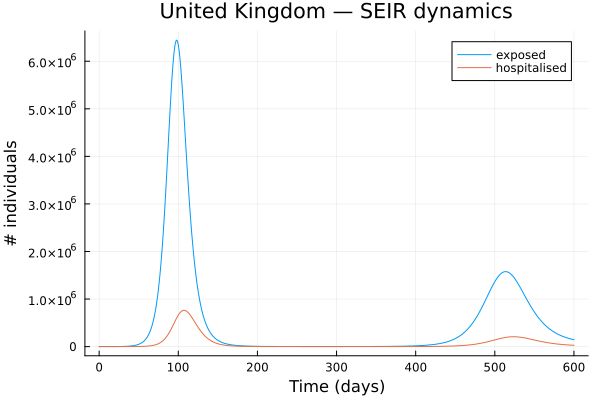
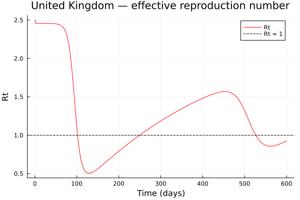

Country and pathogen data
Daedalus.jl bundles demographic, economic, and epidemiological data that mirrors the R package {daedalus.data}. All data access is provided through the DataLoader sub-module, which lazy-loads CSV files on first access and caches results for subsequent calls.
Listing available data
using Daedalus
# All countries with bundled demographic + economic data
countries = Daedalus.DataLoader.list_countries()
println("$(length(countries)) countries available")
println("First five: ", countries[1:5])68 countries available
First five: ["Argentina", "Australia", "Austria", "Belgium", "Brazil"]# All seven reference pathogens
Daedalus.DataLoader.list_pathogens()7-element Vector{String}:
"sars-cov-1"
"influenza 2009"
"sars-cov-2 pre-alpha"
"influenza 1918"
"sars-cov-2 omicron"
"influenza 1957"
"sars-cov-2 delta"# Pandemic response (economic closure) strategies
Daedalus.DataLoader.list_closure_strategies()4-element Vector{String}:
"none"
"school_closures"
"economic_closures"
"elimination"# Pre-pandemic vaccine investment scenarios
Daedalus.DataLoader.list_vaccination_scenarios()4-element Vector{String}:
"medium"
"none"
"high"
"low"Country data
DataLoader.get_country returns a DataLoader.CountryData struct containing demography, a 4×4 social contact matrix, sector workforce counts, gross value added (GVA) per sector, and hospital capacity.
using Daedalus
uk = Daedalus.DataLoader.get_country("United Kingdom")
println("Demography (4 age groups): ", uk.demography)
println("Hospital capacity (spare beds): ", uk.hospital_capacity)
println("Number of economic sectors: ", length(uk.workers))Demography (4 age groups): [3.92449e6, 1.1762039e7, 3.9536463e7, 1.2663012e7]
Hospital capacity (spare beds): 26219.0
Number of economic sectors: 45# 4×4 social contact matrix
uk.contact_matrix4×4 Matrix{Float64}:
1.91579 1.53793 4.705 0.286362
0.513141 8.73392 5.87459 0.741848
0.46703 1.74768 7.83018 1.06858
0.118052 0.75483 3.53149 1.52124Pathogen data
DataLoader.get_pathogen returns an DataLoader.InfectionData struct with all epidemiological parameters derived from the seven reference pathogens.
using Daedalus
delta = Daedalus.DataLoader.get_pathogen("sars-cov-2 delta")
deltaDaedalus.DataLoader.InfectionData(3.0, 0.25, 0.595, 0.58, 0.25, 0.47619047619047616, 0.13157894736842105, 0.13157894736842105, 0.0027397260273972603, [1.2436974789915967e-5, 0.00021557422969187677, 0.03934920634920635, 0.12320378151260505], [1.0, 0.1875, 0.08061018437225638, 0.2884858044164038], [2.96e-5, 9.620000000000001e-5, 0.007549233333333334, 0.08459125])Preparing country inputs for the model
Pass a country name string and a pathogen name to daedalus to run the model with country-specific demography, contacts, and workforce data:
using Daedalus
result = daedalus("United Kingdom", "sars-cov-2 delta", time_end=600.0)(sol = SciMLBase.ODESolution{Float64, 2, Vector{Vector{Float64}}, Nothing, Nothing, Vector{Float64}, Vector{Vector{Vector{Float64}}}, Nothing, SciMLBase.ODEProblem{Vector{Float64}, Tuple{Float64, Float64}, true, Daedalus.DaedalusStructs.Params, SciMLBase.ODEFunction{true, SciMLBase.AutoSpecialize, FunctionWrappersWrappers.FunctionWrappersWrapper{Tuple{FunctionWrappers.FunctionWrapper{Nothing, Tuple{Vector{Float64}, Vector{Float64}, Daedalus.DaedalusStructs.Params, Float64}}, FunctionWrappers.FunctionWrapper{Nothing, Tuple{Vector{ForwardDiff.Dual{ForwardDiff.Tag{DiffEqBase.OrdinaryDiffEqTag, Float64}, Float64, 1}}, Vector{ForwardDiff.Dual{ForwardDiff.Tag{DiffEqBase.OrdinaryDiffEqTag, Float64}, Float64, 1}}, Daedalus.DaedalusStructs.Params, Float64}}, FunctionWrappers.FunctionWrapper{Nothing, Tuple{Vector{ForwardDiff.Dual{ForwardDiff.Tag{DiffEqBase.OrdinaryDiffEqTag, Float64}, Float64, 1}}, Vector{Float64}, Daedalus.DaedalusStructs.Params, ForwardDiff.Dual{ForwardDiff.Tag{DiffEqBase.OrdinaryDiffEqTag, Float64}, Float64, 1}}}, FunctionWrappers.FunctionWrapper{Nothing, Tuple{Vector{ForwardDiff.Dual{ForwardDiff.Tag{DiffEqBase.OrdinaryDiffEqTag, Float64}, Float64, 1}}, Vector{ForwardDiff.Dual{ForwardDiff.Tag{DiffEqBase.OrdinaryDiffEqTag, Float64}, Float64, 1}}, Daedalus.DaedalusStructs.Params, ForwardDiff.Dual{ForwardDiff.Tag{DiffEqBase.OrdinaryDiffEqTag, Float64}, Float64, 1}}}}, FunctionWrappersWrappers.AllowNonIsBits, FunctionWrappersWrappers.SingleCacheStorage}, LinearAlgebra.UniformScaling{Bool}, Nothing, Nothing, Nothing, Nothing, Nothing, Nothing, Nothing, Nothing, Nothing, Nothing, Nothing, Nothing, typeof(SciMLBase.DEFAULT_OBSERVED), Nothing, Nothing, Nothing, Nothing}, Base.Pairs{Symbol, Union{}, Nothing, @NamedTuple{}}, SciMLBase.StandardODEProblem}, OrdinaryDiffEqCore.CompositeAlgorithm{0, Tuple{OrdinaryDiffEqTsit5.Tsit5{typeof(OrdinaryDiffEqCore.trivial_limiter!), typeof(OrdinaryDiffEqCore.trivial_limiter!), Static.False}, OrdinaryDiffEqVerner.Vern7{typeof(OrdinaryDiffEqCore.trivial_limiter!), typeof(OrdinaryDiffEqCore.trivial_limiter!), Static.False, Val{true}}, OrdinaryDiffEqRosenbrock.Rosenbrock23{0, ADTypes.AutoFiniteDiff{Val{:forward}, Val{:forward}, Val{:hcentral}, Nothing, Nothing, Int64}, Nothing, typeof(OrdinaryDiffEqCore.DEFAULT_PRECS), Val{:forward}(), true, nothing, typeof(OrdinaryDiffEqCore.trivial_limiter!), typeof(OrdinaryDiffEqCore.trivial_limiter!)}, OrdinaryDiffEqRosenbrock.Rodas5P{0, ADTypes.AutoFiniteDiff{Val{:forward}, Val{:forward}, Val{:hcentral}, Nothing, Nothing, Int64}, Nothing, typeof(OrdinaryDiffEqCore.DEFAULT_PRECS), Val{:forward}(), true, nothing, typeof(OrdinaryDiffEqCore.trivial_limiter!), typeof(OrdinaryDiffEqCore.trivial_limiter!)}, OrdinaryDiffEqBDF.FBDF{5, 0, ADTypes.AutoFiniteDiff{Val{:forward}, Val{:forward}, Val{:hcentral}, Nothing, Nothing, Int64}, Nothing, OrdinaryDiffEqNonlinearSolve.NLNewton{Rational{Int64}, Rational{Int64}, Rational{Int64}, Nothing}, typeof(OrdinaryDiffEqCore.DEFAULT_PRECS), Val{:forward}(), true, nothing, Nothing, Nothing, typeof(OrdinaryDiffEqCore.trivial_limiter!)}, OrdinaryDiffEqBDF.FBDF{5, 0, ADTypes.AutoFiniteDiff{Val{:forward}, Val{:forward}, Val{:hcentral}, Nothing, Nothing, Int64}, LinearSolve.KrylovJL{typeof(Krylov.gmres!), Int64, Nothing, Tuple{}, Base.Pairs{Symbol, Union{}, Nothing, @NamedTuple{}}}, OrdinaryDiffEqNonlinearSolve.NLNewton{Rational{Int64}, Rational{Int64}, Rational{Int64}, Nothing}, typeof(OrdinaryDiffEqCore.DEFAULT_PRECS), Val{:forward}(), true, nothing, Nothing, Nothing, typeof(OrdinaryDiffEqCore.trivial_limiter!)}}, OrdinaryDiffEqCore.AutoSwitchCache{Tuple{OrdinaryDiffEqTsit5.Tsit5{typeof(OrdinaryDiffEqCore.trivial_limiter!), typeof(OrdinaryDiffEqCore.trivial_limiter!), Static.False}, OrdinaryDiffEqVerner.Vern7{typeof(OrdinaryDiffEqCore.trivial_limiter!), typeof(OrdinaryDiffEqCore.trivial_limiter!), Static.False, Val{true}}}, Tuple{OrdinaryDiffEqRosenbrock.Rosenbrock23{0, ADTypes.AutoFiniteDiff{Val{:forward}, Val{:forward}, Val{:hcentral}, Nothing, Nothing, Int64}, Nothing, typeof(OrdinaryDiffEqCore.DEFAULT_PRECS), Val{:forward}(), true, nothing, typeof(OrdinaryDiffEqCore.trivial_limiter!), typeof(OrdinaryDiffEqCore.trivial_limiter!)}, OrdinaryDiffEqRosenbrock.Rodas5P{0, ADTypes.AutoFiniteDiff{Val{:forward}, Val{:forward}, Val{:hcentral}, Nothing, Nothing, Int64}, Nothing, typeof(OrdinaryDiffEqCore.DEFAULT_PRECS), Val{:forward}(), true, nothing, typeof(OrdinaryDiffEqCore.trivial_limiter!), typeof(OrdinaryDiffEqCore.trivial_limiter!)}, OrdinaryDiffEqBDF.FBDF{5, 0, ADTypes.AutoFiniteDiff{Val{:forward}, Val{:forward}, Val{:hcentral}, Nothing, Nothing, Int64}, Nothing, OrdinaryDiffEqNonlinearSolve.NLNewton{Rational{Int64}, Rational{Int64}, Rational{Int64}, Nothing}, typeof(OrdinaryDiffEqCore.DEFAULT_PRECS), Val{:forward}(), true, nothing, Nothing, Nothing, typeof(OrdinaryDiffEqCore.trivial_limiter!)}, OrdinaryDiffEqBDF.FBDF{5, 0, ADTypes.AutoFiniteDiff{Val{:forward}, Val{:forward}, Val{:hcentral}, Nothing, Nothing, Int64}, LinearSolve.KrylovJL{typeof(Krylov.gmres!), Int64, Nothing, Tuple{}, Base.Pairs{Symbol, Union{}, Nothing, @NamedTuple{}}}, OrdinaryDiffEqNonlinearSolve.NLNewton{Rational{Int64}, Rational{Int64}, Rational{Int64}, Nothing}, typeof(OrdinaryDiffEqCore.DEFAULT_PRECS), Val{:forward}(), true, nothing, Nothing, Nothing, typeof(OrdinaryDiffEqCore.trivial_limiter!)}}, Rational{Int64}, Int64}}, OrdinaryDiffEqCore.InterpolationData{SciMLBase.ODEFunction{true, SciMLBase.AutoSpecialize, FunctionWrappersWrappers.FunctionWrappersWrapper{Tuple{FunctionWrappers.FunctionWrapper{Nothing, Tuple{Vector{Float64}, Vector{Float64}, Daedalus.DaedalusStructs.Params, Float64}}, FunctionWrappers.FunctionWrapper{Nothing, Tuple{Vector{ForwardDiff.Dual{ForwardDiff.Tag{DiffEqBase.OrdinaryDiffEqTag, Float64}, Float64, 1}}, Vector{ForwardDiff.Dual{ForwardDiff.Tag{DiffEqBase.OrdinaryDiffEqTag, Float64}, Float64, 1}}, Daedalus.DaedalusStructs.Params, Float64}}, FunctionWrappers.FunctionWrapper{Nothing, Tuple{Vector{ForwardDiff.Dual{ForwardDiff.Tag{DiffEqBase.OrdinaryDiffEqTag, Float64}, Float64, 1}}, Vector{Float64}, Daedalus.DaedalusStructs.Params, ForwardDiff.Dual{ForwardDiff.Tag{DiffEqBase.OrdinaryDiffEqTag, Float64}, Float64, 1}}}, FunctionWrappers.FunctionWrapper{Nothing, Tuple{Vector{ForwardDiff.Dual{ForwardDiff.Tag{DiffEqBase.OrdinaryDiffEqTag, Float64}, Float64, 1}}, Vector{ForwardDiff.Dual{ForwardDiff.Tag{DiffEqBase.OrdinaryDiffEqTag, Float64}, Float64, 1}}, Daedalus.DaedalusStructs.Params, ForwardDiff.Dual{ForwardDiff.Tag{DiffEqBase.OrdinaryDiffEqTag, Float64}, Float64, 1}}}}, FunctionWrappersWrappers.AllowNonIsBits, FunctionWrappersWrappers.SingleCacheStorage}, LinearAlgebra.UniformScaling{Bool}, Nothing, Nothing, Nothing, Nothing, Nothing, Nothing, Nothing, Nothing, Nothing, Nothing, Nothing, Nothing, typeof(SciMLBase.DEFAULT_OBSERVED), Nothing, Nothing, Nothing, Nothing}, Vector{Vector{Float64}}, Vector{Float64}, Vector{Vector{Vector{Float64}}}, Vector{Int64}, OrdinaryDiffEqCore.DefaultCache{OrdinaryDiffEqTsit5.Tsit5Cache{Vector{Float64}, Vector{Float64}, Vector{Float64}, typeof(OrdinaryDiffEqCore.trivial_limiter!), typeof(OrdinaryDiffEqCore.trivial_limiter!), Static.False}, OrdinaryDiffEqVerner.Vern7Cache{Vector{Float64}, Vector{Float64}, Vector{Float64}, typeof(OrdinaryDiffEqCore.trivial_limiter!), typeof(OrdinaryDiffEqCore.trivial_limiter!), Static.False, Val{true}}, OrdinaryDiffEqRosenbrock.Rosenbrock23Cache{Vector{Float64}, Vector{Float64}, Vector{Float64}, Matrix{Float64}, Matrix{Float64}, OrdinaryDiffEqRosenbrock.Rosenbrock23Tableau{Float64}, SciMLBase.TimeGradientWrapper{true, SciMLBase.ODEFunction{true, SciMLBase.AutoSpecialize, FunctionWrappersWrappers.FunctionWrappersWrapper{Tuple{FunctionWrappers.FunctionWrapper{Nothing, Tuple{Vector{Float64}, Vector{Float64}, Daedalus.DaedalusStructs.Params, Float64}}, FunctionWrappers.FunctionWrapper{Nothing, Tuple{Vector{ForwardDiff.Dual{ForwardDiff.Tag{DiffEqBase.OrdinaryDiffEqTag, Float64}, Float64, 1}}, Vector{ForwardDiff.Dual{ForwardDiff.Tag{DiffEqBase.OrdinaryDiffEqTag, Float64}, Float64, 1}}, Daedalus.DaedalusStructs.Params, Float64}}, FunctionWrappers.FunctionWrapper{Nothing, Tuple{Vector{ForwardDiff.Dual{ForwardDiff.Tag{DiffEqBase.OrdinaryDiffEqTag, Float64}, Float64, 1}}, Vector{Float64}, Daedalus.DaedalusStructs.Params, ForwardDiff.Dual{ForwardDiff.Tag{DiffEqBase.OrdinaryDiffEqTag, Float64}, Float64, 1}}}, FunctionWrappers.FunctionWrapper{Nothing, Tuple{Vector{ForwardDiff.Dual{ForwardDiff.Tag{DiffEqBase.OrdinaryDiffEqTag, Float64}, Float64, 1}}, Vector{ForwardDiff.Dual{ForwardDiff.Tag{DiffEqBase.OrdinaryDiffEqTag, Float64}, Float64, 1}}, Daedalus.DaedalusStructs.Params, ForwardDiff.Dual{ForwardDiff.Tag{DiffEqBase.OrdinaryDiffEqTag, Float64}, Float64, 1}}}}, FunctionWrappersWrappers.AllowNonIsBits, FunctionWrappersWrappers.SingleCacheStorage}, LinearAlgebra.UniformScaling{Bool}, Nothing, Nothing, Nothing, Nothing, Nothing, Nothing, Nothing, Nothing, Nothing, Nothing, Nothing, Nothing, typeof(SciMLBase.DEFAULT_OBSERVED), Nothing, Nothing, Nothing, Nothing}, Vector{Float64}, Daedalus.DaedalusStructs.Params}, SciMLBase.UJacobianWrapper{true, SciMLBase.ODEFunction{true, SciMLBase.AutoSpecialize, FunctionWrappersWrappers.FunctionWrappersWrapper{Tuple{FunctionWrappers.FunctionWrapper{Nothing, Tuple{Vector{Float64}, Vector{Float64}, Daedalus.DaedalusStructs.Params, Float64}}, FunctionWrappers.FunctionWrapper{Nothing, Tuple{Vector{ForwardDiff.Dual{ForwardDiff.Tag{DiffEqBase.OrdinaryDiffEqTag, Float64}, Float64, 1}}, Vector{ForwardDiff.Dual{ForwardDiff.Tag{DiffEqBase.OrdinaryDiffEqTag, Float64}, Float64, 1}}, Daedalus.DaedalusStructs.Params, Float64}}, FunctionWrappers.FunctionWrapper{Nothing, Tuple{Vector{ForwardDiff.Dual{ForwardDiff.Tag{DiffEqBase.OrdinaryDiffEqTag, Float64}, Float64, 1}}, Vector{Float64}, Daedalus.DaedalusStructs.Params, ForwardDiff.Dual{ForwardDiff.Tag{DiffEqBase.OrdinaryDiffEqTag, Float64}, Float64, 1}}}, FunctionWrappers.FunctionWrapper{Nothing, Tuple{Vector{ForwardDiff.Dual{ForwardDiff.Tag{DiffEqBase.OrdinaryDiffEqTag, Float64}, Float64, 1}}, Vector{ForwardDiff.Dual{ForwardDiff.Tag{DiffEqBase.OrdinaryDiffEqTag, Float64}, Float64, 1}}, Daedalus.DaedalusStructs.Params, ForwardDiff.Dual{ForwardDiff.Tag{DiffEqBase.OrdinaryDiffEqTag, Float64}, Float64, 1}}}}, FunctionWrappersWrappers.AllowNonIsBits, FunctionWrappersWrappers.SingleCacheStorage}, LinearAlgebra.UniformScaling{Bool}, Nothing, Nothing, Nothing, Nothing, Nothing, Nothing, Nothing, Nothing, Nothing, Nothing, Nothing, Nothing, typeof(SciMLBase.DEFAULT_OBSERVED), Nothing, Nothing, Nothing, Nothing}, Float64, Daedalus.DaedalusStructs.Params}, LinearSolve.LinearCache{Matrix{Float64}, Vector{Float64}, Vector{Float64}, SciMLBase.NullParameters, LinearSolve.DefaultLinearSolver, LinearSolve.DefaultLinearSolverInit{LinearAlgebra.LU{Float64, Matrix{Float64}, Vector{Int64}}, LinearAlgebra.QRCompactWY{Float64, Matrix{Float64}, Matrix{Float64}}, Nothing, Nothing, Nothing, Nothing, Nothing, Nothing, Tuple{LinearAlgebra.LU{Float64, Matrix{Float64}, Vector{Int64}}, Vector{Int64}}, Tuple{LinearAlgebra.LU{Float64, Matrix{Float64}, Vector{Int64}}, Vector{Int64}}, Nothing, Nothing, Nothing, LinearAlgebra.SVD{Float64, Float64, Matrix{Float64}, Vector{Float64}}, LinearAlgebra.Cholesky{Float64, Matrix{Float64}}, LinearAlgebra.Cholesky{Float64, Matrix{Float64}}, Tuple{LinearAlgebra.LU{Float64, Matrix{Float64}, Vector{Int32}}, Base.RefValue{Int32}}, Tuple{LinearAlgebra.LU{Float64, Matrix{Float64}, Vector{Int64}}, Base.RefValue{Int64}}, LinearAlgebra.QRPivoted{Float64, Matrix{Float64}, Vector{Float64}, Vector{Int64}}, Nothing, Nothing, Nothing, Nothing, Nothing, Matrix{Float64}, Vector{Float64}}, LinearSolve.InvPreconditioner{LinearAlgebra.Diagonal{Float64, Vector{Float64}}}, LinearAlgebra.Diagonal{Float64, Vector{Float64}}, Float64, LinearSolve.LinearVerbosity{SciMLLogging.Silent, SciMLLogging.Silent, SciMLLogging.Silent, SciMLLogging.Silent, SciMLLogging.Silent, SciMLLogging.Silent, SciMLLogging.Silent, SciMLLogging.Silent, SciMLLogging.Silent, SciMLLogging.WarnLevel, SciMLLogging.WarnLevel, SciMLLogging.Silent, SciMLLogging.Silent, SciMLLogging.Silent, SciMLLogging.Silent, SciMLLogging.Silent, SciMLLogging.Silent}, Bool, LinearSolve.LinearSolveAdjoint{Missing}}, Tuple{DifferentiationInterfaceFiniteDiffExt.FiniteDiffTwoArgJacobianPrep{Nothing, FiniteDiff.JacobianCache{Vector{Float64}, Vector{Float64}, Vector{Float64}, Vector{Float64}, UnitRange{Int64}, Nothing, Val{:forward}(), Float64}, Float64, Float64, Int64}, DifferentiationInterfaceFiniteDiffExt.FiniteDiffTwoArgJacobianPrep{Nothing, FiniteDiff.JacobianCache{Vector{Float64}, Vector{Float64}, Vector{Float64}, Vector{Float64}, UnitRange{Int64}, Nothing, Val{:forward}(), Float64}, Float64, Float64, Int64}}, Tuple{DifferentiationInterfaceFiniteDiffExt.FiniteDiffTwoArgDerivativePrep{Tuple{SciMLBase.TimeGradientWrapper{true, SciMLBase.ODEFunction{true, SciMLBase.AutoSpecialize, FunctionWrappersWrappers.FunctionWrappersWrapper{Tuple{FunctionWrappers.FunctionWrapper{Nothing, Tuple{Vector{Float64}, Vector{Float64}, Daedalus.DaedalusStructs.Params, Float64}}, FunctionWrappers.FunctionWrapper{Nothing, Tuple{Vector{ForwardDiff.Dual{ForwardDiff.Tag{DiffEqBase.OrdinaryDiffEqTag, Float64}, Float64, 1}}, Vector{ForwardDiff.Dual{ForwardDiff.Tag{DiffEqBase.OrdinaryDiffEqTag, Float64}, Float64, 1}}, Daedalus.DaedalusStructs.Params, Float64}}, FunctionWrappers.FunctionWrapper{Nothing, Tuple{Vector{ForwardDiff.Dual{ForwardDiff.Tag{DiffEqBase.OrdinaryDiffEqTag, Float64}, Float64, 1}}, Vector{Float64}, Daedalus.DaedalusStructs.Params, ForwardDiff.Dual{ForwardDiff.Tag{DiffEqBase.OrdinaryDiffEqTag, Float64}, Float64, 1}}}, FunctionWrappers.FunctionWrapper{Nothing, Tuple{Vector{ForwardDiff.Dual{ForwardDiff.Tag{DiffEqBase.OrdinaryDiffEqTag, Float64}, Float64, 1}}, Vector{ForwardDiff.Dual{ForwardDiff.Tag{DiffEqBase.OrdinaryDiffEqTag, Float64}, Float64, 1}}, Daedalus.DaedalusStructs.Params, ForwardDiff.Dual{ForwardDiff.Tag{DiffEqBase.OrdinaryDiffEqTag, Float64}, Float64, 1}}}}, FunctionWrappersWrappers.AllowNonIsBits, FunctionWrappersWrappers.SingleCacheStorage}, LinearAlgebra.UniformScaling{Bool}, Nothing, Nothing, Nothing, Nothing, Nothing, Nothing, Nothing, Nothing, Nothing, Nothing, Nothing, Nothing, typeof(SciMLBase.DEFAULT_OBSERVED), Nothing, Nothing, Nothing, Nothing}, Vector{Float64}, Daedalus.DaedalusStructs.Params}, Vector{Float64}, ADTypes.AutoFiniteDiff{Val{:forward}, Val{:forward}, Val{:hcentral}, Nothing, Nothing, Int64}, Float64, Tuple{}}, FiniteDiff.GradientCache{Nothing, Vector{Float64}, Vector{Float64}, Float64, Val{:forward}(), Float64, Val{true}()}, Float64, Float64, Int64}, DifferentiationInterfaceFiniteDiffExt.FiniteDiffTwoArgDerivativePrep{Tuple{SciMLBase.TimeGradientWrapper{true, SciMLBase.ODEFunction{true, SciMLBase.AutoSpecialize, FunctionWrappersWrappers.FunctionWrappersWrapper{Tuple{FunctionWrappers.FunctionWrapper{Nothing, Tuple{Vector{Float64}, Vector{Float64}, Daedalus.DaedalusStructs.Params, Float64}}, FunctionWrappers.FunctionWrapper{Nothing, Tuple{Vector{ForwardDiff.Dual{ForwardDiff.Tag{DiffEqBase.OrdinaryDiffEqTag, Float64}, Float64, 1}}, Vector{ForwardDiff.Dual{ForwardDiff.Tag{DiffEqBase.OrdinaryDiffEqTag, Float64}, Float64, 1}}, Daedalus.DaedalusStructs.Params, Float64}}, FunctionWrappers.FunctionWrapper{Nothing, Tuple{Vector{ForwardDiff.Dual{ForwardDiff.Tag{DiffEqBase.OrdinaryDiffEqTag, Float64}, Float64, 1}}, Vector{Float64}, Daedalus.DaedalusStructs.Params, ForwardDiff.Dual{ForwardDiff.Tag{DiffEqBase.OrdinaryDiffEqTag, Float64}, Float64, 1}}}, FunctionWrappers.FunctionWrapper{Nothing, Tuple{Vector{ForwardDiff.Dual{ForwardDiff.Tag{DiffEqBase.OrdinaryDiffEqTag, Float64}, Float64, 1}}, Vector{ForwardDiff.Dual{ForwardDiff.Tag{DiffEqBase.OrdinaryDiffEqTag, Float64}, Float64, 1}}, Daedalus.DaedalusStructs.Params, ForwardDiff.Dual{ForwardDiff.Tag{DiffEqBase.OrdinaryDiffEqTag, Float64}, Float64, 1}}}}, FunctionWrappersWrappers.AllowNonIsBits, FunctionWrappersWrappers.SingleCacheStorage}, LinearAlgebra.UniformScaling{Bool}, Nothing, Nothing, Nothing, Nothing, Nothing, Nothing, Nothing, Nothing, Nothing, Nothing, Nothing, Nothing, typeof(SciMLBase.DEFAULT_OBSERVED), Nothing, Nothing, Nothing, Nothing}, Vector{Float64}, Daedalus.DaedalusStructs.Params}, Vector{Float64}, ADTypes.AutoFiniteDiff{Val{:forward}, Val{:forward}, Val{:hcentral}, Nothing, Nothing, Int64}, Float64, Tuple{}}, FiniteDiff.GradientCache{Nothing, Vector{Float64}, Vector{Float64}, Float64, Val{:forward}(), Float64, Val{true}()}, Float64, Float64, Int64}}, Float64, OrdinaryDiffEqRosenbrock.Rosenbrock23{0, ADTypes.AutoFiniteDiff{Val{:forward}, Val{:forward}, Val{:hcentral}, Nothing, Nothing, Int64}, Nothing, typeof(OrdinaryDiffEqCore.DEFAULT_PRECS), Val{:forward}(), true, nothing, typeof(OrdinaryDiffEqCore.trivial_limiter!), typeof(OrdinaryDiffEqCore.trivial_limiter!)}, Nothing, typeof(OrdinaryDiffEqCore.trivial_limiter!), typeof(OrdinaryDiffEqCore.trivial_limiter!)}, OrdinaryDiffEqRosenbrock.RosenbrockCache{Vector{Float64}, Vector{Float64}, Float64, Vector{Float64}, Matrix{Float64}, Matrix{Float64}, OrdinaryDiffEqRosenbrock.RodasTableau{Float64, Float64, Vector{Float64}}, SciMLBase.TimeGradientWrapper{true, SciMLBase.ODEFunction{true, SciMLBase.AutoSpecialize, FunctionWrappersWrappers.FunctionWrappersWrapper{Tuple{FunctionWrappers.FunctionWrapper{Nothing, Tuple{Vector{Float64}, Vector{Float64}, Daedalus.DaedalusStructs.Params, Float64}}, FunctionWrappers.FunctionWrapper{Nothing, Tuple{Vector{ForwardDiff.Dual{ForwardDiff.Tag{DiffEqBase.OrdinaryDiffEqTag, Float64}, Float64, 1}}, Vector{ForwardDiff.Dual{ForwardDiff.Tag{DiffEqBase.OrdinaryDiffEqTag, Float64}, Float64, 1}}, Daedalus.DaedalusStructs.Params, Float64}}, FunctionWrappers.FunctionWrapper{Nothing, Tuple{Vector{ForwardDiff.Dual{ForwardDiff.Tag{DiffEqBase.OrdinaryDiffEqTag, Float64}, Float64, 1}}, Vector{Float64}, Daedalus.DaedalusStructs.Params, ForwardDiff.Dual{ForwardDiff.Tag{DiffEqBase.OrdinaryDiffEqTag, Float64}, Float64, 1}}}, FunctionWrappers.FunctionWrapper{Nothing, Tuple{Vector{ForwardDiff.Dual{ForwardDiff.Tag{DiffEqBase.OrdinaryDiffEqTag, Float64}, Float64, 1}}, Vector{ForwardDiff.Dual{ForwardDiff.Tag{DiffEqBase.OrdinaryDiffEqTag, Float64}, Float64, 1}}, Daedalus.DaedalusStructs.Params, ForwardDiff.Dual{ForwardDiff.Tag{DiffEqBase.OrdinaryDiffEqTag, Float64}, Float64, 1}}}}, FunctionWrappersWrappers.AllowNonIsBits, FunctionWrappersWrappers.SingleCacheStorage}, LinearAlgebra.UniformScaling{Bool}, Nothing, Nothing, Nothing, Nothing, Nothing, Nothing, Nothing, Nothing, Nothing, Nothing, Nothing, Nothing, typeof(SciMLBase.DEFAULT_OBSERVED), Nothing, Nothing, Nothing, Nothing}, Vector{Float64}, Daedalus.DaedalusStructs.Params}, SciMLBase.UJacobianWrapper{true, SciMLBase.ODEFunction{true, SciMLBase.AutoSpecialize, FunctionWrappersWrappers.FunctionWrappersWrapper{Tuple{FunctionWrappers.FunctionWrapper{Nothing, Tuple{Vector{Float64}, Vector{Float64}, Daedalus.DaedalusStructs.Params, Float64}}, FunctionWrappers.FunctionWrapper{Nothing, Tuple{Vector{ForwardDiff.Dual{ForwardDiff.Tag{DiffEqBase.OrdinaryDiffEqTag, Float64}, Float64, 1}}, Vector{ForwardDiff.Dual{ForwardDiff.Tag{DiffEqBase.OrdinaryDiffEqTag, Float64}, Float64, 1}}, Daedalus.DaedalusStructs.Params, Float64}}, FunctionWrappers.FunctionWrapper{Nothing, Tuple{Vector{ForwardDiff.Dual{ForwardDiff.Tag{DiffEqBase.OrdinaryDiffEqTag, Float64}, Float64, 1}}, Vector{Float64}, Daedalus.DaedalusStructs.Params, ForwardDiff.Dual{ForwardDiff.Tag{DiffEqBase.OrdinaryDiffEqTag, Float64}, Float64, 1}}}, FunctionWrappers.FunctionWrapper{Nothing, Tuple{Vector{ForwardDiff.Dual{ForwardDiff.Tag{DiffEqBase.OrdinaryDiffEqTag, Float64}, Float64, 1}}, Vector{ForwardDiff.Dual{ForwardDiff.Tag{DiffEqBase.OrdinaryDiffEqTag, Float64}, Float64, 1}}, Daedalus.DaedalusStructs.Params, ForwardDiff.Dual{ForwardDiff.Tag{DiffEqBase.OrdinaryDiffEqTag, Float64}, Float64, 1}}}}, FunctionWrappersWrappers.AllowNonIsBits, FunctionWrappersWrappers.SingleCacheStorage}, LinearAlgebra.UniformScaling{Bool}, Nothing, Nothing, Nothing, Nothing, Nothing, Nothing, Nothing, Nothing, Nothing, Nothing, Nothing, Nothing, typeof(SciMLBase.DEFAULT_OBSERVED), Nothing, Nothing, Nothing, Nothing}, Float64, Daedalus.DaedalusStructs.Params}, LinearSolve.LinearCache{Matrix{Float64}, Vector{Float64}, Vector{Float64}, SciMLBase.NullParameters, LinearSolve.DefaultLinearSolver, LinearSolve.DefaultLinearSolverInit{LinearAlgebra.LU{Float64, Matrix{Float64}, Vector{Int64}}, LinearAlgebra.QRCompactWY{Float64, Matrix{Float64}, Matrix{Float64}}, Nothing, Nothing, Nothing, Nothing, Nothing, Nothing, Tuple{LinearAlgebra.LU{Float64, Matrix{Float64}, Vector{Int64}}, Vector{Int64}}, Tuple{LinearAlgebra.LU{Float64, Matrix{Float64}, Vector{Int64}}, Vector{Int64}}, Nothing, Nothing, Nothing, LinearAlgebra.SVD{Float64, Float64, Matrix{Float64}, Vector{Float64}}, LinearAlgebra.Cholesky{Float64, Matrix{Float64}}, LinearAlgebra.Cholesky{Float64, Matrix{Float64}}, Tuple{LinearAlgebra.LU{Float64, Matrix{Float64}, Vector{Int32}}, Base.RefValue{Int32}}, Tuple{LinearAlgebra.LU{Float64, Matrix{Float64}, Vector{Int64}}, Base.RefValue{Int64}}, LinearAlgebra.QRPivoted{Float64, Matrix{Float64}, Vector{Float64}, Vector{Int64}}, Nothing, Nothing, Nothing, Nothing, Nothing, Matrix{Float64}, Vector{Float64}}, LinearSolve.InvPreconditioner{LinearAlgebra.Diagonal{Float64, Vector{Float64}}}, LinearAlgebra.Diagonal{Float64, Vector{Float64}}, Float64, LinearSolve.LinearVerbosity{SciMLLogging.Silent, SciMLLogging.Silent, SciMLLogging.Silent, SciMLLogging.Silent, SciMLLogging.Silent, SciMLLogging.Silent, SciMLLogging.Silent, SciMLLogging.Silent, SciMLLogging.Silent, SciMLLogging.WarnLevel, SciMLLogging.WarnLevel, SciMLLogging.Silent, SciMLLogging.Silent, SciMLLogging.Silent, SciMLLogging.Silent, SciMLLogging.Silent, SciMLLogging.Silent}, Bool, LinearSolve.LinearSolveAdjoint{Missing}}, Tuple{DifferentiationInterfaceFiniteDiffExt.FiniteDiffTwoArgJacobianPrep{Nothing, FiniteDiff.JacobianCache{Vector{Float64}, Vector{Float64}, Vector{Float64}, Vector{Float64}, UnitRange{Int64}, Nothing, Val{:forward}(), Float64}, Float64, Float64, Int64}, DifferentiationInterfaceFiniteDiffExt.FiniteDiffTwoArgJacobianPrep{Nothing, FiniteDiff.JacobianCache{Vector{Float64}, Vector{Float64}, Vector{Float64}, Vector{Float64}, UnitRange{Int64}, Nothing, Val{:forward}(), Float64}, Float64, Float64, Int64}}, Tuple{DifferentiationInterfaceFiniteDiffExt.FiniteDiffTwoArgDerivativePrep{Tuple{SciMLBase.TimeGradientWrapper{true, SciMLBase.ODEFunction{true, SciMLBase.AutoSpecialize, FunctionWrappersWrappers.FunctionWrappersWrapper{Tuple{FunctionWrappers.FunctionWrapper{Nothing, Tuple{Vector{Float64}, Vector{Float64}, Daedalus.DaedalusStructs.Params, Float64}}, FunctionWrappers.FunctionWrapper{Nothing, Tuple{Vector{ForwardDiff.Dual{ForwardDiff.Tag{DiffEqBase.OrdinaryDiffEqTag, Float64}, Float64, 1}}, Vector{ForwardDiff.Dual{ForwardDiff.Tag{DiffEqBase.OrdinaryDiffEqTag, Float64}, Float64, 1}}, Daedalus.DaedalusStructs.Params, Float64}}, FunctionWrappers.FunctionWrapper{Nothing, Tuple{Vector{ForwardDiff.Dual{ForwardDiff.Tag{DiffEqBase.OrdinaryDiffEqTag, Float64}, Float64, 1}}, Vector{Float64}, Daedalus.DaedalusStructs.Params, ForwardDiff.Dual{ForwardDiff.Tag{DiffEqBase.OrdinaryDiffEqTag, Float64}, Float64, 1}}}, FunctionWrappers.FunctionWrapper{Nothing, Tuple{Vector{ForwardDiff.Dual{ForwardDiff.Tag{DiffEqBase.OrdinaryDiffEqTag, Float64}, Float64, 1}}, Vector{ForwardDiff.Dual{ForwardDiff.Tag{DiffEqBase.OrdinaryDiffEqTag, Float64}, Float64, 1}}, Daedalus.DaedalusStructs.Params, ForwardDiff.Dual{ForwardDiff.Tag{DiffEqBase.OrdinaryDiffEqTag, Float64}, Float64, 1}}}}, FunctionWrappersWrappers.AllowNonIsBits, FunctionWrappersWrappers.SingleCacheStorage}, LinearAlgebra.UniformScaling{Bool}, Nothing, Nothing, Nothing, Nothing, Nothing, Nothing, Nothing, Nothing, Nothing, Nothing, Nothing, Nothing, typeof(SciMLBase.DEFAULT_OBSERVED), Nothing, Nothing, Nothing, Nothing}, Vector{Float64}, Daedalus.DaedalusStructs.Params}, Vector{Float64}, ADTypes.AutoFiniteDiff{Val{:forward}, Val{:forward}, Val{:hcentral}, Nothing, Nothing, Int64}, Float64, Tuple{}}, FiniteDiff.GradientCache{Nothing, Vector{Float64}, Vector{Float64}, Float64, Val{:forward}(), Float64, Val{true}()}, Float64, Float64, Int64}, DifferentiationInterfaceFiniteDiffExt.FiniteDiffTwoArgDerivativePrep{Tuple{SciMLBase.TimeGradientWrapper{true, SciMLBase.ODEFunction{true, SciMLBase.AutoSpecialize, FunctionWrappersWrappers.FunctionWrappersWrapper{Tuple{FunctionWrappers.FunctionWrapper{Nothing, Tuple{Vector{Float64}, Vector{Float64}, Daedalus.DaedalusStructs.Params, Float64}}, FunctionWrappers.FunctionWrapper{Nothing, Tuple{Vector{ForwardDiff.Dual{ForwardDiff.Tag{DiffEqBase.OrdinaryDiffEqTag, Float64}, Float64, 1}}, Vector{ForwardDiff.Dual{ForwardDiff.Tag{DiffEqBase.OrdinaryDiffEqTag, Float64}, Float64, 1}}, Daedalus.DaedalusStructs.Params, Float64}}, FunctionWrappers.FunctionWrapper{Nothing, Tuple{Vector{ForwardDiff.Dual{ForwardDiff.Tag{DiffEqBase.OrdinaryDiffEqTag, Float64}, Float64, 1}}, Vector{Float64}, Daedalus.DaedalusStructs.Params, ForwardDiff.Dual{ForwardDiff.Tag{DiffEqBase.OrdinaryDiffEqTag, Float64}, Float64, 1}}}, FunctionWrappers.FunctionWrapper{Nothing, Tuple{Vector{ForwardDiff.Dual{ForwardDiff.Tag{DiffEqBase.OrdinaryDiffEqTag, Float64}, Float64, 1}}, Vector{ForwardDiff.Dual{ForwardDiff.Tag{DiffEqBase.OrdinaryDiffEqTag, Float64}, Float64, 1}}, Daedalus.DaedalusStructs.Params, ForwardDiff.Dual{ForwardDiff.Tag{DiffEqBase.OrdinaryDiffEqTag, Float64}, Float64, 1}}}}, FunctionWrappersWrappers.AllowNonIsBits, FunctionWrappersWrappers.SingleCacheStorage}, LinearAlgebra.UniformScaling{Bool}, Nothing, Nothing, Nothing, Nothing, Nothing, Nothing, Nothing, Nothing, Nothing, Nothing, Nothing, Nothing, typeof(SciMLBase.DEFAULT_OBSERVED), Nothing, Nothing, Nothing, Nothing}, Vector{Float64}, Daedalus.DaedalusStructs.Params}, Vector{Float64}, ADTypes.AutoFiniteDiff{Val{:forward}, Val{:forward}, Val{:hcentral}, Nothing, Nothing, Int64}, Float64, Tuple{}}, FiniteDiff.GradientCache{Nothing, Vector{Float64}, Vector{Float64}, Float64, Val{:forward}(), Float64, Val{true}()}, Float64, Float64, Int64}}, Float64, OrdinaryDiffEqRosenbrock.Rodas5P{0, ADTypes.AutoFiniteDiff{Val{:forward}, Val{:forward}, Val{:hcentral}, Nothing, Nothing, Int64}, Nothing, typeof(OrdinaryDiffEqCore.DEFAULT_PRECS), Val{:forward}(), true, nothing, typeof(OrdinaryDiffEqCore.trivial_limiter!), typeof(OrdinaryDiffEqCore.trivial_limiter!)}, typeof(OrdinaryDiffEqCore.trivial_limiter!), typeof(OrdinaryDiffEqCore.trivial_limiter!)}, OrdinaryDiffEqBDF.FBDFCache{5, OrdinaryDiffEqNonlinearSolve.NLSolver{OrdinaryDiffEqNonlinearSolve.NLNewton{Rational{Int64}, Rational{Int64}, Rational{Int64}, Nothing}, true, Vector{Float64}, Float64, Nothing, Float64, OrdinaryDiffEqNonlinearSolve.NLNewtonCache{Vector{Float64}, Float64, Float64, Vector{Float64}, Matrix{Float64}, Matrix{Float64}, SciMLBase.UJacobianWrapper{true, SciMLBase.ODEFunction{true, SciMLBase.AutoSpecialize, FunctionWrappersWrappers.FunctionWrappersWrapper{Tuple{FunctionWrappers.FunctionWrapper{Nothing, Tuple{Vector{Float64}, Vector{Float64}, Daedalus.DaedalusStructs.Params, Float64}}, FunctionWrappers.FunctionWrapper{Nothing, Tuple{Vector{ForwardDiff.Dual{ForwardDiff.Tag{DiffEqBase.OrdinaryDiffEqTag, Float64}, Float64, 1}}, Vector{ForwardDiff.Dual{ForwardDiff.Tag{DiffEqBase.OrdinaryDiffEqTag, Float64}, Float64, 1}}, Daedalus.DaedalusStructs.Params, Float64}}, FunctionWrappers.FunctionWrapper{Nothing, Tuple{Vector{ForwardDiff.Dual{ForwardDiff.Tag{DiffEqBase.OrdinaryDiffEqTag, Float64}, Float64, 1}}, Vector{Float64}, Daedalus.DaedalusStructs.Params, ForwardDiff.Dual{ForwardDiff.Tag{DiffEqBase.OrdinaryDiffEqTag, Float64}, Float64, 1}}}, FunctionWrappers.FunctionWrapper{Nothing, Tuple{Vector{ForwardDiff.Dual{ForwardDiff.Tag{DiffEqBase.OrdinaryDiffEqTag, Float64}, Float64, 1}}, Vector{ForwardDiff.Dual{ForwardDiff.Tag{DiffEqBase.OrdinaryDiffEqTag, Float64}, Float64, 1}}, Daedalus.DaedalusStructs.Params, ForwardDiff.Dual{ForwardDiff.Tag{DiffEqBase.OrdinaryDiffEqTag, Float64}, Float64, 1}}}}, FunctionWrappersWrappers.AllowNonIsBits, FunctionWrappersWrappers.SingleCacheStorage}, LinearAlgebra.UniformScaling{Bool}, Nothing, Nothing, Nothing, Nothing, Nothing, Nothing, Nothing, Nothing, Nothing, Nothing, Nothing, Nothing, typeof(SciMLBase.DEFAULT_OBSERVED), Nothing, Nothing, Nothing, Nothing}, Float64, Daedalus.DaedalusStructs.Params}, Tuple{DifferentiationInterfaceFiniteDiffExt.FiniteDiffTwoArgJacobianPrep{Nothing, FiniteDiff.JacobianCache{Vector{Float64}, Vector{Float64}, Vector{Float64}, Vector{Float64}, UnitRange{Int64}, Nothing, Val{:forward}(), Float64}, Float64, Float64, Int64}, DifferentiationInterfaceFiniteDiffExt.FiniteDiffTwoArgJacobianPrep{Nothing, FiniteDiff.JacobianCache{Vector{Float64}, Vector{Float64}, Vector{Float64}, Vector{Float64}, UnitRange{Int64}, Nothing, Val{:forward}(), Float64}, Float64, Float64, Int64}}, LinearSolve.LinearCache{Matrix{Float64}, Vector{Float64}, Vector{Float64}, SciMLBase.NullParameters, LinearSolve.DefaultLinearSolver, LinearSolve.DefaultLinearSolverInit{LinearAlgebra.LU{Float64, Matrix{Float64}, Vector{Int64}}, LinearAlgebra.QRCompactWY{Float64, Matrix{Float64}, Matrix{Float64}}, Nothing, Nothing, Nothing, Nothing, Nothing, Nothing, Tuple{LinearAlgebra.LU{Float64, Matrix{Float64}, Vector{Int64}}, Vector{Int64}}, Tuple{LinearAlgebra.LU{Float64, Matrix{Float64}, Vector{Int64}}, Vector{Int64}}, Nothing, Nothing, Nothing, LinearAlgebra.SVD{Float64, Float64, Matrix{Float64}, Vector{Float64}}, LinearAlgebra.Cholesky{Float64, Matrix{Float64}}, LinearAlgebra.Cholesky{Float64, Matrix{Float64}}, Tuple{LinearAlgebra.LU{Float64, Matrix{Float64}, Vector{Int32}}, Base.RefValue{Int32}}, Tuple{LinearAlgebra.LU{Float64, Matrix{Float64}, Vector{Int64}}, Base.RefValue{Int64}}, LinearAlgebra.QRPivoted{Float64, Matrix{Float64}, Vector{Float64}, Vector{Int64}}, Nothing, Nothing, Nothing, Nothing, Nothing, Matrix{Float64}, Vector{Float64}}, LinearSolve.InvPreconditioner{LinearAlgebra.Diagonal{Float64, Vector{Float64}}}, LinearAlgebra.Diagonal{Float64, Vector{Float64}}, Float64, LinearSolve.LinearVerbosity{SciMLLogging.Silent, SciMLLogging.Silent, SciMLLogging.Silent, SciMLLogging.Silent, SciMLLogging.Silent, SciMLLogging.Silent, SciMLLogging.Silent, SciMLLogging.Silent, SciMLLogging.Silent, SciMLLogging.WarnLevel, SciMLLogging.WarnLevel, SciMLLogging.Silent, SciMLLogging.Silent, SciMLLogging.Silent, SciMLLogging.Silent, SciMLLogging.Silent, SciMLLogging.Silent}, Bool, LinearSolve.LinearSolveAdjoint{Missing}}, Nothing}, Float64}, Vector{Float64}, Vector{Float64}, Vector{Float64}, Float64, Vector{Float64}, Vector{Vector{Float64}}, StaticArraysCore.SMatrix{5, 6, Rational{Int64}, 30}, Float64, Vector{Float64}, Vector{Float64}, typeof(OrdinaryDiffEqCore.trivial_limiter!), Matrix{Float64}, OrdinaryDiffEqBDF.StabilityLimitDetectionState{Float64}}, Union{OrdinaryDiffEqBDF.FBDFCache{5, N, Vector{Float64}, Vector{Float64}, Vector{Float64}, Float64, Vector{Float64}, Vector{Vector{Float64}}, StaticArraysCore.SMatrix{5, 6, Rational{Int64}, 30}, Float64, Vector{Float64}, Vector{Float64}, typeof(OrdinaryDiffEqCore.trivial_limiter!), Matrix{Float64}, OrdinaryDiffEqBDF.StabilityLimitDetectionState{Float64}} where N<:(OrdinaryDiffEqNonlinearSolve.NLSolver{OrdinaryDiffEqNonlinearSolve.NLNewton{Rational{Int64}, Rational{Int64}, Rational{Int64}, Nothing}, true, Vector{Float64}, Float64, Nothing, Float64, OrdinaryDiffEqNonlinearSolve.NLNewtonCache{Vector{Float64}, Float64, Float64, Vector{Float64}, OrdinaryDiffEqDifferentiation.JVPCache{Float64}, SciMLOperators.WOperator{true, Float64, LinearAlgebra.UniformScaling{Bool}, Float64, OrdinaryDiffEqDifferentiation.JVPCache{Float64}, Vector{Float64}, OrdinaryDiffEqDifferentiation.JVPCache{Float64}, OrdinaryDiffEqDifferentiation.JVPCache{Float64}}, SciMLBase.UJacobianWrapper{true, SciMLBase.ODEFunction{true, SciMLBase.AutoSpecialize, FunctionWrappersWrappers.FunctionWrappersWrapper{Tuple{FunctionWrappers.FunctionWrapper{Nothing, Tuple{Vector{Float64}, Vector{Float64}, Daedalus.DaedalusStructs.Params, Float64}}, FunctionWrappers.FunctionWrapper{Nothing, Tuple{Vector{ForwardDiff.Dual{ForwardDiff.Tag{DiffEqBase.OrdinaryDiffEqTag, Float64}, Float64, 1}}, Vector{ForwardDiff.Dual{ForwardDiff.Tag{DiffEqBase.OrdinaryDiffEqTag, Float64}, Float64, 1}}, Daedalus.DaedalusStructs.Params, Float64}}, FunctionWrappers.FunctionWrapper{Nothing, Tuple{Vector{ForwardDiff.Dual{ForwardDiff.Tag{DiffEqBase.OrdinaryDiffEqTag, Float64}, Float64, 1}}, Vector{Float64}, Daedalus.DaedalusStructs.Params, ForwardDiff.Dual{ForwardDiff.Tag{DiffEqBase.OrdinaryDiffEqTag, Float64}, Float64, 1}}}, FunctionWrappers.FunctionWrapper{Nothing, Tuple{Vector{ForwardDiff.Dual{ForwardDiff.Tag{DiffEqBase.OrdinaryDiffEqTag, Float64}, Float64, 1}}, Vector{ForwardDiff.Dual{ForwardDiff.Tag{DiffEqBase.OrdinaryDiffEqTag, Float64}, Float64, 1}}, Daedalus.DaedalusStructs.Params, ForwardDiff.Dual{ForwardDiff.Tag{DiffEqBase.OrdinaryDiffEqTag, Float64}, Float64, 1}}}}, FunctionWrappersWrappers.AllowNonIsBits, FunctionWrappersWrappers.SingleCacheStorage}, LinearAlgebra.UniformScaling{Bool}, Nothing, Nothing, Nothing, Nothing, Nothing, Nothing, Nothing, Nothing, Nothing, Nothing, Nothing, Nothing, typeof(SciMLBase.DEFAULT_OBSERVED), Nothing, Nothing, Nothing, Nothing}, Float64, Daedalus.DaedalusStructs.Params}, Tuple{Nothing, Nothing}, _A, Nothing}, Float64} where _A), OrdinaryDiffEqBDF.FBDFCache{5, N, Vector{Float64}, Vector{Float64}, Vector{Float64}, Float64, Vector{Float64}, Vector{Vector{Float64}}, StaticArraysCore.SMatrix{5, 6, Rational{Int64}, 30}, Float64, Vector{Float64}, Vector{Float64}, typeof(OrdinaryDiffEqCore.trivial_limiter!), Matrix{Float64}, OrdinaryDiffEqBDF.StabilityLimitDetectionState{Float64}} where N<:(OrdinaryDiffEqNonlinearSolve.NLSolver{OrdinaryDiffEqNonlinearSolve.NLNewton{Rational{Int64}, Rational{Int64}, Rational{Int64}, Nothing}, true, Vector{Float64}, Float64, Nothing, Float64, OrdinaryDiffEqNonlinearSolve.NLNewtonCache{Vector{Float64}, Float64, Float64, Vector{Float64}, OrdinaryDiffEqDifferentiation.JVPCache{Float64}, SciMLOperators.WOperator{true, Float64, LinearAlgebra.UniformScaling{Bool}, Float64, OrdinaryDiffEqDifferentiation.JVPCache{Float64}, Vector{Float64}, SciMLOperators.AddedOperator{Float64, Tuple{SciMLOperators.ScaledOperator{Float64, SciMLOperators.ScalarOperator{Float64, SciMLOperators.FilterKwargs{typeof(SciMLOperators.DEFAULT_UPDATE_FUNC), Val{()}}}, SciMLOperators.IdentityOperator}, OrdinaryDiffEqDifferentiation.JVPCache{Float64}}}, OrdinaryDiffEqDifferentiation.JVPCache{Float64}}, SciMLBase.UJacobianWrapper{true, SciMLBase.ODEFunction{true, SciMLBase.AutoSpecialize, FunctionWrappersWrappers.FunctionWrappersWrapper{Tuple{FunctionWrappers.FunctionWrapper{Nothing, Tuple{Vector{Float64}, Vector{Float64}, Daedalus.DaedalusStructs.Params, Float64}}, FunctionWrappers.FunctionWrapper{Nothing, Tuple{Vector{ForwardDiff.Dual{ForwardDiff.Tag{DiffEqBase.OrdinaryDiffEqTag, Float64}, Float64, 1}}, Vector{ForwardDiff.Dual{ForwardDiff.Tag{DiffEqBase.OrdinaryDiffEqTag, Float64}, Float64, 1}}, Daedalus.DaedalusStructs.Params, Float64}}, FunctionWrappers.FunctionWrapper{Nothing, Tuple{Vector{ForwardDiff.Dual{ForwardDiff.Tag{DiffEqBase.OrdinaryDiffEqTag, Float64}, Float64, 1}}, Vector{Float64}, Daedalus.DaedalusStructs.Params, ForwardDiff.Dual{ForwardDiff.Tag{DiffEqBase.OrdinaryDiffEqTag, Float64}, Float64, 1}}}, FunctionWrappers.FunctionWrapper{Nothing, Tuple{Vector{ForwardDiff.Dual{ForwardDiff.Tag{DiffEqBase.OrdinaryDiffEqTag, Float64}, Float64, 1}}, Vector{ForwardDiff.Dual{ForwardDiff.Tag{DiffEqBase.OrdinaryDiffEqTag, Float64}, Float64, 1}}, Daedalus.DaedalusStructs.Params, ForwardDiff.Dual{ForwardDiff.Tag{DiffEqBase.OrdinaryDiffEqTag, Float64}, Float64, 1}}}}, FunctionWrappersWrappers.AllowNonIsBits, FunctionWrappersWrappers.SingleCacheStorage}, LinearAlgebra.UniformScaling{Bool}, Nothing, Nothing, Nothing, Nothing, Nothing, Nothing, Nothing, Nothing, Nothing, Nothing, Nothing, Nothing, typeof(SciMLBase.DEFAULT_OBSERVED), Nothing, Nothing, Nothing, Nothing}, Float64, Daedalus.DaedalusStructs.Params}, Tuple{Nothing, Nothing}, _A, Nothing}, Float64} where _A)}, Tuple{Vector{Float64}, Vector{Float64}, DataType, DataType, DataType, Vector{Float64}, Vector{Float64}, SciMLBase.ODEFunction{true, SciMLBase.AutoSpecialize, FunctionWrappersWrappers.FunctionWrappersWrapper{Tuple{FunctionWrappers.FunctionWrapper{Nothing, Tuple{Vector{Float64}, Vector{Float64}, Daedalus.DaedalusStructs.Params, Float64}}, FunctionWrappers.FunctionWrapper{Nothing, Tuple{Vector{ForwardDiff.Dual{ForwardDiff.Tag{DiffEqBase.OrdinaryDiffEqTag, Float64}, Float64, 1}}, Vector{ForwardDiff.Dual{ForwardDiff.Tag{DiffEqBase.OrdinaryDiffEqTag, Float64}, Float64, 1}}, Daedalus.DaedalusStructs.Params, Float64}}, FunctionWrappers.FunctionWrapper{Nothing, Tuple{Vector{ForwardDiff.Dual{ForwardDiff.Tag{DiffEqBase.OrdinaryDiffEqTag, Float64}, Float64, 1}}, Vector{Float64}, Daedalus.DaedalusStructs.Params, ForwardDiff.Dual{ForwardDiff.Tag{DiffEqBase.OrdinaryDiffEqTag, Float64}, Float64, 1}}}, FunctionWrappers.FunctionWrapper{Nothing, Tuple{Vector{ForwardDiff.Dual{ForwardDiff.Tag{DiffEqBase.OrdinaryDiffEqTag, Float64}, Float64, 1}}, Vector{ForwardDiff.Dual{ForwardDiff.Tag{DiffEqBase.OrdinaryDiffEqTag, Float64}, Float64, 1}}, Daedalus.DaedalusStructs.Params, ForwardDiff.Dual{ForwardDiff.Tag{DiffEqBase.OrdinaryDiffEqTag, Float64}, Float64, 1}}}}, FunctionWrappersWrappers.AllowNonIsBits, FunctionWrappersWrappers.SingleCacheStorage}, LinearAlgebra.UniformScaling{Bool}, Nothing, Nothing, Nothing, Nothing, Nothing, Nothing, Nothing, Nothing, Nothing, Nothing, Nothing, Nothing, typeof(SciMLBase.DEFAULT_OBSERVED), Nothing, Nothing, Nothing, Nothing}, Float64, Float64, Float64, Daedalus.DaedalusStructs.Params, Bool, Val{true}, OrdinaryDiffEqCore.DEVerbosity{SciMLLogging.Minimal, SciMLLogging.Minimal, SciMLLogging.WarnLevel, SciMLLogging.WarnLevel, SciMLLogging.WarnLevel, SciMLLogging.WarnLevel, SciMLLogging.WarnLevel, SciMLLogging.WarnLevel, SciMLLogging.Silent, SciMLLogging.Silent, SciMLLogging.Silent, SciMLLogging.Silent, SciMLLogging.Silent, SciMLLogging.Silent, SciMLLogging.WarnLevel, SciMLLogging.Silent, SciMLLogging.Silent, SciMLLogging.Silent, SciMLLogging.WarnLevel, SciMLLogging.Silent, SciMLLogging.WarnLevel, SciMLLogging.Silent, SciMLLogging.Silent, SciMLLogging.Silent, SciMLLogging.Silent, SciMLLogging.Silent, SciMLLogging.Silent, SciMLLogging.Silent, SciMLLogging.Silent, SciMLLogging.Silent, SciMLLogging.Silent, SciMLLogging.Silent}}, OrdinaryDiffEqCore.AutoSwitchCache{Tuple{OrdinaryDiffEqTsit5.Tsit5{typeof(OrdinaryDiffEqCore.trivial_limiter!), typeof(OrdinaryDiffEqCore.trivial_limiter!), Static.False}, OrdinaryDiffEqVerner.Vern7{typeof(OrdinaryDiffEqCore.trivial_limiter!), typeof(OrdinaryDiffEqCore.trivial_limiter!), Static.False, Val{true}}}, Tuple{OrdinaryDiffEqRosenbrock.Rosenbrock23{0, ADTypes.AutoFiniteDiff{Val{:forward}, Val{:forward}, Val{:hcentral}, Nothing, Nothing, Int64}, Nothing, typeof(OrdinaryDiffEqCore.DEFAULT_PRECS), Val{:forward}(), true, nothing, typeof(OrdinaryDiffEqCore.trivial_limiter!), typeof(OrdinaryDiffEqCore.trivial_limiter!)}, OrdinaryDiffEqRosenbrock.Rodas5P{0, ADTypes.AutoFiniteDiff{Val{:forward}, Val{:forward}, Val{:hcentral}, Nothing, Nothing, Int64}, Nothing, typeof(OrdinaryDiffEqCore.DEFAULT_PRECS), Val{:forward}(), true, nothing, typeof(OrdinaryDiffEqCore.trivial_limiter!), typeof(OrdinaryDiffEqCore.trivial_limiter!)}, OrdinaryDiffEqBDF.FBDF{5, 0, ADTypes.AutoFiniteDiff{Val{:forward}, Val{:forward}, Val{:hcentral}, Nothing, Nothing, Int64}, Nothing, OrdinaryDiffEqNonlinearSolve.NLNewton{Rational{Int64}, Rational{Int64}, Rational{Int64}, Nothing}, typeof(OrdinaryDiffEqCore.DEFAULT_PRECS), Val{:forward}(), true, nothing, Nothing, Nothing, typeof(OrdinaryDiffEqCore.trivial_limiter!)}, OrdinaryDiffEqBDF.FBDF{5, 0, ADTypes.AutoFiniteDiff{Val{:forward}, Val{:forward}, Val{:hcentral}, Nothing, Nothing, Int64}, LinearSolve.KrylovJL{typeof(Krylov.gmres!), Int64, Nothing, Tuple{}, Base.Pairs{Symbol, Union{}, Nothing, @NamedTuple{}}}, OrdinaryDiffEqNonlinearSolve.NLNewton{Rational{Int64}, Rational{Int64}, Rational{Int64}, Nothing}, typeof(OrdinaryDiffEqCore.DEFAULT_PRECS), Val{:forward}(), true, nothing, Nothing, Nothing, typeof(OrdinaryDiffEqCore.trivial_limiter!)}}, Rational{Int64}, Int64}, Vector{Float64}}, Nothing}, SciMLBase.DEStats, Vector{Int64}, Nothing, Nothing, Nothing}([[3.92448607551e6, 1.1762027237961e7, 6.905930094063e6, 1.2662999336988e7, 390745.609254, 16797.983202, 16595.983404, 22630.977369, 24642.975357, 433189.56681 … 0.0, 0.0, 0.0, 0.0, 0.0, 0.0, 0.0, 0.0, 0.0, 3.0], [3.9244838818103746e6, 1.1762018864870287e7, 6.905923721805834e6, 1.266299404133625e7, 390745.2487042297, 16797.967702122736, 16595.9680905125, 22630.956486887702, 24642.95261837187, 433189.1670962347 … 0.0, 0.0, 0.0, 0.0, 0.0, 0.0, 0.0, 0.0, 0.0, 3.0], [3.9244838818103746e6, 1.1762018864870287e7, 6.905923721805834e6, 1.266299404133625e7, 390745.2487042297, 16797.967702122736, 16595.9680905125, 22630.956486887702, 24642.95261837187, 433189.1670962347 … 0.0, 0.0, 0.0, 0.0, 0.0, 0.0, 0.0, 0.0, 0.0, 2.9465235971349593], [3.9244818962317375e6, 1.1762011285339838e7, 6.90591795132024e6, 1.2662989253912805e7, 390744.92220339953, 16797.953665994548, 16595.95422317213, 22630.937576802153, 24642.93202709273, 433188.80512990715 … 0.0, 0.0, 0.0, 0.0, 0.0, 0.0, 0.0, 0.0, 0.0, 2.9465235971349593], [3.9244818962317375e6, 1.1762011285339838e7, 6.90591795132024e6, 1.2662989253912805e7, 390744.92220339953, 16797.953665994548, 16595.95422317213, 22630.937576802153, 24642.93202709273, 433188.80512990715 … 0.0, 0.0, 0.0, 0.0, 0.0, 0.0, 0.0, 0.0, 0.0, 2.9465211398393456], [3.9244798349080714e6, 1.1762003419709945e7, 6.905911956569008e6, 1.2662984287036158e7, 390744.58301335695, 16797.939084362653, 16595.939816887876, 22630.91793179016, 24642.91063554881, 433188.4290960269 … 0.0, 0.0, 0.0, 0.0, 0.0, 0.0, 0.0, 0.0, 0.0, 2.9465211398393456], [3.9244798349080714e6, 1.1762003419709945e7, 6.905911956569008e6, 1.2662984287036158e7, 390744.58301335695, 16797.939084362653, 16595.939816887876, 22630.91793179016, 24642.91063554881, 433188.4290960269 … 0.0, 0.0, 0.0, 0.0, 0.0, 0.0, 0.0, 0.0, 0.0, 2.946518587053869], [3.924477530561742e6, 1.1761994631405868e7, 6.905905251114507e6, 1.2662978735548263e7, 390744.2036108915, 16797.922774016253, 16595.923702677323, 22630.895957778408, 24642.886707946334, 433188.0084817301 … 0.0, 0.0, 0.0, 0.0, 0.0, 0.0, 0.0, 0.0, 0.0, 2.946518587053869], [3.924477530561742e6, 1.1761994631405868e7, 6.905905251114507e6, 1.2662978735548263e7, 390744.2036108915, 16797.922774016253, 16595.923702677323, 22630.895957778408, 24642.886707946334, 433188.0084817301 … 0.0, 0.0, 0.0, 0.0, 0.0, 0.0, 0.0, 0.0, 0.0, 2.9465157316364317], [3.9244748642099593e6, 1.1761984467424361e7, 6.905897489144621e6, 1.2662972311513782e7, 390743.7644295487, 16797.903893802006, 16595.905049502202, 22630.87052152834, 24642.859010296634, 433187.5215951954 … 0.0, 0.0, 0.0, 0.0, 0.0, 0.0, 0.0, 0.0, 0.0, 2.9465157316364317] … [2.0695647686949759e6, 5.574948167686958e6, 2.878937045805881e6, 7.414084076350162e6, 162893.62832305965, 7002.725987139355, 6918.516518785858, 9434.378605485828, 10273.138260571226, 180587.62176264432 … 0.0, 0.0, 0.0, 0.0, 0.0, 0.0, 0.0, 0.0, 0.0, 1.2263717562498462], [2.0695647686949759e6, 5.574948167686958e6, 2.878937045805881e6, 7.414084076350162e6, 162893.62832305965, 7002.725987139355, 6918.516518785858, 9434.378605485828, 10273.138260571226, 180587.62176264432 … 0.0, 0.0, 0.0, 0.0, 0.0, 0.0, 0.0, 0.0, 0.0, 1.2299303159750103], [2.0735327197128774e6, 5.588076717249774e6, 2.887224256848514e6, 7.424897193639139e6, 163362.52842540125, 7022.883797888881, 6938.431927001071, 9461.536089416804, 10302.71016974497, 181107.45519749296 … 0.0, 0.0, 0.0, 0.0, 0.0, 0.0, 0.0, 0.0, 0.0, 1.2299303159750103], [2.0735327197128774e6, 5.588076717249774e6, 2.887224256848514e6, 7.424897193639139e6, 163362.52842540125, 7022.883797888881, 6938.431927001071, 9461.536089416804, 10302.71016974497, 181107.45519749296 … 0.0, 0.0, 0.0, 0.0, 0.0, 0.0, 0.0, 0.0, 0.0, 1.233463388812242], [2.077474146424681e6, 5.601113977587132e6, 2.8954502593275337e6, 7.435640038581298e6, 163827.96527555888, 7042.892724938544, 6958.200241878807, 9488.492990718205, 10332.063663570714, 181623.44919134007 … 0.0, 0.0, 0.0, 0.0, 0.0, 0.0, 0.0, 0.0, 0.0, 1.233463388812242], [2.077474146424681e6, 5.601113977587132e6, 2.8954502593275337e6, 7.435640038581298e6, 163827.96527555888, 7042.892724938544, 6958.200241878807, 9488.492990718205, 10332.063663570714, 181623.44919134007 … 0.0, 0.0, 0.0, 0.0, 0.0, 0.0, 0.0, 0.0, 0.0, 1.2369703770357576], [2.0813884384960118e6, 5.614057828428698e6, 2.9036136101019466e6, 7.446310998243496e6, 164289.8572189257, 7062.749257992436, 6977.817995335313, 9515.244580165914, 10361.193592374562, 182135.51322001105 … 0.0, 0.0, 0.0, 0.0, 0.0, 0.0, 0.0, 0.0, 0.0, 1.2369703770357576], [2.0813884384960118e6, 5.614057828428698e6, 2.9036136101019466e6, 7.446310998243496e6, 164289.8572189257, 7062.749257992436, 6977.817995335313, 9515.244580165914, 10361.193592374562, 182135.51322001105 … 0.0, 0.0, 0.0, 0.0, 0.0, 0.0, 0.0, 0.0, 0.0, 1.2404506656843604], [2.0852749684365944e6, 5.62690608872507e6, 2.911712823737879e6, 7.456908415427794e6, 164748.12020791415, 7082.449783881448, 6997.28161765071, 9541.785989940545, 10390.094655565592, 182643.55410641784 … 0.0, 0.0, 0.0, 0.0, 0.0, 0.0, 0.0, 0.0, 0.0, 1.2404506656843604], [2.0852749684365944e6, 5.62690608872507e6, 2.911712823737879e6, 7.456908415427794e6, 164748.12020791415, 7082.449783881448, 6997.28161765071, 9541.785989940545, 10390.094655565592, 182643.55410641784 … 0.0, 0.0, 0.0, 0.0, 0.0, 0.0, 0.0, 0.0, 0.0, 1.2439036217775354]], nothing, nothing, [0.0, 1.0, 1.0, 2.0, 2.0, 3.0, 3.0, 4.0, 4.0, 5.0 … 596.0, 596.0, 597.0, 597.0, 598.0, 598.0, 599.0, 599.0, 600.0, 600.0], [[[3.92448607551e6, 1.1762027237961e7, 6.905930094063e6, 1.2662999336988e7, 390745.609254, 16797.983202, 16595.983404, 22630.977369, 24642.975357, 433189.56681 … 0.0, 0.0, 0.0, 0.0, 0.0, 0.0, 0.0, 0.0, 0.0, 3.0]]], nothing, SciMLBase.ODEProblem{Vector{Float64}, Tuple{Float64, Float64}, true, Daedalus.DaedalusStructs.Params, SciMLBase.ODEFunction{true, SciMLBase.AutoSpecialize, FunctionWrappersWrappers.FunctionWrappersWrapper{Tuple{FunctionWrappers.FunctionWrapper{Nothing, Tuple{Vector{Float64}, Vector{Float64}, Daedalus.DaedalusStructs.Params, Float64}}, FunctionWrappers.FunctionWrapper{Nothing, Tuple{Vector{ForwardDiff.Dual{ForwardDiff.Tag{DiffEqBase.OrdinaryDiffEqTag, Float64}, Float64, 1}}, Vector{ForwardDiff.Dual{ForwardDiff.Tag{DiffEqBase.OrdinaryDiffEqTag, Float64}, Float64, 1}}, Daedalus.DaedalusStructs.Params, Float64}}, FunctionWrappers.FunctionWrapper{Nothing, Tuple{Vector{ForwardDiff.Dual{ForwardDiff.Tag{DiffEqBase.OrdinaryDiffEqTag, Float64}, Float64, 1}}, Vector{Float64}, Daedalus.DaedalusStructs.Params, ForwardDiff.Dual{ForwardDiff.Tag{DiffEqBase.OrdinaryDiffEqTag, Float64}, Float64, 1}}}, FunctionWrappers.FunctionWrapper{Nothing, Tuple{Vector{ForwardDiff.Dual{ForwardDiff.Tag{DiffEqBase.OrdinaryDiffEqTag, Float64}, Float64, 1}}, Vector{ForwardDiff.Dual{ForwardDiff.Tag{DiffEqBase.OrdinaryDiffEqTag, Float64}, Float64, 1}}, Daedalus.DaedalusStructs.Params, ForwardDiff.Dual{ForwardDiff.Tag{DiffEqBase.OrdinaryDiffEqTag, Float64}, Float64, 1}}}}, FunctionWrappersWrappers.AllowNonIsBits, FunctionWrappersWrappers.SingleCacheStorage}, LinearAlgebra.UniformScaling{Bool}, Nothing, Nothing, Nothing, Nothing, Nothing, Nothing, Nothing, Nothing, Nothing, Nothing, Nothing, Nothing, typeof(SciMLBase.DEFAULT_OBSERVED), Nothing, Nothing, Nothing, Nothing}, Base.Pairs{Symbol, Union{}, Nothing, @NamedTuple{}}, SciMLBase.StandardODEProblem}(SciMLBase.ODEFunction{true, SciMLBase.AutoSpecialize, FunctionWrappersWrappers.FunctionWrappersWrapper{Tuple{FunctionWrappers.FunctionWrapper{Nothing, Tuple{Vector{Float64}, Vector{Float64}, Daedalus.DaedalusStructs.Params, Float64}}, FunctionWrappers.FunctionWrapper{Nothing, Tuple{Vector{ForwardDiff.Dual{ForwardDiff.Tag{DiffEqBase.OrdinaryDiffEqTag, Float64}, Float64, 1}}, Vector{ForwardDiff.Dual{ForwardDiff.Tag{DiffEqBase.OrdinaryDiffEqTag, Float64}, Float64, 1}}, Daedalus.DaedalusStructs.Params, Float64}}, FunctionWrappers.FunctionWrapper{Nothing, Tuple{Vector{ForwardDiff.Dual{ForwardDiff.Tag{DiffEqBase.OrdinaryDiffEqTag, Float64}, Float64, 1}}, Vector{Float64}, Daedalus.DaedalusStructs.Params, ForwardDiff.Dual{ForwardDiff.Tag{DiffEqBase.OrdinaryDiffEqTag, Float64}, Float64, 1}}}, FunctionWrappers.FunctionWrapper{Nothing, Tuple{Vector{ForwardDiff.Dual{ForwardDiff.Tag{DiffEqBase.OrdinaryDiffEqTag, Float64}, Float64, 1}}, Vector{ForwardDiff.Dual{ForwardDiff.Tag{DiffEqBase.OrdinaryDiffEqTag, Float64}, Float64, 1}}, Daedalus.DaedalusStructs.Params, ForwardDiff.Dual{ForwardDiff.Tag{DiffEqBase.OrdinaryDiffEqTag, Float64}, Float64, 1}}}}, FunctionWrappersWrappers.AllowNonIsBits, FunctionWrappersWrappers.SingleCacheStorage}, LinearAlgebra.UniformScaling{Bool}, Nothing, Nothing, Nothing, Nothing, Nothing, Nothing, Nothing, Nothing, Nothing, Nothing, Nothing, Nothing, typeof(SciMLBase.DEFAULT_OBSERVED), Nothing, Nothing, Nothing, Nothing}(FunctionWrappersWrappers.FunctionWrappersWrapper{Tuple{FunctionWrappers.FunctionWrapper{Nothing, Tuple{Vector{Float64}, Vector{Float64}, Daedalus.DaedalusStructs.Params, Float64}}, FunctionWrappers.FunctionWrapper{Nothing, Tuple{Vector{ForwardDiff.Dual{ForwardDiff.Tag{DiffEqBase.OrdinaryDiffEqTag, Float64}, Float64, 1}}, Vector{ForwardDiff.Dual{ForwardDiff.Tag{DiffEqBase.OrdinaryDiffEqTag, Float64}, Float64, 1}}, Daedalus.DaedalusStructs.Params, Float64}}, FunctionWrappers.FunctionWrapper{Nothing, Tuple{Vector{ForwardDiff.Dual{ForwardDiff.Tag{DiffEqBase.OrdinaryDiffEqTag, Float64}, Float64, 1}}, Vector{Float64}, Daedalus.DaedalusStructs.Params, ForwardDiff.Dual{ForwardDiff.Tag{DiffEqBase.OrdinaryDiffEqTag, Float64}, Float64, 1}}}, FunctionWrappers.FunctionWrapper{Nothing, Tuple{Vector{ForwardDiff.Dual{ForwardDiff.Tag{DiffEqBase.OrdinaryDiffEqTag, Float64}, Float64, 1}}, Vector{ForwardDiff.Dual{ForwardDiff.Tag{DiffEqBase.OrdinaryDiffEqTag, Float64}, Float64, 1}}, Daedalus.DaedalusStructs.Params, ForwardDiff.Dual{ForwardDiff.Tag{DiffEqBase.OrdinaryDiffEqTag, Float64}, Float64, 1}}}}, FunctionWrappersWrappers.AllowNonIsBits, FunctionWrappersWrappers.SingleCacheStorage}((FunctionWrappers.FunctionWrapper{Nothing, Tuple{Vector{Float64}, Vector{Float64}, Daedalus.DaedalusStructs.Params, Float64}}(Ptr{Nothing}(0x00007f7f4a595e50), Ptr{Nothing}(0x00007f7f1346c030), Base.RefValue{SciMLBase.Void{typeof(Daedalus.Ode.daedalus_ode!)}}(SciMLBase.Void{typeof(Daedalus.Ode.daedalus_ode!)}(Daedalus.Ode.daedalus_ode!)), SciMLBase.Void{typeof(Daedalus.Ode.daedalus_ode!)}), FunctionWrappers.FunctionWrapper{Nothing, Tuple{Vector{ForwardDiff.Dual{ForwardDiff.Tag{DiffEqBase.OrdinaryDiffEqTag, Float64}, Float64, 1}}, Vector{ForwardDiff.Dual{ForwardDiff.Tag{DiffEqBase.OrdinaryDiffEqTag, Float64}, Float64, 1}}, Daedalus.DaedalusStructs.Params, Float64}}(Ptr{Nothing}(0x00007f7f4a595fc0), Ptr{Nothing}(0x00007f7f1346c038), Base.RefValue{SciMLBase.Void{typeof(Daedalus.Ode.daedalus_ode!)}}(SciMLBase.Void{typeof(Daedalus.Ode.daedalus_ode!)}(Daedalus.Ode.daedalus_ode!)), SciMLBase.Void{typeof(Daedalus.Ode.daedalus_ode!)}), FunctionWrappers.FunctionWrapper{Nothing, Tuple{Vector{ForwardDiff.Dual{ForwardDiff.Tag{DiffEqBase.OrdinaryDiffEqTag, Float64}, Float64, 1}}, Vector{Float64}, Daedalus.DaedalusStructs.Params, ForwardDiff.Dual{ForwardDiff.Tag{DiffEqBase.OrdinaryDiffEqTag, Float64}, Float64, 1}}}(Ptr{Nothing}(0x00007f7f4a596130), Ptr{Nothing}(0x00007f7f1346c040), Base.RefValue{SciMLBase.Void{typeof(Daedalus.Ode.daedalus_ode!)}}(SciMLBase.Void{typeof(Daedalus.Ode.daedalus_ode!)}(Daedalus.Ode.daedalus_ode!)), SciMLBase.Void{typeof(Daedalus.Ode.daedalus_ode!)}), FunctionWrappers.FunctionWrapper{Nothing, Tuple{Vector{ForwardDiff.Dual{ForwardDiff.Tag{DiffEqBase.OrdinaryDiffEqTag, Float64}, Float64, 1}}, Vector{ForwardDiff.Dual{ForwardDiff.Tag{DiffEqBase.OrdinaryDiffEqTag, Float64}, Float64, 1}}, Daedalus.DaedalusStructs.Params, ForwardDiff.Dual{ForwardDiff.Tag{DiffEqBase.OrdinaryDiffEqTag, Float64}, Float64, 1}}}(Ptr{Nothing}(0x00007f7f4a5962b0), Ptr{Nothing}(0x00007f7f1346c048), Base.RefValue{SciMLBase.Void{typeof(Daedalus.Ode.daedalus_ode!)}}(SciMLBase.Void{typeof(Daedalus.Ode.daedalus_ode!)}(Daedalus.Ode.daedalus_ode!)), SciMLBase.Void{typeof(Daedalus.Ode.daedalus_ode!)})), FunctionWrappersWrappers.SingleCacheStorage(nothing)), LinearAlgebra.UniformScaling{Bool}(true), nothing, nothing, nothing, nothing, nothing, nothing, nothing, nothing, nothing, nothing, nothing, nothing, SciMLBase.DEFAULT_OBSERVED, nothing, nothing, nothing, nothing), [3.92448607551e6, 1.1762027237961e7, 6.905930094063e6, 1.2662999336988e7, 390745.609254, 16797.983202, 16595.983404, 22630.977369, 24642.975357, 433189.56681 … 0.0, 0.0, 0.0, 0.0, 0.0, 0.0, 0.0, 0.0, 0.0, 3.0], (0.0, 600.0), Daedalus.DaedalusStructs.Params([4.881626590166391e-7 1.3075360242790635e-7 … 5.367100876680146e-6 8.0102817835951e-5; 1.307536024279064e-7 7.42551766493258e-7 … 6.701281671855671e-6 0.00010001517716210463; … ; 1.1900404978640233e-7 1.4858667202907203e-7 … 8.932068323492602e-6 0.00013330918465194995; 1.1900404978640233e-7 1.4858667202907203e-7 … 8.932068323492602e-6 0.00013330918465194995;;;], [4.881626590166391e-7 1.3075360242790635e-7 … 5.367100876680146e-6 8.0102817835951e-5; 1.307536024279064e-7 7.42551766493258e-7 … 6.701281671855671e-6 0.00010001517716210463; … ; 1.1900404978640233e-7 1.4858667202907203e-7 … 8.932068323492602e-6 0.00013330918465194995; 1.1900404978640233e-7 1.4858667202907203e-7 … 8.932068323492602e-6 0.00013330918465194995], 1, [0.01586388619643713 0.012734974542672334 … 0.03896021617539509 0.03896021617539509; 0.004249117031746977 0.07232212090004922 … 0.048645141685729726 0.048645141685729726; … ; 0.0038672902727332056 0.014471857375508754 … 0.06483860109443765 0.06483860109443765; 0.0038672902727332056 0.014471857375508754 … 0.06483860109443765 0.06483860109443765], [3.92449e6, 1.1762039e7, 3.9536463e7, 1.2663012e7, 390745.0, 16797.0, 16595.0, 22630.0, 24642.0, 433189.0 … 1.061197e6, 539399.0, 2.657871e6, 2.760963e6, 1.383046e6, 2.684122e6, 4.000887e6, 910330.0, 876637.0, 58737.0], [6.735630652111249e-6, 0.00017783513569051318, 9.620314721724495e-5, 0.00017916914278168005, 0.00013842394873732976, 8.909471875385133e-6, 3.5073304129245884e-5, 3.7629616652352684e-5, 2.619726394445985e-5, 0.00034618420029802776 … 4.514609211079413e-6, 1.1529165640575213e-5, 1.7261844181526039e-6, 1.7916082556388548e-6, 3.6028994306677145e-6, 3.2761129395774e-6, 1.4769013757859521e-6, 6.629880192145947e-6, 3.858308874178491e-6, 5.55639548725003e-5], 0.002881922791538864, 0.002881922791538864, 0.25, 0.595, 0.58, 0.0027397260273972603, [1.2436974789915967e-5, 0.00021557422969187677, 0.03934920634920635, 0.12320378151260505, 0.03934920634920635, 0.03934920634920635, 0.03934920634920635, 0.03934920634920635, 0.03934920634920635, 0.03934920634920635 … 0.03934920634920635, 0.03934920634920635, 0.03934920634920635, 0.03934920634920635, 0.03934920634920635, 0.03934920634920635, 0.03934920634920635, 0.03934920634920635, 0.03934920634920635, 0.03934920634920635], [0.012, 0.012, 0.012, 0.012, 0.012, 0.012, 0.012, 0.012, 0.012, 0.012 … 0.012, 0.012, 0.012, 0.012, 0.012, 0.012, 0.012, 0.012, 0.012, 0.012], [0.012, 0.012, 0.012, 0.012, 0.012, 0.012, 0.012, 0.012, 0.012, 0.012 … 0.012, 0.012, 0.012, 0.012, 0.012, 0.012, 0.012, 0.012, 0.012, 0.012], 0.47619047619047616, 0.25, [0.13157894736842105, 0.13157894736842105, 0.13157894736842105, 0.13157894736842105, 0.13157894736842105, 0.13157894736842105, 0.13157894736842105, 0.13157894736842105, 0.13157894736842105, 0.13157894736842105 … 0.13157894736842105, 0.13157894736842105, 0.13157894736842105, 0.13157894736842105, 0.13157894736842105, 0.13157894736842105, 0.13157894736842105, 0.13157894736842105, 0.13157894736842105, 0.13157894736842105], 0.0, 0.003703703703703704, 686), Base.Pairs{Symbol, Union{}, Nothing, @NamedTuple{}}(), SciMLBase.StandardODEProblem()), OrdinaryDiffEqCore.CompositeAlgorithm{0, Tuple{OrdinaryDiffEqTsit5.Tsit5{typeof(OrdinaryDiffEqCore.trivial_limiter!), typeof(OrdinaryDiffEqCore.trivial_limiter!), Static.False}, OrdinaryDiffEqVerner.Vern7{typeof(OrdinaryDiffEqCore.trivial_limiter!), typeof(OrdinaryDiffEqCore.trivial_limiter!), Static.False, Val{true}}, OrdinaryDiffEqRosenbrock.Rosenbrock23{0, ADTypes.AutoFiniteDiff{Val{:forward}, Val{:forward}, Val{:hcentral}, Nothing, Nothing, Int64}, Nothing, typeof(OrdinaryDiffEqCore.DEFAULT_PRECS), Val{:forward}(), true, nothing, typeof(OrdinaryDiffEqCore.trivial_limiter!), typeof(OrdinaryDiffEqCore.trivial_limiter!)}, OrdinaryDiffEqRosenbrock.Rodas5P{0, ADTypes.AutoFiniteDiff{Val{:forward}, Val{:forward}, Val{:hcentral}, Nothing, Nothing, Int64}, Nothing, typeof(OrdinaryDiffEqCore.DEFAULT_PRECS), Val{:forward}(), true, nothing, typeof(OrdinaryDiffEqCore.trivial_limiter!), typeof(OrdinaryDiffEqCore.trivial_limiter!)}, OrdinaryDiffEqBDF.FBDF{5, 0, ADTypes.AutoFiniteDiff{Val{:forward}, Val{:forward}, Val{:hcentral}, Nothing, Nothing, Int64}, Nothing, OrdinaryDiffEqNonlinearSolve.NLNewton{Rational{Int64}, Rational{Int64}, Rational{Int64}, Nothing}, typeof(OrdinaryDiffEqCore.DEFAULT_PRECS), Val{:forward}(), true, nothing, Nothing, Nothing, typeof(OrdinaryDiffEqCore.trivial_limiter!)}, OrdinaryDiffEqBDF.FBDF{5, 0, ADTypes.AutoFiniteDiff{Val{:forward}, Val{:forward}, Val{:hcentral}, Nothing, Nothing, Int64}, LinearSolve.KrylovJL{typeof(Krylov.gmres!), Int64, Nothing, Tuple{}, Base.Pairs{Symbol, Union{}, Nothing, @NamedTuple{}}}, OrdinaryDiffEqNonlinearSolve.NLNewton{Rational{Int64}, Rational{Int64}, Rational{Int64}, Nothing}, typeof(OrdinaryDiffEqCore.DEFAULT_PRECS), Val{:forward}(), true, nothing, Nothing, Nothing, typeof(OrdinaryDiffEqCore.trivial_limiter!)}}, OrdinaryDiffEqCore.AutoSwitchCache{Tuple{OrdinaryDiffEqTsit5.Tsit5{typeof(OrdinaryDiffEqCore.trivial_limiter!), typeof(OrdinaryDiffEqCore.trivial_limiter!), Static.False}, OrdinaryDiffEqVerner.Vern7{typeof(OrdinaryDiffEqCore.trivial_limiter!), typeof(OrdinaryDiffEqCore.trivial_limiter!), Static.False, Val{true}}}, Tuple{OrdinaryDiffEqRosenbrock.Rosenbrock23{0, ADTypes.AutoFiniteDiff{Val{:forward}, Val{:forward}, Val{:hcentral}, Nothing, Nothing, Int64}, Nothing, typeof(OrdinaryDiffEqCore.DEFAULT_PRECS), Val{:forward}(), true, nothing, typeof(OrdinaryDiffEqCore.trivial_limiter!), typeof(OrdinaryDiffEqCore.trivial_limiter!)}, OrdinaryDiffEqRosenbrock.Rodas5P{0, ADTypes.AutoFiniteDiff{Val{:forward}, Val{:forward}, Val{:hcentral}, Nothing, Nothing, Int64}, Nothing, typeof(OrdinaryDiffEqCore.DEFAULT_PRECS), Val{:forward}(), true, nothing, typeof(OrdinaryDiffEqCore.trivial_limiter!), typeof(OrdinaryDiffEqCore.trivial_limiter!)}, OrdinaryDiffEqBDF.FBDF{5, 0, ADTypes.AutoFiniteDiff{Val{:forward}, Val{:forward}, Val{:hcentral}, Nothing, Nothing, Int64}, Nothing, OrdinaryDiffEqNonlinearSolve.NLNewton{Rational{Int64}, Rational{Int64}, Rational{Int64}, Nothing}, typeof(OrdinaryDiffEqCore.DEFAULT_PRECS), Val{:forward}(), true, nothing, Nothing, Nothing, typeof(OrdinaryDiffEqCore.trivial_limiter!)}, OrdinaryDiffEqBDF.FBDF{5, 0, ADTypes.AutoFiniteDiff{Val{:forward}, Val{:forward}, Val{:hcentral}, Nothing, Nothing, Int64}, LinearSolve.KrylovJL{typeof(Krylov.gmres!), Int64, Nothing, Tuple{}, Base.Pairs{Symbol, Union{}, Nothing, @NamedTuple{}}}, OrdinaryDiffEqNonlinearSolve.NLNewton{Rational{Int64}, Rational{Int64}, Rational{Int64}, Nothing}, typeof(OrdinaryDiffEqCore.DEFAULT_PRECS), Val{:forward}(), true, nothing, Nothing, Nothing, typeof(OrdinaryDiffEqCore.trivial_limiter!)}}, Rational{Int64}, Int64}}((OrdinaryDiffEqTsit5.Tsit5{typeof(OrdinaryDiffEqCore.trivial_limiter!), typeof(OrdinaryDiffEqCore.trivial_limiter!), Static.False}(OrdinaryDiffEqCore.trivial_limiter!, OrdinaryDiffEqCore.trivial_limiter!, static(false)), OrdinaryDiffEqVerner.Vern7{typeof(OrdinaryDiffEqCore.trivial_limiter!), typeof(OrdinaryDiffEqCore.trivial_limiter!), Static.False, Val{true}}(OrdinaryDiffEqCore.trivial_limiter!, OrdinaryDiffEqCore.trivial_limiter!, static(false), Val{true}()), OrdinaryDiffEqRosenbrock.Rosenbrock23{0, ADTypes.AutoFiniteDiff{Val{:forward}, Val{:forward}, Val{:hcentral}, Nothing, Nothing, Int64}, Nothing, typeof(OrdinaryDiffEqCore.DEFAULT_PRECS), Val{:forward}(), true, nothing, typeof(OrdinaryDiffEqCore.trivial_limiter!), typeof(OrdinaryDiffEqCore.trivial_limiter!)}(nothing, OrdinaryDiffEqCore.DEFAULT_PRECS, OrdinaryDiffEqCore.trivial_limiter!, OrdinaryDiffEqCore.trivial_limiter!, ADTypes.AutoFiniteDiff()), OrdinaryDiffEqRosenbrock.Rodas5P{0, ADTypes.AutoFiniteDiff{Val{:forward}, Val{:forward}, Val{:hcentral}, Nothing, Nothing, Int64}, Nothing, typeof(OrdinaryDiffEqCore.DEFAULT_PRECS), Val{:forward}(), true, nothing, typeof(OrdinaryDiffEqCore.trivial_limiter!), typeof(OrdinaryDiffEqCore.trivial_limiter!)}(nothing, OrdinaryDiffEqCore.DEFAULT_PRECS, OrdinaryDiffEqCore.trivial_limiter!, OrdinaryDiffEqCore.trivial_limiter!, ADTypes.AutoFiniteDiff()), OrdinaryDiffEqBDF.FBDF{5, 0, ADTypes.AutoFiniteDiff{Val{:forward}, Val{:forward}, Val{:hcentral}, Nothing, Nothing, Int64}, Nothing, OrdinaryDiffEqNonlinearSolve.NLNewton{Rational{Int64}, Rational{Int64}, Rational{Int64}, Nothing}, typeof(OrdinaryDiffEqCore.DEFAULT_PRECS), Val{:forward}(), true, nothing, Nothing, Nothing, typeof(OrdinaryDiffEqCore.trivial_limiter!)}(Val{5}(), nothing, OrdinaryDiffEqNonlinearSolve.NLNewton{Rational{Int64}, Rational{Int64}, Rational{Int64}, Nothing}(1//100, 10, 1//5, 1//5, false, true, nothing), OrdinaryDiffEqCore.DEFAULT_PRECS, nothing, nothing, :linear, :Standard, OrdinaryDiffEqCore.trivial_limiter!, ADTypes.AutoFiniteDiff(), true, 0.98, 0.0001, 0.0005, 0.001, 0.01, 1.0e-90), OrdinaryDiffEqBDF.FBDF{5, 0, ADTypes.AutoFiniteDiff{Val{:forward}, Val{:forward}, Val{:hcentral}, Nothing, Nothing, Int64}, LinearSolve.KrylovJL{typeof(Krylov.gmres!), Int64, Nothing, Tuple{}, Base.Pairs{Symbol, Union{}, Nothing, @NamedTuple{}}}, OrdinaryDiffEqNonlinearSolve.NLNewton{Rational{Int64}, Rational{Int64}, Rational{Int64}, Nothing}, typeof(OrdinaryDiffEqCore.DEFAULT_PRECS), Val{:forward}(), true, nothing, Nothing, Nothing, typeof(OrdinaryDiffEqCore.trivial_limiter!)}(Val{5}(), LinearSolve.KrylovJL{typeof(Krylov.gmres!), Int64, Nothing, Tuple{}, Base.Pairs{Symbol, Union{}, Nothing, @NamedTuple{}}}(Krylov.gmres!, 0, 0, nothing, (), Base.Pairs{Symbol, Union{}, Nothing, @NamedTuple{}}()), OrdinaryDiffEqNonlinearSolve.NLNewton{Rational{Int64}, Rational{Int64}, Rational{Int64}, Nothing}(1//100, 10, 1//5, 1//5, false, true, nothing), OrdinaryDiffEqCore.DEFAULT_PRECS, nothing, nothing, :linear, :Standard, OrdinaryDiffEqCore.trivial_limiter!, ADTypes.AutoFiniteDiff(), true, 0.98, 0.0001, 0.0005, 0.001, 0.01, 1.0e-90)), OrdinaryDiffEqCore.AutoSwitchCache{Tuple{OrdinaryDiffEqTsit5.Tsit5{typeof(OrdinaryDiffEqCore.trivial_limiter!), typeof(OrdinaryDiffEqCore.trivial_limiter!), Static.False}, OrdinaryDiffEqVerner.Vern7{typeof(OrdinaryDiffEqCore.trivial_limiter!), typeof(OrdinaryDiffEqCore.trivial_limiter!), Static.False, Val{true}}}, Tuple{OrdinaryDiffEqRosenbrock.Rosenbrock23{0, ADTypes.AutoFiniteDiff{Val{:forward}, Val{:forward}, Val{:hcentral}, Nothing, Nothing, Int64}, Nothing, typeof(OrdinaryDiffEqCore.DEFAULT_PRECS), Val{:forward}(), true, nothing, typeof(OrdinaryDiffEqCore.trivial_limiter!), typeof(OrdinaryDiffEqCore.trivial_limiter!)}, OrdinaryDiffEqRosenbrock.Rodas5P{0, ADTypes.AutoFiniteDiff{Val{:forward}, Val{:forward}, Val{:hcentral}, Nothing, Nothing, Int64}, Nothing, typeof(OrdinaryDiffEqCore.DEFAULT_PRECS), Val{:forward}(), true, nothing, typeof(OrdinaryDiffEqCore.trivial_limiter!), typeof(OrdinaryDiffEqCore.trivial_limiter!)}, OrdinaryDiffEqBDF.FBDF{5, 0, ADTypes.AutoFiniteDiff{Val{:forward}, Val{:forward}, Val{:hcentral}, Nothing, Nothing, Int64}, Nothing, OrdinaryDiffEqNonlinearSolve.NLNewton{Rational{Int64}, Rational{Int64}, Rational{Int64}, Nothing}, typeof(OrdinaryDiffEqCore.DEFAULT_PRECS), Val{:forward}(), true, nothing, Nothing, Nothing, typeof(OrdinaryDiffEqCore.trivial_limiter!)}, OrdinaryDiffEqBDF.FBDF{5, 0, ADTypes.AutoFiniteDiff{Val{:forward}, Val{:forward}, Val{:hcentral}, Nothing, Nothing, Int64}, LinearSolve.KrylovJL{typeof(Krylov.gmres!), Int64, Nothing, Tuple{}, Base.Pairs{Symbol, Union{}, Nothing, @NamedTuple{}}}, OrdinaryDiffEqNonlinearSolve.NLNewton{Rational{Int64}, Rational{Int64}, Rational{Int64}, Nothing}, typeof(OrdinaryDiffEqCore.DEFAULT_PRECS), Val{:forward}(), true, nothing, Nothing, Nothing, typeof(OrdinaryDiffEqCore.trivial_limiter!)}}, Rational{Int64}, Int64}(-616, 616, (OrdinaryDiffEqTsit5.Tsit5{typeof(OrdinaryDiffEqCore.trivial_limiter!), typeof(OrdinaryDiffEqCore.trivial_limiter!), Static.False}(OrdinaryDiffEqCore.trivial_limiter!, OrdinaryDiffEqCore.trivial_limiter!, static(false)), OrdinaryDiffEqVerner.Vern7{typeof(OrdinaryDiffEqCore.trivial_limiter!), typeof(OrdinaryDiffEqCore.trivial_limiter!), Static.False, Val{true}}(OrdinaryDiffEqCore.trivial_limiter!, OrdinaryDiffEqCore.trivial_limiter!, static(false), Val{true}())), (OrdinaryDiffEqRosenbrock.Rosenbrock23{0, ADTypes.AutoFiniteDiff{Val{:forward}, Val{:forward}, Val{:hcentral}, Nothing, Nothing, Int64}, Nothing, typeof(OrdinaryDiffEqCore.DEFAULT_PRECS), Val{:forward}(), true, nothing, typeof(OrdinaryDiffEqCore.trivial_limiter!), typeof(OrdinaryDiffEqCore.trivial_limiter!)}(nothing, OrdinaryDiffEqCore.DEFAULT_PRECS, OrdinaryDiffEqCore.trivial_limiter!, OrdinaryDiffEqCore.trivial_limiter!, ADTypes.AutoFiniteDiff()), OrdinaryDiffEqRosenbrock.Rodas5P{0, ADTypes.AutoFiniteDiff{Val{:forward}, Val{:forward}, Val{:hcentral}, Nothing, Nothing, Int64}, Nothing, typeof(OrdinaryDiffEqCore.DEFAULT_PRECS), Val{:forward}(), true, nothing, typeof(OrdinaryDiffEqCore.trivial_limiter!), typeof(OrdinaryDiffEqCore.trivial_limiter!)}(nothing, OrdinaryDiffEqCore.DEFAULT_PRECS, OrdinaryDiffEqCore.trivial_limiter!, OrdinaryDiffEqCore.trivial_limiter!, ADTypes.AutoFiniteDiff()), OrdinaryDiffEqBDF.FBDF{5, 0, ADTypes.AutoFiniteDiff{Val{:forward}, Val{:forward}, Val{:hcentral}, Nothing, Nothing, Int64}, Nothing, OrdinaryDiffEqNonlinearSolve.NLNewton{Rational{Int64}, Rational{Int64}, Rational{Int64}, Nothing}, typeof(OrdinaryDiffEqCore.DEFAULT_PRECS), Val{:forward}(), true, nothing, Nothing, Nothing, typeof(OrdinaryDiffEqCore.trivial_limiter!)}(Val{5}(), nothing, OrdinaryDiffEqNonlinearSolve.NLNewton{Rational{Int64}, Rational{Int64}, Rational{Int64}, Nothing}(1//100, 10, 1//5, 1//5, false, true, nothing), OrdinaryDiffEqCore.DEFAULT_PRECS, nothing, nothing, :linear, :Standard, OrdinaryDiffEqCore.trivial_limiter!, ADTypes.AutoFiniteDiff(), true, 0.98, 0.0001, 0.0005, 0.001, 0.01, 1.0e-90), OrdinaryDiffEqBDF.FBDF{5, 0, ADTypes.AutoFiniteDiff{Val{:forward}, Val{:forward}, Val{:hcentral}, Nothing, Nothing, Int64}, LinearSolve.KrylovJL{typeof(Krylov.gmres!), Int64, Nothing, Tuple{}, Base.Pairs{Symbol, Union{}, Nothing, @NamedTuple{}}}, OrdinaryDiffEqNonlinearSolve.NLNewton{Rational{Int64}, Rational{Int64}, Rational{Int64}, Nothing}, typeof(OrdinaryDiffEqCore.DEFAULT_PRECS), Val{:forward}(), true, nothing, Nothing, Nothing, typeof(OrdinaryDiffEqCore.trivial_limiter!)}(Val{5}(), LinearSolve.KrylovJL{typeof(Krylov.gmres!), Int64, Nothing, Tuple{}, Base.Pairs{Symbol, Union{}, Nothing, @NamedTuple{}}}(Krylov.gmres!, 0, 0, nothing, (), Base.Pairs{Symbol, Union{}, Nothing, @NamedTuple{}}()), OrdinaryDiffEqNonlinearSolve.NLNewton{Rational{Int64}, Rational{Int64}, Rational{Int64}, Nothing}(1//100, 10, 1//5, 1//5, false, true, nothing), OrdinaryDiffEqCore.DEFAULT_PRECS, nothing, nothing, :linear, :Standard, OrdinaryDiffEqCore.trivial_limiter!, ADTypes.AutoFiniteDiff(), true, 0.98, 0.0001, 0.0005, 0.001, 0.01, 1.0e-90)), false, 10, 3, 9//10, 9//10, 2, false, 5, 1)), OrdinaryDiffEqCore.InterpolationData{SciMLBase.ODEFunction{true, SciMLBase.AutoSpecialize, FunctionWrappersWrappers.FunctionWrappersWrapper{Tuple{FunctionWrappers.FunctionWrapper{Nothing, Tuple{Vector{Float64}, Vector{Float64}, Daedalus.DaedalusStructs.Params, Float64}}, FunctionWrappers.FunctionWrapper{Nothing, Tuple{Vector{ForwardDiff.Dual{ForwardDiff.Tag{DiffEqBase.OrdinaryDiffEqTag, Float64}, Float64, 1}}, Vector{ForwardDiff.Dual{ForwardDiff.Tag{DiffEqBase.OrdinaryDiffEqTag, Float64}, Float64, 1}}, Daedalus.DaedalusStructs.Params, Float64}}, FunctionWrappers.FunctionWrapper{Nothing, Tuple{Vector{ForwardDiff.Dual{ForwardDiff.Tag{DiffEqBase.OrdinaryDiffEqTag, Float64}, Float64, 1}}, Vector{Float64}, Daedalus.DaedalusStructs.Params, ForwardDiff.Dual{ForwardDiff.Tag{DiffEqBase.OrdinaryDiffEqTag, Float64}, Float64, 1}}}, FunctionWrappers.FunctionWrapper{Nothing, Tuple{Vector{ForwardDiff.Dual{ForwardDiff.Tag{DiffEqBase.OrdinaryDiffEqTag, Float64}, Float64, 1}}, Vector{ForwardDiff.Dual{ForwardDiff.Tag{DiffEqBase.OrdinaryDiffEqTag, Float64}, Float64, 1}}, Daedalus.DaedalusStructs.Params, ForwardDiff.Dual{ForwardDiff.Tag{DiffEqBase.OrdinaryDiffEqTag, Float64}, Float64, 1}}}}, FunctionWrappersWrappers.AllowNonIsBits, FunctionWrappersWrappers.SingleCacheStorage}, LinearAlgebra.UniformScaling{Bool}, Nothing, Nothing, Nothing, Nothing, Nothing, Nothing, Nothing, Nothing, Nothing, Nothing, Nothing, Nothing, typeof(SciMLBase.DEFAULT_OBSERVED), Nothing, Nothing, Nothing, Nothing}, Vector{Vector{Float64}}, Vector{Float64}, Vector{Vector{Vector{Float64}}}, Vector{Int64}, OrdinaryDiffEqCore.DefaultCache{OrdinaryDiffEqTsit5.Tsit5Cache{Vector{Float64}, Vector{Float64}, Vector{Float64}, typeof(OrdinaryDiffEqCore.trivial_limiter!), typeof(OrdinaryDiffEqCore.trivial_limiter!), Static.False}, OrdinaryDiffEqVerner.Vern7Cache{Vector{Float64}, Vector{Float64}, Vector{Float64}, typeof(OrdinaryDiffEqCore.trivial_limiter!), typeof(OrdinaryDiffEqCore.trivial_limiter!), Static.False, Val{true}}, OrdinaryDiffEqRosenbrock.Rosenbrock23Cache{Vector{Float64}, Vector{Float64}, Vector{Float64}, Matrix{Float64}, Matrix{Float64}, OrdinaryDiffEqRosenbrock.Rosenbrock23Tableau{Float64}, SciMLBase.TimeGradientWrapper{true, SciMLBase.ODEFunction{true, SciMLBase.AutoSpecialize, FunctionWrappersWrappers.FunctionWrappersWrapper{Tuple{FunctionWrappers.FunctionWrapper{Nothing, Tuple{Vector{Float64}, Vector{Float64}, Daedalus.DaedalusStructs.Params, Float64}}, FunctionWrappers.FunctionWrapper{Nothing, Tuple{Vector{ForwardDiff.Dual{ForwardDiff.Tag{DiffEqBase.OrdinaryDiffEqTag, Float64}, Float64, 1}}, Vector{ForwardDiff.Dual{ForwardDiff.Tag{DiffEqBase.OrdinaryDiffEqTag, Float64}, Float64, 1}}, Daedalus.DaedalusStructs.Params, Float64}}, FunctionWrappers.FunctionWrapper{Nothing, Tuple{Vector{ForwardDiff.Dual{ForwardDiff.Tag{DiffEqBase.OrdinaryDiffEqTag, Float64}, Float64, 1}}, Vector{Float64}, Daedalus.DaedalusStructs.Params, ForwardDiff.Dual{ForwardDiff.Tag{DiffEqBase.OrdinaryDiffEqTag, Float64}, Float64, 1}}}, FunctionWrappers.FunctionWrapper{Nothing, Tuple{Vector{ForwardDiff.Dual{ForwardDiff.Tag{DiffEqBase.OrdinaryDiffEqTag, Float64}, Float64, 1}}, Vector{ForwardDiff.Dual{ForwardDiff.Tag{DiffEqBase.OrdinaryDiffEqTag, Float64}, Float64, 1}}, Daedalus.DaedalusStructs.Params, ForwardDiff.Dual{ForwardDiff.Tag{DiffEqBase.OrdinaryDiffEqTag, Float64}, Float64, 1}}}}, FunctionWrappersWrappers.AllowNonIsBits, FunctionWrappersWrappers.SingleCacheStorage}, LinearAlgebra.UniformScaling{Bool}, Nothing, Nothing, Nothing, Nothing, Nothing, Nothing, Nothing, Nothing, Nothing, Nothing, Nothing, Nothing, typeof(SciMLBase.DEFAULT_OBSERVED), Nothing, Nothing, Nothing, Nothing}, Vector{Float64}, Daedalus.DaedalusStructs.Params}, SciMLBase.UJacobianWrapper{true, SciMLBase.ODEFunction{true, SciMLBase.AutoSpecialize, FunctionWrappersWrappers.FunctionWrappersWrapper{Tuple{FunctionWrappers.FunctionWrapper{Nothing, Tuple{Vector{Float64}, Vector{Float64}, Daedalus.DaedalusStructs.Params, Float64}}, FunctionWrappers.FunctionWrapper{Nothing, Tuple{Vector{ForwardDiff.Dual{ForwardDiff.Tag{DiffEqBase.OrdinaryDiffEqTag, Float64}, Float64, 1}}, Vector{ForwardDiff.Dual{ForwardDiff.Tag{DiffEqBase.OrdinaryDiffEqTag, Float64}, Float64, 1}}, Daedalus.DaedalusStructs.Params, Float64}}, FunctionWrappers.FunctionWrapper{Nothing, Tuple{Vector{ForwardDiff.Dual{ForwardDiff.Tag{DiffEqBase.OrdinaryDiffEqTag, Float64}, Float64, 1}}, Vector{Float64}, Daedalus.DaedalusStructs.Params, ForwardDiff.Dual{ForwardDiff.Tag{DiffEqBase.OrdinaryDiffEqTag, Float64}, Float64, 1}}}, FunctionWrappers.FunctionWrapper{Nothing, Tuple{Vector{ForwardDiff.Dual{ForwardDiff.Tag{DiffEqBase.OrdinaryDiffEqTag, Float64}, Float64, 1}}, Vector{ForwardDiff.Dual{ForwardDiff.Tag{DiffEqBase.OrdinaryDiffEqTag, Float64}, Float64, 1}}, Daedalus.DaedalusStructs.Params, ForwardDiff.Dual{ForwardDiff.Tag{DiffEqBase.OrdinaryDiffEqTag, Float64}, Float64, 1}}}}, FunctionWrappersWrappers.AllowNonIsBits, FunctionWrappersWrappers.SingleCacheStorage}, LinearAlgebra.UniformScaling{Bool}, Nothing, Nothing, Nothing, Nothing, Nothing, Nothing, Nothing, Nothing, Nothing, Nothing, Nothing, Nothing, typeof(SciMLBase.DEFAULT_OBSERVED), Nothing, Nothing, Nothing, Nothing}, Float64, Daedalus.DaedalusStructs.Params}, LinearSolve.LinearCache{Matrix{Float64}, Vector{Float64}, Vector{Float64}, SciMLBase.NullParameters, LinearSolve.DefaultLinearSolver, LinearSolve.DefaultLinearSolverInit{LinearAlgebra.LU{Float64, Matrix{Float64}, Vector{Int64}}, LinearAlgebra.QRCompactWY{Float64, Matrix{Float64}, Matrix{Float64}}, Nothing, Nothing, Nothing, Nothing, Nothing, Nothing, Tuple{LinearAlgebra.LU{Float64, Matrix{Float64}, Vector{Int64}}, Vector{Int64}}, Tuple{LinearAlgebra.LU{Float64, Matrix{Float64}, Vector{Int64}}, Vector{Int64}}, Nothing, Nothing, Nothing, LinearAlgebra.SVD{Float64, Float64, Matrix{Float64}, Vector{Float64}}, LinearAlgebra.Cholesky{Float64, Matrix{Float64}}, LinearAlgebra.Cholesky{Float64, Matrix{Float64}}, Tuple{LinearAlgebra.LU{Float64, Matrix{Float64}, Vector{Int32}}, Base.RefValue{Int32}}, Tuple{LinearAlgebra.LU{Float64, Matrix{Float64}, Vector{Int64}}, Base.RefValue{Int64}}, LinearAlgebra.QRPivoted{Float64, Matrix{Float64}, Vector{Float64}, Vector{Int64}}, Nothing, Nothing, Nothing, Nothing, Nothing, Matrix{Float64}, Vector{Float64}}, LinearSolve.InvPreconditioner{LinearAlgebra.Diagonal{Float64, Vector{Float64}}}, LinearAlgebra.Diagonal{Float64, Vector{Float64}}, Float64, LinearSolve.LinearVerbosity{SciMLLogging.Silent, SciMLLogging.Silent, SciMLLogging.Silent, SciMLLogging.Silent, SciMLLogging.Silent, SciMLLogging.Silent, SciMLLogging.Silent, SciMLLogging.Silent, SciMLLogging.Silent, SciMLLogging.WarnLevel, SciMLLogging.WarnLevel, SciMLLogging.Silent, SciMLLogging.Silent, SciMLLogging.Silent, SciMLLogging.Silent, SciMLLogging.Silent, SciMLLogging.Silent}, Bool, LinearSolve.LinearSolveAdjoint{Missing}}, Tuple{DifferentiationInterfaceFiniteDiffExt.FiniteDiffTwoArgJacobianPrep{Nothing, FiniteDiff.JacobianCache{Vector{Float64}, Vector{Float64}, Vector{Float64}, Vector{Float64}, UnitRange{Int64}, Nothing, Val{:forward}(), Float64}, Float64, Float64, Int64}, DifferentiationInterfaceFiniteDiffExt.FiniteDiffTwoArgJacobianPrep{Nothing, FiniteDiff.JacobianCache{Vector{Float64}, Vector{Float64}, Vector{Float64}, Vector{Float64}, UnitRange{Int64}, Nothing, Val{:forward}(), Float64}, Float64, Float64, Int64}}, Tuple{DifferentiationInterfaceFiniteDiffExt.FiniteDiffTwoArgDerivativePrep{Tuple{SciMLBase.TimeGradientWrapper{true, SciMLBase.ODEFunction{true, SciMLBase.AutoSpecialize, FunctionWrappersWrappers.FunctionWrappersWrapper{Tuple{FunctionWrappers.FunctionWrapper{Nothing, Tuple{Vector{Float64}, Vector{Float64}, Daedalus.DaedalusStructs.Params, Float64}}, FunctionWrappers.FunctionWrapper{Nothing, Tuple{Vector{ForwardDiff.Dual{ForwardDiff.Tag{DiffEqBase.OrdinaryDiffEqTag, Float64}, Float64, 1}}, Vector{ForwardDiff.Dual{ForwardDiff.Tag{DiffEqBase.OrdinaryDiffEqTag, Float64}, Float64, 1}}, Daedalus.DaedalusStructs.Params, Float64}}, FunctionWrappers.FunctionWrapper{Nothing, Tuple{Vector{ForwardDiff.Dual{ForwardDiff.Tag{DiffEqBase.OrdinaryDiffEqTag, Float64}, Float64, 1}}, Vector{Float64}, Daedalus.DaedalusStructs.Params, ForwardDiff.Dual{ForwardDiff.Tag{DiffEqBase.OrdinaryDiffEqTag, Float64}, Float64, 1}}}, FunctionWrappers.FunctionWrapper{Nothing, Tuple{Vector{ForwardDiff.Dual{ForwardDiff.Tag{DiffEqBase.OrdinaryDiffEqTag, Float64}, Float64, 1}}, Vector{ForwardDiff.Dual{ForwardDiff.Tag{DiffEqBase.OrdinaryDiffEqTag, Float64}, Float64, 1}}, Daedalus.DaedalusStructs.Params, ForwardDiff.Dual{ForwardDiff.Tag{DiffEqBase.OrdinaryDiffEqTag, Float64}, Float64, 1}}}}, FunctionWrappersWrappers.AllowNonIsBits, FunctionWrappersWrappers.SingleCacheStorage}, LinearAlgebra.UniformScaling{Bool}, Nothing, Nothing, Nothing, Nothing, Nothing, Nothing, Nothing, Nothing, Nothing, Nothing, Nothing, Nothing, typeof(SciMLBase.DEFAULT_OBSERVED), Nothing, Nothing, Nothing, Nothing}, Vector{Float64}, Daedalus.DaedalusStructs.Params}, Vector{Float64}, ADTypes.AutoFiniteDiff{Val{:forward}, Val{:forward}, Val{:hcentral}, Nothing, Nothing, Int64}, Float64, Tuple{}}, FiniteDiff.GradientCache{Nothing, Vector{Float64}, Vector{Float64}, Float64, Val{:forward}(), Float64, Val{true}()}, Float64, Float64, Int64}, DifferentiationInterfaceFiniteDiffExt.FiniteDiffTwoArgDerivativePrep{Tuple{SciMLBase.TimeGradientWrapper{true, SciMLBase.ODEFunction{true, SciMLBase.AutoSpecialize, FunctionWrappersWrappers.FunctionWrappersWrapper{Tuple{FunctionWrappers.FunctionWrapper{Nothing, Tuple{Vector{Float64}, Vector{Float64}, Daedalus.DaedalusStructs.Params, Float64}}, FunctionWrappers.FunctionWrapper{Nothing, Tuple{Vector{ForwardDiff.Dual{ForwardDiff.Tag{DiffEqBase.OrdinaryDiffEqTag, Float64}, Float64, 1}}, Vector{ForwardDiff.Dual{ForwardDiff.Tag{DiffEqBase.OrdinaryDiffEqTag, Float64}, Float64, 1}}, Daedalus.DaedalusStructs.Params, Float64}}, FunctionWrappers.FunctionWrapper{Nothing, Tuple{Vector{ForwardDiff.Dual{ForwardDiff.Tag{DiffEqBase.OrdinaryDiffEqTag, Float64}, Float64, 1}}, Vector{Float64}, Daedalus.DaedalusStructs.Params, ForwardDiff.Dual{ForwardDiff.Tag{DiffEqBase.OrdinaryDiffEqTag, Float64}, Float64, 1}}}, FunctionWrappers.FunctionWrapper{Nothing, Tuple{Vector{ForwardDiff.Dual{ForwardDiff.Tag{DiffEqBase.OrdinaryDiffEqTag, Float64}, Float64, 1}}, Vector{ForwardDiff.Dual{ForwardDiff.Tag{DiffEqBase.OrdinaryDiffEqTag, Float64}, Float64, 1}}, Daedalus.DaedalusStructs.Params, ForwardDiff.Dual{ForwardDiff.Tag{DiffEqBase.OrdinaryDiffEqTag, Float64}, Float64, 1}}}}, FunctionWrappersWrappers.AllowNonIsBits, FunctionWrappersWrappers.SingleCacheStorage}, LinearAlgebra.UniformScaling{Bool}, Nothing, Nothing, Nothing, Nothing, Nothing, Nothing, Nothing, Nothing, Nothing, Nothing, Nothing, Nothing, typeof(SciMLBase.DEFAULT_OBSERVED), Nothing, Nothing, Nothing, Nothing}, Vector{Float64}, Daedalus.DaedalusStructs.Params}, Vector{Float64}, ADTypes.AutoFiniteDiff{Val{:forward}, Val{:forward}, Val{:hcentral}, Nothing, Nothing, Int64}, Float64, Tuple{}}, FiniteDiff.GradientCache{Nothing, Vector{Float64}, Vector{Float64}, Float64, Val{:forward}(), Float64, Val{true}()}, Float64, Float64, Int64}}, Float64, OrdinaryDiffEqRosenbrock.Rosenbrock23{0, ADTypes.AutoFiniteDiff{Val{:forward}, Val{:forward}, Val{:hcentral}, Nothing, Nothing, Int64}, Nothing, typeof(OrdinaryDiffEqCore.DEFAULT_PRECS), Val{:forward}(), true, nothing, typeof(OrdinaryDiffEqCore.trivial_limiter!), typeof(OrdinaryDiffEqCore.trivial_limiter!)}, Nothing, typeof(OrdinaryDiffEqCore.trivial_limiter!), typeof(OrdinaryDiffEqCore.trivial_limiter!)}, OrdinaryDiffEqRosenbrock.RosenbrockCache{Vector{Float64}, Vector{Float64}, Float64, Vector{Float64}, Matrix{Float64}, Matrix{Float64}, OrdinaryDiffEqRosenbrock.RodasTableau{Float64, Float64, Vector{Float64}}, SciMLBase.TimeGradientWrapper{true, SciMLBase.ODEFunction{true, SciMLBase.AutoSpecialize, FunctionWrappersWrappers.FunctionWrappersWrapper{Tuple{FunctionWrappers.FunctionWrapper{Nothing, Tuple{Vector{Float64}, Vector{Float64}, Daedalus.DaedalusStructs.Params, Float64}}, FunctionWrappers.FunctionWrapper{Nothing, Tuple{Vector{ForwardDiff.Dual{ForwardDiff.Tag{DiffEqBase.OrdinaryDiffEqTag, Float64}, Float64, 1}}, Vector{ForwardDiff.Dual{ForwardDiff.Tag{DiffEqBase.OrdinaryDiffEqTag, Float64}, Float64, 1}}, Daedalus.DaedalusStructs.Params, Float64}}, FunctionWrappers.FunctionWrapper{Nothing, Tuple{Vector{ForwardDiff.Dual{ForwardDiff.Tag{DiffEqBase.OrdinaryDiffEqTag, Float64}, Float64, 1}}, Vector{Float64}, Daedalus.DaedalusStructs.Params, ForwardDiff.Dual{ForwardDiff.Tag{DiffEqBase.OrdinaryDiffEqTag, Float64}, Float64, 1}}}, FunctionWrappers.FunctionWrapper{Nothing, Tuple{Vector{ForwardDiff.Dual{ForwardDiff.Tag{DiffEqBase.OrdinaryDiffEqTag, Float64}, Float64, 1}}, Vector{ForwardDiff.Dual{ForwardDiff.Tag{DiffEqBase.OrdinaryDiffEqTag, Float64}, Float64, 1}}, Daedalus.DaedalusStructs.Params, ForwardDiff.Dual{ForwardDiff.Tag{DiffEqBase.OrdinaryDiffEqTag, Float64}, Float64, 1}}}}, FunctionWrappersWrappers.AllowNonIsBits, FunctionWrappersWrappers.SingleCacheStorage}, LinearAlgebra.UniformScaling{Bool}, Nothing, Nothing, Nothing, Nothing, Nothing, Nothing, Nothing, Nothing, Nothing, Nothing, Nothing, Nothing, typeof(SciMLBase.DEFAULT_OBSERVED), Nothing, Nothing, Nothing, Nothing}, Vector{Float64}, Daedalus.DaedalusStructs.Params}, SciMLBase.UJacobianWrapper{true, SciMLBase.ODEFunction{true, SciMLBase.AutoSpecialize, FunctionWrappersWrappers.FunctionWrappersWrapper{Tuple{FunctionWrappers.FunctionWrapper{Nothing, Tuple{Vector{Float64}, Vector{Float64}, Daedalus.DaedalusStructs.Params, Float64}}, FunctionWrappers.FunctionWrapper{Nothing, Tuple{Vector{ForwardDiff.Dual{ForwardDiff.Tag{DiffEqBase.OrdinaryDiffEqTag, Float64}, Float64, 1}}, Vector{ForwardDiff.Dual{ForwardDiff.Tag{DiffEqBase.OrdinaryDiffEqTag, Float64}, Float64, 1}}, Daedalus.DaedalusStructs.Params, Float64}}, FunctionWrappers.FunctionWrapper{Nothing, Tuple{Vector{ForwardDiff.Dual{ForwardDiff.Tag{DiffEqBase.OrdinaryDiffEqTag, Float64}, Float64, 1}}, Vector{Float64}, Daedalus.DaedalusStructs.Params, ForwardDiff.Dual{ForwardDiff.Tag{DiffEqBase.OrdinaryDiffEqTag, Float64}, Float64, 1}}}, FunctionWrappers.FunctionWrapper{Nothing, Tuple{Vector{ForwardDiff.Dual{ForwardDiff.Tag{DiffEqBase.OrdinaryDiffEqTag, Float64}, Float64, 1}}, Vector{ForwardDiff.Dual{ForwardDiff.Tag{DiffEqBase.OrdinaryDiffEqTag, Float64}, Float64, 1}}, Daedalus.DaedalusStructs.Params, ForwardDiff.Dual{ForwardDiff.Tag{DiffEqBase.OrdinaryDiffEqTag, Float64}, Float64, 1}}}}, FunctionWrappersWrappers.AllowNonIsBits, FunctionWrappersWrappers.SingleCacheStorage}, LinearAlgebra.UniformScaling{Bool}, Nothing, Nothing, Nothing, Nothing, Nothing, Nothing, Nothing, Nothing, Nothing, Nothing, Nothing, Nothing, typeof(SciMLBase.DEFAULT_OBSERVED), Nothing, Nothing, Nothing, Nothing}, Float64, Daedalus.DaedalusStructs.Params}, LinearSolve.LinearCache{Matrix{Float64}, Vector{Float64}, Vector{Float64}, SciMLBase.NullParameters, LinearSolve.DefaultLinearSolver, LinearSolve.DefaultLinearSolverInit{LinearAlgebra.LU{Float64, Matrix{Float64}, Vector{Int64}}, LinearAlgebra.QRCompactWY{Float64, Matrix{Float64}, Matrix{Float64}}, Nothing, Nothing, Nothing, Nothing, Nothing, Nothing, Tuple{LinearAlgebra.LU{Float64, Matrix{Float64}, Vector{Int64}}, Vector{Int64}}, Tuple{LinearAlgebra.LU{Float64, Matrix{Float64}, Vector{Int64}}, Vector{Int64}}, Nothing, Nothing, Nothing, LinearAlgebra.SVD{Float64, Float64, Matrix{Float64}, Vector{Float64}}, LinearAlgebra.Cholesky{Float64, Matrix{Float64}}, LinearAlgebra.Cholesky{Float64, Matrix{Float64}}, Tuple{LinearAlgebra.LU{Float64, Matrix{Float64}, Vector{Int32}}, Base.RefValue{Int32}}, Tuple{LinearAlgebra.LU{Float64, Matrix{Float64}, Vector{Int64}}, Base.RefValue{Int64}}, LinearAlgebra.QRPivoted{Float64, Matrix{Float64}, Vector{Float64}, Vector{Int64}}, Nothing, Nothing, Nothing, Nothing, Nothing, Matrix{Float64}, Vector{Float64}}, LinearSolve.InvPreconditioner{LinearAlgebra.Diagonal{Float64, Vector{Float64}}}, LinearAlgebra.Diagonal{Float64, Vector{Float64}}, Float64, LinearSolve.LinearVerbosity{SciMLLogging.Silent, SciMLLogging.Silent, SciMLLogging.Silent, SciMLLogging.Silent, SciMLLogging.Silent, SciMLLogging.Silent, SciMLLogging.Silent, SciMLLogging.Silent, SciMLLogging.Silent, SciMLLogging.WarnLevel, SciMLLogging.WarnLevel, SciMLLogging.Silent, SciMLLogging.Silent, SciMLLogging.Silent, SciMLLogging.Silent, SciMLLogging.Silent, SciMLLogging.Silent}, Bool, LinearSolve.LinearSolveAdjoint{Missing}}, Tuple{DifferentiationInterfaceFiniteDiffExt.FiniteDiffTwoArgJacobianPrep{Nothing, FiniteDiff.JacobianCache{Vector{Float64}, Vector{Float64}, Vector{Float64}, Vector{Float64}, UnitRange{Int64}, Nothing, Val{:forward}(), Float64}, Float64, Float64, Int64}, DifferentiationInterfaceFiniteDiffExt.FiniteDiffTwoArgJacobianPrep{Nothing, FiniteDiff.JacobianCache{Vector{Float64}, Vector{Float64}, Vector{Float64}, Vector{Float64}, UnitRange{Int64}, Nothing, Val{:forward}(), Float64}, Float64, Float64, Int64}}, Tuple{DifferentiationInterfaceFiniteDiffExt.FiniteDiffTwoArgDerivativePrep{Tuple{SciMLBase.TimeGradientWrapper{true, SciMLBase.ODEFunction{true, SciMLBase.AutoSpecialize, FunctionWrappersWrappers.FunctionWrappersWrapper{Tuple{FunctionWrappers.FunctionWrapper{Nothing, Tuple{Vector{Float64}, Vector{Float64}, Daedalus.DaedalusStructs.Params, Float64}}, FunctionWrappers.FunctionWrapper{Nothing, Tuple{Vector{ForwardDiff.Dual{ForwardDiff.Tag{DiffEqBase.OrdinaryDiffEqTag, Float64}, Float64, 1}}, Vector{ForwardDiff.Dual{ForwardDiff.Tag{DiffEqBase.OrdinaryDiffEqTag, Float64}, Float64, 1}}, Daedalus.DaedalusStructs.Params, Float64}}, FunctionWrappers.FunctionWrapper{Nothing, Tuple{Vector{ForwardDiff.Dual{ForwardDiff.Tag{DiffEqBase.OrdinaryDiffEqTag, Float64}, Float64, 1}}, Vector{Float64}, Daedalus.DaedalusStructs.Params, ForwardDiff.Dual{ForwardDiff.Tag{DiffEqBase.OrdinaryDiffEqTag, Float64}, Float64, 1}}}, FunctionWrappers.FunctionWrapper{Nothing, Tuple{Vector{ForwardDiff.Dual{ForwardDiff.Tag{DiffEqBase.OrdinaryDiffEqTag, Float64}, Float64, 1}}, Vector{ForwardDiff.Dual{ForwardDiff.Tag{DiffEqBase.OrdinaryDiffEqTag, Float64}, Float64, 1}}, Daedalus.DaedalusStructs.Params, ForwardDiff.Dual{ForwardDiff.Tag{DiffEqBase.OrdinaryDiffEqTag, Float64}, Float64, 1}}}}, FunctionWrappersWrappers.AllowNonIsBits, FunctionWrappersWrappers.SingleCacheStorage}, LinearAlgebra.UniformScaling{Bool}, Nothing, Nothing, Nothing, Nothing, Nothing, Nothing, Nothing, Nothing, Nothing, Nothing, Nothing, Nothing, typeof(SciMLBase.DEFAULT_OBSERVED), Nothing, Nothing, Nothing, Nothing}, Vector{Float64}, Daedalus.DaedalusStructs.Params}, Vector{Float64}, ADTypes.AutoFiniteDiff{Val{:forward}, Val{:forward}, Val{:hcentral}, Nothing, Nothing, Int64}, Float64, Tuple{}}, FiniteDiff.GradientCache{Nothing, Vector{Float64}, Vector{Float64}, Float64, Val{:forward}(), Float64, Val{true}()}, Float64, Float64, Int64}, DifferentiationInterfaceFiniteDiffExt.FiniteDiffTwoArgDerivativePrep{Tuple{SciMLBase.TimeGradientWrapper{true, SciMLBase.ODEFunction{true, SciMLBase.AutoSpecialize, FunctionWrappersWrappers.FunctionWrappersWrapper{Tuple{FunctionWrappers.FunctionWrapper{Nothing, Tuple{Vector{Float64}, Vector{Float64}, Daedalus.DaedalusStructs.Params, Float64}}, FunctionWrappers.FunctionWrapper{Nothing, Tuple{Vector{ForwardDiff.Dual{ForwardDiff.Tag{DiffEqBase.OrdinaryDiffEqTag, Float64}, Float64, 1}}, Vector{ForwardDiff.Dual{ForwardDiff.Tag{DiffEqBase.OrdinaryDiffEqTag, Float64}, Float64, 1}}, Daedalus.DaedalusStructs.Params, Float64}}, FunctionWrappers.FunctionWrapper{Nothing, Tuple{Vector{ForwardDiff.Dual{ForwardDiff.Tag{DiffEqBase.OrdinaryDiffEqTag, Float64}, Float64, 1}}, Vector{Float64}, Daedalus.DaedalusStructs.Params, ForwardDiff.Dual{ForwardDiff.Tag{DiffEqBase.OrdinaryDiffEqTag, Float64}, Float64, 1}}}, FunctionWrappers.FunctionWrapper{Nothing, Tuple{Vector{ForwardDiff.Dual{ForwardDiff.Tag{DiffEqBase.OrdinaryDiffEqTag, Float64}, Float64, 1}}, Vector{ForwardDiff.Dual{ForwardDiff.Tag{DiffEqBase.OrdinaryDiffEqTag, Float64}, Float64, 1}}, Daedalus.DaedalusStructs.Params, ForwardDiff.Dual{ForwardDiff.Tag{DiffEqBase.OrdinaryDiffEqTag, Float64}, Float64, 1}}}}, FunctionWrappersWrappers.AllowNonIsBits, FunctionWrappersWrappers.SingleCacheStorage}, LinearAlgebra.UniformScaling{Bool}, Nothing, Nothing, Nothing, Nothing, Nothing, Nothing, Nothing, Nothing, Nothing, Nothing, Nothing, Nothing, typeof(SciMLBase.DEFAULT_OBSERVED), Nothing, Nothing, Nothing, Nothing}, Vector{Float64}, Daedalus.DaedalusStructs.Params}, Vector{Float64}, ADTypes.AutoFiniteDiff{Val{:forward}, Val{:forward}, Val{:hcentral}, Nothing, Nothing, Int64}, Float64, Tuple{}}, FiniteDiff.GradientCache{Nothing, Vector{Float64}, Vector{Float64}, Float64, Val{:forward}(), Float64, Val{true}()}, Float64, Float64, Int64}}, Float64, OrdinaryDiffEqRosenbrock.Rodas5P{0, ADTypes.AutoFiniteDiff{Val{:forward}, Val{:forward}, Val{:hcentral}, Nothing, Nothing, Int64}, Nothing, typeof(OrdinaryDiffEqCore.DEFAULT_PRECS), Val{:forward}(), true, nothing, typeof(OrdinaryDiffEqCore.trivial_limiter!), typeof(OrdinaryDiffEqCore.trivial_limiter!)}, typeof(OrdinaryDiffEqCore.trivial_limiter!), typeof(OrdinaryDiffEqCore.trivial_limiter!)}, OrdinaryDiffEqBDF.FBDFCache{5, OrdinaryDiffEqNonlinearSolve.NLSolver{OrdinaryDiffEqNonlinearSolve.NLNewton{Rational{Int64}, Rational{Int64}, Rational{Int64}, Nothing}, true, Vector{Float64}, Float64, Nothing, Float64, OrdinaryDiffEqNonlinearSolve.NLNewtonCache{Vector{Float64}, Float64, Float64, Vector{Float64}, Matrix{Float64}, Matrix{Float64}, SciMLBase.UJacobianWrapper{true, SciMLBase.ODEFunction{true, SciMLBase.AutoSpecialize, FunctionWrappersWrappers.FunctionWrappersWrapper{Tuple{FunctionWrappers.FunctionWrapper{Nothing, Tuple{Vector{Float64}, Vector{Float64}, Daedalus.DaedalusStructs.Params, Float64}}, FunctionWrappers.FunctionWrapper{Nothing, Tuple{Vector{ForwardDiff.Dual{ForwardDiff.Tag{DiffEqBase.OrdinaryDiffEqTag, Float64}, Float64, 1}}, Vector{ForwardDiff.Dual{ForwardDiff.Tag{DiffEqBase.OrdinaryDiffEqTag, Float64}, Float64, 1}}, Daedalus.DaedalusStructs.Params, Float64}}, FunctionWrappers.FunctionWrapper{Nothing, Tuple{Vector{ForwardDiff.Dual{ForwardDiff.Tag{DiffEqBase.OrdinaryDiffEqTag, Float64}, Float64, 1}}, Vector{Float64}, Daedalus.DaedalusStructs.Params, ForwardDiff.Dual{ForwardDiff.Tag{DiffEqBase.OrdinaryDiffEqTag, Float64}, Float64, 1}}}, FunctionWrappers.FunctionWrapper{Nothing, Tuple{Vector{ForwardDiff.Dual{ForwardDiff.Tag{DiffEqBase.OrdinaryDiffEqTag, Float64}, Float64, 1}}, Vector{ForwardDiff.Dual{ForwardDiff.Tag{DiffEqBase.OrdinaryDiffEqTag, Float64}, Float64, 1}}, Daedalus.DaedalusStructs.Params, ForwardDiff.Dual{ForwardDiff.Tag{DiffEqBase.OrdinaryDiffEqTag, Float64}, Float64, 1}}}}, FunctionWrappersWrappers.AllowNonIsBits, FunctionWrappersWrappers.SingleCacheStorage}, LinearAlgebra.UniformScaling{Bool}, Nothing, Nothing, Nothing, Nothing, Nothing, Nothing, Nothing, Nothing, Nothing, Nothing, Nothing, Nothing, typeof(SciMLBase.DEFAULT_OBSERVED), Nothing, Nothing, Nothing, Nothing}, Float64, Daedalus.DaedalusStructs.Params}, Tuple{DifferentiationInterfaceFiniteDiffExt.FiniteDiffTwoArgJacobianPrep{Nothing, FiniteDiff.JacobianCache{Vector{Float64}, Vector{Float64}, Vector{Float64}, Vector{Float64}, UnitRange{Int64}, Nothing, Val{:forward}(), Float64}, Float64, Float64, Int64}, DifferentiationInterfaceFiniteDiffExt.FiniteDiffTwoArgJacobianPrep{Nothing, FiniteDiff.JacobianCache{Vector{Float64}, Vector{Float64}, Vector{Float64}, Vector{Float64}, UnitRange{Int64}, Nothing, Val{:forward}(), Float64}, Float64, Float64, Int64}}, LinearSolve.LinearCache{Matrix{Float64}, Vector{Float64}, Vector{Float64}, SciMLBase.NullParameters, LinearSolve.DefaultLinearSolver, LinearSolve.DefaultLinearSolverInit{LinearAlgebra.LU{Float64, Matrix{Float64}, Vector{Int64}}, LinearAlgebra.QRCompactWY{Float64, Matrix{Float64}, Matrix{Float64}}, Nothing, Nothing, Nothing, Nothing, Nothing, Nothing, Tuple{LinearAlgebra.LU{Float64, Matrix{Float64}, Vector{Int64}}, Vector{Int64}}, Tuple{LinearAlgebra.LU{Float64, Matrix{Float64}, Vector{Int64}}, Vector{Int64}}, Nothing, Nothing, Nothing, LinearAlgebra.SVD{Float64, Float64, Matrix{Float64}, Vector{Float64}}, LinearAlgebra.Cholesky{Float64, Matrix{Float64}}, LinearAlgebra.Cholesky{Float64, Matrix{Float64}}, Tuple{LinearAlgebra.LU{Float64, Matrix{Float64}, Vector{Int32}}, Base.RefValue{Int32}}, Tuple{LinearAlgebra.LU{Float64, Matrix{Float64}, Vector{Int64}}, Base.RefValue{Int64}}, LinearAlgebra.QRPivoted{Float64, Matrix{Float64}, Vector{Float64}, Vector{Int64}}, Nothing, Nothing, Nothing, Nothing, Nothing, Matrix{Float64}, Vector{Float64}}, LinearSolve.InvPreconditioner{LinearAlgebra.Diagonal{Float64, Vector{Float64}}}, LinearAlgebra.Diagonal{Float64, Vector{Float64}}, Float64, LinearSolve.LinearVerbosity{SciMLLogging.Silent, SciMLLogging.Silent, SciMLLogging.Silent, SciMLLogging.Silent, SciMLLogging.Silent, SciMLLogging.Silent, SciMLLogging.Silent, SciMLLogging.Silent, SciMLLogging.Silent, SciMLLogging.WarnLevel, SciMLLogging.WarnLevel, SciMLLogging.Silent, SciMLLogging.Silent, SciMLLogging.Silent, SciMLLogging.Silent, SciMLLogging.Silent, SciMLLogging.Silent}, Bool, LinearSolve.LinearSolveAdjoint{Missing}}, Nothing}, Float64}, Vector{Float64}, Vector{Float64}, Vector{Float64}, Float64, Vector{Float64}, Vector{Vector{Float64}}, StaticArraysCore.SMatrix{5, 6, Rational{Int64}, 30}, Float64, Vector{Float64}, Vector{Float64}, typeof(OrdinaryDiffEqCore.trivial_limiter!), Matrix{Float64}, OrdinaryDiffEqBDF.StabilityLimitDetectionState{Float64}}, Union{OrdinaryDiffEqBDF.FBDFCache{5, N, Vector{Float64}, Vector{Float64}, Vector{Float64}, Float64, Vector{Float64}, Vector{Vector{Float64}}, StaticArraysCore.SMatrix{5, 6, Rational{Int64}, 30}, Float64, Vector{Float64}, Vector{Float64}, typeof(OrdinaryDiffEqCore.trivial_limiter!), Matrix{Float64}, OrdinaryDiffEqBDF.StabilityLimitDetectionState{Float64}} where N<:(OrdinaryDiffEqNonlinearSolve.NLSolver{OrdinaryDiffEqNonlinearSolve.NLNewton{Rational{Int64}, Rational{Int64}, Rational{Int64}, Nothing}, true, Vector{Float64}, Float64, Nothing, Float64, OrdinaryDiffEqNonlinearSolve.NLNewtonCache{Vector{Float64}, Float64, Float64, Vector{Float64}, OrdinaryDiffEqDifferentiation.JVPCache{Float64}, SciMLOperators.WOperator{true, Float64, LinearAlgebra.UniformScaling{Bool}, Float64, OrdinaryDiffEqDifferentiation.JVPCache{Float64}, Vector{Float64}, OrdinaryDiffEqDifferentiation.JVPCache{Float64}, OrdinaryDiffEqDifferentiation.JVPCache{Float64}}, SciMLBase.UJacobianWrapper{true, SciMLBase.ODEFunction{true, SciMLBase.AutoSpecialize, FunctionWrappersWrappers.FunctionWrappersWrapper{Tuple{FunctionWrappers.FunctionWrapper{Nothing, Tuple{Vector{Float64}, Vector{Float64}, Daedalus.DaedalusStructs.Params, Float64}}, FunctionWrappers.FunctionWrapper{Nothing, Tuple{Vector{ForwardDiff.Dual{ForwardDiff.Tag{DiffEqBase.OrdinaryDiffEqTag, Float64}, Float64, 1}}, Vector{ForwardDiff.Dual{ForwardDiff.Tag{DiffEqBase.OrdinaryDiffEqTag, Float64}, Float64, 1}}, Daedalus.DaedalusStructs.Params, Float64}}, FunctionWrappers.FunctionWrapper{Nothing, Tuple{Vector{ForwardDiff.Dual{ForwardDiff.Tag{DiffEqBase.OrdinaryDiffEqTag, Float64}, Float64, 1}}, Vector{Float64}, Daedalus.DaedalusStructs.Params, ForwardDiff.Dual{ForwardDiff.Tag{DiffEqBase.OrdinaryDiffEqTag, Float64}, Float64, 1}}}, FunctionWrappers.FunctionWrapper{Nothing, Tuple{Vector{ForwardDiff.Dual{ForwardDiff.Tag{DiffEqBase.OrdinaryDiffEqTag, Float64}, Float64, 1}}, Vector{ForwardDiff.Dual{ForwardDiff.Tag{DiffEqBase.OrdinaryDiffEqTag, Float64}, Float64, 1}}, Daedalus.DaedalusStructs.Params, ForwardDiff.Dual{ForwardDiff.Tag{DiffEqBase.OrdinaryDiffEqTag, Float64}, Float64, 1}}}}, FunctionWrappersWrappers.AllowNonIsBits, FunctionWrappersWrappers.SingleCacheStorage}, LinearAlgebra.UniformScaling{Bool}, Nothing, Nothing, Nothing, Nothing, Nothing, Nothing, Nothing, Nothing, Nothing, Nothing, Nothing, Nothing, typeof(SciMLBase.DEFAULT_OBSERVED), Nothing, Nothing, Nothing, Nothing}, Float64, Daedalus.DaedalusStructs.Params}, Tuple{Nothing, Nothing}, _A, Nothing}, Float64} where _A), OrdinaryDiffEqBDF.FBDFCache{5, N, Vector{Float64}, Vector{Float64}, Vector{Float64}, Float64, Vector{Float64}, Vector{Vector{Float64}}, StaticArraysCore.SMatrix{5, 6, Rational{Int64}, 30}, Float64, Vector{Float64}, Vector{Float64}, typeof(OrdinaryDiffEqCore.trivial_limiter!), Matrix{Float64}, OrdinaryDiffEqBDF.StabilityLimitDetectionState{Float64}} where N<:(OrdinaryDiffEqNonlinearSolve.NLSolver{OrdinaryDiffEqNonlinearSolve.NLNewton{Rational{Int64}, Rational{Int64}, Rational{Int64}, Nothing}, true, Vector{Float64}, Float64, Nothing, Float64, OrdinaryDiffEqNonlinearSolve.NLNewtonCache{Vector{Float64}, Float64, Float64, Vector{Float64}, OrdinaryDiffEqDifferentiation.JVPCache{Float64}, SciMLOperators.WOperator{true, Float64, LinearAlgebra.UniformScaling{Bool}, Float64, OrdinaryDiffEqDifferentiation.JVPCache{Float64}, Vector{Float64}, SciMLOperators.AddedOperator{Float64, Tuple{SciMLOperators.ScaledOperator{Float64, SciMLOperators.ScalarOperator{Float64, SciMLOperators.FilterKwargs{typeof(SciMLOperators.DEFAULT_UPDATE_FUNC), Val{()}}}, SciMLOperators.IdentityOperator}, OrdinaryDiffEqDifferentiation.JVPCache{Float64}}}, OrdinaryDiffEqDifferentiation.JVPCache{Float64}}, SciMLBase.UJacobianWrapper{true, SciMLBase.ODEFunction{true, SciMLBase.AutoSpecialize, FunctionWrappersWrappers.FunctionWrappersWrapper{Tuple{FunctionWrappers.FunctionWrapper{Nothing, Tuple{Vector{Float64}, Vector{Float64}, Daedalus.DaedalusStructs.Params, Float64}}, FunctionWrappers.FunctionWrapper{Nothing, Tuple{Vector{ForwardDiff.Dual{ForwardDiff.Tag{DiffEqBase.OrdinaryDiffEqTag, Float64}, Float64, 1}}, Vector{ForwardDiff.Dual{ForwardDiff.Tag{DiffEqBase.OrdinaryDiffEqTag, Float64}, Float64, 1}}, Daedalus.DaedalusStructs.Params, Float64}}, FunctionWrappers.FunctionWrapper{Nothing, Tuple{Vector{ForwardDiff.Dual{ForwardDiff.Tag{DiffEqBase.OrdinaryDiffEqTag, Float64}, Float64, 1}}, Vector{Float64}, Daedalus.DaedalusStructs.Params, ForwardDiff.Dual{ForwardDiff.Tag{DiffEqBase.OrdinaryDiffEqTag, Float64}, Float64, 1}}}, FunctionWrappers.FunctionWrapper{Nothing, Tuple{Vector{ForwardDiff.Dual{ForwardDiff.Tag{DiffEqBase.OrdinaryDiffEqTag, Float64}, Float64, 1}}, Vector{ForwardDiff.Dual{ForwardDiff.Tag{DiffEqBase.OrdinaryDiffEqTag, Float64}, Float64, 1}}, Daedalus.DaedalusStructs.Params, ForwardDiff.Dual{ForwardDiff.Tag{DiffEqBase.OrdinaryDiffEqTag, Float64}, Float64, 1}}}}, FunctionWrappersWrappers.AllowNonIsBits, FunctionWrappersWrappers.SingleCacheStorage}, LinearAlgebra.UniformScaling{Bool}, Nothing, Nothing, Nothing, Nothing, Nothing, Nothing, Nothing, Nothing, Nothing, Nothing, Nothing, Nothing, typeof(SciMLBase.DEFAULT_OBSERVED), Nothing, Nothing, Nothing, Nothing}, Float64, Daedalus.DaedalusStructs.Params}, Tuple{Nothing, Nothing}, _A, Nothing}, Float64} where _A)}, Tuple{Vector{Float64}, Vector{Float64}, DataType, DataType, DataType, Vector{Float64}, Vector{Float64}, SciMLBase.ODEFunction{true, SciMLBase.AutoSpecialize, FunctionWrappersWrappers.FunctionWrappersWrapper{Tuple{FunctionWrappers.FunctionWrapper{Nothing, Tuple{Vector{Float64}, Vector{Float64}, Daedalus.DaedalusStructs.Params, Float64}}, FunctionWrappers.FunctionWrapper{Nothing, Tuple{Vector{ForwardDiff.Dual{ForwardDiff.Tag{DiffEqBase.OrdinaryDiffEqTag, Float64}, Float64, 1}}, Vector{ForwardDiff.Dual{ForwardDiff.Tag{DiffEqBase.OrdinaryDiffEqTag, Float64}, Float64, 1}}, Daedalus.DaedalusStructs.Params, Float64}}, FunctionWrappers.FunctionWrapper{Nothing, Tuple{Vector{ForwardDiff.Dual{ForwardDiff.Tag{DiffEqBase.OrdinaryDiffEqTag, Float64}, Float64, 1}}, Vector{Float64}, Daedalus.DaedalusStructs.Params, ForwardDiff.Dual{ForwardDiff.Tag{DiffEqBase.OrdinaryDiffEqTag, Float64}, Float64, 1}}}, FunctionWrappers.FunctionWrapper{Nothing, Tuple{Vector{ForwardDiff.Dual{ForwardDiff.Tag{DiffEqBase.OrdinaryDiffEqTag, Float64}, Float64, 1}}, Vector{ForwardDiff.Dual{ForwardDiff.Tag{DiffEqBase.OrdinaryDiffEqTag, Float64}, Float64, 1}}, Daedalus.DaedalusStructs.Params, ForwardDiff.Dual{ForwardDiff.Tag{DiffEqBase.OrdinaryDiffEqTag, Float64}, Float64, 1}}}}, FunctionWrappersWrappers.AllowNonIsBits, FunctionWrappersWrappers.SingleCacheStorage}, LinearAlgebra.UniformScaling{Bool}, Nothing, Nothing, Nothing, Nothing, Nothing, Nothing, Nothing, Nothing, Nothing, Nothing, Nothing, Nothing, typeof(SciMLBase.DEFAULT_OBSERVED), Nothing, Nothing, Nothing, Nothing}, Float64, Float64, Float64, Daedalus.DaedalusStructs.Params, Bool, Val{true}, OrdinaryDiffEqCore.DEVerbosity{SciMLLogging.Minimal, SciMLLogging.Minimal, SciMLLogging.WarnLevel, SciMLLogging.WarnLevel, SciMLLogging.WarnLevel, SciMLLogging.WarnLevel, SciMLLogging.WarnLevel, SciMLLogging.WarnLevel, SciMLLogging.Silent, SciMLLogging.Silent, SciMLLogging.Silent, SciMLLogging.Silent, SciMLLogging.Silent, SciMLLogging.Silent, SciMLLogging.WarnLevel, SciMLLogging.Silent, SciMLLogging.Silent, SciMLLogging.Silent, SciMLLogging.WarnLevel, SciMLLogging.Silent, SciMLLogging.WarnLevel, SciMLLogging.Silent, SciMLLogging.Silent, SciMLLogging.Silent, SciMLLogging.Silent, SciMLLogging.Silent, SciMLLogging.Silent, SciMLLogging.Silent, SciMLLogging.Silent, SciMLLogging.Silent, SciMLLogging.Silent, SciMLLogging.Silent}}, OrdinaryDiffEqCore.AutoSwitchCache{Tuple{OrdinaryDiffEqTsit5.Tsit5{typeof(OrdinaryDiffEqCore.trivial_limiter!), typeof(OrdinaryDiffEqCore.trivial_limiter!), Static.False}, OrdinaryDiffEqVerner.Vern7{typeof(OrdinaryDiffEqCore.trivial_limiter!), typeof(OrdinaryDiffEqCore.trivial_limiter!), Static.False, Val{true}}}, Tuple{OrdinaryDiffEqRosenbrock.Rosenbrock23{0, ADTypes.AutoFiniteDiff{Val{:forward}, Val{:forward}, Val{:hcentral}, Nothing, Nothing, Int64}, Nothing, typeof(OrdinaryDiffEqCore.DEFAULT_PRECS), Val{:forward}(), true, nothing, typeof(OrdinaryDiffEqCore.trivial_limiter!), typeof(OrdinaryDiffEqCore.trivial_limiter!)}, OrdinaryDiffEqRosenbrock.Rodas5P{0, ADTypes.AutoFiniteDiff{Val{:forward}, Val{:forward}, Val{:hcentral}, Nothing, Nothing, Int64}, Nothing, typeof(OrdinaryDiffEqCore.DEFAULT_PRECS), Val{:forward}(), true, nothing, typeof(OrdinaryDiffEqCore.trivial_limiter!), typeof(OrdinaryDiffEqCore.trivial_limiter!)}, OrdinaryDiffEqBDF.FBDF{5, 0, ADTypes.AutoFiniteDiff{Val{:forward}, Val{:forward}, Val{:hcentral}, Nothing, Nothing, Int64}, Nothing, OrdinaryDiffEqNonlinearSolve.NLNewton{Rational{Int64}, Rational{Int64}, Rational{Int64}, Nothing}, typeof(OrdinaryDiffEqCore.DEFAULT_PRECS), Val{:forward}(), true, nothing, Nothing, Nothing, typeof(OrdinaryDiffEqCore.trivial_limiter!)}, OrdinaryDiffEqBDF.FBDF{5, 0, ADTypes.AutoFiniteDiff{Val{:forward}, Val{:forward}, Val{:hcentral}, Nothing, Nothing, Int64}, LinearSolve.KrylovJL{typeof(Krylov.gmres!), Int64, Nothing, Tuple{}, Base.Pairs{Symbol, Union{}, Nothing, @NamedTuple{}}}, OrdinaryDiffEqNonlinearSolve.NLNewton{Rational{Int64}, Rational{Int64}, Rational{Int64}, Nothing}, typeof(OrdinaryDiffEqCore.DEFAULT_PRECS), Val{:forward}(), true, nothing, Nothing, Nothing, typeof(OrdinaryDiffEqCore.trivial_limiter!)}}, Rational{Int64}, Int64}, Vector{Float64}}, Nothing}(SciMLBase.ODEFunction{true, SciMLBase.AutoSpecialize, FunctionWrappersWrappers.FunctionWrappersWrapper{Tuple{FunctionWrappers.FunctionWrapper{Nothing, Tuple{Vector{Float64}, Vector{Float64}, Daedalus.DaedalusStructs.Params, Float64}}, FunctionWrappers.FunctionWrapper{Nothing, Tuple{Vector{ForwardDiff.Dual{ForwardDiff.Tag{DiffEqBase.OrdinaryDiffEqTag, Float64}, Float64, 1}}, Vector{ForwardDiff.Dual{ForwardDiff.Tag{DiffEqBase.OrdinaryDiffEqTag, Float64}, Float64, 1}}, Daedalus.DaedalusStructs.Params, Float64}}, FunctionWrappers.FunctionWrapper{Nothing, Tuple{Vector{ForwardDiff.Dual{ForwardDiff.Tag{DiffEqBase.OrdinaryDiffEqTag, Float64}, Float64, 1}}, Vector{Float64}, Daedalus.DaedalusStructs.Params, ForwardDiff.Dual{ForwardDiff.Tag{DiffEqBase.OrdinaryDiffEqTag, Float64}, Float64, 1}}}, FunctionWrappers.FunctionWrapper{Nothing, Tuple{Vector{ForwardDiff.Dual{ForwardDiff.Tag{DiffEqBase.OrdinaryDiffEqTag, Float64}, Float64, 1}}, Vector{ForwardDiff.Dual{ForwardDiff.Tag{DiffEqBase.OrdinaryDiffEqTag, Float64}, Float64, 1}}, Daedalus.DaedalusStructs.Params, ForwardDiff.Dual{ForwardDiff.Tag{DiffEqBase.OrdinaryDiffEqTag, Float64}, Float64, 1}}}}, FunctionWrappersWrappers.AllowNonIsBits, FunctionWrappersWrappers.SingleCacheStorage}, LinearAlgebra.UniformScaling{Bool}, Nothing, Nothing, Nothing, Nothing, Nothing, Nothing, Nothing, Nothing, Nothing, Nothing, Nothing, Nothing, typeof(SciMLBase.DEFAULT_OBSERVED), Nothing, Nothing, Nothing, Nothing}(FunctionWrappersWrappers.FunctionWrappersWrapper{Tuple{FunctionWrappers.FunctionWrapper{Nothing, Tuple{Vector{Float64}, Vector{Float64}, Daedalus.DaedalusStructs.Params, Float64}}, FunctionWrappers.FunctionWrapper{Nothing, Tuple{Vector{ForwardDiff.Dual{ForwardDiff.Tag{DiffEqBase.OrdinaryDiffEqTag, Float64}, Float64, 1}}, Vector{ForwardDiff.Dual{ForwardDiff.Tag{DiffEqBase.OrdinaryDiffEqTag, Float64}, Float64, 1}}, Daedalus.DaedalusStructs.Params, Float64}}, FunctionWrappers.FunctionWrapper{Nothing, Tuple{Vector{ForwardDiff.Dual{ForwardDiff.Tag{DiffEqBase.OrdinaryDiffEqTag, Float64}, Float64, 1}}, Vector{Float64}, Daedalus.DaedalusStructs.Params, ForwardDiff.Dual{ForwardDiff.Tag{DiffEqBase.OrdinaryDiffEqTag, Float64}, Float64, 1}}}, FunctionWrappers.FunctionWrapper{Nothing, Tuple{Vector{ForwardDiff.Dual{ForwardDiff.Tag{DiffEqBase.OrdinaryDiffEqTag, Float64}, Float64, 1}}, Vector{ForwardDiff.Dual{ForwardDiff.Tag{DiffEqBase.OrdinaryDiffEqTag, Float64}, Float64, 1}}, Daedalus.DaedalusStructs.Params, ForwardDiff.Dual{ForwardDiff.Tag{DiffEqBase.OrdinaryDiffEqTag, Float64}, Float64, 1}}}}, FunctionWrappersWrappers.AllowNonIsBits, FunctionWrappersWrappers.SingleCacheStorage}((FunctionWrappers.FunctionWrapper{Nothing, Tuple{Vector{Float64}, Vector{Float64}, Daedalus.DaedalusStructs.Params, Float64}}(Ptr{Nothing}(0x00007f7f4a595e50), Ptr{Nothing}(0x00007f7f1346c030), Base.RefValue{SciMLBase.Void{typeof(Daedalus.Ode.daedalus_ode!)}}(SciMLBase.Void{typeof(Daedalus.Ode.daedalus_ode!)}(Daedalus.Ode.daedalus_ode!)), SciMLBase.Void{typeof(Daedalus.Ode.daedalus_ode!)}), FunctionWrappers.FunctionWrapper{Nothing, Tuple{Vector{ForwardDiff.Dual{ForwardDiff.Tag{DiffEqBase.OrdinaryDiffEqTag, Float64}, Float64, 1}}, Vector{ForwardDiff.Dual{ForwardDiff.Tag{DiffEqBase.OrdinaryDiffEqTag, Float64}, Float64, 1}}, Daedalus.DaedalusStructs.Params, Float64}}(Ptr{Nothing}(0x00007f7f4a595fc0), Ptr{Nothing}(0x00007f7f1346c038), Base.RefValue{SciMLBase.Void{typeof(Daedalus.Ode.daedalus_ode!)}}(SciMLBase.Void{typeof(Daedalus.Ode.daedalus_ode!)}(Daedalus.Ode.daedalus_ode!)), SciMLBase.Void{typeof(Daedalus.Ode.daedalus_ode!)}), FunctionWrappers.FunctionWrapper{Nothing, Tuple{Vector{ForwardDiff.Dual{ForwardDiff.Tag{DiffEqBase.OrdinaryDiffEqTag, Float64}, Float64, 1}}, Vector{Float64}, Daedalus.DaedalusStructs.Params, ForwardDiff.Dual{ForwardDiff.Tag{DiffEqBase.OrdinaryDiffEqTag, Float64}, Float64, 1}}}(Ptr{Nothing}(0x00007f7f4a596130), Ptr{Nothing}(0x00007f7f1346c040), Base.RefValue{SciMLBase.Void{typeof(Daedalus.Ode.daedalus_ode!)}}(SciMLBase.Void{typeof(Daedalus.Ode.daedalus_ode!)}(Daedalus.Ode.daedalus_ode!)), SciMLBase.Void{typeof(Daedalus.Ode.daedalus_ode!)}), FunctionWrappers.FunctionWrapper{Nothing, Tuple{Vector{ForwardDiff.Dual{ForwardDiff.Tag{DiffEqBase.OrdinaryDiffEqTag, Float64}, Float64, 1}}, Vector{ForwardDiff.Dual{ForwardDiff.Tag{DiffEqBase.OrdinaryDiffEqTag, Float64}, Float64, 1}}, Daedalus.DaedalusStructs.Params, ForwardDiff.Dual{ForwardDiff.Tag{DiffEqBase.OrdinaryDiffEqTag, Float64}, Float64, 1}}}(Ptr{Nothing}(0x00007f7f4a5962b0), Ptr{Nothing}(0x00007f7f1346c048), Base.RefValue{SciMLBase.Void{typeof(Daedalus.Ode.daedalus_ode!)}}(SciMLBase.Void{typeof(Daedalus.Ode.daedalus_ode!)}(Daedalus.Ode.daedalus_ode!)), SciMLBase.Void{typeof(Daedalus.Ode.daedalus_ode!)})), FunctionWrappersWrappers.SingleCacheStorage(nothing)), LinearAlgebra.UniformScaling{Bool}(true), nothing, nothing, nothing, nothing, nothing, nothing, nothing, nothing, nothing, nothing, nothing, nothing, SciMLBase.DEFAULT_OBSERVED, nothing, nothing, nothing, nothing), [[3.92448607551e6, 1.1762027237961e7, 6.905930094063e6, 1.2662999336988e7, 390745.609254, 16797.983202, 16595.983404, 22630.977369, 24642.975357, 433189.56681 … 0.0, 0.0, 0.0, 0.0, 0.0, 0.0, 0.0, 0.0, 0.0, 3.0], [3.9244838818103746e6, 1.1762018864870287e7, 6.905923721805834e6, 1.266299404133625e7, 390745.2487042297, 16797.967702122736, 16595.9680905125, 22630.956486887702, 24642.95261837187, 433189.1670962347 … 0.0, 0.0, 0.0, 0.0, 0.0, 0.0, 0.0, 0.0, 0.0, 3.0], [3.9244838818103746e6, 1.1762018864870287e7, 6.905923721805834e6, 1.266299404133625e7, 390745.2487042297, 16797.967702122736, 16595.9680905125, 22630.956486887702, 24642.95261837187, 433189.1670962347 … 0.0, 0.0, 0.0, 0.0, 0.0, 0.0, 0.0, 0.0, 0.0, 2.9465235971349593], [3.9244818962317375e6, 1.1762011285339838e7, 6.90591795132024e6, 1.2662989253912805e7, 390744.92220339953, 16797.953665994548, 16595.95422317213, 22630.937576802153, 24642.93202709273, 433188.80512990715 … 0.0, 0.0, 0.0, 0.0, 0.0, 0.0, 0.0, 0.0, 0.0, 2.9465235971349593], [3.9244818962317375e6, 1.1762011285339838e7, 6.90591795132024e6, 1.2662989253912805e7, 390744.92220339953, 16797.953665994548, 16595.95422317213, 22630.937576802153, 24642.93202709273, 433188.80512990715 … 0.0, 0.0, 0.0, 0.0, 0.0, 0.0, 0.0, 0.0, 0.0, 2.9465211398393456], [3.9244798349080714e6, 1.1762003419709945e7, 6.905911956569008e6, 1.2662984287036158e7, 390744.58301335695, 16797.939084362653, 16595.939816887876, 22630.91793179016, 24642.91063554881, 433188.4290960269 … 0.0, 0.0, 0.0, 0.0, 0.0, 0.0, 0.0, 0.0, 0.0, 2.9465211398393456], [3.9244798349080714e6, 1.1762003419709945e7, 6.905911956569008e6, 1.2662984287036158e7, 390744.58301335695, 16797.939084362653, 16595.939816887876, 22630.91793179016, 24642.91063554881, 433188.4290960269 … 0.0, 0.0, 0.0, 0.0, 0.0, 0.0, 0.0, 0.0, 0.0, 2.946518587053869], [3.924477530561742e6, 1.1761994631405868e7, 6.905905251114507e6, 1.2662978735548263e7, 390744.2036108915, 16797.922774016253, 16595.923702677323, 22630.895957778408, 24642.886707946334, 433188.0084817301 … 0.0, 0.0, 0.0, 0.0, 0.0, 0.0, 0.0, 0.0, 0.0, 2.946518587053869], [3.924477530561742e6, 1.1761994631405868e7, 6.905905251114507e6, 1.2662978735548263e7, 390744.2036108915, 16797.922774016253, 16595.923702677323, 22630.895957778408, 24642.886707946334, 433188.0084817301 … 0.0, 0.0, 0.0, 0.0, 0.0, 0.0, 0.0, 0.0, 0.0, 2.9465157316364317], [3.9244748642099593e6, 1.1761984467424361e7, 6.905897489144621e6, 1.2662972311513782e7, 390743.7644295487, 16797.903893802006, 16595.905049502202, 22630.87052152834, 24642.859010296634, 433187.5215951954 … 0.0, 0.0, 0.0, 0.0, 0.0, 0.0, 0.0, 0.0, 0.0, 2.9465157316364317] … [2.0695647686949759e6, 5.574948167686958e6, 2.878937045805881e6, 7.414084076350162e6, 162893.62832305965, 7002.725987139355, 6918.516518785858, 9434.378605485828, 10273.138260571226, 180587.62176264432 … 0.0, 0.0, 0.0, 0.0, 0.0, 0.0, 0.0, 0.0, 0.0, 1.2263717562498462], [2.0695647686949759e6, 5.574948167686958e6, 2.878937045805881e6, 7.414084076350162e6, 162893.62832305965, 7002.725987139355, 6918.516518785858, 9434.378605485828, 10273.138260571226, 180587.62176264432 … 0.0, 0.0, 0.0, 0.0, 0.0, 0.0, 0.0, 0.0, 0.0, 1.2299303159750103], [2.0735327197128774e6, 5.588076717249774e6, 2.887224256848514e6, 7.424897193639139e6, 163362.52842540125, 7022.883797888881, 6938.431927001071, 9461.536089416804, 10302.71016974497, 181107.45519749296 … 0.0, 0.0, 0.0, 0.0, 0.0, 0.0, 0.0, 0.0, 0.0, 1.2299303159750103], [2.0735327197128774e6, 5.588076717249774e6, 2.887224256848514e6, 7.424897193639139e6, 163362.52842540125, 7022.883797888881, 6938.431927001071, 9461.536089416804, 10302.71016974497, 181107.45519749296 … 0.0, 0.0, 0.0, 0.0, 0.0, 0.0, 0.0, 0.0, 0.0, 1.233463388812242], [2.077474146424681e6, 5.601113977587132e6, 2.8954502593275337e6, 7.435640038581298e6, 163827.96527555888, 7042.892724938544, 6958.200241878807, 9488.492990718205, 10332.063663570714, 181623.44919134007 … 0.0, 0.0, 0.0, 0.0, 0.0, 0.0, 0.0, 0.0, 0.0, 1.233463388812242], [2.077474146424681e6, 5.601113977587132e6, 2.8954502593275337e6, 7.435640038581298e6, 163827.96527555888, 7042.892724938544, 6958.200241878807, 9488.492990718205, 10332.063663570714, 181623.44919134007 … 0.0, 0.0, 0.0, 0.0, 0.0, 0.0, 0.0, 0.0, 0.0, 1.2369703770357576], [2.0813884384960118e6, 5.614057828428698e6, 2.9036136101019466e6, 7.446310998243496e6, 164289.8572189257, 7062.749257992436, 6977.817995335313, 9515.244580165914, 10361.193592374562, 182135.51322001105 … 0.0, 0.0, 0.0, 0.0, 0.0, 0.0, 0.0, 0.0, 0.0, 1.2369703770357576], [2.0813884384960118e6, 5.614057828428698e6, 2.9036136101019466e6, 7.446310998243496e6, 164289.8572189257, 7062.749257992436, 6977.817995335313, 9515.244580165914, 10361.193592374562, 182135.51322001105 … 0.0, 0.0, 0.0, 0.0, 0.0, 0.0, 0.0, 0.0, 0.0, 1.2404506656843604], [2.0852749684365944e6, 5.62690608872507e6, 2.911712823737879e6, 7.456908415427794e6, 164748.12020791415, 7082.449783881448, 6997.28161765071, 9541.785989940545, 10390.094655565592, 182643.55410641784 … 0.0, 0.0, 0.0, 0.0, 0.0, 0.0, 0.0, 0.0, 0.0, 1.2404506656843604], [2.0852749684365944e6, 5.62690608872507e6, 2.911712823737879e6, 7.456908415427794e6, 164748.12020791415, 7082.449783881448, 6997.28161765071, 9541.785989940545, 10390.094655565592, 182643.55410641784 … 0.0, 0.0, 0.0, 0.0, 0.0, 0.0, 0.0, 0.0, 0.0, 1.2439036217775354]], [0.0, 1.0, 1.0, 2.0, 2.0, 3.0, 3.0, 4.0, 4.0, 5.0 … 596.0, 596.0, 597.0, 597.0, 598.0, 598.0, 599.0, 599.0, 600.0, 600.0], [[[3.92448607551e6, 1.1762027237961e7, 6.905930094063e6, 1.2662999336988e7, 390745.609254, 16797.983202, 16595.983404, 22630.977369, 24642.975357, 433189.56681 … 0.0, 0.0, 0.0, 0.0, 0.0, 0.0, 0.0, 0.0, 0.0, 3.0]]], [1, 1, 1, 1, 1, 1, 1, 1, 1, 1 … 1, 1, 1, 1, 1, 1, 1, 1, 1, 1], false, OrdinaryDiffEqCore.DefaultCache{OrdinaryDiffEqTsit5.Tsit5Cache{Vector{Float64}, Vector{Float64}, Vector{Float64}, typeof(OrdinaryDiffEqCore.trivial_limiter!), typeof(OrdinaryDiffEqCore.trivial_limiter!), Static.False}, OrdinaryDiffEqVerner.Vern7Cache{Vector{Float64}, Vector{Float64}, Vector{Float64}, typeof(OrdinaryDiffEqCore.trivial_limiter!), typeof(OrdinaryDiffEqCore.trivial_limiter!), Static.False, Val{true}}, OrdinaryDiffEqRosenbrock.Rosenbrock23Cache{Vector{Float64}, Vector{Float64}, Vector{Float64}, Matrix{Float64}, Matrix{Float64}, OrdinaryDiffEqRosenbrock.Rosenbrock23Tableau{Float64}, SciMLBase.TimeGradientWrapper{true, SciMLBase.ODEFunction{true, SciMLBase.AutoSpecialize, FunctionWrappersWrappers.FunctionWrappersWrapper{Tuple{FunctionWrappers.FunctionWrapper{Nothing, Tuple{Vector{Float64}, Vector{Float64}, Daedalus.DaedalusStructs.Params, Float64}}, FunctionWrappers.FunctionWrapper{Nothing, Tuple{Vector{ForwardDiff.Dual{ForwardDiff.Tag{DiffEqBase.OrdinaryDiffEqTag, Float64}, Float64, 1}}, Vector{ForwardDiff.Dual{ForwardDiff.Tag{DiffEqBase.OrdinaryDiffEqTag, Float64}, Float64, 1}}, Daedalus.DaedalusStructs.Params, Float64}}, FunctionWrappers.FunctionWrapper{Nothing, Tuple{Vector{ForwardDiff.Dual{ForwardDiff.Tag{DiffEqBase.OrdinaryDiffEqTag, Float64}, Float64, 1}}, Vector{Float64}, Daedalus.DaedalusStructs.Params, ForwardDiff.Dual{ForwardDiff.Tag{DiffEqBase.OrdinaryDiffEqTag, Float64}, Float64, 1}}}, FunctionWrappers.FunctionWrapper{Nothing, Tuple{Vector{ForwardDiff.Dual{ForwardDiff.Tag{DiffEqBase.OrdinaryDiffEqTag, Float64}, Float64, 1}}, Vector{ForwardDiff.Dual{ForwardDiff.Tag{DiffEqBase.OrdinaryDiffEqTag, Float64}, Float64, 1}}, Daedalus.DaedalusStructs.Params, ForwardDiff.Dual{ForwardDiff.Tag{DiffEqBase.OrdinaryDiffEqTag, Float64}, Float64, 1}}}}, FunctionWrappersWrappers.AllowNonIsBits, FunctionWrappersWrappers.SingleCacheStorage}, LinearAlgebra.UniformScaling{Bool}, Nothing, Nothing, Nothing, Nothing, Nothing, Nothing, Nothing, Nothing, Nothing, Nothing, Nothing, Nothing, typeof(SciMLBase.DEFAULT_OBSERVED), Nothing, Nothing, Nothing, Nothing}, Vector{Float64}, Daedalus.DaedalusStructs.Params}, SciMLBase.UJacobianWrapper{true, SciMLBase.ODEFunction{true, SciMLBase.AutoSpecialize, FunctionWrappersWrappers.FunctionWrappersWrapper{Tuple{FunctionWrappers.FunctionWrapper{Nothing, Tuple{Vector{Float64}, Vector{Float64}, Daedalus.DaedalusStructs.Params, Float64}}, FunctionWrappers.FunctionWrapper{Nothing, Tuple{Vector{ForwardDiff.Dual{ForwardDiff.Tag{DiffEqBase.OrdinaryDiffEqTag, Float64}, Float64, 1}}, Vector{ForwardDiff.Dual{ForwardDiff.Tag{DiffEqBase.OrdinaryDiffEqTag, Float64}, Float64, 1}}, Daedalus.DaedalusStructs.Params, Float64}}, FunctionWrappers.FunctionWrapper{Nothing, Tuple{Vector{ForwardDiff.Dual{ForwardDiff.Tag{DiffEqBase.OrdinaryDiffEqTag, Float64}, Float64, 1}}, Vector{Float64}, Daedalus.DaedalusStructs.Params, ForwardDiff.Dual{ForwardDiff.Tag{DiffEqBase.OrdinaryDiffEqTag, Float64}, Float64, 1}}}, FunctionWrappers.FunctionWrapper{Nothing, Tuple{Vector{ForwardDiff.Dual{ForwardDiff.Tag{DiffEqBase.OrdinaryDiffEqTag, Float64}, Float64, 1}}, Vector{ForwardDiff.Dual{ForwardDiff.Tag{DiffEqBase.OrdinaryDiffEqTag, Float64}, Float64, 1}}, Daedalus.DaedalusStructs.Params, ForwardDiff.Dual{ForwardDiff.Tag{DiffEqBase.OrdinaryDiffEqTag, Float64}, Float64, 1}}}}, FunctionWrappersWrappers.AllowNonIsBits, FunctionWrappersWrappers.SingleCacheStorage}, LinearAlgebra.UniformScaling{Bool}, Nothing, Nothing, Nothing, Nothing, Nothing, Nothing, Nothing, Nothing, Nothing, Nothing, Nothing, Nothing, typeof(SciMLBase.DEFAULT_OBSERVED), Nothing, Nothing, Nothing, Nothing}, Float64, Daedalus.DaedalusStructs.Params}, LinearSolve.LinearCache{Matrix{Float64}, Vector{Float64}, Vector{Float64}, SciMLBase.NullParameters, LinearSolve.DefaultLinearSolver, LinearSolve.DefaultLinearSolverInit{LinearAlgebra.LU{Float64, Matrix{Float64}, Vector{Int64}}, LinearAlgebra.QRCompactWY{Float64, Matrix{Float64}, Matrix{Float64}}, Nothing, Nothing, Nothing, Nothing, Nothing, Nothing, Tuple{LinearAlgebra.LU{Float64, Matrix{Float64}, Vector{Int64}}, Vector{Int64}}, Tuple{LinearAlgebra.LU{Float64, Matrix{Float64}, Vector{Int64}}, Vector{Int64}}, Nothing, Nothing, Nothing, LinearAlgebra.SVD{Float64, Float64, Matrix{Float64}, Vector{Float64}}, LinearAlgebra.Cholesky{Float64, Matrix{Float64}}, LinearAlgebra.Cholesky{Float64, Matrix{Float64}}, Tuple{LinearAlgebra.LU{Float64, Matrix{Float64}, Vector{Int32}}, Base.RefValue{Int32}}, Tuple{LinearAlgebra.LU{Float64, Matrix{Float64}, Vector{Int64}}, Base.RefValue{Int64}}, LinearAlgebra.QRPivoted{Float64, Matrix{Float64}, Vector{Float64}, Vector{Int64}}, Nothing, Nothing, Nothing, Nothing, Nothing, Matrix{Float64}, Vector{Float64}}, LinearSolve.InvPreconditioner{LinearAlgebra.Diagonal{Float64, Vector{Float64}}}, LinearAlgebra.Diagonal{Float64, Vector{Float64}}, Float64, LinearSolve.LinearVerbosity{SciMLLogging.Silent, SciMLLogging.Silent, SciMLLogging.Silent, SciMLLogging.Silent, SciMLLogging.Silent, SciMLLogging.Silent, SciMLLogging.Silent, SciMLLogging.Silent, SciMLLogging.Silent, SciMLLogging.WarnLevel, SciMLLogging.WarnLevel, SciMLLogging.Silent, SciMLLogging.Silent, SciMLLogging.Silent, SciMLLogging.Silent, SciMLLogging.Silent, SciMLLogging.Silent}, Bool, LinearSolve.LinearSolveAdjoint{Missing}}, Tuple{DifferentiationInterfaceFiniteDiffExt.FiniteDiffTwoArgJacobianPrep{Nothing, FiniteDiff.JacobianCache{Vector{Float64}, Vector{Float64}, Vector{Float64}, Vector{Float64}, UnitRange{Int64}, Nothing, Val{:forward}(), Float64}, Float64, Float64, Int64}, DifferentiationInterfaceFiniteDiffExt.FiniteDiffTwoArgJacobianPrep{Nothing, FiniteDiff.JacobianCache{Vector{Float64}, Vector{Float64}, Vector{Float64}, Vector{Float64}, UnitRange{Int64}, Nothing, Val{:forward}(), Float64}, Float64, Float64, Int64}}, Tuple{DifferentiationInterfaceFiniteDiffExt.FiniteDiffTwoArgDerivativePrep{Tuple{SciMLBase.TimeGradientWrapper{true, SciMLBase.ODEFunction{true, SciMLBase.AutoSpecialize, FunctionWrappersWrappers.FunctionWrappersWrapper{Tuple{FunctionWrappers.FunctionWrapper{Nothing, Tuple{Vector{Float64}, Vector{Float64}, Daedalus.DaedalusStructs.Params, Float64}}, FunctionWrappers.FunctionWrapper{Nothing, Tuple{Vector{ForwardDiff.Dual{ForwardDiff.Tag{DiffEqBase.OrdinaryDiffEqTag, Float64}, Float64, 1}}, Vector{ForwardDiff.Dual{ForwardDiff.Tag{DiffEqBase.OrdinaryDiffEqTag, Float64}, Float64, 1}}, Daedalus.DaedalusStructs.Params, Float64}}, FunctionWrappers.FunctionWrapper{Nothing, Tuple{Vector{ForwardDiff.Dual{ForwardDiff.Tag{DiffEqBase.OrdinaryDiffEqTag, Float64}, Float64, 1}}, Vector{Float64}, Daedalus.DaedalusStructs.Params, ForwardDiff.Dual{ForwardDiff.Tag{DiffEqBase.OrdinaryDiffEqTag, Float64}, Float64, 1}}}, FunctionWrappers.FunctionWrapper{Nothing, Tuple{Vector{ForwardDiff.Dual{ForwardDiff.Tag{DiffEqBase.OrdinaryDiffEqTag, Float64}, Float64, 1}}, Vector{ForwardDiff.Dual{ForwardDiff.Tag{DiffEqBase.OrdinaryDiffEqTag, Float64}, Float64, 1}}, Daedalus.DaedalusStructs.Params, ForwardDiff.Dual{ForwardDiff.Tag{DiffEqBase.OrdinaryDiffEqTag, Float64}, Float64, 1}}}}, FunctionWrappersWrappers.AllowNonIsBits, FunctionWrappersWrappers.SingleCacheStorage}, LinearAlgebra.UniformScaling{Bool}, Nothing, Nothing, Nothing, Nothing, Nothing, Nothing, Nothing, Nothing, Nothing, Nothing, Nothing, Nothing, typeof(SciMLBase.DEFAULT_OBSERVED), Nothing, Nothing, Nothing, Nothing}, Vector{Float64}, Daedalus.DaedalusStructs.Params}, Vector{Float64}, ADTypes.AutoFiniteDiff{Val{:forward}, Val{:forward}, Val{:hcentral}, Nothing, Nothing, Int64}, Float64, Tuple{}}, FiniteDiff.GradientCache{Nothing, Vector{Float64}, Vector{Float64}, Float64, Val{:forward}(), Float64, Val{true}()}, Float64, Float64, Int64}, DifferentiationInterfaceFiniteDiffExt.FiniteDiffTwoArgDerivativePrep{Tuple{SciMLBase.TimeGradientWrapper{true, SciMLBase.ODEFunction{true, SciMLBase.AutoSpecialize, FunctionWrappersWrappers.FunctionWrappersWrapper{Tuple{FunctionWrappers.FunctionWrapper{Nothing, Tuple{Vector{Float64}, Vector{Float64}, Daedalus.DaedalusStructs.Params, Float64}}, FunctionWrappers.FunctionWrapper{Nothing, Tuple{Vector{ForwardDiff.Dual{ForwardDiff.Tag{DiffEqBase.OrdinaryDiffEqTag, Float64}, Float64, 1}}, Vector{ForwardDiff.Dual{ForwardDiff.Tag{DiffEqBase.OrdinaryDiffEqTag, Float64}, Float64, 1}}, Daedalus.DaedalusStructs.Params, Float64}}, FunctionWrappers.FunctionWrapper{Nothing, Tuple{Vector{ForwardDiff.Dual{ForwardDiff.Tag{DiffEqBase.OrdinaryDiffEqTag, Float64}, Float64, 1}}, Vector{Float64}, Daedalus.DaedalusStructs.Params, ForwardDiff.Dual{ForwardDiff.Tag{DiffEqBase.OrdinaryDiffEqTag, Float64}, Float64, 1}}}, FunctionWrappers.FunctionWrapper{Nothing, Tuple{Vector{ForwardDiff.Dual{ForwardDiff.Tag{DiffEqBase.OrdinaryDiffEqTag, Float64}, Float64, 1}}, Vector{ForwardDiff.Dual{ForwardDiff.Tag{DiffEqBase.OrdinaryDiffEqTag, Float64}, Float64, 1}}, Daedalus.DaedalusStructs.Params, ForwardDiff.Dual{ForwardDiff.Tag{DiffEqBase.OrdinaryDiffEqTag, Float64}, Float64, 1}}}}, FunctionWrappersWrappers.AllowNonIsBits, FunctionWrappersWrappers.SingleCacheStorage}, LinearAlgebra.UniformScaling{Bool}, Nothing, Nothing, Nothing, Nothing, Nothing, Nothing, Nothing, Nothing, Nothing, Nothing, Nothing, Nothing, typeof(SciMLBase.DEFAULT_OBSERVED), Nothing, Nothing, Nothing, Nothing}, Vector{Float64}, Daedalus.DaedalusStructs.Params}, Vector{Float64}, ADTypes.AutoFiniteDiff{Val{:forward}, Val{:forward}, Val{:hcentral}, Nothing, Nothing, Int64}, Float64, Tuple{}}, FiniteDiff.GradientCache{Nothing, Vector{Float64}, Vector{Float64}, Float64, Val{:forward}(), Float64, Val{true}()}, Float64, Float64, Int64}}, Float64, OrdinaryDiffEqRosenbrock.Rosenbrock23{0, ADTypes.AutoFiniteDiff{Val{:forward}, Val{:forward}, Val{:hcentral}, Nothing, Nothing, Int64}, Nothing, typeof(OrdinaryDiffEqCore.DEFAULT_PRECS), Val{:forward}(), true, nothing, typeof(OrdinaryDiffEqCore.trivial_limiter!), typeof(OrdinaryDiffEqCore.trivial_limiter!)}, Nothing, typeof(OrdinaryDiffEqCore.trivial_limiter!), typeof(OrdinaryDiffEqCore.trivial_limiter!)}, OrdinaryDiffEqRosenbrock.RosenbrockCache{Vector{Float64}, Vector{Float64}, Float64, Vector{Float64}, Matrix{Float64}, Matrix{Float64}, OrdinaryDiffEqRosenbrock.RodasTableau{Float64, Float64, Vector{Float64}}, SciMLBase.TimeGradientWrapper{true, SciMLBase.ODEFunction{true, SciMLBase.AutoSpecialize, FunctionWrappersWrappers.FunctionWrappersWrapper{Tuple{FunctionWrappers.FunctionWrapper{Nothing, Tuple{Vector{Float64}, Vector{Float64}, Daedalus.DaedalusStructs.Params, Float64}}, FunctionWrappers.FunctionWrapper{Nothing, Tuple{Vector{ForwardDiff.Dual{ForwardDiff.Tag{DiffEqBase.OrdinaryDiffEqTag, Float64}, Float64, 1}}, Vector{ForwardDiff.Dual{ForwardDiff.Tag{DiffEqBase.OrdinaryDiffEqTag, Float64}, Float64, 1}}, Daedalus.DaedalusStructs.Params, Float64}}, FunctionWrappers.FunctionWrapper{Nothing, Tuple{Vector{ForwardDiff.Dual{ForwardDiff.Tag{DiffEqBase.OrdinaryDiffEqTag, Float64}, Float64, 1}}, Vector{Float64}, Daedalus.DaedalusStructs.Params, ForwardDiff.Dual{ForwardDiff.Tag{DiffEqBase.OrdinaryDiffEqTag, Float64}, Float64, 1}}}, FunctionWrappers.FunctionWrapper{Nothing, Tuple{Vector{ForwardDiff.Dual{ForwardDiff.Tag{DiffEqBase.OrdinaryDiffEqTag, Float64}, Float64, 1}}, Vector{ForwardDiff.Dual{ForwardDiff.Tag{DiffEqBase.OrdinaryDiffEqTag, Float64}, Float64, 1}}, Daedalus.DaedalusStructs.Params, ForwardDiff.Dual{ForwardDiff.Tag{DiffEqBase.OrdinaryDiffEqTag, Float64}, Float64, 1}}}}, FunctionWrappersWrappers.AllowNonIsBits, FunctionWrappersWrappers.SingleCacheStorage}, LinearAlgebra.UniformScaling{Bool}, Nothing, Nothing, Nothing, Nothing, Nothing, Nothing, Nothing, Nothing, Nothing, Nothing, Nothing, Nothing, typeof(SciMLBase.DEFAULT_OBSERVED), Nothing, Nothing, Nothing, Nothing}, Vector{Float64}, Daedalus.DaedalusStructs.Params}, SciMLBase.UJacobianWrapper{true, SciMLBase.ODEFunction{true, SciMLBase.AutoSpecialize, FunctionWrappersWrappers.FunctionWrappersWrapper{Tuple{FunctionWrappers.FunctionWrapper{Nothing, Tuple{Vector{Float64}, Vector{Float64}, Daedalus.DaedalusStructs.Params, Float64}}, FunctionWrappers.FunctionWrapper{Nothing, Tuple{Vector{ForwardDiff.Dual{ForwardDiff.Tag{DiffEqBase.OrdinaryDiffEqTag, Float64}, Float64, 1}}, Vector{ForwardDiff.Dual{ForwardDiff.Tag{DiffEqBase.OrdinaryDiffEqTag, Float64}, Float64, 1}}, Daedalus.DaedalusStructs.Params, Float64}}, FunctionWrappers.FunctionWrapper{Nothing, Tuple{Vector{ForwardDiff.Dual{ForwardDiff.Tag{DiffEqBase.OrdinaryDiffEqTag, Float64}, Float64, 1}}, Vector{Float64}, Daedalus.DaedalusStructs.Params, ForwardDiff.Dual{ForwardDiff.Tag{DiffEqBase.OrdinaryDiffEqTag, Float64}, Float64, 1}}}, FunctionWrappers.FunctionWrapper{Nothing, Tuple{Vector{ForwardDiff.Dual{ForwardDiff.Tag{DiffEqBase.OrdinaryDiffEqTag, Float64}, Float64, 1}}, Vector{ForwardDiff.Dual{ForwardDiff.Tag{DiffEqBase.OrdinaryDiffEqTag, Float64}, Float64, 1}}, Daedalus.DaedalusStructs.Params, ForwardDiff.Dual{ForwardDiff.Tag{DiffEqBase.OrdinaryDiffEqTag, Float64}, Float64, 1}}}}, FunctionWrappersWrappers.AllowNonIsBits, FunctionWrappersWrappers.SingleCacheStorage}, LinearAlgebra.UniformScaling{Bool}, Nothing, Nothing, Nothing, Nothing, Nothing, Nothing, Nothing, Nothing, Nothing, Nothing, Nothing, Nothing, typeof(SciMLBase.DEFAULT_OBSERVED), Nothing, Nothing, Nothing, Nothing}, Float64, Daedalus.DaedalusStructs.Params}, LinearSolve.LinearCache{Matrix{Float64}, Vector{Float64}, Vector{Float64}, SciMLBase.NullParameters, LinearSolve.DefaultLinearSolver, LinearSolve.DefaultLinearSolverInit{LinearAlgebra.LU{Float64, Matrix{Float64}, Vector{Int64}}, LinearAlgebra.QRCompactWY{Float64, Matrix{Float64}, Matrix{Float64}}, Nothing, Nothing, Nothing, Nothing, Nothing, Nothing, Tuple{LinearAlgebra.LU{Float64, Matrix{Float64}, Vector{Int64}}, Vector{Int64}}, Tuple{LinearAlgebra.LU{Float64, Matrix{Float64}, Vector{Int64}}, Vector{Int64}}, Nothing, Nothing, Nothing, LinearAlgebra.SVD{Float64, Float64, Matrix{Float64}, Vector{Float64}}, LinearAlgebra.Cholesky{Float64, Matrix{Float64}}, LinearAlgebra.Cholesky{Float64, Matrix{Float64}}, Tuple{LinearAlgebra.LU{Float64, Matrix{Float64}, Vector{Int32}}, Base.RefValue{Int32}}, Tuple{LinearAlgebra.LU{Float64, Matrix{Float64}, Vector{Int64}}, Base.RefValue{Int64}}, LinearAlgebra.QRPivoted{Float64, Matrix{Float64}, Vector{Float64}, Vector{Int64}}, Nothing, Nothing, Nothing, Nothing, Nothing, Matrix{Float64}, Vector{Float64}}, LinearSolve.InvPreconditioner{LinearAlgebra.Diagonal{Float64, Vector{Float64}}}, LinearAlgebra.Diagonal{Float64, Vector{Float64}}, Float64, LinearSolve.LinearVerbosity{SciMLLogging.Silent, SciMLLogging.Silent, SciMLLogging.Silent, SciMLLogging.Silent, SciMLLogging.Silent, SciMLLogging.Silent, SciMLLogging.Silent, SciMLLogging.Silent, SciMLLogging.Silent, SciMLLogging.WarnLevel, SciMLLogging.WarnLevel, SciMLLogging.Silent, SciMLLogging.Silent, SciMLLogging.Silent, SciMLLogging.Silent, SciMLLogging.Silent, SciMLLogging.Silent}, Bool, LinearSolve.LinearSolveAdjoint{Missing}}, Tuple{DifferentiationInterfaceFiniteDiffExt.FiniteDiffTwoArgJacobianPrep{Nothing, FiniteDiff.JacobianCache{Vector{Float64}, Vector{Float64}, Vector{Float64}, Vector{Float64}, UnitRange{Int64}, Nothing, Val{:forward}(), Float64}, Float64, Float64, Int64}, DifferentiationInterfaceFiniteDiffExt.FiniteDiffTwoArgJacobianPrep{Nothing, FiniteDiff.JacobianCache{Vector{Float64}, Vector{Float64}, Vector{Float64}, Vector{Float64}, UnitRange{Int64}, Nothing, Val{:forward}(), Float64}, Float64, Float64, Int64}}, Tuple{DifferentiationInterfaceFiniteDiffExt.FiniteDiffTwoArgDerivativePrep{Tuple{SciMLBase.TimeGradientWrapper{true, SciMLBase.ODEFunction{true, SciMLBase.AutoSpecialize, FunctionWrappersWrappers.FunctionWrappersWrapper{Tuple{FunctionWrappers.FunctionWrapper{Nothing, Tuple{Vector{Float64}, Vector{Float64}, Daedalus.DaedalusStructs.Params, Float64}}, FunctionWrappers.FunctionWrapper{Nothing, Tuple{Vector{ForwardDiff.Dual{ForwardDiff.Tag{DiffEqBase.OrdinaryDiffEqTag, Float64}, Float64, 1}}, Vector{ForwardDiff.Dual{ForwardDiff.Tag{DiffEqBase.OrdinaryDiffEqTag, Float64}, Float64, 1}}, Daedalus.DaedalusStructs.Params, Float64}}, FunctionWrappers.FunctionWrapper{Nothing, Tuple{Vector{ForwardDiff.Dual{ForwardDiff.Tag{DiffEqBase.OrdinaryDiffEqTag, Float64}, Float64, 1}}, Vector{Float64}, Daedalus.DaedalusStructs.Params, ForwardDiff.Dual{ForwardDiff.Tag{DiffEqBase.OrdinaryDiffEqTag, Float64}, Float64, 1}}}, FunctionWrappers.FunctionWrapper{Nothing, Tuple{Vector{ForwardDiff.Dual{ForwardDiff.Tag{DiffEqBase.OrdinaryDiffEqTag, Float64}, Float64, 1}}, Vector{ForwardDiff.Dual{ForwardDiff.Tag{DiffEqBase.OrdinaryDiffEqTag, Float64}, Float64, 1}}, Daedalus.DaedalusStructs.Params, ForwardDiff.Dual{ForwardDiff.Tag{DiffEqBase.OrdinaryDiffEqTag, Float64}, Float64, 1}}}}, FunctionWrappersWrappers.AllowNonIsBits, FunctionWrappersWrappers.SingleCacheStorage}, LinearAlgebra.UniformScaling{Bool}, Nothing, Nothing, Nothing, Nothing, Nothing, Nothing, Nothing, Nothing, Nothing, Nothing, Nothing, Nothing, typeof(SciMLBase.DEFAULT_OBSERVED), Nothing, Nothing, Nothing, Nothing}, Vector{Float64}, Daedalus.DaedalusStructs.Params}, Vector{Float64}, ADTypes.AutoFiniteDiff{Val{:forward}, Val{:forward}, Val{:hcentral}, Nothing, Nothing, Int64}, Float64, Tuple{}}, FiniteDiff.GradientCache{Nothing, Vector{Float64}, Vector{Float64}, Float64, Val{:forward}(), Float64, Val{true}()}, Float64, Float64, Int64}, DifferentiationInterfaceFiniteDiffExt.FiniteDiffTwoArgDerivativePrep{Tuple{SciMLBase.TimeGradientWrapper{true, SciMLBase.ODEFunction{true, SciMLBase.AutoSpecialize, FunctionWrappersWrappers.FunctionWrappersWrapper{Tuple{FunctionWrappers.FunctionWrapper{Nothing, Tuple{Vector{Float64}, Vector{Float64}, Daedalus.DaedalusStructs.Params, Float64}}, FunctionWrappers.FunctionWrapper{Nothing, Tuple{Vector{ForwardDiff.Dual{ForwardDiff.Tag{DiffEqBase.OrdinaryDiffEqTag, Float64}, Float64, 1}}, Vector{ForwardDiff.Dual{ForwardDiff.Tag{DiffEqBase.OrdinaryDiffEqTag, Float64}, Float64, 1}}, Daedalus.DaedalusStructs.Params, Float64}}, FunctionWrappers.FunctionWrapper{Nothing, Tuple{Vector{ForwardDiff.Dual{ForwardDiff.Tag{DiffEqBase.OrdinaryDiffEqTag, Float64}, Float64, 1}}, Vector{Float64}, Daedalus.DaedalusStructs.Params, ForwardDiff.Dual{ForwardDiff.Tag{DiffEqBase.OrdinaryDiffEqTag, Float64}, Float64, 1}}}, FunctionWrappers.FunctionWrapper{Nothing, Tuple{Vector{ForwardDiff.Dual{ForwardDiff.Tag{DiffEqBase.OrdinaryDiffEqTag, Float64}, Float64, 1}}, Vector{ForwardDiff.Dual{ForwardDiff.Tag{DiffEqBase.OrdinaryDiffEqTag, Float64}, Float64, 1}}, Daedalus.DaedalusStructs.Params, ForwardDiff.Dual{ForwardDiff.Tag{DiffEqBase.OrdinaryDiffEqTag, Float64}, Float64, 1}}}}, FunctionWrappersWrappers.AllowNonIsBits, FunctionWrappersWrappers.SingleCacheStorage}, LinearAlgebra.UniformScaling{Bool}, Nothing, Nothing, Nothing, Nothing, Nothing, Nothing, Nothing, Nothing, Nothing, Nothing, Nothing, Nothing, typeof(SciMLBase.DEFAULT_OBSERVED), Nothing, Nothing, Nothing, Nothing}, Vector{Float64}, Daedalus.DaedalusStructs.Params}, Vector{Float64}, ADTypes.AutoFiniteDiff{Val{:forward}, Val{:forward}, Val{:hcentral}, Nothing, Nothing, Int64}, Float64, Tuple{}}, FiniteDiff.GradientCache{Nothing, Vector{Float64}, Vector{Float64}, Float64, Val{:forward}(), Float64, Val{true}()}, Float64, Float64, Int64}}, Float64, OrdinaryDiffEqRosenbrock.Rodas5P{0, ADTypes.AutoFiniteDiff{Val{:forward}, Val{:forward}, Val{:hcentral}, Nothing, Nothing, Int64}, Nothing, typeof(OrdinaryDiffEqCore.DEFAULT_PRECS), Val{:forward}(), true, nothing, typeof(OrdinaryDiffEqCore.trivial_limiter!), typeof(OrdinaryDiffEqCore.trivial_limiter!)}, typeof(OrdinaryDiffEqCore.trivial_limiter!), typeof(OrdinaryDiffEqCore.trivial_limiter!)}, OrdinaryDiffEqBDF.FBDFCache{5, OrdinaryDiffEqNonlinearSolve.NLSolver{OrdinaryDiffEqNonlinearSolve.NLNewton{Rational{Int64}, Rational{Int64}, Rational{Int64}, Nothing}, true, Vector{Float64}, Float64, Nothing, Float64, OrdinaryDiffEqNonlinearSolve.NLNewtonCache{Vector{Float64}, Float64, Float64, Vector{Float64}, Matrix{Float64}, Matrix{Float64}, SciMLBase.UJacobianWrapper{true, SciMLBase.ODEFunction{true, SciMLBase.AutoSpecialize, FunctionWrappersWrappers.FunctionWrappersWrapper{Tuple{FunctionWrappers.FunctionWrapper{Nothing, Tuple{Vector{Float64}, Vector{Float64}, Daedalus.DaedalusStructs.Params, Float64}}, FunctionWrappers.FunctionWrapper{Nothing, Tuple{Vector{ForwardDiff.Dual{ForwardDiff.Tag{DiffEqBase.OrdinaryDiffEqTag, Float64}, Float64, 1}}, Vector{ForwardDiff.Dual{ForwardDiff.Tag{DiffEqBase.OrdinaryDiffEqTag, Float64}, Float64, 1}}, Daedalus.DaedalusStructs.Params, Float64}}, FunctionWrappers.FunctionWrapper{Nothing, Tuple{Vector{ForwardDiff.Dual{ForwardDiff.Tag{DiffEqBase.OrdinaryDiffEqTag, Float64}, Float64, 1}}, Vector{Float64}, Daedalus.DaedalusStructs.Params, ForwardDiff.Dual{ForwardDiff.Tag{DiffEqBase.OrdinaryDiffEqTag, Float64}, Float64, 1}}}, FunctionWrappers.FunctionWrapper{Nothing, Tuple{Vector{ForwardDiff.Dual{ForwardDiff.Tag{DiffEqBase.OrdinaryDiffEqTag, Float64}, Float64, 1}}, Vector{ForwardDiff.Dual{ForwardDiff.Tag{DiffEqBase.OrdinaryDiffEqTag, Float64}, Float64, 1}}, Daedalus.DaedalusStructs.Params, ForwardDiff.Dual{ForwardDiff.Tag{DiffEqBase.OrdinaryDiffEqTag, Float64}, Float64, 1}}}}, FunctionWrappersWrappers.AllowNonIsBits, FunctionWrappersWrappers.SingleCacheStorage}, LinearAlgebra.UniformScaling{Bool}, Nothing, Nothing, Nothing, Nothing, Nothing, Nothing, Nothing, Nothing, Nothing, Nothing, Nothing, Nothing, typeof(SciMLBase.DEFAULT_OBSERVED), Nothing, Nothing, Nothing, Nothing}, Float64, Daedalus.DaedalusStructs.Params}, Tuple{DifferentiationInterfaceFiniteDiffExt.FiniteDiffTwoArgJacobianPrep{Nothing, FiniteDiff.JacobianCache{Vector{Float64}, Vector{Float64}, Vector{Float64}, Vector{Float64}, UnitRange{Int64}, Nothing, Val{:forward}(), Float64}, Float64, Float64, Int64}, DifferentiationInterfaceFiniteDiffExt.FiniteDiffTwoArgJacobianPrep{Nothing, FiniteDiff.JacobianCache{Vector{Float64}, Vector{Float64}, Vector{Float64}, Vector{Float64}, UnitRange{Int64}, Nothing, Val{:forward}(), Float64}, Float64, Float64, Int64}}, LinearSolve.LinearCache{Matrix{Float64}, Vector{Float64}, Vector{Float64}, SciMLBase.NullParameters, LinearSolve.DefaultLinearSolver, LinearSolve.DefaultLinearSolverInit{LinearAlgebra.LU{Float64, Matrix{Float64}, Vector{Int64}}, LinearAlgebra.QRCompactWY{Float64, Matrix{Float64}, Matrix{Float64}}, Nothing, Nothing, Nothing, Nothing, Nothing, Nothing, Tuple{LinearAlgebra.LU{Float64, Matrix{Float64}, Vector{Int64}}, Vector{Int64}}, Tuple{LinearAlgebra.LU{Float64, Matrix{Float64}, Vector{Int64}}, Vector{Int64}}, Nothing, Nothing, Nothing, LinearAlgebra.SVD{Float64, Float64, Matrix{Float64}, Vector{Float64}}, LinearAlgebra.Cholesky{Float64, Matrix{Float64}}, LinearAlgebra.Cholesky{Float64, Matrix{Float64}}, Tuple{LinearAlgebra.LU{Float64, Matrix{Float64}, Vector{Int32}}, Base.RefValue{Int32}}, Tuple{LinearAlgebra.LU{Float64, Matrix{Float64}, Vector{Int64}}, Base.RefValue{Int64}}, LinearAlgebra.QRPivoted{Float64, Matrix{Float64}, Vector{Float64}, Vector{Int64}}, Nothing, Nothing, Nothing, Nothing, Nothing, Matrix{Float64}, Vector{Float64}}, LinearSolve.InvPreconditioner{LinearAlgebra.Diagonal{Float64, Vector{Float64}}}, LinearAlgebra.Diagonal{Float64, Vector{Float64}}, Float64, LinearSolve.LinearVerbosity{SciMLLogging.Silent, SciMLLogging.Silent, SciMLLogging.Silent, SciMLLogging.Silent, SciMLLogging.Silent, SciMLLogging.Silent, SciMLLogging.Silent, SciMLLogging.Silent, SciMLLogging.Silent, SciMLLogging.WarnLevel, SciMLLogging.WarnLevel, SciMLLogging.Silent, SciMLLogging.Silent, SciMLLogging.Silent, SciMLLogging.Silent, SciMLLogging.Silent, SciMLLogging.Silent}, Bool, LinearSolve.LinearSolveAdjoint{Missing}}, Nothing}, Float64}, Vector{Float64}, Vector{Float64}, Vector{Float64}, Float64, Vector{Float64}, Vector{Vector{Float64}}, StaticArraysCore.SMatrix{5, 6, Rational{Int64}, 30}, Float64, Vector{Float64}, Vector{Float64}, typeof(OrdinaryDiffEqCore.trivial_limiter!), Matrix{Float64}, OrdinaryDiffEqBDF.StabilityLimitDetectionState{Float64}}, Union{OrdinaryDiffEqBDF.FBDFCache{5, N, Vector{Float64}, Vector{Float64}, Vector{Float64}, Float64, Vector{Float64}, Vector{Vector{Float64}}, StaticArraysCore.SMatrix{5, 6, Rational{Int64}, 30}, Float64, Vector{Float64}, Vector{Float64}, typeof(OrdinaryDiffEqCore.trivial_limiter!), Matrix{Float64}, OrdinaryDiffEqBDF.StabilityLimitDetectionState{Float64}} where N<:(OrdinaryDiffEqNonlinearSolve.NLSolver{OrdinaryDiffEqNonlinearSolve.NLNewton{Rational{Int64}, Rational{Int64}, Rational{Int64}, Nothing}, true, Vector{Float64}, Float64, Nothing, Float64, OrdinaryDiffEqNonlinearSolve.NLNewtonCache{Vector{Float64}, Float64, Float64, Vector{Float64}, OrdinaryDiffEqDifferentiation.JVPCache{Float64}, SciMLOperators.WOperator{true, Float64, LinearAlgebra.UniformScaling{Bool}, Float64, OrdinaryDiffEqDifferentiation.JVPCache{Float64}, Vector{Float64}, OrdinaryDiffEqDifferentiation.JVPCache{Float64}, OrdinaryDiffEqDifferentiation.JVPCache{Float64}}, SciMLBase.UJacobianWrapper{true, SciMLBase.ODEFunction{true, SciMLBase.AutoSpecialize, FunctionWrappersWrappers.FunctionWrappersWrapper{Tuple{FunctionWrappers.FunctionWrapper{Nothing, Tuple{Vector{Float64}, Vector{Float64}, Daedalus.DaedalusStructs.Params, Float64}}, FunctionWrappers.FunctionWrapper{Nothing, Tuple{Vector{ForwardDiff.Dual{ForwardDiff.Tag{DiffEqBase.OrdinaryDiffEqTag, Float64}, Float64, 1}}, Vector{ForwardDiff.Dual{ForwardDiff.Tag{DiffEqBase.OrdinaryDiffEqTag, Float64}, Float64, 1}}, Daedalus.DaedalusStructs.Params, Float64}}, FunctionWrappers.FunctionWrapper{Nothing, Tuple{Vector{ForwardDiff.Dual{ForwardDiff.Tag{DiffEqBase.OrdinaryDiffEqTag, Float64}, Float64, 1}}, Vector{Float64}, Daedalus.DaedalusStructs.Params, ForwardDiff.Dual{ForwardDiff.Tag{DiffEqBase.OrdinaryDiffEqTag, Float64}, Float64, 1}}}, FunctionWrappers.FunctionWrapper{Nothing, Tuple{Vector{ForwardDiff.Dual{ForwardDiff.Tag{DiffEqBase.OrdinaryDiffEqTag, Float64}, Float64, 1}}, Vector{ForwardDiff.Dual{ForwardDiff.Tag{DiffEqBase.OrdinaryDiffEqTag, Float64}, Float64, 1}}, Daedalus.DaedalusStructs.Params, ForwardDiff.Dual{ForwardDiff.Tag{DiffEqBase.OrdinaryDiffEqTag, Float64}, Float64, 1}}}}, FunctionWrappersWrappers.AllowNonIsBits, FunctionWrappersWrappers.SingleCacheStorage}, LinearAlgebra.UniformScaling{Bool}, Nothing, Nothing, Nothing, Nothing, Nothing, Nothing, Nothing, Nothing, Nothing, Nothing, Nothing, Nothing, typeof(SciMLBase.DEFAULT_OBSERVED), Nothing, Nothing, Nothing, Nothing}, Float64, Daedalus.DaedalusStructs.Params}, Tuple{Nothing, Nothing}, _A, Nothing}, Float64} where _A), OrdinaryDiffEqBDF.FBDFCache{5, N, Vector{Float64}, Vector{Float64}, Vector{Float64}, Float64, Vector{Float64}, Vector{Vector{Float64}}, StaticArraysCore.SMatrix{5, 6, Rational{Int64}, 30}, Float64, Vector{Float64}, Vector{Float64}, typeof(OrdinaryDiffEqCore.trivial_limiter!), Matrix{Float64}, OrdinaryDiffEqBDF.StabilityLimitDetectionState{Float64}} where N<:(OrdinaryDiffEqNonlinearSolve.NLSolver{OrdinaryDiffEqNonlinearSolve.NLNewton{Rational{Int64}, Rational{Int64}, Rational{Int64}, Nothing}, true, Vector{Float64}, Float64, Nothing, Float64, OrdinaryDiffEqNonlinearSolve.NLNewtonCache{Vector{Float64}, Float64, Float64, Vector{Float64}, OrdinaryDiffEqDifferentiation.JVPCache{Float64}, SciMLOperators.WOperator{true, Float64, LinearAlgebra.UniformScaling{Bool}, Float64, OrdinaryDiffEqDifferentiation.JVPCache{Float64}, Vector{Float64}, SciMLOperators.AddedOperator{Float64, Tuple{SciMLOperators.ScaledOperator{Float64, SciMLOperators.ScalarOperator{Float64, SciMLOperators.FilterKwargs{typeof(SciMLOperators.DEFAULT_UPDATE_FUNC), Val{()}}}, SciMLOperators.IdentityOperator}, OrdinaryDiffEqDifferentiation.JVPCache{Float64}}}, OrdinaryDiffEqDifferentiation.JVPCache{Float64}}, SciMLBase.UJacobianWrapper{true, SciMLBase.ODEFunction{true, SciMLBase.AutoSpecialize, FunctionWrappersWrappers.FunctionWrappersWrapper{Tuple{FunctionWrappers.FunctionWrapper{Nothing, Tuple{Vector{Float64}, Vector{Float64}, Daedalus.DaedalusStructs.Params, Float64}}, FunctionWrappers.FunctionWrapper{Nothing, Tuple{Vector{ForwardDiff.Dual{ForwardDiff.Tag{DiffEqBase.OrdinaryDiffEqTag, Float64}, Float64, 1}}, Vector{ForwardDiff.Dual{ForwardDiff.Tag{DiffEqBase.OrdinaryDiffEqTag, Float64}, Float64, 1}}, Daedalus.DaedalusStructs.Params, Float64}}, FunctionWrappers.FunctionWrapper{Nothing, Tuple{Vector{ForwardDiff.Dual{ForwardDiff.Tag{DiffEqBase.OrdinaryDiffEqTag, Float64}, Float64, 1}}, Vector{Float64}, Daedalus.DaedalusStructs.Params, ForwardDiff.Dual{ForwardDiff.Tag{DiffEqBase.OrdinaryDiffEqTag, Float64}, Float64, 1}}}, FunctionWrappers.FunctionWrapper{Nothing, Tuple{Vector{ForwardDiff.Dual{ForwardDiff.Tag{DiffEqBase.OrdinaryDiffEqTag, Float64}, Float64, 1}}, Vector{ForwardDiff.Dual{ForwardDiff.Tag{DiffEqBase.OrdinaryDiffEqTag, Float64}, Float64, 1}}, Daedalus.DaedalusStructs.Params, ForwardDiff.Dual{ForwardDiff.Tag{DiffEqBase.OrdinaryDiffEqTag, Float64}, Float64, 1}}}}, FunctionWrappersWrappers.AllowNonIsBits, FunctionWrappersWrappers.SingleCacheStorage}, LinearAlgebra.UniformScaling{Bool}, Nothing, Nothing, Nothing, Nothing, Nothing, Nothing, Nothing, Nothing, Nothing, Nothing, Nothing, Nothing, typeof(SciMLBase.DEFAULT_OBSERVED), Nothing, Nothing, Nothing, Nothing}, Float64, Daedalus.DaedalusStructs.Params}, Tuple{Nothing, Nothing}, _A, Nothing}, Float64} where _A)}, Tuple{Vector{Float64}, Vector{Float64}, DataType, DataType, DataType, Vector{Float64}, Vector{Float64}, SciMLBase.ODEFunction{true, SciMLBase.AutoSpecialize, FunctionWrappersWrappers.FunctionWrappersWrapper{Tuple{FunctionWrappers.FunctionWrapper{Nothing, Tuple{Vector{Float64}, Vector{Float64}, Daedalus.DaedalusStructs.Params, Float64}}, FunctionWrappers.FunctionWrapper{Nothing, Tuple{Vector{ForwardDiff.Dual{ForwardDiff.Tag{DiffEqBase.OrdinaryDiffEqTag, Float64}, Float64, 1}}, Vector{ForwardDiff.Dual{ForwardDiff.Tag{DiffEqBase.OrdinaryDiffEqTag, Float64}, Float64, 1}}, Daedalus.DaedalusStructs.Params, Float64}}, FunctionWrappers.FunctionWrapper{Nothing, Tuple{Vector{ForwardDiff.Dual{ForwardDiff.Tag{DiffEqBase.OrdinaryDiffEqTag, Float64}, Float64, 1}}, Vector{Float64}, Daedalus.DaedalusStructs.Params, ForwardDiff.Dual{ForwardDiff.Tag{DiffEqBase.OrdinaryDiffEqTag, Float64}, Float64, 1}}}, FunctionWrappers.FunctionWrapper{Nothing, Tuple{Vector{ForwardDiff.Dual{ForwardDiff.Tag{DiffEqBase.OrdinaryDiffEqTag, Float64}, Float64, 1}}, Vector{ForwardDiff.Dual{ForwardDiff.Tag{DiffEqBase.OrdinaryDiffEqTag, Float64}, Float64, 1}}, Daedalus.DaedalusStructs.Params, ForwardDiff.Dual{ForwardDiff.Tag{DiffEqBase.OrdinaryDiffEqTag, Float64}, Float64, 1}}}}, FunctionWrappersWrappers.AllowNonIsBits, FunctionWrappersWrappers.SingleCacheStorage}, LinearAlgebra.UniformScaling{Bool}, Nothing, Nothing, Nothing, Nothing, Nothing, Nothing, Nothing, Nothing, Nothing, Nothing, Nothing, Nothing, typeof(SciMLBase.DEFAULT_OBSERVED), Nothing, Nothing, Nothing, Nothing}, Float64, Float64, Float64, Daedalus.DaedalusStructs.Params, Bool, Val{true}, OrdinaryDiffEqCore.DEVerbosity{SciMLLogging.Minimal, SciMLLogging.Minimal, SciMLLogging.WarnLevel, SciMLLogging.WarnLevel, SciMLLogging.WarnLevel, SciMLLogging.WarnLevel, SciMLLogging.WarnLevel, SciMLLogging.WarnLevel, SciMLLogging.Silent, SciMLLogging.Silent, SciMLLogging.Silent, SciMLLogging.Silent, SciMLLogging.Silent, SciMLLogging.Silent, SciMLLogging.WarnLevel, SciMLLogging.Silent, SciMLLogging.Silent, SciMLLogging.Silent, SciMLLogging.WarnLevel, SciMLLogging.Silent, SciMLLogging.WarnLevel, SciMLLogging.Silent, SciMLLogging.Silent, SciMLLogging.Silent, SciMLLogging.Silent, SciMLLogging.Silent, SciMLLogging.Silent, SciMLLogging.Silent, SciMLLogging.Silent, SciMLLogging.Silent, SciMLLogging.Silent, SciMLLogging.Silent}}, OrdinaryDiffEqCore.AutoSwitchCache{Tuple{OrdinaryDiffEqTsit5.Tsit5{typeof(OrdinaryDiffEqCore.trivial_limiter!), typeof(OrdinaryDiffEqCore.trivial_limiter!), Static.False}, OrdinaryDiffEqVerner.Vern7{typeof(OrdinaryDiffEqCore.trivial_limiter!), typeof(OrdinaryDiffEqCore.trivial_limiter!), Static.False, Val{true}}}, Tuple{OrdinaryDiffEqRosenbrock.Rosenbrock23{0, ADTypes.AutoFiniteDiff{Val{:forward}, Val{:forward}, Val{:hcentral}, Nothing, Nothing, Int64}, Nothing, typeof(OrdinaryDiffEqCore.DEFAULT_PRECS), Val{:forward}(), true, nothing, typeof(OrdinaryDiffEqCore.trivial_limiter!), typeof(OrdinaryDiffEqCore.trivial_limiter!)}, OrdinaryDiffEqRosenbrock.Rodas5P{0, ADTypes.AutoFiniteDiff{Val{:forward}, Val{:forward}, Val{:hcentral}, Nothing, Nothing, Int64}, Nothing, typeof(OrdinaryDiffEqCore.DEFAULT_PRECS), Val{:forward}(), true, nothing, typeof(OrdinaryDiffEqCore.trivial_limiter!), typeof(OrdinaryDiffEqCore.trivial_limiter!)}, OrdinaryDiffEqBDF.FBDF{5, 0, ADTypes.AutoFiniteDiff{Val{:forward}, Val{:forward}, Val{:hcentral}, Nothing, Nothing, Int64}, Nothing, OrdinaryDiffEqNonlinearSolve.NLNewton{Rational{Int64}, Rational{Int64}, Rational{Int64}, Nothing}, typeof(OrdinaryDiffEqCore.DEFAULT_PRECS), Val{:forward}(), true, nothing, Nothing, Nothing, typeof(OrdinaryDiffEqCore.trivial_limiter!)}, OrdinaryDiffEqBDF.FBDF{5, 0, ADTypes.AutoFiniteDiff{Val{:forward}, Val{:forward}, Val{:hcentral}, Nothing, Nothing, Int64}, LinearSolve.KrylovJL{typeof(Krylov.gmres!), Int64, Nothing, Tuple{}, Base.Pairs{Symbol, Union{}, Nothing, @NamedTuple{}}}, OrdinaryDiffEqNonlinearSolve.NLNewton{Rational{Int64}, Rational{Int64}, Rational{Int64}, Nothing}, typeof(OrdinaryDiffEqCore.DEFAULT_PRECS), Val{:forward}(), true, nothing, Nothing, Nothing, typeof(OrdinaryDiffEqCore.trivial_limiter!)}}, Rational{Int64}, Int64}, Vector{Float64}}(([2.0852749684365944e6, 5.62690608872507e6, 2.911712823737879e6, 7.456908415427794e6, 164748.12020791415, 7082.449783881448, 6997.28161765071, 9541.785989940545, 10390.094655565592, 182643.55410641784 … 0.0, 0.0, 0.0, 0.0, 0.0, 0.0, 0.0, 0.0, 0.0, 1.2439036217775354], [3.92448607551e6, 1.1762027237961e7, 6.905930094063e6, 1.2662999336988e7, 390745.609254, 16797.983202, 16595.983404, 22630.977369, 24642.975357, 433189.56681 … 0.0, 0.0, 0.0, 0.0, 0.0, 0.0, 0.0, 0.0, 0.0, 3.0], Float64, Float64, Float64, [2.0813884384960118e6, 5.614057828428698e6, 2.9036136101019466e6, 7.446310998243496e6, 164289.8572189257, 7062.749257992436, 6977.817995335313, 9515.244580165914, 10361.193592374562, 182135.51322001105 … 0.0, 0.0, 0.0, 0.0, 0.0, 0.0, 0.0, 0.0, 0.0, 1.2404506656843604], [2.0813884384960118e6, 5.614057828428698e6, 2.9036136101019466e6, 7.446310998243496e6, 164289.8572189257, 7062.749257992436, 6977.817995335313, 9515.244580165914, 10361.193592374562, 182135.51322001105 … 0.0, 0.0, 0.0, 0.0, 0.0, 0.0, 0.0, 0.0, 0.0, 1.2404506656843604], SciMLBase.ODEFunction{true, SciMLBase.AutoSpecialize, FunctionWrappersWrappers.FunctionWrappersWrapper{Tuple{FunctionWrappers.FunctionWrapper{Nothing, Tuple{Vector{Float64}, Vector{Float64}, Daedalus.DaedalusStructs.Params, Float64}}, FunctionWrappers.FunctionWrapper{Nothing, Tuple{Vector{ForwardDiff.Dual{ForwardDiff.Tag{DiffEqBase.OrdinaryDiffEqTag, Float64}, Float64, 1}}, Vector{ForwardDiff.Dual{ForwardDiff.Tag{DiffEqBase.OrdinaryDiffEqTag, Float64}, Float64, 1}}, Daedalus.DaedalusStructs.Params, Float64}}, FunctionWrappers.FunctionWrapper{Nothing, Tuple{Vector{ForwardDiff.Dual{ForwardDiff.Tag{DiffEqBase.OrdinaryDiffEqTag, Float64}, Float64, 1}}, Vector{Float64}, Daedalus.DaedalusStructs.Params, ForwardDiff.Dual{ForwardDiff.Tag{DiffEqBase.OrdinaryDiffEqTag, Float64}, Float64, 1}}}, FunctionWrappers.FunctionWrapper{Nothing, Tuple{Vector{ForwardDiff.Dual{ForwardDiff.Tag{DiffEqBase.OrdinaryDiffEqTag, Float64}, Float64, 1}}, Vector{ForwardDiff.Dual{ForwardDiff.Tag{DiffEqBase.OrdinaryDiffEqTag, Float64}, Float64, 1}}, Daedalus.DaedalusStructs.Params, ForwardDiff.Dual{ForwardDiff.Tag{DiffEqBase.OrdinaryDiffEqTag, Float64}, Float64, 1}}}}, FunctionWrappersWrappers.AllowNonIsBits, FunctionWrappersWrappers.SingleCacheStorage}, LinearAlgebra.UniformScaling{Bool}, Nothing, Nothing, Nothing, Nothing, Nothing, Nothing, Nothing, Nothing, Nothing, Nothing, Nothing, Nothing, typeof(SciMLBase.DEFAULT_OBSERVED), Nothing, Nothing, Nothing, Nothing}(FunctionWrappersWrappers.FunctionWrappersWrapper{Tuple{FunctionWrappers.FunctionWrapper{Nothing, Tuple{Vector{Float64}, Vector{Float64}, Daedalus.DaedalusStructs.Params, Float64}}, FunctionWrappers.FunctionWrapper{Nothing, Tuple{Vector{ForwardDiff.Dual{ForwardDiff.Tag{DiffEqBase.OrdinaryDiffEqTag, Float64}, Float64, 1}}, Vector{ForwardDiff.Dual{ForwardDiff.Tag{DiffEqBase.OrdinaryDiffEqTag, Float64}, Float64, 1}}, Daedalus.DaedalusStructs.Params, Float64}}, FunctionWrappers.FunctionWrapper{Nothing, Tuple{Vector{ForwardDiff.Dual{ForwardDiff.Tag{DiffEqBase.OrdinaryDiffEqTag, Float64}, Float64, 1}}, Vector{Float64}, Daedalus.DaedalusStructs.Params, ForwardDiff.Dual{ForwardDiff.Tag{DiffEqBase.OrdinaryDiffEqTag, Float64}, Float64, 1}}}, FunctionWrappers.FunctionWrapper{Nothing, Tuple{Vector{ForwardDiff.Dual{ForwardDiff.Tag{DiffEqBase.OrdinaryDiffEqTag, Float64}, Float64, 1}}, Vector{ForwardDiff.Dual{ForwardDiff.Tag{DiffEqBase.OrdinaryDiffEqTag, Float64}, Float64, 1}}, Daedalus.DaedalusStructs.Params, ForwardDiff.Dual{ForwardDiff.Tag{DiffEqBase.OrdinaryDiffEqTag, Float64}, Float64, 1}}}}, FunctionWrappersWrappers.AllowNonIsBits, FunctionWrappersWrappers.SingleCacheStorage}((FunctionWrappers.FunctionWrapper{Nothing, Tuple{Vector{Float64}, Vector{Float64}, Daedalus.DaedalusStructs.Params, Float64}}(Ptr{Nothing}(0x00007f7f4a595e50), Ptr{Nothing}(0x00007f7f1346c030), Base.RefValue{SciMLBase.Void{typeof(Daedalus.Ode.daedalus_ode!)}}(SciMLBase.Void{typeof(Daedalus.Ode.daedalus_ode!)}(Daedalus.Ode.daedalus_ode!)), SciMLBase.Void{typeof(Daedalus.Ode.daedalus_ode!)}), FunctionWrappers.FunctionWrapper{Nothing, Tuple{Vector{ForwardDiff.Dual{ForwardDiff.Tag{DiffEqBase.OrdinaryDiffEqTag, Float64}, Float64, 1}}, Vector{ForwardDiff.Dual{ForwardDiff.Tag{DiffEqBase.OrdinaryDiffEqTag, Float64}, Float64, 1}}, Daedalus.DaedalusStructs.Params, Float64}}(Ptr{Nothing}(0x00007f7f4a595fc0), Ptr{Nothing}(0x00007f7f1346c038), Base.RefValue{SciMLBase.Void{typeof(Daedalus.Ode.daedalus_ode!)}}(SciMLBase.Void{typeof(Daedalus.Ode.daedalus_ode!)}(Daedalus.Ode.daedalus_ode!)), SciMLBase.Void{typeof(Daedalus.Ode.daedalus_ode!)}), FunctionWrappers.FunctionWrapper{Nothing, Tuple{Vector{ForwardDiff.Dual{ForwardDiff.Tag{DiffEqBase.OrdinaryDiffEqTag, Float64}, Float64, 1}}, Vector{Float64}, Daedalus.DaedalusStructs.Params, ForwardDiff.Dual{ForwardDiff.Tag{DiffEqBase.OrdinaryDiffEqTag, Float64}, Float64, 1}}}(Ptr{Nothing}(0x00007f7f4a596130), Ptr{Nothing}(0x00007f7f1346c040), Base.RefValue{SciMLBase.Void{typeof(Daedalus.Ode.daedalus_ode!)}}(SciMLBase.Void{typeof(Daedalus.Ode.daedalus_ode!)}(Daedalus.Ode.daedalus_ode!)), SciMLBase.Void{typeof(Daedalus.Ode.daedalus_ode!)}), FunctionWrappers.FunctionWrapper{Nothing, Tuple{Vector{ForwardDiff.Dual{ForwardDiff.Tag{DiffEqBase.OrdinaryDiffEqTag, Float64}, Float64, 1}}, Vector{ForwardDiff.Dual{ForwardDiff.Tag{DiffEqBase.OrdinaryDiffEqTag, Float64}, Float64, 1}}, Daedalus.DaedalusStructs.Params, ForwardDiff.Dual{ForwardDiff.Tag{DiffEqBase.OrdinaryDiffEqTag, Float64}, Float64, 1}}}(Ptr{Nothing}(0x00007f7f4a5962b0), Ptr{Nothing}(0x00007f7f1346c048), Base.RefValue{SciMLBase.Void{typeof(Daedalus.Ode.daedalus_ode!)}}(SciMLBase.Void{typeof(Daedalus.Ode.daedalus_ode!)}(Daedalus.Ode.daedalus_ode!)), SciMLBase.Void{typeof(Daedalus.Ode.daedalus_ode!)})), FunctionWrappersWrappers.SingleCacheStorage(nothing)), LinearAlgebra.UniformScaling{Bool}(true), nothing, nothing, nothing, nothing, nothing, nothing, nothing, nothing, nothing, nothing, nothing, nothing, SciMLBase.DEFAULT_OBSERVED, nothing, nothing, nothing, nothing), 0.0, 0.0, 0.001, Daedalus.DaedalusStructs.Params([4.881626590166391e-7 1.3075360242790635e-7 … 5.367100876680146e-6 8.0102817835951e-5; 1.307536024279064e-7 7.42551766493258e-7 … 6.701281671855671e-6 0.00010001517716210463; … ; 1.1900404978640233e-7 1.4858667202907203e-7 … 8.932068323492602e-6 0.00013330918465194995; 1.1900404978640233e-7 1.4858667202907203e-7 … 8.932068323492602e-6 0.00013330918465194995;;;], [4.881626590166391e-7 1.3075360242790635e-7 … 5.367100876680146e-6 8.0102817835951e-5; 1.307536024279064e-7 7.42551766493258e-7 … 6.701281671855671e-6 0.00010001517716210463; … ; 1.1900404978640233e-7 1.4858667202907203e-7 … 8.932068323492602e-6 0.00013330918465194995; 1.1900404978640233e-7 1.4858667202907203e-7 … 8.932068323492602e-6 0.00013330918465194995], 1, [0.01586388619643713 0.012734974542672334 … 0.03896021617539509 0.03896021617539509; 0.004249117031746977 0.07232212090004922 … 0.048645141685729726 0.048645141685729726; … ; 0.0038672902727332056 0.014471857375508754 … 0.06483860109443765 0.06483860109443765; 0.0038672902727332056 0.014471857375508754 … 0.06483860109443765 0.06483860109443765], [3.92449e6, 1.1762039e7, 3.9536463e7, 1.2663012e7, 390745.0, 16797.0, 16595.0, 22630.0, 24642.0, 433189.0 … 1.061197e6, 539399.0, 2.657871e6, 2.760963e6, 1.383046e6, 2.684122e6, 4.000887e6, 910330.0, 876637.0, 58737.0], [6.735630652111249e-6, 0.00017783513569051318, 9.620314721724495e-5, 0.00017916914278168005, 0.00013842394873732976, 8.909471875385133e-6, 3.5073304129245884e-5, 3.7629616652352684e-5, 2.619726394445985e-5, 0.00034618420029802776 … 4.514609211079413e-6, 1.1529165640575213e-5, 1.7261844181526039e-6, 1.7916082556388548e-6, 3.6028994306677145e-6, 3.2761129395774e-6, 1.4769013757859521e-6, 6.629880192145947e-6, 3.858308874178491e-6, 5.55639548725003e-5], 0.002881922791538864, 0.002881922791538864, 0.25, 0.595, 0.58, 0.0027397260273972603, [1.2436974789915967e-5, 0.00021557422969187677, 0.03934920634920635, 0.12320378151260505, 0.03934920634920635, 0.03934920634920635, 0.03934920634920635, 0.03934920634920635, 0.03934920634920635, 0.03934920634920635 … 0.03934920634920635, 0.03934920634920635, 0.03934920634920635, 0.03934920634920635, 0.03934920634920635, 0.03934920634920635, 0.03934920634920635, 0.03934920634920635, 0.03934920634920635, 0.03934920634920635], [0.012, 0.012, 0.012, 0.012, 0.012, 0.012, 0.012, 0.012, 0.012, 0.012 … 0.012, 0.012, 0.012, 0.012, 0.012, 0.012, 0.012, 0.012, 0.012, 0.012], [0.012, 0.012, 0.012, 0.012, 0.012, 0.012, 0.012, 0.012, 0.012, 0.012 … 0.012, 0.012, 0.012, 0.012, 0.012, 0.012, 0.012, 0.012, 0.012, 0.012], 0.47619047619047616, 0.25, [0.13157894736842105, 0.13157894736842105, 0.13157894736842105, 0.13157894736842105, 0.13157894736842105, 0.13157894736842105, 0.13157894736842105, 0.13157894736842105, 0.13157894736842105, 0.13157894736842105 … 0.13157894736842105, 0.13157894736842105, 0.13157894736842105, 0.13157894736842105, 0.13157894736842105, 0.13157894736842105, 0.13157894736842105, 0.13157894736842105, 0.13157894736842105, 0.13157894736842105], 0.0, 0.003703703703703704, 686), true, Val{true}(), OrdinaryDiffEqCore.DEVerbosity{SciMLLogging.Minimal, SciMLLogging.Minimal, SciMLLogging.WarnLevel, SciMLLogging.WarnLevel, SciMLLogging.WarnLevel, SciMLLogging.WarnLevel, SciMLLogging.WarnLevel, SciMLLogging.WarnLevel, SciMLLogging.Silent, SciMLLogging.Silent, SciMLLogging.Silent, SciMLLogging.Silent, SciMLLogging.Silent, SciMLLogging.Silent, SciMLLogging.WarnLevel, SciMLLogging.Silent, SciMLLogging.Silent, SciMLLogging.Silent, SciMLLogging.WarnLevel, SciMLLogging.Silent, SciMLLogging.WarnLevel, SciMLLogging.Silent, SciMLLogging.Silent, SciMLLogging.Silent, SciMLLogging.Silent, SciMLLogging.Silent, SciMLLogging.Silent, SciMLLogging.Silent, SciMLLogging.Silent, SciMLLogging.Silent, SciMLLogging.Silent, SciMLLogging.Silent}(SciMLLogging.Minimal(), SciMLLogging.Minimal(), SciMLLogging.WarnLevel(), SciMLLogging.WarnLevel(), SciMLLogging.WarnLevel(), SciMLLogging.WarnLevel(), SciMLLogging.WarnLevel(), SciMLLogging.WarnLevel(), SciMLLogging.Silent(), SciMLLogging.Silent(), SciMLLogging.Silent(), SciMLLogging.Silent(), SciMLLogging.Silent(), SciMLLogging.Silent(), SciMLLogging.WarnLevel(), SciMLLogging.Silent(), SciMLLogging.Silent(), SciMLLogging.Silent(), SciMLLogging.WarnLevel(), SciMLLogging.Silent(), SciMLLogging.WarnLevel(), SciMLLogging.Silent(), SciMLLogging.Silent(), SciMLLogging.Silent(), SciMLLogging.Silent(), SciMLLogging.Silent(), SciMLLogging.Silent(), SciMLLogging.Silent(), SciMLLogging.Silent(), SciMLLogging.Silent(), SciMLLogging.Silent(), SciMLLogging.Silent())), OrdinaryDiffEqCore.AutoSwitchCache{Tuple{OrdinaryDiffEqTsit5.Tsit5{typeof(OrdinaryDiffEqCore.trivial_limiter!), typeof(OrdinaryDiffEqCore.trivial_limiter!), Static.False}, OrdinaryDiffEqVerner.Vern7{typeof(OrdinaryDiffEqCore.trivial_limiter!), typeof(OrdinaryDiffEqCore.trivial_limiter!), Static.False, Val{true}}}, Tuple{OrdinaryDiffEqRosenbrock.Rosenbrock23{0, ADTypes.AutoFiniteDiff{Val{:forward}, Val{:forward}, Val{:hcentral}, Nothing, Nothing, Int64}, Nothing, typeof(OrdinaryDiffEqCore.DEFAULT_PRECS), Val{:forward}(), true, nothing, typeof(OrdinaryDiffEqCore.trivial_limiter!), typeof(OrdinaryDiffEqCore.trivial_limiter!)}, OrdinaryDiffEqRosenbrock.Rodas5P{0, ADTypes.AutoFiniteDiff{Val{:forward}, Val{:forward}, Val{:hcentral}, Nothing, Nothing, Int64}, Nothing, typeof(OrdinaryDiffEqCore.DEFAULT_PRECS), Val{:forward}(), true, nothing, typeof(OrdinaryDiffEqCore.trivial_limiter!), typeof(OrdinaryDiffEqCore.trivial_limiter!)}, OrdinaryDiffEqBDF.FBDF{5, 0, ADTypes.AutoFiniteDiff{Val{:forward}, Val{:forward}, Val{:hcentral}, Nothing, Nothing, Int64}, Nothing, OrdinaryDiffEqNonlinearSolve.NLNewton{Rational{Int64}, Rational{Int64}, Rational{Int64}, Nothing}, typeof(OrdinaryDiffEqCore.DEFAULT_PRECS), Val{:forward}(), true, nothing, Nothing, Nothing, typeof(OrdinaryDiffEqCore.trivial_limiter!)}, OrdinaryDiffEqBDF.FBDF{5, 0, ADTypes.AutoFiniteDiff{Val{:forward}, Val{:forward}, Val{:hcentral}, Nothing, Nothing, Int64}, LinearSolve.KrylovJL{typeof(Krylov.gmres!), Int64, Nothing, Tuple{}, Base.Pairs{Symbol, Union{}, Nothing, @NamedTuple{}}}, OrdinaryDiffEqNonlinearSolve.NLNewton{Rational{Int64}, Rational{Int64}, Rational{Int64}, Nothing}, typeof(OrdinaryDiffEqCore.DEFAULT_PRECS), Val{:forward}(), true, nothing, Nothing, Nothing, typeof(OrdinaryDiffEqCore.trivial_limiter!)}}, Rational{Int64}, Int64}(-616, 616, (OrdinaryDiffEqTsit5.Tsit5{typeof(OrdinaryDiffEqCore.trivial_limiter!), typeof(OrdinaryDiffEqCore.trivial_limiter!), Static.False}(OrdinaryDiffEqCore.trivial_limiter!, OrdinaryDiffEqCore.trivial_limiter!, static(false)), OrdinaryDiffEqVerner.Vern7{typeof(OrdinaryDiffEqCore.trivial_limiter!), typeof(OrdinaryDiffEqCore.trivial_limiter!), Static.False, Val{true}}(OrdinaryDiffEqCore.trivial_limiter!, OrdinaryDiffEqCore.trivial_limiter!, static(false), Val{true}())), (OrdinaryDiffEqRosenbrock.Rosenbrock23{0, ADTypes.AutoFiniteDiff{Val{:forward}, Val{:forward}, Val{:hcentral}, Nothing, Nothing, Int64}, Nothing, typeof(OrdinaryDiffEqCore.DEFAULT_PRECS), Val{:forward}(), true, nothing, typeof(OrdinaryDiffEqCore.trivial_limiter!), typeof(OrdinaryDiffEqCore.trivial_limiter!)}(nothing, OrdinaryDiffEqCore.DEFAULT_PRECS, OrdinaryDiffEqCore.trivial_limiter!, OrdinaryDiffEqCore.trivial_limiter!, ADTypes.AutoFiniteDiff()), OrdinaryDiffEqRosenbrock.Rodas5P{0, ADTypes.AutoFiniteDiff{Val{:forward}, Val{:forward}, Val{:hcentral}, Nothing, Nothing, Int64}, Nothing, typeof(OrdinaryDiffEqCore.DEFAULT_PRECS), Val{:forward}(), true, nothing, typeof(OrdinaryDiffEqCore.trivial_limiter!), typeof(OrdinaryDiffEqCore.trivial_limiter!)}(nothing, OrdinaryDiffEqCore.DEFAULT_PRECS, OrdinaryDiffEqCore.trivial_limiter!, OrdinaryDiffEqCore.trivial_limiter!, ADTypes.AutoFiniteDiff()), OrdinaryDiffEqBDF.FBDF{5, 0, ADTypes.AutoFiniteDiff{Val{:forward}, Val{:forward}, Val{:hcentral}, Nothing, Nothing, Int64}, Nothing, OrdinaryDiffEqNonlinearSolve.NLNewton{Rational{Int64}, Rational{Int64}, Rational{Int64}, Nothing}, typeof(OrdinaryDiffEqCore.DEFAULT_PRECS), Val{:forward}(), true, nothing, Nothing, Nothing, typeof(OrdinaryDiffEqCore.trivial_limiter!)}(Val{5}(), nothing, OrdinaryDiffEqNonlinearSolve.NLNewton{Rational{Int64}, Rational{Int64}, Rational{Int64}, Nothing}(1//100, 10, 1//5, 1//5, false, true, nothing), OrdinaryDiffEqCore.DEFAULT_PRECS, nothing, nothing, :linear, :Standard, OrdinaryDiffEqCore.trivial_limiter!, ADTypes.AutoFiniteDiff(), true, 0.98, 0.0001, 0.0005, 0.001, 0.01, 1.0e-90), OrdinaryDiffEqBDF.FBDF{5, 0, ADTypes.AutoFiniteDiff{Val{:forward}, Val{:forward}, Val{:hcentral}, Nothing, Nothing, Int64}, LinearSolve.KrylovJL{typeof(Krylov.gmres!), Int64, Nothing, Tuple{}, Base.Pairs{Symbol, Union{}, Nothing, @NamedTuple{}}}, OrdinaryDiffEqNonlinearSolve.NLNewton{Rational{Int64}, Rational{Int64}, Rational{Int64}, Nothing}, typeof(OrdinaryDiffEqCore.DEFAULT_PRECS), Val{:forward}(), true, nothing, Nothing, Nothing, typeof(OrdinaryDiffEqCore.trivial_limiter!)}(Val{5}(), LinearSolve.KrylovJL{typeof(Krylov.gmres!), Int64, Nothing, Tuple{}, Base.Pairs{Symbol, Union{}, Nothing, @NamedTuple{}}}(Krylov.gmres!, 0, 0, nothing, (), Base.Pairs{Symbol, Union{}, Nothing, @NamedTuple{}}()), OrdinaryDiffEqNonlinearSolve.NLNewton{Rational{Int64}, Rational{Int64}, Rational{Int64}, Nothing}(1//100, 10, 1//5, 1//5, false, true, nothing), OrdinaryDiffEqCore.DEFAULT_PRECS, nothing, nothing, :linear, :Standard, OrdinaryDiffEqCore.trivial_limiter!, ADTypes.AutoFiniteDiff(), true, 0.98, 0.0001, 0.0005, 0.001, 0.01, 1.0e-90)), false, 10, 3, 9//10, 9//10, 2, false, 5, 1), 1, [2.0852749684365944e6, 5.62690608872507e6, 2.911712823737879e6, 7.456908415427794e6, 164748.12020791415, 7082.449783881448, 6997.28161765071, 9541.785989940545, 10390.094655565592, 182643.55410641784 … 0.0, 0.0, 0.0, 0.0, 0.0, 0.0, 0.0, 0.0, 0.0, 1.2439036217775354], OrdinaryDiffEqTsit5.Tsit5Cache{Vector{Float64}, Vector{Float64}, Vector{Float64}, typeof(OrdinaryDiffEqCore.trivial_limiter!), typeof(OrdinaryDiffEqCore.trivial_limiter!), Static.False}([2.0852749684365944e6, 5.62690608872507e6, 2.911712823737879e6, 7.456908415427794e6, 164748.12020791415, 7082.449783881448, 6997.28161765071, 9541.785989940545, 10390.094655565592, 182643.55410641784 … 0.0, 0.0, 0.0, 0.0, 0.0, 0.0, 0.0, 0.0, 0.0, 1.2439036217775354], [2.0813884384960118e6, 5.614057828428698e6, 2.9036136101019466e6, 7.446310998243496e6, 164289.8572189257, 7062.749257992436, 6977.817995335313, 9515.244580165914, 10361.193592374562, 182135.51322001105 … 0.0, 0.0, 0.0, 0.0, 0.0, 0.0, 0.0, 0.0, 0.0, 1.2404506656843604], [3900.517058213933, 12896.424283116412, 8131.533396571604, 10634.468420169196, 460.0916788810508, 19.779140469368574, 19.541291536471075, 26.647322774275587, 29.016392343531983, 510.0682140686852 … 0.0, 0.0, 0.0, 0.0, 0.0, 0.0, 0.0, 0.0, 0.0, 0.0], [3896.046882307191, 12881.032056158463, 8121.205451000813, 10622.627250025975, 459.50731163008925, 19.75401877629519, 19.51647193781374, 26.6134777310595, 28.979538320290672, 509.42037109794717 … 0.0, 0.0, 0.0, 0.0, 0.0, 0.0, 0.0, 0.0, 0.0, 0.0], [3891.404976469693, 12865.048475290067, 8110.480399318947, 10610.330585075848, 458.9004756504846, 19.727931162383854, 19.490698033749414, 26.578331357060968, 28.941267271974386, 508.7476187780131 … 0.0, 0.0, 0.0, 0.0, 0.0, 0.0, 0.0, 0.0, 0.0, 0.0], [3875.2721735287278, 12809.492412544876, 8073.196545769208, 10567.5965019874, 456.7909115697312, 19.63724192326562, 19.40109935459676, 26.456150849233552, 28.80822435498481, 506.40890753300584 … 0.0, 0.0, 0.0, 0.0, 0.0, 0.0, 0.0, 0.0, 0.0, 0.0], [3873.001458603475, 12801.672256043128, 8067.947798062791, 10561.58176333047, 456.49393127997587, 19.624474870225256, 19.38848582844735, 26.438950517208525, 28.789494834323207, 506.07966835533273 … 0.0, 0.0, 0.0, 0.0, 0.0, 0.0, 0.0, 0.0, 0.0, 0.0], [3872.4340153933535, 12799.718006092256, 8066.636117551315, 10560.078708271634, 456.41971486109793, 19.621284338769236, 19.385333663901328, 26.43465209374257, 28.78481426123888, 505.9973903269108 … 0.0, 0.0, 0.0, 0.0, 0.0, 0.0, 0.0, 0.0, 0.0, 0.0], [3872.435261523396, 12799.722256280635, 8066.638975359936, 10560.082051791283, 456.4198765592553, 19.621291290102445, 19.385340531643077, 26.43466145888258, 28.78482445898291, 505.9975695892059 … 0.0, 0.0, 0.0, 0.0, 0.0, 0.0, 0.0, 0.0, 0.0, 0.0], [2.1230122574817476e-6, 7.280139272946675e-6, 4.9477478936547786e-6, 5.6592835493418995e-6, 2.7994934163780036e-7, 1.2034901711403892e-8, 1.1890179216373878e-8, 1.6213943547393464e-8, 1.76554371916875e-8, 3.1035829865421193e-7 … 0.0, 0.0, 0.0, 0.0, 0.0, 0.0, 0.0, 0.0, 0.0, 0.0], [2.0852749507269566e6, 5.626906030010361e6, 2.911712784962797e6, 7.456908364044023e6, 164748.11801397463, 7082.449689564946, 6997.281524468387, 9541.78586287323, 10390.094517201409, 182643.55167416605 … 0.0, 0.0, 0.0, 0.0, 0.0, 0.0, 0.0, 0.0, 0.0, 1.2404506656843604], [1.018097032093254e-9, 1.2938085613762895e-9, 1.6992568262978305e-9, 7.58931615262208e-10, 1.6992566566783535e-9, 1.6992566667449988e-9, 1.6992566780682534e-9, 1.6992564982311025e-9, 1.6992564627862815e-9, 1.6992567762567955e-9 … 0.0, 0.0, 0.0, 0.0, 0.0, 0.0, 0.0, 0.0, 0.0, 0.0], OrdinaryDiffEqCore.trivial_limiter!, OrdinaryDiffEqCore.trivial_limiter!, static(false)), #undef, #undef, #undef, #undef, #undef), nothing, false), false, 0, SciMLBase.DEStats(4298, 0, 0, 0, 0, 0, 0, 0, 0, 616, 616, 0, 0.0), [1, 1, 1, 1, 1, 1, 1, 1, 1, 1 … 1, 1, 1, 1, 1, 1, 1, 1, 1, 1], SciMLBase.ReturnCode.Success, nothing, nothing, nothing), saves = nothing, npi = nothing)You can also pass a DataLoader.CountryData struct directly and customize infection parameters. This is useful when you want to pre-fetch or modify country or infection data before running the model:
# Pre-fetch country data and pass the struct directly
uk = Daedalus.DataLoader.get_country("United Kingdom")
infection = Daedalus.DataLoader.get_pathogen("sars-cov-2 delta")
infection.r0 = 2.5
result2 = daedalus(uk, infection, time_end=600.0)(sol = SciMLBase.ODESolution{Float64, 2, Vector{Vector{Float64}}, Nothing, Nothing, Vector{Float64}, Vector{Vector{Vector{Float64}}}, Nothing, SciMLBase.ODEProblem{Vector{Float64}, Tuple{Float64, Float64}, true, Daedalus.DaedalusStructs.Params, SciMLBase.ODEFunction{true, SciMLBase.AutoSpecialize, FunctionWrappersWrappers.FunctionWrappersWrapper{Tuple{FunctionWrappers.FunctionWrapper{Nothing, Tuple{Vector{Float64}, Vector{Float64}, Daedalus.DaedalusStructs.Params, Float64}}, FunctionWrappers.FunctionWrapper{Nothing, Tuple{Vector{ForwardDiff.Dual{ForwardDiff.Tag{DiffEqBase.OrdinaryDiffEqTag, Float64}, Float64, 1}}, Vector{ForwardDiff.Dual{ForwardDiff.Tag{DiffEqBase.OrdinaryDiffEqTag, Float64}, Float64, 1}}, Daedalus.DaedalusStructs.Params, Float64}}, FunctionWrappers.FunctionWrapper{Nothing, Tuple{Vector{ForwardDiff.Dual{ForwardDiff.Tag{DiffEqBase.OrdinaryDiffEqTag, Float64}, Float64, 1}}, Vector{Float64}, Daedalus.DaedalusStructs.Params, ForwardDiff.Dual{ForwardDiff.Tag{DiffEqBase.OrdinaryDiffEqTag, Float64}, Float64, 1}}}, FunctionWrappers.FunctionWrapper{Nothing, Tuple{Vector{ForwardDiff.Dual{ForwardDiff.Tag{DiffEqBase.OrdinaryDiffEqTag, Float64}, Float64, 1}}, Vector{ForwardDiff.Dual{ForwardDiff.Tag{DiffEqBase.OrdinaryDiffEqTag, Float64}, Float64, 1}}, Daedalus.DaedalusStructs.Params, ForwardDiff.Dual{ForwardDiff.Tag{DiffEqBase.OrdinaryDiffEqTag, Float64}, Float64, 1}}}}, FunctionWrappersWrappers.AllowNonIsBits, FunctionWrappersWrappers.SingleCacheStorage}, LinearAlgebra.UniformScaling{Bool}, Nothing, Nothing, Nothing, Nothing, Nothing, Nothing, Nothing, Nothing, Nothing, Nothing, Nothing, Nothing, typeof(SciMLBase.DEFAULT_OBSERVED), Nothing, Nothing, Nothing, Nothing}, Base.Pairs{Symbol, Union{}, Nothing, @NamedTuple{}}, SciMLBase.StandardODEProblem}, OrdinaryDiffEqCore.CompositeAlgorithm{0, Tuple{OrdinaryDiffEqTsit5.Tsit5{typeof(OrdinaryDiffEqCore.trivial_limiter!), typeof(OrdinaryDiffEqCore.trivial_limiter!), Static.False}, OrdinaryDiffEqVerner.Vern7{typeof(OrdinaryDiffEqCore.trivial_limiter!), typeof(OrdinaryDiffEqCore.trivial_limiter!), Static.False, Val{true}}, OrdinaryDiffEqRosenbrock.Rosenbrock23{0, ADTypes.AutoFiniteDiff{Val{:forward}, Val{:forward}, Val{:hcentral}, Nothing, Nothing, Int64}, Nothing, typeof(OrdinaryDiffEqCore.DEFAULT_PRECS), Val{:forward}(), true, nothing, typeof(OrdinaryDiffEqCore.trivial_limiter!), typeof(OrdinaryDiffEqCore.trivial_limiter!)}, OrdinaryDiffEqRosenbrock.Rodas5P{0, ADTypes.AutoFiniteDiff{Val{:forward}, Val{:forward}, Val{:hcentral}, Nothing, Nothing, Int64}, Nothing, typeof(OrdinaryDiffEqCore.DEFAULT_PRECS), Val{:forward}(), true, nothing, typeof(OrdinaryDiffEqCore.trivial_limiter!), typeof(OrdinaryDiffEqCore.trivial_limiter!)}, OrdinaryDiffEqBDF.FBDF{5, 0, ADTypes.AutoFiniteDiff{Val{:forward}, Val{:forward}, Val{:hcentral}, Nothing, Nothing, Int64}, Nothing, OrdinaryDiffEqNonlinearSolve.NLNewton{Rational{Int64}, Rational{Int64}, Rational{Int64}, Nothing}, typeof(OrdinaryDiffEqCore.DEFAULT_PRECS), Val{:forward}(), true, nothing, Nothing, Nothing, typeof(OrdinaryDiffEqCore.trivial_limiter!)}, OrdinaryDiffEqBDF.FBDF{5, 0, ADTypes.AutoFiniteDiff{Val{:forward}, Val{:forward}, Val{:hcentral}, Nothing, Nothing, Int64}, LinearSolve.KrylovJL{typeof(Krylov.gmres!), Int64, Nothing, Tuple{}, Base.Pairs{Symbol, Union{}, Nothing, @NamedTuple{}}}, OrdinaryDiffEqNonlinearSolve.NLNewton{Rational{Int64}, Rational{Int64}, Rational{Int64}, Nothing}, typeof(OrdinaryDiffEqCore.DEFAULT_PRECS), Val{:forward}(), true, nothing, Nothing, Nothing, typeof(OrdinaryDiffEqCore.trivial_limiter!)}}, OrdinaryDiffEqCore.AutoSwitchCache{Tuple{OrdinaryDiffEqTsit5.Tsit5{typeof(OrdinaryDiffEqCore.trivial_limiter!), typeof(OrdinaryDiffEqCore.trivial_limiter!), Static.False}, OrdinaryDiffEqVerner.Vern7{typeof(OrdinaryDiffEqCore.trivial_limiter!), typeof(OrdinaryDiffEqCore.trivial_limiter!), Static.False, Val{true}}}, Tuple{OrdinaryDiffEqRosenbrock.Rosenbrock23{0, ADTypes.AutoFiniteDiff{Val{:forward}, Val{:forward}, Val{:hcentral}, Nothing, Nothing, Int64}, Nothing, typeof(OrdinaryDiffEqCore.DEFAULT_PRECS), Val{:forward}(), true, nothing, typeof(OrdinaryDiffEqCore.trivial_limiter!), typeof(OrdinaryDiffEqCore.trivial_limiter!)}, OrdinaryDiffEqRosenbrock.Rodas5P{0, ADTypes.AutoFiniteDiff{Val{:forward}, Val{:forward}, Val{:hcentral}, Nothing, Nothing, Int64}, Nothing, typeof(OrdinaryDiffEqCore.DEFAULT_PRECS), Val{:forward}(), true, nothing, typeof(OrdinaryDiffEqCore.trivial_limiter!), typeof(OrdinaryDiffEqCore.trivial_limiter!)}, OrdinaryDiffEqBDF.FBDF{5, 0, ADTypes.AutoFiniteDiff{Val{:forward}, Val{:forward}, Val{:hcentral}, Nothing, Nothing, Int64}, Nothing, OrdinaryDiffEqNonlinearSolve.NLNewton{Rational{Int64}, Rational{Int64}, Rational{Int64}, Nothing}, typeof(OrdinaryDiffEqCore.DEFAULT_PRECS), Val{:forward}(), true, nothing, Nothing, Nothing, typeof(OrdinaryDiffEqCore.trivial_limiter!)}, OrdinaryDiffEqBDF.FBDF{5, 0, ADTypes.AutoFiniteDiff{Val{:forward}, Val{:forward}, Val{:hcentral}, Nothing, Nothing, Int64}, LinearSolve.KrylovJL{typeof(Krylov.gmres!), Int64, Nothing, Tuple{}, Base.Pairs{Symbol, Union{}, Nothing, @NamedTuple{}}}, OrdinaryDiffEqNonlinearSolve.NLNewton{Rational{Int64}, Rational{Int64}, Rational{Int64}, Nothing}, typeof(OrdinaryDiffEqCore.DEFAULT_PRECS), Val{:forward}(), true, nothing, Nothing, Nothing, typeof(OrdinaryDiffEqCore.trivial_limiter!)}}, Rational{Int64}, Int64}}, OrdinaryDiffEqCore.InterpolationData{SciMLBase.ODEFunction{true, SciMLBase.AutoSpecialize, FunctionWrappersWrappers.FunctionWrappersWrapper{Tuple{FunctionWrappers.FunctionWrapper{Nothing, Tuple{Vector{Float64}, Vector{Float64}, Daedalus.DaedalusStructs.Params, Float64}}, FunctionWrappers.FunctionWrapper{Nothing, Tuple{Vector{ForwardDiff.Dual{ForwardDiff.Tag{DiffEqBase.OrdinaryDiffEqTag, Float64}, Float64, 1}}, Vector{ForwardDiff.Dual{ForwardDiff.Tag{DiffEqBase.OrdinaryDiffEqTag, Float64}, Float64, 1}}, Daedalus.DaedalusStructs.Params, Float64}}, FunctionWrappers.FunctionWrapper{Nothing, Tuple{Vector{ForwardDiff.Dual{ForwardDiff.Tag{DiffEqBase.OrdinaryDiffEqTag, Float64}, Float64, 1}}, Vector{Float64}, Daedalus.DaedalusStructs.Params, ForwardDiff.Dual{ForwardDiff.Tag{DiffEqBase.OrdinaryDiffEqTag, Float64}, Float64, 1}}}, FunctionWrappers.FunctionWrapper{Nothing, Tuple{Vector{ForwardDiff.Dual{ForwardDiff.Tag{DiffEqBase.OrdinaryDiffEqTag, Float64}, Float64, 1}}, Vector{ForwardDiff.Dual{ForwardDiff.Tag{DiffEqBase.OrdinaryDiffEqTag, Float64}, Float64, 1}}, Daedalus.DaedalusStructs.Params, ForwardDiff.Dual{ForwardDiff.Tag{DiffEqBase.OrdinaryDiffEqTag, Float64}, Float64, 1}}}}, FunctionWrappersWrappers.AllowNonIsBits, FunctionWrappersWrappers.SingleCacheStorage}, LinearAlgebra.UniformScaling{Bool}, Nothing, Nothing, Nothing, Nothing, Nothing, Nothing, Nothing, Nothing, Nothing, Nothing, Nothing, Nothing, typeof(SciMLBase.DEFAULT_OBSERVED), Nothing, Nothing, Nothing, Nothing}, Vector{Vector{Float64}}, Vector{Float64}, Vector{Vector{Vector{Float64}}}, Vector{Int64}, OrdinaryDiffEqCore.DefaultCache{OrdinaryDiffEqTsit5.Tsit5Cache{Vector{Float64}, Vector{Float64}, Vector{Float64}, typeof(OrdinaryDiffEqCore.trivial_limiter!), typeof(OrdinaryDiffEqCore.trivial_limiter!), Static.False}, OrdinaryDiffEqVerner.Vern7Cache{Vector{Float64}, Vector{Float64}, Vector{Float64}, typeof(OrdinaryDiffEqCore.trivial_limiter!), typeof(OrdinaryDiffEqCore.trivial_limiter!), Static.False, Val{true}}, OrdinaryDiffEqRosenbrock.Rosenbrock23Cache{Vector{Float64}, Vector{Float64}, Vector{Float64}, Matrix{Float64}, Matrix{Float64}, OrdinaryDiffEqRosenbrock.Rosenbrock23Tableau{Float64}, SciMLBase.TimeGradientWrapper{true, SciMLBase.ODEFunction{true, SciMLBase.AutoSpecialize, FunctionWrappersWrappers.FunctionWrappersWrapper{Tuple{FunctionWrappers.FunctionWrapper{Nothing, Tuple{Vector{Float64}, Vector{Float64}, Daedalus.DaedalusStructs.Params, Float64}}, FunctionWrappers.FunctionWrapper{Nothing, Tuple{Vector{ForwardDiff.Dual{ForwardDiff.Tag{DiffEqBase.OrdinaryDiffEqTag, Float64}, Float64, 1}}, Vector{ForwardDiff.Dual{ForwardDiff.Tag{DiffEqBase.OrdinaryDiffEqTag, Float64}, Float64, 1}}, Daedalus.DaedalusStructs.Params, Float64}}, FunctionWrappers.FunctionWrapper{Nothing, Tuple{Vector{ForwardDiff.Dual{ForwardDiff.Tag{DiffEqBase.OrdinaryDiffEqTag, Float64}, Float64, 1}}, Vector{Float64}, Daedalus.DaedalusStructs.Params, ForwardDiff.Dual{ForwardDiff.Tag{DiffEqBase.OrdinaryDiffEqTag, Float64}, Float64, 1}}}, FunctionWrappers.FunctionWrapper{Nothing, Tuple{Vector{ForwardDiff.Dual{ForwardDiff.Tag{DiffEqBase.OrdinaryDiffEqTag, Float64}, Float64, 1}}, Vector{ForwardDiff.Dual{ForwardDiff.Tag{DiffEqBase.OrdinaryDiffEqTag, Float64}, Float64, 1}}, Daedalus.DaedalusStructs.Params, ForwardDiff.Dual{ForwardDiff.Tag{DiffEqBase.OrdinaryDiffEqTag, Float64}, Float64, 1}}}}, FunctionWrappersWrappers.AllowNonIsBits, FunctionWrappersWrappers.SingleCacheStorage}, LinearAlgebra.UniformScaling{Bool}, Nothing, Nothing, Nothing, Nothing, Nothing, Nothing, Nothing, Nothing, Nothing, Nothing, Nothing, Nothing, typeof(SciMLBase.DEFAULT_OBSERVED), Nothing, Nothing, Nothing, Nothing}, Vector{Float64}, Daedalus.DaedalusStructs.Params}, SciMLBase.UJacobianWrapper{true, SciMLBase.ODEFunction{true, SciMLBase.AutoSpecialize, FunctionWrappersWrappers.FunctionWrappersWrapper{Tuple{FunctionWrappers.FunctionWrapper{Nothing, Tuple{Vector{Float64}, Vector{Float64}, Daedalus.DaedalusStructs.Params, Float64}}, FunctionWrappers.FunctionWrapper{Nothing, Tuple{Vector{ForwardDiff.Dual{ForwardDiff.Tag{DiffEqBase.OrdinaryDiffEqTag, Float64}, Float64, 1}}, Vector{ForwardDiff.Dual{ForwardDiff.Tag{DiffEqBase.OrdinaryDiffEqTag, Float64}, Float64, 1}}, Daedalus.DaedalusStructs.Params, Float64}}, FunctionWrappers.FunctionWrapper{Nothing, Tuple{Vector{ForwardDiff.Dual{ForwardDiff.Tag{DiffEqBase.OrdinaryDiffEqTag, Float64}, Float64, 1}}, Vector{Float64}, Daedalus.DaedalusStructs.Params, ForwardDiff.Dual{ForwardDiff.Tag{DiffEqBase.OrdinaryDiffEqTag, Float64}, Float64, 1}}}, FunctionWrappers.FunctionWrapper{Nothing, Tuple{Vector{ForwardDiff.Dual{ForwardDiff.Tag{DiffEqBase.OrdinaryDiffEqTag, Float64}, Float64, 1}}, Vector{ForwardDiff.Dual{ForwardDiff.Tag{DiffEqBase.OrdinaryDiffEqTag, Float64}, Float64, 1}}, Daedalus.DaedalusStructs.Params, ForwardDiff.Dual{ForwardDiff.Tag{DiffEqBase.OrdinaryDiffEqTag, Float64}, Float64, 1}}}}, FunctionWrappersWrappers.AllowNonIsBits, FunctionWrappersWrappers.SingleCacheStorage}, LinearAlgebra.UniformScaling{Bool}, Nothing, Nothing, Nothing, Nothing, Nothing, Nothing, Nothing, Nothing, Nothing, Nothing, Nothing, Nothing, typeof(SciMLBase.DEFAULT_OBSERVED), Nothing, Nothing, Nothing, Nothing}, Float64, Daedalus.DaedalusStructs.Params}, LinearSolve.LinearCache{Matrix{Float64}, Vector{Float64}, Vector{Float64}, SciMLBase.NullParameters, LinearSolve.DefaultLinearSolver, LinearSolve.DefaultLinearSolverInit{LinearAlgebra.LU{Float64, Matrix{Float64}, Vector{Int64}}, LinearAlgebra.QRCompactWY{Float64, Matrix{Float64}, Matrix{Float64}}, Nothing, Nothing, Nothing, Nothing, Nothing, Nothing, Tuple{LinearAlgebra.LU{Float64, Matrix{Float64}, Vector{Int64}}, Vector{Int64}}, Tuple{LinearAlgebra.LU{Float64, Matrix{Float64}, Vector{Int64}}, Vector{Int64}}, Nothing, Nothing, Nothing, LinearAlgebra.SVD{Float64, Float64, Matrix{Float64}, Vector{Float64}}, LinearAlgebra.Cholesky{Float64, Matrix{Float64}}, LinearAlgebra.Cholesky{Float64, Matrix{Float64}}, Tuple{LinearAlgebra.LU{Float64, Matrix{Float64}, Vector{Int32}}, Base.RefValue{Int32}}, Tuple{LinearAlgebra.LU{Float64, Matrix{Float64}, Vector{Int64}}, Base.RefValue{Int64}}, LinearAlgebra.QRPivoted{Float64, Matrix{Float64}, Vector{Float64}, Vector{Int64}}, Nothing, Nothing, Nothing, Nothing, Nothing, Matrix{Float64}, Vector{Float64}}, LinearSolve.InvPreconditioner{LinearAlgebra.Diagonal{Float64, Vector{Float64}}}, LinearAlgebra.Diagonal{Float64, Vector{Float64}}, Float64, LinearSolve.LinearVerbosity{SciMLLogging.Silent, SciMLLogging.Silent, SciMLLogging.Silent, SciMLLogging.Silent, SciMLLogging.Silent, SciMLLogging.Silent, SciMLLogging.Silent, SciMLLogging.Silent, SciMLLogging.Silent, SciMLLogging.WarnLevel, SciMLLogging.WarnLevel, SciMLLogging.Silent, SciMLLogging.Silent, SciMLLogging.Silent, SciMLLogging.Silent, SciMLLogging.Silent, SciMLLogging.Silent}, Bool, LinearSolve.LinearSolveAdjoint{Missing}}, Tuple{DifferentiationInterfaceFiniteDiffExt.FiniteDiffTwoArgJacobianPrep{Nothing, FiniteDiff.JacobianCache{Vector{Float64}, Vector{Float64}, Vector{Float64}, Vector{Float64}, UnitRange{Int64}, Nothing, Val{:forward}(), Float64}, Float64, Float64, Int64}, DifferentiationInterfaceFiniteDiffExt.FiniteDiffTwoArgJacobianPrep{Nothing, FiniteDiff.JacobianCache{Vector{Float64}, Vector{Float64}, Vector{Float64}, Vector{Float64}, UnitRange{Int64}, Nothing, Val{:forward}(), Float64}, Float64, Float64, Int64}}, Tuple{DifferentiationInterfaceFiniteDiffExt.FiniteDiffTwoArgDerivativePrep{Tuple{SciMLBase.TimeGradientWrapper{true, SciMLBase.ODEFunction{true, SciMLBase.AutoSpecialize, FunctionWrappersWrappers.FunctionWrappersWrapper{Tuple{FunctionWrappers.FunctionWrapper{Nothing, Tuple{Vector{Float64}, Vector{Float64}, Daedalus.DaedalusStructs.Params, Float64}}, FunctionWrappers.FunctionWrapper{Nothing, Tuple{Vector{ForwardDiff.Dual{ForwardDiff.Tag{DiffEqBase.OrdinaryDiffEqTag, Float64}, Float64, 1}}, Vector{ForwardDiff.Dual{ForwardDiff.Tag{DiffEqBase.OrdinaryDiffEqTag, Float64}, Float64, 1}}, Daedalus.DaedalusStructs.Params, Float64}}, FunctionWrappers.FunctionWrapper{Nothing, Tuple{Vector{ForwardDiff.Dual{ForwardDiff.Tag{DiffEqBase.OrdinaryDiffEqTag, Float64}, Float64, 1}}, Vector{Float64}, Daedalus.DaedalusStructs.Params, ForwardDiff.Dual{ForwardDiff.Tag{DiffEqBase.OrdinaryDiffEqTag, Float64}, Float64, 1}}}, FunctionWrappers.FunctionWrapper{Nothing, Tuple{Vector{ForwardDiff.Dual{ForwardDiff.Tag{DiffEqBase.OrdinaryDiffEqTag, Float64}, Float64, 1}}, Vector{ForwardDiff.Dual{ForwardDiff.Tag{DiffEqBase.OrdinaryDiffEqTag, Float64}, Float64, 1}}, Daedalus.DaedalusStructs.Params, ForwardDiff.Dual{ForwardDiff.Tag{DiffEqBase.OrdinaryDiffEqTag, Float64}, Float64, 1}}}}, FunctionWrappersWrappers.AllowNonIsBits, FunctionWrappersWrappers.SingleCacheStorage}, LinearAlgebra.UniformScaling{Bool}, Nothing, Nothing, Nothing, Nothing, Nothing, Nothing, Nothing, Nothing, Nothing, Nothing, Nothing, Nothing, typeof(SciMLBase.DEFAULT_OBSERVED), Nothing, Nothing, Nothing, Nothing}, Vector{Float64}, Daedalus.DaedalusStructs.Params}, Vector{Float64}, ADTypes.AutoFiniteDiff{Val{:forward}, Val{:forward}, Val{:hcentral}, Nothing, Nothing, Int64}, Float64, Tuple{}}, FiniteDiff.GradientCache{Nothing, Vector{Float64}, Vector{Float64}, Float64, Val{:forward}(), Float64, Val{true}()}, Float64, Float64, Int64}, DifferentiationInterfaceFiniteDiffExt.FiniteDiffTwoArgDerivativePrep{Tuple{SciMLBase.TimeGradientWrapper{true, SciMLBase.ODEFunction{true, SciMLBase.AutoSpecialize, FunctionWrappersWrappers.FunctionWrappersWrapper{Tuple{FunctionWrappers.FunctionWrapper{Nothing, Tuple{Vector{Float64}, Vector{Float64}, Daedalus.DaedalusStructs.Params, Float64}}, FunctionWrappers.FunctionWrapper{Nothing, Tuple{Vector{ForwardDiff.Dual{ForwardDiff.Tag{DiffEqBase.OrdinaryDiffEqTag, Float64}, Float64, 1}}, Vector{ForwardDiff.Dual{ForwardDiff.Tag{DiffEqBase.OrdinaryDiffEqTag, Float64}, Float64, 1}}, Daedalus.DaedalusStructs.Params, Float64}}, FunctionWrappers.FunctionWrapper{Nothing, Tuple{Vector{ForwardDiff.Dual{ForwardDiff.Tag{DiffEqBase.OrdinaryDiffEqTag, Float64}, Float64, 1}}, Vector{Float64}, Daedalus.DaedalusStructs.Params, ForwardDiff.Dual{ForwardDiff.Tag{DiffEqBase.OrdinaryDiffEqTag, Float64}, Float64, 1}}}, FunctionWrappers.FunctionWrapper{Nothing, Tuple{Vector{ForwardDiff.Dual{ForwardDiff.Tag{DiffEqBase.OrdinaryDiffEqTag, Float64}, Float64, 1}}, Vector{ForwardDiff.Dual{ForwardDiff.Tag{DiffEqBase.OrdinaryDiffEqTag, Float64}, Float64, 1}}, Daedalus.DaedalusStructs.Params, ForwardDiff.Dual{ForwardDiff.Tag{DiffEqBase.OrdinaryDiffEqTag, Float64}, Float64, 1}}}}, FunctionWrappersWrappers.AllowNonIsBits, FunctionWrappersWrappers.SingleCacheStorage}, LinearAlgebra.UniformScaling{Bool}, Nothing, Nothing, Nothing, Nothing, Nothing, Nothing, Nothing, Nothing, Nothing, Nothing, Nothing, Nothing, typeof(SciMLBase.DEFAULT_OBSERVED), Nothing, Nothing, Nothing, Nothing}, Vector{Float64}, Daedalus.DaedalusStructs.Params}, Vector{Float64}, ADTypes.AutoFiniteDiff{Val{:forward}, Val{:forward}, Val{:hcentral}, Nothing, Nothing, Int64}, Float64, Tuple{}}, FiniteDiff.GradientCache{Nothing, Vector{Float64}, Vector{Float64}, Float64, Val{:forward}(), Float64, Val{true}()}, Float64, Float64, Int64}}, Float64, OrdinaryDiffEqRosenbrock.Rosenbrock23{0, ADTypes.AutoFiniteDiff{Val{:forward}, Val{:forward}, Val{:hcentral}, Nothing, Nothing, Int64}, Nothing, typeof(OrdinaryDiffEqCore.DEFAULT_PRECS), Val{:forward}(), true, nothing, typeof(OrdinaryDiffEqCore.trivial_limiter!), typeof(OrdinaryDiffEqCore.trivial_limiter!)}, Nothing, typeof(OrdinaryDiffEqCore.trivial_limiter!), typeof(OrdinaryDiffEqCore.trivial_limiter!)}, OrdinaryDiffEqRosenbrock.RosenbrockCache{Vector{Float64}, Vector{Float64}, Float64, Vector{Float64}, Matrix{Float64}, Matrix{Float64}, OrdinaryDiffEqRosenbrock.RodasTableau{Float64, Float64, Vector{Float64}}, SciMLBase.TimeGradientWrapper{true, SciMLBase.ODEFunction{true, SciMLBase.AutoSpecialize, FunctionWrappersWrappers.FunctionWrappersWrapper{Tuple{FunctionWrappers.FunctionWrapper{Nothing, Tuple{Vector{Float64}, Vector{Float64}, Daedalus.DaedalusStructs.Params, Float64}}, FunctionWrappers.FunctionWrapper{Nothing, Tuple{Vector{ForwardDiff.Dual{ForwardDiff.Tag{DiffEqBase.OrdinaryDiffEqTag, Float64}, Float64, 1}}, Vector{ForwardDiff.Dual{ForwardDiff.Tag{DiffEqBase.OrdinaryDiffEqTag, Float64}, Float64, 1}}, Daedalus.DaedalusStructs.Params, Float64}}, FunctionWrappers.FunctionWrapper{Nothing, Tuple{Vector{ForwardDiff.Dual{ForwardDiff.Tag{DiffEqBase.OrdinaryDiffEqTag, Float64}, Float64, 1}}, Vector{Float64}, Daedalus.DaedalusStructs.Params, ForwardDiff.Dual{ForwardDiff.Tag{DiffEqBase.OrdinaryDiffEqTag, Float64}, Float64, 1}}}, FunctionWrappers.FunctionWrapper{Nothing, Tuple{Vector{ForwardDiff.Dual{ForwardDiff.Tag{DiffEqBase.OrdinaryDiffEqTag, Float64}, Float64, 1}}, Vector{ForwardDiff.Dual{ForwardDiff.Tag{DiffEqBase.OrdinaryDiffEqTag, Float64}, Float64, 1}}, Daedalus.DaedalusStructs.Params, ForwardDiff.Dual{ForwardDiff.Tag{DiffEqBase.OrdinaryDiffEqTag, Float64}, Float64, 1}}}}, FunctionWrappersWrappers.AllowNonIsBits, FunctionWrappersWrappers.SingleCacheStorage}, LinearAlgebra.UniformScaling{Bool}, Nothing, Nothing, Nothing, Nothing, Nothing, Nothing, Nothing, Nothing, Nothing, Nothing, Nothing, Nothing, typeof(SciMLBase.DEFAULT_OBSERVED), Nothing, Nothing, Nothing, Nothing}, Vector{Float64}, Daedalus.DaedalusStructs.Params}, SciMLBase.UJacobianWrapper{true, SciMLBase.ODEFunction{true, SciMLBase.AutoSpecialize, FunctionWrappersWrappers.FunctionWrappersWrapper{Tuple{FunctionWrappers.FunctionWrapper{Nothing, Tuple{Vector{Float64}, Vector{Float64}, Daedalus.DaedalusStructs.Params, Float64}}, FunctionWrappers.FunctionWrapper{Nothing, Tuple{Vector{ForwardDiff.Dual{ForwardDiff.Tag{DiffEqBase.OrdinaryDiffEqTag, Float64}, Float64, 1}}, Vector{ForwardDiff.Dual{ForwardDiff.Tag{DiffEqBase.OrdinaryDiffEqTag, Float64}, Float64, 1}}, Daedalus.DaedalusStructs.Params, Float64}}, FunctionWrappers.FunctionWrapper{Nothing, Tuple{Vector{ForwardDiff.Dual{ForwardDiff.Tag{DiffEqBase.OrdinaryDiffEqTag, Float64}, Float64, 1}}, Vector{Float64}, Daedalus.DaedalusStructs.Params, ForwardDiff.Dual{ForwardDiff.Tag{DiffEqBase.OrdinaryDiffEqTag, Float64}, Float64, 1}}}, FunctionWrappers.FunctionWrapper{Nothing, Tuple{Vector{ForwardDiff.Dual{ForwardDiff.Tag{DiffEqBase.OrdinaryDiffEqTag, Float64}, Float64, 1}}, Vector{ForwardDiff.Dual{ForwardDiff.Tag{DiffEqBase.OrdinaryDiffEqTag, Float64}, Float64, 1}}, Daedalus.DaedalusStructs.Params, ForwardDiff.Dual{ForwardDiff.Tag{DiffEqBase.OrdinaryDiffEqTag, Float64}, Float64, 1}}}}, FunctionWrappersWrappers.AllowNonIsBits, FunctionWrappersWrappers.SingleCacheStorage}, LinearAlgebra.UniformScaling{Bool}, Nothing, Nothing, Nothing, Nothing, Nothing, Nothing, Nothing, Nothing, Nothing, Nothing, Nothing, Nothing, typeof(SciMLBase.DEFAULT_OBSERVED), Nothing, Nothing, Nothing, Nothing}, Float64, Daedalus.DaedalusStructs.Params}, LinearSolve.LinearCache{Matrix{Float64}, Vector{Float64}, Vector{Float64}, SciMLBase.NullParameters, LinearSolve.DefaultLinearSolver, LinearSolve.DefaultLinearSolverInit{LinearAlgebra.LU{Float64, Matrix{Float64}, Vector{Int64}}, LinearAlgebra.QRCompactWY{Float64, Matrix{Float64}, Matrix{Float64}}, Nothing, Nothing, Nothing, Nothing, Nothing, Nothing, Tuple{LinearAlgebra.LU{Float64, Matrix{Float64}, Vector{Int64}}, Vector{Int64}}, Tuple{LinearAlgebra.LU{Float64, Matrix{Float64}, Vector{Int64}}, Vector{Int64}}, Nothing, Nothing, Nothing, LinearAlgebra.SVD{Float64, Float64, Matrix{Float64}, Vector{Float64}}, LinearAlgebra.Cholesky{Float64, Matrix{Float64}}, LinearAlgebra.Cholesky{Float64, Matrix{Float64}}, Tuple{LinearAlgebra.LU{Float64, Matrix{Float64}, Vector{Int32}}, Base.RefValue{Int32}}, Tuple{LinearAlgebra.LU{Float64, Matrix{Float64}, Vector{Int64}}, Base.RefValue{Int64}}, LinearAlgebra.QRPivoted{Float64, Matrix{Float64}, Vector{Float64}, Vector{Int64}}, Nothing, Nothing, Nothing, Nothing, Nothing, Matrix{Float64}, Vector{Float64}}, LinearSolve.InvPreconditioner{LinearAlgebra.Diagonal{Float64, Vector{Float64}}}, LinearAlgebra.Diagonal{Float64, Vector{Float64}}, Float64, LinearSolve.LinearVerbosity{SciMLLogging.Silent, SciMLLogging.Silent, SciMLLogging.Silent, SciMLLogging.Silent, SciMLLogging.Silent, SciMLLogging.Silent, SciMLLogging.Silent, SciMLLogging.Silent, SciMLLogging.Silent, SciMLLogging.WarnLevel, SciMLLogging.WarnLevel, SciMLLogging.Silent, SciMLLogging.Silent, SciMLLogging.Silent, SciMLLogging.Silent, SciMLLogging.Silent, SciMLLogging.Silent}, Bool, LinearSolve.LinearSolveAdjoint{Missing}}, Tuple{DifferentiationInterfaceFiniteDiffExt.FiniteDiffTwoArgJacobianPrep{Nothing, FiniteDiff.JacobianCache{Vector{Float64}, Vector{Float64}, Vector{Float64}, Vector{Float64}, UnitRange{Int64}, Nothing, Val{:forward}(), Float64}, Float64, Float64, Int64}, DifferentiationInterfaceFiniteDiffExt.FiniteDiffTwoArgJacobianPrep{Nothing, FiniteDiff.JacobianCache{Vector{Float64}, Vector{Float64}, Vector{Float64}, Vector{Float64}, UnitRange{Int64}, Nothing, Val{:forward}(), Float64}, Float64, Float64, Int64}}, Tuple{DifferentiationInterfaceFiniteDiffExt.FiniteDiffTwoArgDerivativePrep{Tuple{SciMLBase.TimeGradientWrapper{true, SciMLBase.ODEFunction{true, SciMLBase.AutoSpecialize, FunctionWrappersWrappers.FunctionWrappersWrapper{Tuple{FunctionWrappers.FunctionWrapper{Nothing, Tuple{Vector{Float64}, Vector{Float64}, Daedalus.DaedalusStructs.Params, Float64}}, FunctionWrappers.FunctionWrapper{Nothing, Tuple{Vector{ForwardDiff.Dual{ForwardDiff.Tag{DiffEqBase.OrdinaryDiffEqTag, Float64}, Float64, 1}}, Vector{ForwardDiff.Dual{ForwardDiff.Tag{DiffEqBase.OrdinaryDiffEqTag, Float64}, Float64, 1}}, Daedalus.DaedalusStructs.Params, Float64}}, FunctionWrappers.FunctionWrapper{Nothing, Tuple{Vector{ForwardDiff.Dual{ForwardDiff.Tag{DiffEqBase.OrdinaryDiffEqTag, Float64}, Float64, 1}}, Vector{Float64}, Daedalus.DaedalusStructs.Params, ForwardDiff.Dual{ForwardDiff.Tag{DiffEqBase.OrdinaryDiffEqTag, Float64}, Float64, 1}}}, FunctionWrappers.FunctionWrapper{Nothing, Tuple{Vector{ForwardDiff.Dual{ForwardDiff.Tag{DiffEqBase.OrdinaryDiffEqTag, Float64}, Float64, 1}}, Vector{ForwardDiff.Dual{ForwardDiff.Tag{DiffEqBase.OrdinaryDiffEqTag, Float64}, Float64, 1}}, Daedalus.DaedalusStructs.Params, ForwardDiff.Dual{ForwardDiff.Tag{DiffEqBase.OrdinaryDiffEqTag, Float64}, Float64, 1}}}}, FunctionWrappersWrappers.AllowNonIsBits, FunctionWrappersWrappers.SingleCacheStorage}, LinearAlgebra.UniformScaling{Bool}, Nothing, Nothing, Nothing, Nothing, Nothing, Nothing, Nothing, Nothing, Nothing, Nothing, Nothing, Nothing, typeof(SciMLBase.DEFAULT_OBSERVED), Nothing, Nothing, Nothing, Nothing}, Vector{Float64}, Daedalus.DaedalusStructs.Params}, Vector{Float64}, ADTypes.AutoFiniteDiff{Val{:forward}, Val{:forward}, Val{:hcentral}, Nothing, Nothing, Int64}, Float64, Tuple{}}, FiniteDiff.GradientCache{Nothing, Vector{Float64}, Vector{Float64}, Float64, Val{:forward}(), Float64, Val{true}()}, Float64, Float64, Int64}, DifferentiationInterfaceFiniteDiffExt.FiniteDiffTwoArgDerivativePrep{Tuple{SciMLBase.TimeGradientWrapper{true, SciMLBase.ODEFunction{true, SciMLBase.AutoSpecialize, FunctionWrappersWrappers.FunctionWrappersWrapper{Tuple{FunctionWrappers.FunctionWrapper{Nothing, Tuple{Vector{Float64}, Vector{Float64}, Daedalus.DaedalusStructs.Params, Float64}}, FunctionWrappers.FunctionWrapper{Nothing, Tuple{Vector{ForwardDiff.Dual{ForwardDiff.Tag{DiffEqBase.OrdinaryDiffEqTag, Float64}, Float64, 1}}, Vector{ForwardDiff.Dual{ForwardDiff.Tag{DiffEqBase.OrdinaryDiffEqTag, Float64}, Float64, 1}}, Daedalus.DaedalusStructs.Params, Float64}}, FunctionWrappers.FunctionWrapper{Nothing, Tuple{Vector{ForwardDiff.Dual{ForwardDiff.Tag{DiffEqBase.OrdinaryDiffEqTag, Float64}, Float64, 1}}, Vector{Float64}, Daedalus.DaedalusStructs.Params, ForwardDiff.Dual{ForwardDiff.Tag{DiffEqBase.OrdinaryDiffEqTag, Float64}, Float64, 1}}}, FunctionWrappers.FunctionWrapper{Nothing, Tuple{Vector{ForwardDiff.Dual{ForwardDiff.Tag{DiffEqBase.OrdinaryDiffEqTag, Float64}, Float64, 1}}, Vector{ForwardDiff.Dual{ForwardDiff.Tag{DiffEqBase.OrdinaryDiffEqTag, Float64}, Float64, 1}}, Daedalus.DaedalusStructs.Params, ForwardDiff.Dual{ForwardDiff.Tag{DiffEqBase.OrdinaryDiffEqTag, Float64}, Float64, 1}}}}, FunctionWrappersWrappers.AllowNonIsBits, FunctionWrappersWrappers.SingleCacheStorage}, LinearAlgebra.UniformScaling{Bool}, Nothing, Nothing, Nothing, Nothing, Nothing, Nothing, Nothing, Nothing, Nothing, Nothing, Nothing, Nothing, typeof(SciMLBase.DEFAULT_OBSERVED), Nothing, Nothing, Nothing, Nothing}, Vector{Float64}, Daedalus.DaedalusStructs.Params}, Vector{Float64}, ADTypes.AutoFiniteDiff{Val{:forward}, Val{:forward}, Val{:hcentral}, Nothing, Nothing, Int64}, Float64, Tuple{}}, FiniteDiff.GradientCache{Nothing, Vector{Float64}, Vector{Float64}, Float64, Val{:forward}(), Float64, Val{true}()}, Float64, Float64, Int64}}, Float64, OrdinaryDiffEqRosenbrock.Rodas5P{0, ADTypes.AutoFiniteDiff{Val{:forward}, Val{:forward}, Val{:hcentral}, Nothing, Nothing, Int64}, Nothing, typeof(OrdinaryDiffEqCore.DEFAULT_PRECS), Val{:forward}(), true, nothing, typeof(OrdinaryDiffEqCore.trivial_limiter!), typeof(OrdinaryDiffEqCore.trivial_limiter!)}, typeof(OrdinaryDiffEqCore.trivial_limiter!), typeof(OrdinaryDiffEqCore.trivial_limiter!)}, OrdinaryDiffEqBDF.FBDFCache{5, OrdinaryDiffEqNonlinearSolve.NLSolver{OrdinaryDiffEqNonlinearSolve.NLNewton{Rational{Int64}, Rational{Int64}, Rational{Int64}, Nothing}, true, Vector{Float64}, Float64, Nothing, Float64, OrdinaryDiffEqNonlinearSolve.NLNewtonCache{Vector{Float64}, Float64, Float64, Vector{Float64}, Matrix{Float64}, Matrix{Float64}, SciMLBase.UJacobianWrapper{true, SciMLBase.ODEFunction{true, SciMLBase.AutoSpecialize, FunctionWrappersWrappers.FunctionWrappersWrapper{Tuple{FunctionWrappers.FunctionWrapper{Nothing, Tuple{Vector{Float64}, Vector{Float64}, Daedalus.DaedalusStructs.Params, Float64}}, FunctionWrappers.FunctionWrapper{Nothing, Tuple{Vector{ForwardDiff.Dual{ForwardDiff.Tag{DiffEqBase.OrdinaryDiffEqTag, Float64}, Float64, 1}}, Vector{ForwardDiff.Dual{ForwardDiff.Tag{DiffEqBase.OrdinaryDiffEqTag, Float64}, Float64, 1}}, Daedalus.DaedalusStructs.Params, Float64}}, FunctionWrappers.FunctionWrapper{Nothing, Tuple{Vector{ForwardDiff.Dual{ForwardDiff.Tag{DiffEqBase.OrdinaryDiffEqTag, Float64}, Float64, 1}}, Vector{Float64}, Daedalus.DaedalusStructs.Params, ForwardDiff.Dual{ForwardDiff.Tag{DiffEqBase.OrdinaryDiffEqTag, Float64}, Float64, 1}}}, FunctionWrappers.FunctionWrapper{Nothing, Tuple{Vector{ForwardDiff.Dual{ForwardDiff.Tag{DiffEqBase.OrdinaryDiffEqTag, Float64}, Float64, 1}}, Vector{ForwardDiff.Dual{ForwardDiff.Tag{DiffEqBase.OrdinaryDiffEqTag, Float64}, Float64, 1}}, Daedalus.DaedalusStructs.Params, ForwardDiff.Dual{ForwardDiff.Tag{DiffEqBase.OrdinaryDiffEqTag, Float64}, Float64, 1}}}}, FunctionWrappersWrappers.AllowNonIsBits, FunctionWrappersWrappers.SingleCacheStorage}, LinearAlgebra.UniformScaling{Bool}, Nothing, Nothing, Nothing, Nothing, Nothing, Nothing, Nothing, Nothing, Nothing, Nothing, Nothing, Nothing, typeof(SciMLBase.DEFAULT_OBSERVED), Nothing, Nothing, Nothing, Nothing}, Float64, Daedalus.DaedalusStructs.Params}, Tuple{DifferentiationInterfaceFiniteDiffExt.FiniteDiffTwoArgJacobianPrep{Nothing, FiniteDiff.JacobianCache{Vector{Float64}, Vector{Float64}, Vector{Float64}, Vector{Float64}, UnitRange{Int64}, Nothing, Val{:forward}(), Float64}, Float64, Float64, Int64}, DifferentiationInterfaceFiniteDiffExt.FiniteDiffTwoArgJacobianPrep{Nothing, FiniteDiff.JacobianCache{Vector{Float64}, Vector{Float64}, Vector{Float64}, Vector{Float64}, UnitRange{Int64}, Nothing, Val{:forward}(), Float64}, Float64, Float64, Int64}}, LinearSolve.LinearCache{Matrix{Float64}, Vector{Float64}, Vector{Float64}, SciMLBase.NullParameters, LinearSolve.DefaultLinearSolver, LinearSolve.DefaultLinearSolverInit{LinearAlgebra.LU{Float64, Matrix{Float64}, Vector{Int64}}, LinearAlgebra.QRCompactWY{Float64, Matrix{Float64}, Matrix{Float64}}, Nothing, Nothing, Nothing, Nothing, Nothing, Nothing, Tuple{LinearAlgebra.LU{Float64, Matrix{Float64}, Vector{Int64}}, Vector{Int64}}, Tuple{LinearAlgebra.LU{Float64, Matrix{Float64}, Vector{Int64}}, Vector{Int64}}, Nothing, Nothing, Nothing, LinearAlgebra.SVD{Float64, Float64, Matrix{Float64}, Vector{Float64}}, LinearAlgebra.Cholesky{Float64, Matrix{Float64}}, LinearAlgebra.Cholesky{Float64, Matrix{Float64}}, Tuple{LinearAlgebra.LU{Float64, Matrix{Float64}, Vector{Int32}}, Base.RefValue{Int32}}, Tuple{LinearAlgebra.LU{Float64, Matrix{Float64}, Vector{Int64}}, Base.RefValue{Int64}}, LinearAlgebra.QRPivoted{Float64, Matrix{Float64}, Vector{Float64}, Vector{Int64}}, Nothing, Nothing, Nothing, Nothing, Nothing, Matrix{Float64}, Vector{Float64}}, LinearSolve.InvPreconditioner{LinearAlgebra.Diagonal{Float64, Vector{Float64}}}, LinearAlgebra.Diagonal{Float64, Vector{Float64}}, Float64, LinearSolve.LinearVerbosity{SciMLLogging.Silent, SciMLLogging.Silent, SciMLLogging.Silent, SciMLLogging.Silent, SciMLLogging.Silent, SciMLLogging.Silent, SciMLLogging.Silent, SciMLLogging.Silent, SciMLLogging.Silent, SciMLLogging.WarnLevel, SciMLLogging.WarnLevel, SciMLLogging.Silent, SciMLLogging.Silent, SciMLLogging.Silent, SciMLLogging.Silent, SciMLLogging.Silent, SciMLLogging.Silent}, Bool, LinearSolve.LinearSolveAdjoint{Missing}}, Nothing}, Float64}, Vector{Float64}, Vector{Float64}, Vector{Float64}, Float64, Vector{Float64}, Vector{Vector{Float64}}, StaticArraysCore.SMatrix{5, 6, Rational{Int64}, 30}, Float64, Vector{Float64}, Vector{Float64}, typeof(OrdinaryDiffEqCore.trivial_limiter!), Matrix{Float64}, OrdinaryDiffEqBDF.StabilityLimitDetectionState{Float64}}, Union{OrdinaryDiffEqBDF.FBDFCache{5, N, Vector{Float64}, Vector{Float64}, Vector{Float64}, Float64, Vector{Float64}, Vector{Vector{Float64}}, StaticArraysCore.SMatrix{5, 6, Rational{Int64}, 30}, Float64, Vector{Float64}, Vector{Float64}, typeof(OrdinaryDiffEqCore.trivial_limiter!), Matrix{Float64}, OrdinaryDiffEqBDF.StabilityLimitDetectionState{Float64}} where N<:(OrdinaryDiffEqNonlinearSolve.NLSolver{OrdinaryDiffEqNonlinearSolve.NLNewton{Rational{Int64}, Rational{Int64}, Rational{Int64}, Nothing}, true, Vector{Float64}, Float64, Nothing, Float64, OrdinaryDiffEqNonlinearSolve.NLNewtonCache{Vector{Float64}, Float64, Float64, Vector{Float64}, OrdinaryDiffEqDifferentiation.JVPCache{Float64}, SciMLOperators.WOperator{true, Float64, LinearAlgebra.UniformScaling{Bool}, Float64, OrdinaryDiffEqDifferentiation.JVPCache{Float64}, Vector{Float64}, OrdinaryDiffEqDifferentiation.JVPCache{Float64}, OrdinaryDiffEqDifferentiation.JVPCache{Float64}}, SciMLBase.UJacobianWrapper{true, SciMLBase.ODEFunction{true, SciMLBase.AutoSpecialize, FunctionWrappersWrappers.FunctionWrappersWrapper{Tuple{FunctionWrappers.FunctionWrapper{Nothing, Tuple{Vector{Float64}, Vector{Float64}, Daedalus.DaedalusStructs.Params, Float64}}, FunctionWrappers.FunctionWrapper{Nothing, Tuple{Vector{ForwardDiff.Dual{ForwardDiff.Tag{DiffEqBase.OrdinaryDiffEqTag, Float64}, Float64, 1}}, Vector{ForwardDiff.Dual{ForwardDiff.Tag{DiffEqBase.OrdinaryDiffEqTag, Float64}, Float64, 1}}, Daedalus.DaedalusStructs.Params, Float64}}, FunctionWrappers.FunctionWrapper{Nothing, Tuple{Vector{ForwardDiff.Dual{ForwardDiff.Tag{DiffEqBase.OrdinaryDiffEqTag, Float64}, Float64, 1}}, Vector{Float64}, Daedalus.DaedalusStructs.Params, ForwardDiff.Dual{ForwardDiff.Tag{DiffEqBase.OrdinaryDiffEqTag, Float64}, Float64, 1}}}, FunctionWrappers.FunctionWrapper{Nothing, Tuple{Vector{ForwardDiff.Dual{ForwardDiff.Tag{DiffEqBase.OrdinaryDiffEqTag, Float64}, Float64, 1}}, Vector{ForwardDiff.Dual{ForwardDiff.Tag{DiffEqBase.OrdinaryDiffEqTag, Float64}, Float64, 1}}, Daedalus.DaedalusStructs.Params, ForwardDiff.Dual{ForwardDiff.Tag{DiffEqBase.OrdinaryDiffEqTag, Float64}, Float64, 1}}}}, FunctionWrappersWrappers.AllowNonIsBits, FunctionWrappersWrappers.SingleCacheStorage}, LinearAlgebra.UniformScaling{Bool}, Nothing, Nothing, Nothing, Nothing, Nothing, Nothing, Nothing, Nothing, Nothing, Nothing, Nothing, Nothing, typeof(SciMLBase.DEFAULT_OBSERVED), Nothing, Nothing, Nothing, Nothing}, Float64, Daedalus.DaedalusStructs.Params}, Tuple{Nothing, Nothing}, _A, Nothing}, Float64} where _A), OrdinaryDiffEqBDF.FBDFCache{5, N, Vector{Float64}, Vector{Float64}, Vector{Float64}, Float64, Vector{Float64}, Vector{Vector{Float64}}, StaticArraysCore.SMatrix{5, 6, Rational{Int64}, 30}, Float64, Vector{Float64}, Vector{Float64}, typeof(OrdinaryDiffEqCore.trivial_limiter!), Matrix{Float64}, OrdinaryDiffEqBDF.StabilityLimitDetectionState{Float64}} where N<:(OrdinaryDiffEqNonlinearSolve.NLSolver{OrdinaryDiffEqNonlinearSolve.NLNewton{Rational{Int64}, Rational{Int64}, Rational{Int64}, Nothing}, true, Vector{Float64}, Float64, Nothing, Float64, OrdinaryDiffEqNonlinearSolve.NLNewtonCache{Vector{Float64}, Float64, Float64, Vector{Float64}, OrdinaryDiffEqDifferentiation.JVPCache{Float64}, SciMLOperators.WOperator{true, Float64, LinearAlgebra.UniformScaling{Bool}, Float64, OrdinaryDiffEqDifferentiation.JVPCache{Float64}, Vector{Float64}, SciMLOperators.AddedOperator{Float64, Tuple{SciMLOperators.ScaledOperator{Float64, SciMLOperators.ScalarOperator{Float64, SciMLOperators.FilterKwargs{typeof(SciMLOperators.DEFAULT_UPDATE_FUNC), Val{()}}}, SciMLOperators.IdentityOperator}, OrdinaryDiffEqDifferentiation.JVPCache{Float64}}}, OrdinaryDiffEqDifferentiation.JVPCache{Float64}}, SciMLBase.UJacobianWrapper{true, SciMLBase.ODEFunction{true, SciMLBase.AutoSpecialize, FunctionWrappersWrappers.FunctionWrappersWrapper{Tuple{FunctionWrappers.FunctionWrapper{Nothing, Tuple{Vector{Float64}, Vector{Float64}, Daedalus.DaedalusStructs.Params, Float64}}, FunctionWrappers.FunctionWrapper{Nothing, Tuple{Vector{ForwardDiff.Dual{ForwardDiff.Tag{DiffEqBase.OrdinaryDiffEqTag, Float64}, Float64, 1}}, Vector{ForwardDiff.Dual{ForwardDiff.Tag{DiffEqBase.OrdinaryDiffEqTag, Float64}, Float64, 1}}, Daedalus.DaedalusStructs.Params, Float64}}, FunctionWrappers.FunctionWrapper{Nothing, Tuple{Vector{ForwardDiff.Dual{ForwardDiff.Tag{DiffEqBase.OrdinaryDiffEqTag, Float64}, Float64, 1}}, Vector{Float64}, Daedalus.DaedalusStructs.Params, ForwardDiff.Dual{ForwardDiff.Tag{DiffEqBase.OrdinaryDiffEqTag, Float64}, Float64, 1}}}, FunctionWrappers.FunctionWrapper{Nothing, Tuple{Vector{ForwardDiff.Dual{ForwardDiff.Tag{DiffEqBase.OrdinaryDiffEqTag, Float64}, Float64, 1}}, Vector{ForwardDiff.Dual{ForwardDiff.Tag{DiffEqBase.OrdinaryDiffEqTag, Float64}, Float64, 1}}, Daedalus.DaedalusStructs.Params, ForwardDiff.Dual{ForwardDiff.Tag{DiffEqBase.OrdinaryDiffEqTag, Float64}, Float64, 1}}}}, FunctionWrappersWrappers.AllowNonIsBits, FunctionWrappersWrappers.SingleCacheStorage}, LinearAlgebra.UniformScaling{Bool}, Nothing, Nothing, Nothing, Nothing, Nothing, Nothing, Nothing, Nothing, Nothing, Nothing, Nothing, Nothing, typeof(SciMLBase.DEFAULT_OBSERVED), Nothing, Nothing, Nothing, Nothing}, Float64, Daedalus.DaedalusStructs.Params}, Tuple{Nothing, Nothing}, _A, Nothing}, Float64} where _A)}, Tuple{Vector{Float64}, Vector{Float64}, DataType, DataType, DataType, Vector{Float64}, Vector{Float64}, SciMLBase.ODEFunction{true, SciMLBase.AutoSpecialize, FunctionWrappersWrappers.FunctionWrappersWrapper{Tuple{FunctionWrappers.FunctionWrapper{Nothing, Tuple{Vector{Float64}, Vector{Float64}, Daedalus.DaedalusStructs.Params, Float64}}, FunctionWrappers.FunctionWrapper{Nothing, Tuple{Vector{ForwardDiff.Dual{ForwardDiff.Tag{DiffEqBase.OrdinaryDiffEqTag, Float64}, Float64, 1}}, Vector{ForwardDiff.Dual{ForwardDiff.Tag{DiffEqBase.OrdinaryDiffEqTag, Float64}, Float64, 1}}, Daedalus.DaedalusStructs.Params, Float64}}, FunctionWrappers.FunctionWrapper{Nothing, Tuple{Vector{ForwardDiff.Dual{ForwardDiff.Tag{DiffEqBase.OrdinaryDiffEqTag, Float64}, Float64, 1}}, Vector{Float64}, Daedalus.DaedalusStructs.Params, ForwardDiff.Dual{ForwardDiff.Tag{DiffEqBase.OrdinaryDiffEqTag, Float64}, Float64, 1}}}, FunctionWrappers.FunctionWrapper{Nothing, Tuple{Vector{ForwardDiff.Dual{ForwardDiff.Tag{DiffEqBase.OrdinaryDiffEqTag, Float64}, Float64, 1}}, Vector{ForwardDiff.Dual{ForwardDiff.Tag{DiffEqBase.OrdinaryDiffEqTag, Float64}, Float64, 1}}, Daedalus.DaedalusStructs.Params, ForwardDiff.Dual{ForwardDiff.Tag{DiffEqBase.OrdinaryDiffEqTag, Float64}, Float64, 1}}}}, FunctionWrappersWrappers.AllowNonIsBits, FunctionWrappersWrappers.SingleCacheStorage}, LinearAlgebra.UniformScaling{Bool}, Nothing, Nothing, Nothing, Nothing, Nothing, Nothing, Nothing, Nothing, Nothing, Nothing, Nothing, Nothing, typeof(SciMLBase.DEFAULT_OBSERVED), Nothing, Nothing, Nothing, Nothing}, Float64, Float64, Float64, Daedalus.DaedalusStructs.Params, Bool, Val{true}, OrdinaryDiffEqCore.DEVerbosity{SciMLLogging.Minimal, SciMLLogging.Minimal, SciMLLogging.WarnLevel, SciMLLogging.WarnLevel, SciMLLogging.WarnLevel, SciMLLogging.WarnLevel, SciMLLogging.WarnLevel, SciMLLogging.WarnLevel, SciMLLogging.Silent, SciMLLogging.Silent, SciMLLogging.Silent, SciMLLogging.Silent, SciMLLogging.Silent, SciMLLogging.Silent, SciMLLogging.WarnLevel, SciMLLogging.Silent, SciMLLogging.Silent, SciMLLogging.Silent, SciMLLogging.WarnLevel, SciMLLogging.Silent, SciMLLogging.WarnLevel, SciMLLogging.Silent, SciMLLogging.Silent, SciMLLogging.Silent, SciMLLogging.Silent, SciMLLogging.Silent, SciMLLogging.Silent, SciMLLogging.Silent, SciMLLogging.Silent, SciMLLogging.Silent, SciMLLogging.Silent, SciMLLogging.Silent}}, OrdinaryDiffEqCore.AutoSwitchCache{Tuple{OrdinaryDiffEqTsit5.Tsit5{typeof(OrdinaryDiffEqCore.trivial_limiter!), typeof(OrdinaryDiffEqCore.trivial_limiter!), Static.False}, OrdinaryDiffEqVerner.Vern7{typeof(OrdinaryDiffEqCore.trivial_limiter!), typeof(OrdinaryDiffEqCore.trivial_limiter!), Static.False, Val{true}}}, Tuple{OrdinaryDiffEqRosenbrock.Rosenbrock23{0, ADTypes.AutoFiniteDiff{Val{:forward}, Val{:forward}, Val{:hcentral}, Nothing, Nothing, Int64}, Nothing, typeof(OrdinaryDiffEqCore.DEFAULT_PRECS), Val{:forward}(), true, nothing, typeof(OrdinaryDiffEqCore.trivial_limiter!), typeof(OrdinaryDiffEqCore.trivial_limiter!)}, OrdinaryDiffEqRosenbrock.Rodas5P{0, ADTypes.AutoFiniteDiff{Val{:forward}, Val{:forward}, Val{:hcentral}, Nothing, Nothing, Int64}, Nothing, typeof(OrdinaryDiffEqCore.DEFAULT_PRECS), Val{:forward}(), true, nothing, typeof(OrdinaryDiffEqCore.trivial_limiter!), typeof(OrdinaryDiffEqCore.trivial_limiter!)}, OrdinaryDiffEqBDF.FBDF{5, 0, ADTypes.AutoFiniteDiff{Val{:forward}, Val{:forward}, Val{:hcentral}, Nothing, Nothing, Int64}, Nothing, OrdinaryDiffEqNonlinearSolve.NLNewton{Rational{Int64}, Rational{Int64}, Rational{Int64}, Nothing}, typeof(OrdinaryDiffEqCore.DEFAULT_PRECS), Val{:forward}(), true, nothing, Nothing, Nothing, typeof(OrdinaryDiffEqCore.trivial_limiter!)}, OrdinaryDiffEqBDF.FBDF{5, 0, ADTypes.AutoFiniteDiff{Val{:forward}, Val{:forward}, Val{:hcentral}, Nothing, Nothing, Int64}, LinearSolve.KrylovJL{typeof(Krylov.gmres!), Int64, Nothing, Tuple{}, Base.Pairs{Symbol, Union{}, Nothing, @NamedTuple{}}}, OrdinaryDiffEqNonlinearSolve.NLNewton{Rational{Int64}, Rational{Int64}, Rational{Int64}, Nothing}, typeof(OrdinaryDiffEqCore.DEFAULT_PRECS), Val{:forward}(), true, nothing, Nothing, Nothing, typeof(OrdinaryDiffEqCore.trivial_limiter!)}}, Rational{Int64}, Int64}, Vector{Float64}}, Nothing}, SciMLBase.DEStats, Vector{Int64}, Nothing, Nothing, Nothing}([[3.92448607551e6, 1.1762027237961e7, 6.905930094063e6, 1.2662999336988e7, 390745.609254, 16797.983202, 16595.983404, 22630.977369, 24642.975357, 433189.56681 … 0.0, 0.0, 0.0, 0.0, 0.0, 0.0, 0.0, 0.0, 0.0, 2.5], [3.924484257479027e6, 1.1762020298440183e7, 6.905924812879962e6, 1.2662994948365444e7, 390745.3104384812, 16797.970356051268, 16595.970712526898, 22630.960062376245, 24642.956511737786, 433189.23553624516 … 0.0, 0.0, 0.0, 0.0, 0.0, 0.0, 0.0, 0.0, 0.0, 2.5], [3.924484257479027e6, 1.1762020298440183e7, 6.905924812879962e6, 1.2662994948365444e7, 390745.3104384812, 16797.970356051268, 16595.970712526898, 22630.960062376245, 24642.956511737786, 433189.23553624516 … 0.0, 0.0, 0.0, 0.0, 0.0, 0.0, 0.0, 0.0, 0.0, 2.455436610406765], [3.9244826606753604e6, 1.1762014201685136e7, 6.90592017192135e6, 1.2662991098847872e7, 390745.04784760997, 16797.959067384316, 16595.959559608888, 22630.944853790596, 24642.939951038916, 433188.94442196755 … 0.0, 0.0, 0.0, 0.0, 0.0, 0.0, 0.0, 0.0, 0.0, 2.455436610406765], [3.9244826606753604e6, 1.1762014201685136e7, 6.90592017192135e6, 1.2662991098847872e7, 390745.04784760997, 16797.959067384316, 16595.959559608888, 22630.944853790596, 24642.939951038916, 433188.94442196755 … 0.0, 0.0, 0.0, 0.0, 0.0, 0.0, 0.0, 0.0, 0.0, 2.455434963490158], [3.9244810766189233e6, 1.176200815485375e7, 6.905915564633444e6, 1.2662987283009624e7, 390744.78716186667, 16797.947860617987, 16595.948487606624, 22630.929755545043, 24642.923510489883, 433188.6554197586 … 0.0, 0.0, 0.0, 0.0, 0.0, 0.0, 0.0, 0.0, 0.0, 2.455434963490158], [3.9244810766189233e6, 1.176200815485375e7, 6.905915564633444e6, 1.2662987283009624e7, 390744.78716186667, 16797.947860617987, 16595.948487606624, 22630.929755545043, 24642.923510489883, 433188.6554197586 … 0.0, 0.0, 0.0, 0.0, 0.0, 0.0, 0.0, 0.0, 0.0, 2.455433328528793], [3.924479388825078e6, 1.176200171471683e7, 6.905910652408196e6, 1.2662983218426885e7, 390744.50922241155, 16797.935912122117, 16595.936682794298, 22630.913658009023, 24642.90598180887, 433188.347289688 … 0.0, 0.0, 0.0, 0.0, 0.0, 0.0, 0.0, 0.0, 0.0, 2.455433328528793], [3.924479388825078e6, 1.176200171471683e7, 6.905910652408196e6, 1.2662983218426885e7, 390744.50922241155, 16797.935912122117, 16595.936682794298, 22630.913658009023, 24642.90598180887, 433188.347289688 … 0.0, 0.0, 0.0, 0.0, 0.0, 0.0, 0.0, 0.0, 0.0, 2.455431585363195], [3.924477523676638e6, 1.1761994600987624e7, 6.905905221442343e6, 1.2662978726707058e7, 390744.2019320057, 16797.922701841686, 16595.923631370675, 22630.89586054168, 24642.886602064817, 433188.0066204786 … 0.0, 0.0, 0.0, 0.0, 0.0, 0.0, 0.0, 0.0, 0.0, 2.455431585363195] … [2.0112009015258686e6, 5.246185716906186e6, 2.579458585829604e6, 7.406522515620338e6, 145948.7864685956, 6274.274631344838, 6198.824966174483, 8452.977091437366, 9204.485637589658, 161802.1804710246 … 0.0, 0.0, 0.0, 0.0, 0.0, 0.0, 0.0, 0.0, 0.0, 0.9161177729300929], [2.0112009015258686e6, 5.246185716906186e6, 2.579458585829604e6, 7.406522515620338e6, 145948.7864685956, 6274.274631344838, 6198.824966174483, 8452.977091437366, 9204.485637589658, 161802.1804710246 … 0.0, 0.0, 0.0, 0.0, 0.0, 0.0, 0.0, 0.0, 0.0, 0.9188068702646169], [2.0145421504617045e6, 5.257714165122001e6, 2.587109993612946e6, 7.415181029643773e6, 146381.71207821378, 6292.885914353151, 6217.212444017438, 8478.051025581974, 9231.788759816938, 162282.1317560806 … 0.0, 0.0, 0.0, 0.0, 0.0, 0.0, 0.0, 0.0, 0.0, 0.9188068702646169], [2.0145421504617045e6, 5.257714165122001e6, 2.587109993612946e6, 7.415181029643773e6, 146381.71207821378, 6292.885914353151, 6217.212444017438, 8478.051025581974, 9231.788759816938, 162282.1317560806 … 0.0, 0.0, 0.0, 0.0, 0.0, 0.0, 0.0, 0.0, 0.0, 0.9215242123798697], [2.0179221386504301e6, 5.26936712175316e6, 2.594836712063404e6, 7.423949980534079e6, 146818.89885354094, 6311.680383015519, 6235.780904662793, 8503.371755448508, 9259.360619041056, 162766.80706741833 … 0.0, 0.0, 0.0, 0.0, 0.0, 0.0, 0.0, 0.0, 0.0, 0.9215242123798697], [2.0179221386504301e6, 5.26936712175316e6, 2.594836712063404e6, 7.423949980534079e6, 146818.89885354094, 6311.680383015519, 6235.780904662793, 8503.371755448508, 9259.360619041056, 162766.80706741833 … 0.0, 0.0, 0.0, 0.0, 0.0, 0.0, 0.0, 0.0, 0.0, 0.9242683192672471], [2.0213388612208876e6, 5.281138075369593e6, 2.602634748501497e6, 7.432823731789655e6, 147260.120884098, 6330.648325539043, 6254.520753104299, 8528.926196884982, 9287.186967868727, 163255.9559554863 … 0.0, 0.0, 0.0, 0.0, 0.0, 0.0, 0.0, 0.0, 0.0, 0.9242683192672471], [2.0213388612208876e6, 5.281138075369593e6, 2.602634748501497e6, 7.432823731789655e6, 147260.120884098, 6330.648325539043, 6254.520753104299, 8528.926196884982, 9287.186967868727, 163255.9559554863 … 0.0, 0.0, 0.0, 0.0, 0.0, 0.0, 0.0, 0.0, 0.0, 0.9270377721300291], [2.0247903967040747e6, 5.293020784677332e6, 2.610500274923949e6, 7.441796881689349e6, 147705.16157697828, 6349.780430689199, 6273.422790077271, 8554.70180538916, 9315.254146533765, 163749.3383004081 … 0.0, 0.0, 0.0, 0.0, 0.0, 0.0, 0.0, 0.0, 0.0, 0.9270377721300291], [2.0247903967040747e6, 5.293020784677332e6, 2.610500274923949e6, 7.441796881689349e6, 147705.16157697828, 6349.780430689199, 6273.422790077271, 8554.70180538916, 9315.254146533765, 163749.3383004081 … 0.0, 0.0, 0.0, 0.0, 0.0, 0.0, 0.0, 0.0, 0.0, 0.9298312106911002]], nothing, nothing, [0.0, 1.0, 1.0, 2.0, 2.0, 3.0, 3.0, 4.0, 4.0, 5.0 … 596.0, 596.0, 597.0, 597.0, 598.0, 598.0, 599.0, 599.0, 600.0, 600.0], [[[3.92448607551e6, 1.1762027237961e7, 6.905930094063e6, 1.2662999336988e7, 390745.609254, 16797.983202, 16595.983404, 22630.977369, 24642.975357, 433189.56681 … 0.0, 0.0, 0.0, 0.0, 0.0, 0.0, 0.0, 0.0, 0.0, 2.5]]], nothing, SciMLBase.ODEProblem{Vector{Float64}, Tuple{Float64, Float64}, true, Daedalus.DaedalusStructs.Params, SciMLBase.ODEFunction{true, SciMLBase.AutoSpecialize, FunctionWrappersWrappers.FunctionWrappersWrapper{Tuple{FunctionWrappers.FunctionWrapper{Nothing, Tuple{Vector{Float64}, Vector{Float64}, Daedalus.DaedalusStructs.Params, Float64}}, FunctionWrappers.FunctionWrapper{Nothing, Tuple{Vector{ForwardDiff.Dual{ForwardDiff.Tag{DiffEqBase.OrdinaryDiffEqTag, Float64}, Float64, 1}}, Vector{ForwardDiff.Dual{ForwardDiff.Tag{DiffEqBase.OrdinaryDiffEqTag, Float64}, Float64, 1}}, Daedalus.DaedalusStructs.Params, Float64}}, FunctionWrappers.FunctionWrapper{Nothing, Tuple{Vector{ForwardDiff.Dual{ForwardDiff.Tag{DiffEqBase.OrdinaryDiffEqTag, Float64}, Float64, 1}}, Vector{Float64}, Daedalus.DaedalusStructs.Params, ForwardDiff.Dual{ForwardDiff.Tag{DiffEqBase.OrdinaryDiffEqTag, Float64}, Float64, 1}}}, FunctionWrappers.FunctionWrapper{Nothing, Tuple{Vector{ForwardDiff.Dual{ForwardDiff.Tag{DiffEqBase.OrdinaryDiffEqTag, Float64}, Float64, 1}}, Vector{ForwardDiff.Dual{ForwardDiff.Tag{DiffEqBase.OrdinaryDiffEqTag, Float64}, Float64, 1}}, Daedalus.DaedalusStructs.Params, ForwardDiff.Dual{ForwardDiff.Tag{DiffEqBase.OrdinaryDiffEqTag, Float64}, Float64, 1}}}}, FunctionWrappersWrappers.AllowNonIsBits, FunctionWrappersWrappers.SingleCacheStorage}, LinearAlgebra.UniformScaling{Bool}, Nothing, Nothing, Nothing, Nothing, Nothing, Nothing, Nothing, Nothing, Nothing, Nothing, Nothing, Nothing, typeof(SciMLBase.DEFAULT_OBSERVED), Nothing, Nothing, Nothing, Nothing}, Base.Pairs{Symbol, Union{}, Nothing, @NamedTuple{}}, SciMLBase.StandardODEProblem}(SciMLBase.ODEFunction{true, SciMLBase.AutoSpecialize, FunctionWrappersWrappers.FunctionWrappersWrapper{Tuple{FunctionWrappers.FunctionWrapper{Nothing, Tuple{Vector{Float64}, Vector{Float64}, Daedalus.DaedalusStructs.Params, Float64}}, FunctionWrappers.FunctionWrapper{Nothing, Tuple{Vector{ForwardDiff.Dual{ForwardDiff.Tag{DiffEqBase.OrdinaryDiffEqTag, Float64}, Float64, 1}}, Vector{ForwardDiff.Dual{ForwardDiff.Tag{DiffEqBase.OrdinaryDiffEqTag, Float64}, Float64, 1}}, Daedalus.DaedalusStructs.Params, Float64}}, FunctionWrappers.FunctionWrapper{Nothing, Tuple{Vector{ForwardDiff.Dual{ForwardDiff.Tag{DiffEqBase.OrdinaryDiffEqTag, Float64}, Float64, 1}}, Vector{Float64}, Daedalus.DaedalusStructs.Params, ForwardDiff.Dual{ForwardDiff.Tag{DiffEqBase.OrdinaryDiffEqTag, Float64}, Float64, 1}}}, FunctionWrappers.FunctionWrapper{Nothing, Tuple{Vector{ForwardDiff.Dual{ForwardDiff.Tag{DiffEqBase.OrdinaryDiffEqTag, Float64}, Float64, 1}}, Vector{ForwardDiff.Dual{ForwardDiff.Tag{DiffEqBase.OrdinaryDiffEqTag, Float64}, Float64, 1}}, Daedalus.DaedalusStructs.Params, ForwardDiff.Dual{ForwardDiff.Tag{DiffEqBase.OrdinaryDiffEqTag, Float64}, Float64, 1}}}}, FunctionWrappersWrappers.AllowNonIsBits, FunctionWrappersWrappers.SingleCacheStorage}, LinearAlgebra.UniformScaling{Bool}, Nothing, Nothing, Nothing, Nothing, Nothing, Nothing, Nothing, Nothing, Nothing, Nothing, Nothing, Nothing, typeof(SciMLBase.DEFAULT_OBSERVED), Nothing, Nothing, Nothing, Nothing}(FunctionWrappersWrappers.FunctionWrappersWrapper{Tuple{FunctionWrappers.FunctionWrapper{Nothing, Tuple{Vector{Float64}, Vector{Float64}, Daedalus.DaedalusStructs.Params, Float64}}, FunctionWrappers.FunctionWrapper{Nothing, Tuple{Vector{ForwardDiff.Dual{ForwardDiff.Tag{DiffEqBase.OrdinaryDiffEqTag, Float64}, Float64, 1}}, Vector{ForwardDiff.Dual{ForwardDiff.Tag{DiffEqBase.OrdinaryDiffEqTag, Float64}, Float64, 1}}, Daedalus.DaedalusStructs.Params, Float64}}, FunctionWrappers.FunctionWrapper{Nothing, Tuple{Vector{ForwardDiff.Dual{ForwardDiff.Tag{DiffEqBase.OrdinaryDiffEqTag, Float64}, Float64, 1}}, Vector{Float64}, Daedalus.DaedalusStructs.Params, ForwardDiff.Dual{ForwardDiff.Tag{DiffEqBase.OrdinaryDiffEqTag, Float64}, Float64, 1}}}, FunctionWrappers.FunctionWrapper{Nothing, Tuple{Vector{ForwardDiff.Dual{ForwardDiff.Tag{DiffEqBase.OrdinaryDiffEqTag, Float64}, Float64, 1}}, Vector{ForwardDiff.Dual{ForwardDiff.Tag{DiffEqBase.OrdinaryDiffEqTag, Float64}, Float64, 1}}, Daedalus.DaedalusStructs.Params, ForwardDiff.Dual{ForwardDiff.Tag{DiffEqBase.OrdinaryDiffEqTag, Float64}, Float64, 1}}}}, FunctionWrappersWrappers.AllowNonIsBits, FunctionWrappersWrappers.SingleCacheStorage}((FunctionWrappers.FunctionWrapper{Nothing, Tuple{Vector{Float64}, Vector{Float64}, Daedalus.DaedalusStructs.Params, Float64}}(Ptr{Nothing}(0x00007f7f4a595e50), Ptr{Nothing}(0x00007f7f1346c050), Base.RefValue{SciMLBase.Void{typeof(Daedalus.Ode.daedalus_ode!)}}(SciMLBase.Void{typeof(Daedalus.Ode.daedalus_ode!)}(Daedalus.Ode.daedalus_ode!)), SciMLBase.Void{typeof(Daedalus.Ode.daedalus_ode!)}), FunctionWrappers.FunctionWrapper{Nothing, Tuple{Vector{ForwardDiff.Dual{ForwardDiff.Tag{DiffEqBase.OrdinaryDiffEqTag, Float64}, Float64, 1}}, Vector{ForwardDiff.Dual{ForwardDiff.Tag{DiffEqBase.OrdinaryDiffEqTag, Float64}, Float64, 1}}, Daedalus.DaedalusStructs.Params, Float64}}(Ptr{Nothing}(0x00007f7f4a595fc0), Ptr{Nothing}(0x00007f7f1346c058), Base.RefValue{SciMLBase.Void{typeof(Daedalus.Ode.daedalus_ode!)}}(SciMLBase.Void{typeof(Daedalus.Ode.daedalus_ode!)}(Daedalus.Ode.daedalus_ode!)), SciMLBase.Void{typeof(Daedalus.Ode.daedalus_ode!)}), FunctionWrappers.FunctionWrapper{Nothing, Tuple{Vector{ForwardDiff.Dual{ForwardDiff.Tag{DiffEqBase.OrdinaryDiffEqTag, Float64}, Float64, 1}}, Vector{Float64}, Daedalus.DaedalusStructs.Params, ForwardDiff.Dual{ForwardDiff.Tag{DiffEqBase.OrdinaryDiffEqTag, Float64}, Float64, 1}}}(Ptr{Nothing}(0x00007f7f4a596130), Ptr{Nothing}(0x00007f7f1346c060), Base.RefValue{SciMLBase.Void{typeof(Daedalus.Ode.daedalus_ode!)}}(SciMLBase.Void{typeof(Daedalus.Ode.daedalus_ode!)}(Daedalus.Ode.daedalus_ode!)), SciMLBase.Void{typeof(Daedalus.Ode.daedalus_ode!)}), FunctionWrappers.FunctionWrapper{Nothing, Tuple{Vector{ForwardDiff.Dual{ForwardDiff.Tag{DiffEqBase.OrdinaryDiffEqTag, Float64}, Float64, 1}}, Vector{ForwardDiff.Dual{ForwardDiff.Tag{DiffEqBase.OrdinaryDiffEqTag, Float64}, Float64, 1}}, Daedalus.DaedalusStructs.Params, ForwardDiff.Dual{ForwardDiff.Tag{DiffEqBase.OrdinaryDiffEqTag, Float64}, Float64, 1}}}(Ptr{Nothing}(0x00007f7f4a5962b0), Ptr{Nothing}(0x00007f7f1346c068), Base.RefValue{SciMLBase.Void{typeof(Daedalus.Ode.daedalus_ode!)}}(SciMLBase.Void{typeof(Daedalus.Ode.daedalus_ode!)}(Daedalus.Ode.daedalus_ode!)), SciMLBase.Void{typeof(Daedalus.Ode.daedalus_ode!)})), FunctionWrappersWrappers.SingleCacheStorage(nothing)), LinearAlgebra.UniformScaling{Bool}(true), nothing, nothing, nothing, nothing, nothing, nothing, nothing, nothing, nothing, nothing, nothing, nothing, SciMLBase.DEFAULT_OBSERVED, nothing, nothing, nothing, nothing), [3.92448607551e6, 1.1762027237961e7, 6.905930094063e6, 1.2662999336988e7, 390745.609254, 16797.983202, 16595.983404, 22630.977369, 24642.975357, 433189.56681 … 0.0, 0.0, 0.0, 0.0, 0.0, 0.0, 0.0, 0.0, 0.0, 2.5], (0.0, 600.0), Daedalus.DaedalusStructs.Params([4.881626590166391e-7 1.3075360242790635e-7 … 5.367100876680146e-6 8.0102817835951e-5; 1.307536024279064e-7 7.42551766493258e-7 … 6.701281671855671e-6 0.00010001517716210463; … ; 1.1900404978640233e-7 1.4858667202907203e-7 … 8.932068323492602e-6 0.00013330918465194995; 1.1900404978640233e-7 1.4858667202907203e-7 … 8.932068323492602e-6 0.00013330918465194995;;;], [4.881626590166391e-7 1.3075360242790635e-7 … 5.367100876680146e-6 8.0102817835951e-5; 1.307536024279064e-7 7.42551766493258e-7 … 6.701281671855671e-6 0.00010001517716210463; … ; 1.1900404978640233e-7 1.4858667202907203e-7 … 8.932068323492602e-6 0.00013330918465194995; 1.1900404978640233e-7 1.4858667202907203e-7 … 8.932068323492602e-6 0.00013330918465194995], 1, [0.01321990516369761 0.010612478785560278 … 0.03246684681282924 0.03246684681282924; 0.0035409308597891473 0.06026843408337435 … 0.04053761807144144 0.04053761807144144; … ; 0.0032227418939443377 0.012059881146257296 … 0.05403216757869804 0.05403216757869804; 0.0032227418939443377 0.012059881146257296 … 0.05403216757869804 0.05403216757869804], [3.92449e6, 1.1762039e7, 3.9536463e7, 1.2663012e7, 390745.0, 16797.0, 16595.0, 22630.0, 24642.0, 433189.0 … 1.061197e6, 539399.0, 2.657871e6, 2.760963e6, 1.383046e6, 2.684122e6, 4.000887e6, 910330.0, 876637.0, 58737.0], [6.735630652111249e-6, 0.00017783513569051318, 9.620314721724495e-5, 0.00017916914278168005, 0.00013842394873732976, 8.909471875385133e-6, 3.5073304129245884e-5, 3.7629616652352684e-5, 2.619726394445985e-5, 0.00034618420029802776 … 4.514609211079413e-6, 1.1529165640575213e-5, 1.7261844181526039e-6, 1.7916082556388548e-6, 3.6028994306677145e-6, 3.2761129395774e-6, 1.4769013757859521e-6, 6.629880192145947e-6, 3.858308874178491e-6, 5.55639548725003e-5], 0.0024016023262823866, 0.0024016023262823866, 0.25, 0.595, 0.58, 0.0027397260273972603, [1.2436974789915967e-5, 0.00021557422969187677, 0.03934920634920635, 0.12320378151260505, 0.03934920634920635, 0.03934920634920635, 0.03934920634920635, 0.03934920634920635, 0.03934920634920635, 0.03934920634920635 … 0.03934920634920635, 0.03934920634920635, 0.03934920634920635, 0.03934920634920635, 0.03934920634920635, 0.03934920634920635, 0.03934920634920635, 0.03934920634920635, 0.03934920634920635, 0.03934920634920635], [0.012, 0.012, 0.012, 0.012, 0.012, 0.012, 0.012, 0.012, 0.012, 0.012 … 0.012, 0.012, 0.012, 0.012, 0.012, 0.012, 0.012, 0.012, 0.012, 0.012], [0.012, 0.012, 0.012, 0.012, 0.012, 0.012, 0.012, 0.012, 0.012, 0.012 … 0.012, 0.012, 0.012, 0.012, 0.012, 0.012, 0.012, 0.012, 0.012, 0.012], 0.47619047619047616, 0.25, [0.13157894736842105, 0.13157894736842105, 0.13157894736842105, 0.13157894736842105, 0.13157894736842105, 0.13157894736842105, 0.13157894736842105, 0.13157894736842105, 0.13157894736842105, 0.13157894736842105 … 0.13157894736842105, 0.13157894736842105, 0.13157894736842105, 0.13157894736842105, 0.13157894736842105, 0.13157894736842105, 0.13157894736842105, 0.13157894736842105, 0.13157894736842105, 0.13157894736842105], 0.0, 0.003703703703703704, 686), Base.Pairs{Symbol, Union{}, Nothing, @NamedTuple{}}(), SciMLBase.StandardODEProblem()), OrdinaryDiffEqCore.CompositeAlgorithm{0, Tuple{OrdinaryDiffEqTsit5.Tsit5{typeof(OrdinaryDiffEqCore.trivial_limiter!), typeof(OrdinaryDiffEqCore.trivial_limiter!), Static.False}, OrdinaryDiffEqVerner.Vern7{typeof(OrdinaryDiffEqCore.trivial_limiter!), typeof(OrdinaryDiffEqCore.trivial_limiter!), Static.False, Val{true}}, OrdinaryDiffEqRosenbrock.Rosenbrock23{0, ADTypes.AutoFiniteDiff{Val{:forward}, Val{:forward}, Val{:hcentral}, Nothing, Nothing, Int64}, Nothing, typeof(OrdinaryDiffEqCore.DEFAULT_PRECS), Val{:forward}(), true, nothing, typeof(OrdinaryDiffEqCore.trivial_limiter!), typeof(OrdinaryDiffEqCore.trivial_limiter!)}, OrdinaryDiffEqRosenbrock.Rodas5P{0, ADTypes.AutoFiniteDiff{Val{:forward}, Val{:forward}, Val{:hcentral}, Nothing, Nothing, Int64}, Nothing, typeof(OrdinaryDiffEqCore.DEFAULT_PRECS), Val{:forward}(), true, nothing, typeof(OrdinaryDiffEqCore.trivial_limiter!), typeof(OrdinaryDiffEqCore.trivial_limiter!)}, OrdinaryDiffEqBDF.FBDF{5, 0, ADTypes.AutoFiniteDiff{Val{:forward}, Val{:forward}, Val{:hcentral}, Nothing, Nothing, Int64}, Nothing, OrdinaryDiffEqNonlinearSolve.NLNewton{Rational{Int64}, Rational{Int64}, Rational{Int64}, Nothing}, typeof(OrdinaryDiffEqCore.DEFAULT_PRECS), Val{:forward}(), true, nothing, Nothing, Nothing, typeof(OrdinaryDiffEqCore.trivial_limiter!)}, OrdinaryDiffEqBDF.FBDF{5, 0, ADTypes.AutoFiniteDiff{Val{:forward}, Val{:forward}, Val{:hcentral}, Nothing, Nothing, Int64}, LinearSolve.KrylovJL{typeof(Krylov.gmres!), Int64, Nothing, Tuple{}, Base.Pairs{Symbol, Union{}, Nothing, @NamedTuple{}}}, OrdinaryDiffEqNonlinearSolve.NLNewton{Rational{Int64}, Rational{Int64}, Rational{Int64}, Nothing}, typeof(OrdinaryDiffEqCore.DEFAULT_PRECS), Val{:forward}(), true, nothing, Nothing, Nothing, typeof(OrdinaryDiffEqCore.trivial_limiter!)}}, OrdinaryDiffEqCore.AutoSwitchCache{Tuple{OrdinaryDiffEqTsit5.Tsit5{typeof(OrdinaryDiffEqCore.trivial_limiter!), typeof(OrdinaryDiffEqCore.trivial_limiter!), Static.False}, OrdinaryDiffEqVerner.Vern7{typeof(OrdinaryDiffEqCore.trivial_limiter!), typeof(OrdinaryDiffEqCore.trivial_limiter!), Static.False, Val{true}}}, Tuple{OrdinaryDiffEqRosenbrock.Rosenbrock23{0, ADTypes.AutoFiniteDiff{Val{:forward}, Val{:forward}, Val{:hcentral}, Nothing, Nothing, Int64}, Nothing, typeof(OrdinaryDiffEqCore.DEFAULT_PRECS), Val{:forward}(), true, nothing, typeof(OrdinaryDiffEqCore.trivial_limiter!), typeof(OrdinaryDiffEqCore.trivial_limiter!)}, OrdinaryDiffEqRosenbrock.Rodas5P{0, ADTypes.AutoFiniteDiff{Val{:forward}, Val{:forward}, Val{:hcentral}, Nothing, Nothing, Int64}, Nothing, typeof(OrdinaryDiffEqCore.DEFAULT_PRECS), Val{:forward}(), true, nothing, typeof(OrdinaryDiffEqCore.trivial_limiter!), typeof(OrdinaryDiffEqCore.trivial_limiter!)}, OrdinaryDiffEqBDF.FBDF{5, 0, ADTypes.AutoFiniteDiff{Val{:forward}, Val{:forward}, Val{:hcentral}, Nothing, Nothing, Int64}, Nothing, OrdinaryDiffEqNonlinearSolve.NLNewton{Rational{Int64}, Rational{Int64}, Rational{Int64}, Nothing}, typeof(OrdinaryDiffEqCore.DEFAULT_PRECS), Val{:forward}(), true, nothing, Nothing, Nothing, typeof(OrdinaryDiffEqCore.trivial_limiter!)}, OrdinaryDiffEqBDF.FBDF{5, 0, ADTypes.AutoFiniteDiff{Val{:forward}, Val{:forward}, Val{:hcentral}, Nothing, Nothing, Int64}, LinearSolve.KrylovJL{typeof(Krylov.gmres!), Int64, Nothing, Tuple{}, Base.Pairs{Symbol, Union{}, Nothing, @NamedTuple{}}}, OrdinaryDiffEqNonlinearSolve.NLNewton{Rational{Int64}, Rational{Int64}, Rational{Int64}, Nothing}, typeof(OrdinaryDiffEqCore.DEFAULT_PRECS), Val{:forward}(), true, nothing, Nothing, Nothing, typeof(OrdinaryDiffEqCore.trivial_limiter!)}}, Rational{Int64}, Int64}}((OrdinaryDiffEqTsit5.Tsit5{typeof(OrdinaryDiffEqCore.trivial_limiter!), typeof(OrdinaryDiffEqCore.trivial_limiter!), Static.False}(OrdinaryDiffEqCore.trivial_limiter!, OrdinaryDiffEqCore.trivial_limiter!, static(false)), OrdinaryDiffEqVerner.Vern7{typeof(OrdinaryDiffEqCore.trivial_limiter!), typeof(OrdinaryDiffEqCore.trivial_limiter!), Static.False, Val{true}}(OrdinaryDiffEqCore.trivial_limiter!, OrdinaryDiffEqCore.trivial_limiter!, static(false), Val{true}()), OrdinaryDiffEqRosenbrock.Rosenbrock23{0, ADTypes.AutoFiniteDiff{Val{:forward}, Val{:forward}, Val{:hcentral}, Nothing, Nothing, Int64}, Nothing, typeof(OrdinaryDiffEqCore.DEFAULT_PRECS), Val{:forward}(), true, nothing, typeof(OrdinaryDiffEqCore.trivial_limiter!), typeof(OrdinaryDiffEqCore.trivial_limiter!)}(nothing, OrdinaryDiffEqCore.DEFAULT_PRECS, OrdinaryDiffEqCore.trivial_limiter!, OrdinaryDiffEqCore.trivial_limiter!, ADTypes.AutoFiniteDiff()), OrdinaryDiffEqRosenbrock.Rodas5P{0, ADTypes.AutoFiniteDiff{Val{:forward}, Val{:forward}, Val{:hcentral}, Nothing, Nothing, Int64}, Nothing, typeof(OrdinaryDiffEqCore.DEFAULT_PRECS), Val{:forward}(), true, nothing, typeof(OrdinaryDiffEqCore.trivial_limiter!), typeof(OrdinaryDiffEqCore.trivial_limiter!)}(nothing, OrdinaryDiffEqCore.DEFAULT_PRECS, OrdinaryDiffEqCore.trivial_limiter!, OrdinaryDiffEqCore.trivial_limiter!, ADTypes.AutoFiniteDiff()), OrdinaryDiffEqBDF.FBDF{5, 0, ADTypes.AutoFiniteDiff{Val{:forward}, Val{:forward}, Val{:hcentral}, Nothing, Nothing, Int64}, Nothing, OrdinaryDiffEqNonlinearSolve.NLNewton{Rational{Int64}, Rational{Int64}, Rational{Int64}, Nothing}, typeof(OrdinaryDiffEqCore.DEFAULT_PRECS), Val{:forward}(), true, nothing, Nothing, Nothing, typeof(OrdinaryDiffEqCore.trivial_limiter!)}(Val{5}(), nothing, OrdinaryDiffEqNonlinearSolve.NLNewton{Rational{Int64}, Rational{Int64}, Rational{Int64}, Nothing}(1//100, 10, 1//5, 1//5, false, true, nothing), OrdinaryDiffEqCore.DEFAULT_PRECS, nothing, nothing, :linear, :Standard, OrdinaryDiffEqCore.trivial_limiter!, ADTypes.AutoFiniteDiff(), true, 0.98, 0.0001, 0.0005, 0.001, 0.01, 1.0e-90), OrdinaryDiffEqBDF.FBDF{5, 0, ADTypes.AutoFiniteDiff{Val{:forward}, Val{:forward}, Val{:hcentral}, Nothing, Nothing, Int64}, LinearSolve.KrylovJL{typeof(Krylov.gmres!), Int64, Nothing, Tuple{}, Base.Pairs{Symbol, Union{}, Nothing, @NamedTuple{}}}, OrdinaryDiffEqNonlinearSolve.NLNewton{Rational{Int64}, Rational{Int64}, Rational{Int64}, Nothing}, typeof(OrdinaryDiffEqCore.DEFAULT_PRECS), Val{:forward}(), true, nothing, Nothing, Nothing, typeof(OrdinaryDiffEqCore.trivial_limiter!)}(Val{5}(), LinearSolve.KrylovJL{typeof(Krylov.gmres!), Int64, Nothing, Tuple{}, Base.Pairs{Symbol, Union{}, Nothing, @NamedTuple{}}}(Krylov.gmres!, 0, 0, nothing, (), Base.Pairs{Symbol, Union{}, Nothing, @NamedTuple{}}()), OrdinaryDiffEqNonlinearSolve.NLNewton{Rational{Int64}, Rational{Int64}, Rational{Int64}, Nothing}(1//100, 10, 1//5, 1//5, false, true, nothing), OrdinaryDiffEqCore.DEFAULT_PRECS, nothing, nothing, :linear, :Standard, OrdinaryDiffEqCore.trivial_limiter!, ADTypes.AutoFiniteDiff(), true, 0.98, 0.0001, 0.0005, 0.001, 0.01, 1.0e-90)), OrdinaryDiffEqCore.AutoSwitchCache{Tuple{OrdinaryDiffEqTsit5.Tsit5{typeof(OrdinaryDiffEqCore.trivial_limiter!), typeof(OrdinaryDiffEqCore.trivial_limiter!), Static.False}, OrdinaryDiffEqVerner.Vern7{typeof(OrdinaryDiffEqCore.trivial_limiter!), typeof(OrdinaryDiffEqCore.trivial_limiter!), Static.False, Val{true}}}, Tuple{OrdinaryDiffEqRosenbrock.Rosenbrock23{0, ADTypes.AutoFiniteDiff{Val{:forward}, Val{:forward}, Val{:hcentral}, Nothing, Nothing, Int64}, Nothing, typeof(OrdinaryDiffEqCore.DEFAULT_PRECS), Val{:forward}(), true, nothing, typeof(OrdinaryDiffEqCore.trivial_limiter!), typeof(OrdinaryDiffEqCore.trivial_limiter!)}, OrdinaryDiffEqRosenbrock.Rodas5P{0, ADTypes.AutoFiniteDiff{Val{:forward}, Val{:forward}, Val{:hcentral}, Nothing, Nothing, Int64}, Nothing, typeof(OrdinaryDiffEqCore.DEFAULT_PRECS), Val{:forward}(), true, nothing, typeof(OrdinaryDiffEqCore.trivial_limiter!), typeof(OrdinaryDiffEqCore.trivial_limiter!)}, OrdinaryDiffEqBDF.FBDF{5, 0, ADTypes.AutoFiniteDiff{Val{:forward}, Val{:forward}, Val{:hcentral}, Nothing, Nothing, Int64}, Nothing, OrdinaryDiffEqNonlinearSolve.NLNewton{Rational{Int64}, Rational{Int64}, Rational{Int64}, Nothing}, typeof(OrdinaryDiffEqCore.DEFAULT_PRECS), Val{:forward}(), true, nothing, Nothing, Nothing, typeof(OrdinaryDiffEqCore.trivial_limiter!)}, OrdinaryDiffEqBDF.FBDF{5, 0, ADTypes.AutoFiniteDiff{Val{:forward}, Val{:forward}, Val{:hcentral}, Nothing, Nothing, Int64}, LinearSolve.KrylovJL{typeof(Krylov.gmres!), Int64, Nothing, Tuple{}, Base.Pairs{Symbol, Union{}, Nothing, @NamedTuple{}}}, OrdinaryDiffEqNonlinearSolve.NLNewton{Rational{Int64}, Rational{Int64}, Rational{Int64}, Nothing}, typeof(OrdinaryDiffEqCore.DEFAULT_PRECS), Val{:forward}(), true, nothing, Nothing, Nothing, typeof(OrdinaryDiffEqCore.trivial_limiter!)}}, Rational{Int64}, Int64}(-618, 618, (OrdinaryDiffEqTsit5.Tsit5{typeof(OrdinaryDiffEqCore.trivial_limiter!), typeof(OrdinaryDiffEqCore.trivial_limiter!), Static.False}(OrdinaryDiffEqCore.trivial_limiter!, OrdinaryDiffEqCore.trivial_limiter!, static(false)), OrdinaryDiffEqVerner.Vern7{typeof(OrdinaryDiffEqCore.trivial_limiter!), typeof(OrdinaryDiffEqCore.trivial_limiter!), Static.False, Val{true}}(OrdinaryDiffEqCore.trivial_limiter!, OrdinaryDiffEqCore.trivial_limiter!, static(false), Val{true}())), (OrdinaryDiffEqRosenbrock.Rosenbrock23{0, ADTypes.AutoFiniteDiff{Val{:forward}, Val{:forward}, Val{:hcentral}, Nothing, Nothing, Int64}, Nothing, typeof(OrdinaryDiffEqCore.DEFAULT_PRECS), Val{:forward}(), true, nothing, typeof(OrdinaryDiffEqCore.trivial_limiter!), typeof(OrdinaryDiffEqCore.trivial_limiter!)}(nothing, OrdinaryDiffEqCore.DEFAULT_PRECS, OrdinaryDiffEqCore.trivial_limiter!, OrdinaryDiffEqCore.trivial_limiter!, ADTypes.AutoFiniteDiff()), OrdinaryDiffEqRosenbrock.Rodas5P{0, ADTypes.AutoFiniteDiff{Val{:forward}, Val{:forward}, Val{:hcentral}, Nothing, Nothing, Int64}, Nothing, typeof(OrdinaryDiffEqCore.DEFAULT_PRECS), Val{:forward}(), true, nothing, typeof(OrdinaryDiffEqCore.trivial_limiter!), typeof(OrdinaryDiffEqCore.trivial_limiter!)}(nothing, OrdinaryDiffEqCore.DEFAULT_PRECS, OrdinaryDiffEqCore.trivial_limiter!, OrdinaryDiffEqCore.trivial_limiter!, ADTypes.AutoFiniteDiff()), OrdinaryDiffEqBDF.FBDF{5, 0, ADTypes.AutoFiniteDiff{Val{:forward}, Val{:forward}, Val{:hcentral}, Nothing, Nothing, Int64}, Nothing, OrdinaryDiffEqNonlinearSolve.NLNewton{Rational{Int64}, Rational{Int64}, Rational{Int64}, Nothing}, typeof(OrdinaryDiffEqCore.DEFAULT_PRECS), Val{:forward}(), true, nothing, Nothing, Nothing, typeof(OrdinaryDiffEqCore.trivial_limiter!)}(Val{5}(), nothing, OrdinaryDiffEqNonlinearSolve.NLNewton{Rational{Int64}, Rational{Int64}, Rational{Int64}, Nothing}(1//100, 10, 1//5, 1//5, false, true, nothing), OrdinaryDiffEqCore.DEFAULT_PRECS, nothing, nothing, :linear, :Standard, OrdinaryDiffEqCore.trivial_limiter!, ADTypes.AutoFiniteDiff(), true, 0.98, 0.0001, 0.0005, 0.001, 0.01, 1.0e-90), OrdinaryDiffEqBDF.FBDF{5, 0, ADTypes.AutoFiniteDiff{Val{:forward}, Val{:forward}, Val{:hcentral}, Nothing, Nothing, Int64}, LinearSolve.KrylovJL{typeof(Krylov.gmres!), Int64, Nothing, Tuple{}, Base.Pairs{Symbol, Union{}, Nothing, @NamedTuple{}}}, OrdinaryDiffEqNonlinearSolve.NLNewton{Rational{Int64}, Rational{Int64}, Rational{Int64}, Nothing}, typeof(OrdinaryDiffEqCore.DEFAULT_PRECS), Val{:forward}(), true, nothing, Nothing, Nothing, typeof(OrdinaryDiffEqCore.trivial_limiter!)}(Val{5}(), LinearSolve.KrylovJL{typeof(Krylov.gmres!), Int64, Nothing, Tuple{}, Base.Pairs{Symbol, Union{}, Nothing, @NamedTuple{}}}(Krylov.gmres!, 0, 0, nothing, (), Base.Pairs{Symbol, Union{}, Nothing, @NamedTuple{}}()), OrdinaryDiffEqNonlinearSolve.NLNewton{Rational{Int64}, Rational{Int64}, Rational{Int64}, Nothing}(1//100, 10, 1//5, 1//5, false, true, nothing), OrdinaryDiffEqCore.DEFAULT_PRECS, nothing, nothing, :linear, :Standard, OrdinaryDiffEqCore.trivial_limiter!, ADTypes.AutoFiniteDiff(), true, 0.98, 0.0001, 0.0005, 0.001, 0.01, 1.0e-90)), false, 10, 3, 9//10, 9//10, 2, false, 5, 1)), OrdinaryDiffEqCore.InterpolationData{SciMLBase.ODEFunction{true, SciMLBase.AutoSpecialize, FunctionWrappersWrappers.FunctionWrappersWrapper{Tuple{FunctionWrappers.FunctionWrapper{Nothing, Tuple{Vector{Float64}, Vector{Float64}, Daedalus.DaedalusStructs.Params, Float64}}, FunctionWrappers.FunctionWrapper{Nothing, Tuple{Vector{ForwardDiff.Dual{ForwardDiff.Tag{DiffEqBase.OrdinaryDiffEqTag, Float64}, Float64, 1}}, Vector{ForwardDiff.Dual{ForwardDiff.Tag{DiffEqBase.OrdinaryDiffEqTag, Float64}, Float64, 1}}, Daedalus.DaedalusStructs.Params, Float64}}, FunctionWrappers.FunctionWrapper{Nothing, Tuple{Vector{ForwardDiff.Dual{ForwardDiff.Tag{DiffEqBase.OrdinaryDiffEqTag, Float64}, Float64, 1}}, Vector{Float64}, Daedalus.DaedalusStructs.Params, ForwardDiff.Dual{ForwardDiff.Tag{DiffEqBase.OrdinaryDiffEqTag, Float64}, Float64, 1}}}, FunctionWrappers.FunctionWrapper{Nothing, Tuple{Vector{ForwardDiff.Dual{ForwardDiff.Tag{DiffEqBase.OrdinaryDiffEqTag, Float64}, Float64, 1}}, Vector{ForwardDiff.Dual{ForwardDiff.Tag{DiffEqBase.OrdinaryDiffEqTag, Float64}, Float64, 1}}, Daedalus.DaedalusStructs.Params, ForwardDiff.Dual{ForwardDiff.Tag{DiffEqBase.OrdinaryDiffEqTag, Float64}, Float64, 1}}}}, FunctionWrappersWrappers.AllowNonIsBits, FunctionWrappersWrappers.SingleCacheStorage}, LinearAlgebra.UniformScaling{Bool}, Nothing, Nothing, Nothing, Nothing, Nothing, Nothing, Nothing, Nothing, Nothing, Nothing, Nothing, Nothing, typeof(SciMLBase.DEFAULT_OBSERVED), Nothing, Nothing, Nothing, Nothing}, Vector{Vector{Float64}}, Vector{Float64}, Vector{Vector{Vector{Float64}}}, Vector{Int64}, OrdinaryDiffEqCore.DefaultCache{OrdinaryDiffEqTsit5.Tsit5Cache{Vector{Float64}, Vector{Float64}, Vector{Float64}, typeof(OrdinaryDiffEqCore.trivial_limiter!), typeof(OrdinaryDiffEqCore.trivial_limiter!), Static.False}, OrdinaryDiffEqVerner.Vern7Cache{Vector{Float64}, Vector{Float64}, Vector{Float64}, typeof(OrdinaryDiffEqCore.trivial_limiter!), typeof(OrdinaryDiffEqCore.trivial_limiter!), Static.False, Val{true}}, OrdinaryDiffEqRosenbrock.Rosenbrock23Cache{Vector{Float64}, Vector{Float64}, Vector{Float64}, Matrix{Float64}, Matrix{Float64}, OrdinaryDiffEqRosenbrock.Rosenbrock23Tableau{Float64}, SciMLBase.TimeGradientWrapper{true, SciMLBase.ODEFunction{true, SciMLBase.AutoSpecialize, FunctionWrappersWrappers.FunctionWrappersWrapper{Tuple{FunctionWrappers.FunctionWrapper{Nothing, Tuple{Vector{Float64}, Vector{Float64}, Daedalus.DaedalusStructs.Params, Float64}}, FunctionWrappers.FunctionWrapper{Nothing, Tuple{Vector{ForwardDiff.Dual{ForwardDiff.Tag{DiffEqBase.OrdinaryDiffEqTag, Float64}, Float64, 1}}, Vector{ForwardDiff.Dual{ForwardDiff.Tag{DiffEqBase.OrdinaryDiffEqTag, Float64}, Float64, 1}}, Daedalus.DaedalusStructs.Params, Float64}}, FunctionWrappers.FunctionWrapper{Nothing, Tuple{Vector{ForwardDiff.Dual{ForwardDiff.Tag{DiffEqBase.OrdinaryDiffEqTag, Float64}, Float64, 1}}, Vector{Float64}, Daedalus.DaedalusStructs.Params, ForwardDiff.Dual{ForwardDiff.Tag{DiffEqBase.OrdinaryDiffEqTag, Float64}, Float64, 1}}}, FunctionWrappers.FunctionWrapper{Nothing, Tuple{Vector{ForwardDiff.Dual{ForwardDiff.Tag{DiffEqBase.OrdinaryDiffEqTag, Float64}, Float64, 1}}, Vector{ForwardDiff.Dual{ForwardDiff.Tag{DiffEqBase.OrdinaryDiffEqTag, Float64}, Float64, 1}}, Daedalus.DaedalusStructs.Params, ForwardDiff.Dual{ForwardDiff.Tag{DiffEqBase.OrdinaryDiffEqTag, Float64}, Float64, 1}}}}, FunctionWrappersWrappers.AllowNonIsBits, FunctionWrappersWrappers.SingleCacheStorage}, LinearAlgebra.UniformScaling{Bool}, Nothing, Nothing, Nothing, Nothing, Nothing, Nothing, Nothing, Nothing, Nothing, Nothing, Nothing, Nothing, typeof(SciMLBase.DEFAULT_OBSERVED), Nothing, Nothing, Nothing, Nothing}, Vector{Float64}, Daedalus.DaedalusStructs.Params}, SciMLBase.UJacobianWrapper{true, SciMLBase.ODEFunction{true, SciMLBase.AutoSpecialize, FunctionWrappersWrappers.FunctionWrappersWrapper{Tuple{FunctionWrappers.FunctionWrapper{Nothing, Tuple{Vector{Float64}, Vector{Float64}, Daedalus.DaedalusStructs.Params, Float64}}, FunctionWrappers.FunctionWrapper{Nothing, Tuple{Vector{ForwardDiff.Dual{ForwardDiff.Tag{DiffEqBase.OrdinaryDiffEqTag, Float64}, Float64, 1}}, Vector{ForwardDiff.Dual{ForwardDiff.Tag{DiffEqBase.OrdinaryDiffEqTag, Float64}, Float64, 1}}, Daedalus.DaedalusStructs.Params, Float64}}, FunctionWrappers.FunctionWrapper{Nothing, Tuple{Vector{ForwardDiff.Dual{ForwardDiff.Tag{DiffEqBase.OrdinaryDiffEqTag, Float64}, Float64, 1}}, Vector{Float64}, Daedalus.DaedalusStructs.Params, ForwardDiff.Dual{ForwardDiff.Tag{DiffEqBase.OrdinaryDiffEqTag, Float64}, Float64, 1}}}, FunctionWrappers.FunctionWrapper{Nothing, Tuple{Vector{ForwardDiff.Dual{ForwardDiff.Tag{DiffEqBase.OrdinaryDiffEqTag, Float64}, Float64, 1}}, Vector{ForwardDiff.Dual{ForwardDiff.Tag{DiffEqBase.OrdinaryDiffEqTag, Float64}, Float64, 1}}, Daedalus.DaedalusStructs.Params, ForwardDiff.Dual{ForwardDiff.Tag{DiffEqBase.OrdinaryDiffEqTag, Float64}, Float64, 1}}}}, FunctionWrappersWrappers.AllowNonIsBits, FunctionWrappersWrappers.SingleCacheStorage}, LinearAlgebra.UniformScaling{Bool}, Nothing, Nothing, Nothing, Nothing, Nothing, Nothing, Nothing, Nothing, Nothing, Nothing, Nothing, Nothing, typeof(SciMLBase.DEFAULT_OBSERVED), Nothing, Nothing, Nothing, Nothing}, Float64, Daedalus.DaedalusStructs.Params}, LinearSolve.LinearCache{Matrix{Float64}, Vector{Float64}, Vector{Float64}, SciMLBase.NullParameters, LinearSolve.DefaultLinearSolver, LinearSolve.DefaultLinearSolverInit{LinearAlgebra.LU{Float64, Matrix{Float64}, Vector{Int64}}, LinearAlgebra.QRCompactWY{Float64, Matrix{Float64}, Matrix{Float64}}, Nothing, Nothing, Nothing, Nothing, Nothing, Nothing, Tuple{LinearAlgebra.LU{Float64, Matrix{Float64}, Vector{Int64}}, Vector{Int64}}, Tuple{LinearAlgebra.LU{Float64, Matrix{Float64}, Vector{Int64}}, Vector{Int64}}, Nothing, Nothing, Nothing, LinearAlgebra.SVD{Float64, Float64, Matrix{Float64}, Vector{Float64}}, LinearAlgebra.Cholesky{Float64, Matrix{Float64}}, LinearAlgebra.Cholesky{Float64, Matrix{Float64}}, Tuple{LinearAlgebra.LU{Float64, Matrix{Float64}, Vector{Int32}}, Base.RefValue{Int32}}, Tuple{LinearAlgebra.LU{Float64, Matrix{Float64}, Vector{Int64}}, Base.RefValue{Int64}}, LinearAlgebra.QRPivoted{Float64, Matrix{Float64}, Vector{Float64}, Vector{Int64}}, Nothing, Nothing, Nothing, Nothing, Nothing, Matrix{Float64}, Vector{Float64}}, LinearSolve.InvPreconditioner{LinearAlgebra.Diagonal{Float64, Vector{Float64}}}, LinearAlgebra.Diagonal{Float64, Vector{Float64}}, Float64, LinearSolve.LinearVerbosity{SciMLLogging.Silent, SciMLLogging.Silent, SciMLLogging.Silent, SciMLLogging.Silent, SciMLLogging.Silent, SciMLLogging.Silent, SciMLLogging.Silent, SciMLLogging.Silent, SciMLLogging.Silent, SciMLLogging.WarnLevel, SciMLLogging.WarnLevel, SciMLLogging.Silent, SciMLLogging.Silent, SciMLLogging.Silent, SciMLLogging.Silent, SciMLLogging.Silent, SciMLLogging.Silent}, Bool, LinearSolve.LinearSolveAdjoint{Missing}}, Tuple{DifferentiationInterfaceFiniteDiffExt.FiniteDiffTwoArgJacobianPrep{Nothing, FiniteDiff.JacobianCache{Vector{Float64}, Vector{Float64}, Vector{Float64}, Vector{Float64}, UnitRange{Int64}, Nothing, Val{:forward}(), Float64}, Float64, Float64, Int64}, DifferentiationInterfaceFiniteDiffExt.FiniteDiffTwoArgJacobianPrep{Nothing, FiniteDiff.JacobianCache{Vector{Float64}, Vector{Float64}, Vector{Float64}, Vector{Float64}, UnitRange{Int64}, Nothing, Val{:forward}(), Float64}, Float64, Float64, Int64}}, Tuple{DifferentiationInterfaceFiniteDiffExt.FiniteDiffTwoArgDerivativePrep{Tuple{SciMLBase.TimeGradientWrapper{true, SciMLBase.ODEFunction{true, SciMLBase.AutoSpecialize, FunctionWrappersWrappers.FunctionWrappersWrapper{Tuple{FunctionWrappers.FunctionWrapper{Nothing, Tuple{Vector{Float64}, Vector{Float64}, Daedalus.DaedalusStructs.Params, Float64}}, FunctionWrappers.FunctionWrapper{Nothing, Tuple{Vector{ForwardDiff.Dual{ForwardDiff.Tag{DiffEqBase.OrdinaryDiffEqTag, Float64}, Float64, 1}}, Vector{ForwardDiff.Dual{ForwardDiff.Tag{DiffEqBase.OrdinaryDiffEqTag, Float64}, Float64, 1}}, Daedalus.DaedalusStructs.Params, Float64}}, FunctionWrappers.FunctionWrapper{Nothing, Tuple{Vector{ForwardDiff.Dual{ForwardDiff.Tag{DiffEqBase.OrdinaryDiffEqTag, Float64}, Float64, 1}}, Vector{Float64}, Daedalus.DaedalusStructs.Params, ForwardDiff.Dual{ForwardDiff.Tag{DiffEqBase.OrdinaryDiffEqTag, Float64}, Float64, 1}}}, FunctionWrappers.FunctionWrapper{Nothing, Tuple{Vector{ForwardDiff.Dual{ForwardDiff.Tag{DiffEqBase.OrdinaryDiffEqTag, Float64}, Float64, 1}}, Vector{ForwardDiff.Dual{ForwardDiff.Tag{DiffEqBase.OrdinaryDiffEqTag, Float64}, Float64, 1}}, Daedalus.DaedalusStructs.Params, ForwardDiff.Dual{ForwardDiff.Tag{DiffEqBase.OrdinaryDiffEqTag, Float64}, Float64, 1}}}}, FunctionWrappersWrappers.AllowNonIsBits, FunctionWrappersWrappers.SingleCacheStorage}, LinearAlgebra.UniformScaling{Bool}, Nothing, Nothing, Nothing, Nothing, Nothing, Nothing, Nothing, Nothing, Nothing, Nothing, Nothing, Nothing, typeof(SciMLBase.DEFAULT_OBSERVED), Nothing, Nothing, Nothing, Nothing}, Vector{Float64}, Daedalus.DaedalusStructs.Params}, Vector{Float64}, ADTypes.AutoFiniteDiff{Val{:forward}, Val{:forward}, Val{:hcentral}, Nothing, Nothing, Int64}, Float64, Tuple{}}, FiniteDiff.GradientCache{Nothing, Vector{Float64}, Vector{Float64}, Float64, Val{:forward}(), Float64, Val{true}()}, Float64, Float64, Int64}, DifferentiationInterfaceFiniteDiffExt.FiniteDiffTwoArgDerivativePrep{Tuple{SciMLBase.TimeGradientWrapper{true, SciMLBase.ODEFunction{true, SciMLBase.AutoSpecialize, FunctionWrappersWrappers.FunctionWrappersWrapper{Tuple{FunctionWrappers.FunctionWrapper{Nothing, Tuple{Vector{Float64}, Vector{Float64}, Daedalus.DaedalusStructs.Params, Float64}}, FunctionWrappers.FunctionWrapper{Nothing, Tuple{Vector{ForwardDiff.Dual{ForwardDiff.Tag{DiffEqBase.OrdinaryDiffEqTag, Float64}, Float64, 1}}, Vector{ForwardDiff.Dual{ForwardDiff.Tag{DiffEqBase.OrdinaryDiffEqTag, Float64}, Float64, 1}}, Daedalus.DaedalusStructs.Params, Float64}}, FunctionWrappers.FunctionWrapper{Nothing, Tuple{Vector{ForwardDiff.Dual{ForwardDiff.Tag{DiffEqBase.OrdinaryDiffEqTag, Float64}, Float64, 1}}, Vector{Float64}, Daedalus.DaedalusStructs.Params, ForwardDiff.Dual{ForwardDiff.Tag{DiffEqBase.OrdinaryDiffEqTag, Float64}, Float64, 1}}}, FunctionWrappers.FunctionWrapper{Nothing, Tuple{Vector{ForwardDiff.Dual{ForwardDiff.Tag{DiffEqBase.OrdinaryDiffEqTag, Float64}, Float64, 1}}, Vector{ForwardDiff.Dual{ForwardDiff.Tag{DiffEqBase.OrdinaryDiffEqTag, Float64}, Float64, 1}}, Daedalus.DaedalusStructs.Params, ForwardDiff.Dual{ForwardDiff.Tag{DiffEqBase.OrdinaryDiffEqTag, Float64}, Float64, 1}}}}, FunctionWrappersWrappers.AllowNonIsBits, FunctionWrappersWrappers.SingleCacheStorage}, LinearAlgebra.UniformScaling{Bool}, Nothing, Nothing, Nothing, Nothing, Nothing, Nothing, Nothing, Nothing, Nothing, Nothing, Nothing, Nothing, typeof(SciMLBase.DEFAULT_OBSERVED), Nothing, Nothing, Nothing, Nothing}, Vector{Float64}, Daedalus.DaedalusStructs.Params}, Vector{Float64}, ADTypes.AutoFiniteDiff{Val{:forward}, Val{:forward}, Val{:hcentral}, Nothing, Nothing, Int64}, Float64, Tuple{}}, FiniteDiff.GradientCache{Nothing, Vector{Float64}, Vector{Float64}, Float64, Val{:forward}(), Float64, Val{true}()}, Float64, Float64, Int64}}, Float64, OrdinaryDiffEqRosenbrock.Rosenbrock23{0, ADTypes.AutoFiniteDiff{Val{:forward}, Val{:forward}, Val{:hcentral}, Nothing, Nothing, Int64}, Nothing, typeof(OrdinaryDiffEqCore.DEFAULT_PRECS), Val{:forward}(), true, nothing, typeof(OrdinaryDiffEqCore.trivial_limiter!), typeof(OrdinaryDiffEqCore.trivial_limiter!)}, Nothing, typeof(OrdinaryDiffEqCore.trivial_limiter!), typeof(OrdinaryDiffEqCore.trivial_limiter!)}, OrdinaryDiffEqRosenbrock.RosenbrockCache{Vector{Float64}, Vector{Float64}, Float64, Vector{Float64}, Matrix{Float64}, Matrix{Float64}, OrdinaryDiffEqRosenbrock.RodasTableau{Float64, Float64, Vector{Float64}}, SciMLBase.TimeGradientWrapper{true, SciMLBase.ODEFunction{true, SciMLBase.AutoSpecialize, FunctionWrappersWrappers.FunctionWrappersWrapper{Tuple{FunctionWrappers.FunctionWrapper{Nothing, Tuple{Vector{Float64}, Vector{Float64}, Daedalus.DaedalusStructs.Params, Float64}}, FunctionWrappers.FunctionWrapper{Nothing, Tuple{Vector{ForwardDiff.Dual{ForwardDiff.Tag{DiffEqBase.OrdinaryDiffEqTag, Float64}, Float64, 1}}, Vector{ForwardDiff.Dual{ForwardDiff.Tag{DiffEqBase.OrdinaryDiffEqTag, Float64}, Float64, 1}}, Daedalus.DaedalusStructs.Params, Float64}}, FunctionWrappers.FunctionWrapper{Nothing, Tuple{Vector{ForwardDiff.Dual{ForwardDiff.Tag{DiffEqBase.OrdinaryDiffEqTag, Float64}, Float64, 1}}, Vector{Float64}, Daedalus.DaedalusStructs.Params, ForwardDiff.Dual{ForwardDiff.Tag{DiffEqBase.OrdinaryDiffEqTag, Float64}, Float64, 1}}}, FunctionWrappers.FunctionWrapper{Nothing, Tuple{Vector{ForwardDiff.Dual{ForwardDiff.Tag{DiffEqBase.OrdinaryDiffEqTag, Float64}, Float64, 1}}, Vector{ForwardDiff.Dual{ForwardDiff.Tag{DiffEqBase.OrdinaryDiffEqTag, Float64}, Float64, 1}}, Daedalus.DaedalusStructs.Params, ForwardDiff.Dual{ForwardDiff.Tag{DiffEqBase.OrdinaryDiffEqTag, Float64}, Float64, 1}}}}, FunctionWrappersWrappers.AllowNonIsBits, FunctionWrappersWrappers.SingleCacheStorage}, LinearAlgebra.UniformScaling{Bool}, Nothing, Nothing, Nothing, Nothing, Nothing, Nothing, Nothing, Nothing, Nothing, Nothing, Nothing, Nothing, typeof(SciMLBase.DEFAULT_OBSERVED), Nothing, Nothing, Nothing, Nothing}, Vector{Float64}, Daedalus.DaedalusStructs.Params}, SciMLBase.UJacobianWrapper{true, SciMLBase.ODEFunction{true, SciMLBase.AutoSpecialize, FunctionWrappersWrappers.FunctionWrappersWrapper{Tuple{FunctionWrappers.FunctionWrapper{Nothing, Tuple{Vector{Float64}, Vector{Float64}, Daedalus.DaedalusStructs.Params, Float64}}, FunctionWrappers.FunctionWrapper{Nothing, Tuple{Vector{ForwardDiff.Dual{ForwardDiff.Tag{DiffEqBase.OrdinaryDiffEqTag, Float64}, Float64, 1}}, Vector{ForwardDiff.Dual{ForwardDiff.Tag{DiffEqBase.OrdinaryDiffEqTag, Float64}, Float64, 1}}, Daedalus.DaedalusStructs.Params, Float64}}, FunctionWrappers.FunctionWrapper{Nothing, Tuple{Vector{ForwardDiff.Dual{ForwardDiff.Tag{DiffEqBase.OrdinaryDiffEqTag, Float64}, Float64, 1}}, Vector{Float64}, Daedalus.DaedalusStructs.Params, ForwardDiff.Dual{ForwardDiff.Tag{DiffEqBase.OrdinaryDiffEqTag, Float64}, Float64, 1}}}, FunctionWrappers.FunctionWrapper{Nothing, Tuple{Vector{ForwardDiff.Dual{ForwardDiff.Tag{DiffEqBase.OrdinaryDiffEqTag, Float64}, Float64, 1}}, Vector{ForwardDiff.Dual{ForwardDiff.Tag{DiffEqBase.OrdinaryDiffEqTag, Float64}, Float64, 1}}, Daedalus.DaedalusStructs.Params, ForwardDiff.Dual{ForwardDiff.Tag{DiffEqBase.OrdinaryDiffEqTag, Float64}, Float64, 1}}}}, FunctionWrappersWrappers.AllowNonIsBits, FunctionWrappersWrappers.SingleCacheStorage}, LinearAlgebra.UniformScaling{Bool}, Nothing, Nothing, Nothing, Nothing, Nothing, Nothing, Nothing, Nothing, Nothing, Nothing, Nothing, Nothing, typeof(SciMLBase.DEFAULT_OBSERVED), Nothing, Nothing, Nothing, Nothing}, Float64, Daedalus.DaedalusStructs.Params}, LinearSolve.LinearCache{Matrix{Float64}, Vector{Float64}, Vector{Float64}, SciMLBase.NullParameters, LinearSolve.DefaultLinearSolver, LinearSolve.DefaultLinearSolverInit{LinearAlgebra.LU{Float64, Matrix{Float64}, Vector{Int64}}, LinearAlgebra.QRCompactWY{Float64, Matrix{Float64}, Matrix{Float64}}, Nothing, Nothing, Nothing, Nothing, Nothing, Nothing, Tuple{LinearAlgebra.LU{Float64, Matrix{Float64}, Vector{Int64}}, Vector{Int64}}, Tuple{LinearAlgebra.LU{Float64, Matrix{Float64}, Vector{Int64}}, Vector{Int64}}, Nothing, Nothing, Nothing, LinearAlgebra.SVD{Float64, Float64, Matrix{Float64}, Vector{Float64}}, LinearAlgebra.Cholesky{Float64, Matrix{Float64}}, LinearAlgebra.Cholesky{Float64, Matrix{Float64}}, Tuple{LinearAlgebra.LU{Float64, Matrix{Float64}, Vector{Int32}}, Base.RefValue{Int32}}, Tuple{LinearAlgebra.LU{Float64, Matrix{Float64}, Vector{Int64}}, Base.RefValue{Int64}}, LinearAlgebra.QRPivoted{Float64, Matrix{Float64}, Vector{Float64}, Vector{Int64}}, Nothing, Nothing, Nothing, Nothing, Nothing, Matrix{Float64}, Vector{Float64}}, LinearSolve.InvPreconditioner{LinearAlgebra.Diagonal{Float64, Vector{Float64}}}, LinearAlgebra.Diagonal{Float64, Vector{Float64}}, Float64, LinearSolve.LinearVerbosity{SciMLLogging.Silent, SciMLLogging.Silent, SciMLLogging.Silent, SciMLLogging.Silent, SciMLLogging.Silent, SciMLLogging.Silent, SciMLLogging.Silent, SciMLLogging.Silent, SciMLLogging.Silent, SciMLLogging.WarnLevel, SciMLLogging.WarnLevel, SciMLLogging.Silent, SciMLLogging.Silent, SciMLLogging.Silent, SciMLLogging.Silent, SciMLLogging.Silent, SciMLLogging.Silent}, Bool, LinearSolve.LinearSolveAdjoint{Missing}}, Tuple{DifferentiationInterfaceFiniteDiffExt.FiniteDiffTwoArgJacobianPrep{Nothing, FiniteDiff.JacobianCache{Vector{Float64}, Vector{Float64}, Vector{Float64}, Vector{Float64}, UnitRange{Int64}, Nothing, Val{:forward}(), Float64}, Float64, Float64, Int64}, DifferentiationInterfaceFiniteDiffExt.FiniteDiffTwoArgJacobianPrep{Nothing, FiniteDiff.JacobianCache{Vector{Float64}, Vector{Float64}, Vector{Float64}, Vector{Float64}, UnitRange{Int64}, Nothing, Val{:forward}(), Float64}, Float64, Float64, Int64}}, Tuple{DifferentiationInterfaceFiniteDiffExt.FiniteDiffTwoArgDerivativePrep{Tuple{SciMLBase.TimeGradientWrapper{true, SciMLBase.ODEFunction{true, SciMLBase.AutoSpecialize, FunctionWrappersWrappers.FunctionWrappersWrapper{Tuple{FunctionWrappers.FunctionWrapper{Nothing, Tuple{Vector{Float64}, Vector{Float64}, Daedalus.DaedalusStructs.Params, Float64}}, FunctionWrappers.FunctionWrapper{Nothing, Tuple{Vector{ForwardDiff.Dual{ForwardDiff.Tag{DiffEqBase.OrdinaryDiffEqTag, Float64}, Float64, 1}}, Vector{ForwardDiff.Dual{ForwardDiff.Tag{DiffEqBase.OrdinaryDiffEqTag, Float64}, Float64, 1}}, Daedalus.DaedalusStructs.Params, Float64}}, FunctionWrappers.FunctionWrapper{Nothing, Tuple{Vector{ForwardDiff.Dual{ForwardDiff.Tag{DiffEqBase.OrdinaryDiffEqTag, Float64}, Float64, 1}}, Vector{Float64}, Daedalus.DaedalusStructs.Params, ForwardDiff.Dual{ForwardDiff.Tag{DiffEqBase.OrdinaryDiffEqTag, Float64}, Float64, 1}}}, FunctionWrappers.FunctionWrapper{Nothing, Tuple{Vector{ForwardDiff.Dual{ForwardDiff.Tag{DiffEqBase.OrdinaryDiffEqTag, Float64}, Float64, 1}}, Vector{ForwardDiff.Dual{ForwardDiff.Tag{DiffEqBase.OrdinaryDiffEqTag, Float64}, Float64, 1}}, Daedalus.DaedalusStructs.Params, ForwardDiff.Dual{ForwardDiff.Tag{DiffEqBase.OrdinaryDiffEqTag, Float64}, Float64, 1}}}}, FunctionWrappersWrappers.AllowNonIsBits, FunctionWrappersWrappers.SingleCacheStorage}, LinearAlgebra.UniformScaling{Bool}, Nothing, Nothing, Nothing, Nothing, Nothing, Nothing, Nothing, Nothing, Nothing, Nothing, Nothing, Nothing, typeof(SciMLBase.DEFAULT_OBSERVED), Nothing, Nothing, Nothing, Nothing}, Vector{Float64}, Daedalus.DaedalusStructs.Params}, Vector{Float64}, ADTypes.AutoFiniteDiff{Val{:forward}, Val{:forward}, Val{:hcentral}, Nothing, Nothing, Int64}, Float64, Tuple{}}, FiniteDiff.GradientCache{Nothing, Vector{Float64}, Vector{Float64}, Float64, Val{:forward}(), Float64, Val{true}()}, Float64, Float64, Int64}, DifferentiationInterfaceFiniteDiffExt.FiniteDiffTwoArgDerivativePrep{Tuple{SciMLBase.TimeGradientWrapper{true, SciMLBase.ODEFunction{true, SciMLBase.AutoSpecialize, FunctionWrappersWrappers.FunctionWrappersWrapper{Tuple{FunctionWrappers.FunctionWrapper{Nothing, Tuple{Vector{Float64}, Vector{Float64}, Daedalus.DaedalusStructs.Params, Float64}}, FunctionWrappers.FunctionWrapper{Nothing, Tuple{Vector{ForwardDiff.Dual{ForwardDiff.Tag{DiffEqBase.OrdinaryDiffEqTag, Float64}, Float64, 1}}, Vector{ForwardDiff.Dual{ForwardDiff.Tag{DiffEqBase.OrdinaryDiffEqTag, Float64}, Float64, 1}}, Daedalus.DaedalusStructs.Params, Float64}}, FunctionWrappers.FunctionWrapper{Nothing, Tuple{Vector{ForwardDiff.Dual{ForwardDiff.Tag{DiffEqBase.OrdinaryDiffEqTag, Float64}, Float64, 1}}, Vector{Float64}, Daedalus.DaedalusStructs.Params, ForwardDiff.Dual{ForwardDiff.Tag{DiffEqBase.OrdinaryDiffEqTag, Float64}, Float64, 1}}}, FunctionWrappers.FunctionWrapper{Nothing, Tuple{Vector{ForwardDiff.Dual{ForwardDiff.Tag{DiffEqBase.OrdinaryDiffEqTag, Float64}, Float64, 1}}, Vector{ForwardDiff.Dual{ForwardDiff.Tag{DiffEqBase.OrdinaryDiffEqTag, Float64}, Float64, 1}}, Daedalus.DaedalusStructs.Params, ForwardDiff.Dual{ForwardDiff.Tag{DiffEqBase.OrdinaryDiffEqTag, Float64}, Float64, 1}}}}, FunctionWrappersWrappers.AllowNonIsBits, FunctionWrappersWrappers.SingleCacheStorage}, LinearAlgebra.UniformScaling{Bool}, Nothing, Nothing, Nothing, Nothing, Nothing, Nothing, Nothing, Nothing, Nothing, Nothing, Nothing, Nothing, typeof(SciMLBase.DEFAULT_OBSERVED), Nothing, Nothing, Nothing, Nothing}, Vector{Float64}, Daedalus.DaedalusStructs.Params}, Vector{Float64}, ADTypes.AutoFiniteDiff{Val{:forward}, Val{:forward}, Val{:hcentral}, Nothing, Nothing, Int64}, Float64, Tuple{}}, FiniteDiff.GradientCache{Nothing, Vector{Float64}, Vector{Float64}, Float64, Val{:forward}(), Float64, Val{true}()}, Float64, Float64, Int64}}, Float64, OrdinaryDiffEqRosenbrock.Rodas5P{0, ADTypes.AutoFiniteDiff{Val{:forward}, Val{:forward}, Val{:hcentral}, Nothing, Nothing, Int64}, Nothing, typeof(OrdinaryDiffEqCore.DEFAULT_PRECS), Val{:forward}(), true, nothing, typeof(OrdinaryDiffEqCore.trivial_limiter!), typeof(OrdinaryDiffEqCore.trivial_limiter!)}, typeof(OrdinaryDiffEqCore.trivial_limiter!), typeof(OrdinaryDiffEqCore.trivial_limiter!)}, OrdinaryDiffEqBDF.FBDFCache{5, OrdinaryDiffEqNonlinearSolve.NLSolver{OrdinaryDiffEqNonlinearSolve.NLNewton{Rational{Int64}, Rational{Int64}, Rational{Int64}, Nothing}, true, Vector{Float64}, Float64, Nothing, Float64, OrdinaryDiffEqNonlinearSolve.NLNewtonCache{Vector{Float64}, Float64, Float64, Vector{Float64}, Matrix{Float64}, Matrix{Float64}, SciMLBase.UJacobianWrapper{true, SciMLBase.ODEFunction{true, SciMLBase.AutoSpecialize, FunctionWrappersWrappers.FunctionWrappersWrapper{Tuple{FunctionWrappers.FunctionWrapper{Nothing, Tuple{Vector{Float64}, Vector{Float64}, Daedalus.DaedalusStructs.Params, Float64}}, FunctionWrappers.FunctionWrapper{Nothing, Tuple{Vector{ForwardDiff.Dual{ForwardDiff.Tag{DiffEqBase.OrdinaryDiffEqTag, Float64}, Float64, 1}}, Vector{ForwardDiff.Dual{ForwardDiff.Tag{DiffEqBase.OrdinaryDiffEqTag, Float64}, Float64, 1}}, Daedalus.DaedalusStructs.Params, Float64}}, FunctionWrappers.FunctionWrapper{Nothing, Tuple{Vector{ForwardDiff.Dual{ForwardDiff.Tag{DiffEqBase.OrdinaryDiffEqTag, Float64}, Float64, 1}}, Vector{Float64}, Daedalus.DaedalusStructs.Params, ForwardDiff.Dual{ForwardDiff.Tag{DiffEqBase.OrdinaryDiffEqTag, Float64}, Float64, 1}}}, FunctionWrappers.FunctionWrapper{Nothing, Tuple{Vector{ForwardDiff.Dual{ForwardDiff.Tag{DiffEqBase.OrdinaryDiffEqTag, Float64}, Float64, 1}}, Vector{ForwardDiff.Dual{ForwardDiff.Tag{DiffEqBase.OrdinaryDiffEqTag, Float64}, Float64, 1}}, Daedalus.DaedalusStructs.Params, ForwardDiff.Dual{ForwardDiff.Tag{DiffEqBase.OrdinaryDiffEqTag, Float64}, Float64, 1}}}}, FunctionWrappersWrappers.AllowNonIsBits, FunctionWrappersWrappers.SingleCacheStorage}, LinearAlgebra.UniformScaling{Bool}, Nothing, Nothing, Nothing, Nothing, Nothing, Nothing, Nothing, Nothing, Nothing, Nothing, Nothing, Nothing, typeof(SciMLBase.DEFAULT_OBSERVED), Nothing, Nothing, Nothing, Nothing}, Float64, Daedalus.DaedalusStructs.Params}, Tuple{DifferentiationInterfaceFiniteDiffExt.FiniteDiffTwoArgJacobianPrep{Nothing, FiniteDiff.JacobianCache{Vector{Float64}, Vector{Float64}, Vector{Float64}, Vector{Float64}, UnitRange{Int64}, Nothing, Val{:forward}(), Float64}, Float64, Float64, Int64}, DifferentiationInterfaceFiniteDiffExt.FiniteDiffTwoArgJacobianPrep{Nothing, FiniteDiff.JacobianCache{Vector{Float64}, Vector{Float64}, Vector{Float64}, Vector{Float64}, UnitRange{Int64}, Nothing, Val{:forward}(), Float64}, Float64, Float64, Int64}}, LinearSolve.LinearCache{Matrix{Float64}, Vector{Float64}, Vector{Float64}, SciMLBase.NullParameters, LinearSolve.DefaultLinearSolver, LinearSolve.DefaultLinearSolverInit{LinearAlgebra.LU{Float64, Matrix{Float64}, Vector{Int64}}, LinearAlgebra.QRCompactWY{Float64, Matrix{Float64}, Matrix{Float64}}, Nothing, Nothing, Nothing, Nothing, Nothing, Nothing, Tuple{LinearAlgebra.LU{Float64, Matrix{Float64}, Vector{Int64}}, Vector{Int64}}, Tuple{LinearAlgebra.LU{Float64, Matrix{Float64}, Vector{Int64}}, Vector{Int64}}, Nothing, Nothing, Nothing, LinearAlgebra.SVD{Float64, Float64, Matrix{Float64}, Vector{Float64}}, LinearAlgebra.Cholesky{Float64, Matrix{Float64}}, LinearAlgebra.Cholesky{Float64, Matrix{Float64}}, Tuple{LinearAlgebra.LU{Float64, Matrix{Float64}, Vector{Int32}}, Base.RefValue{Int32}}, Tuple{LinearAlgebra.LU{Float64, Matrix{Float64}, Vector{Int64}}, Base.RefValue{Int64}}, LinearAlgebra.QRPivoted{Float64, Matrix{Float64}, Vector{Float64}, Vector{Int64}}, Nothing, Nothing, Nothing, Nothing, Nothing, Matrix{Float64}, Vector{Float64}}, LinearSolve.InvPreconditioner{LinearAlgebra.Diagonal{Float64, Vector{Float64}}}, LinearAlgebra.Diagonal{Float64, Vector{Float64}}, Float64, LinearSolve.LinearVerbosity{SciMLLogging.Silent, SciMLLogging.Silent, SciMLLogging.Silent, SciMLLogging.Silent, SciMLLogging.Silent, SciMLLogging.Silent, SciMLLogging.Silent, SciMLLogging.Silent, SciMLLogging.Silent, SciMLLogging.WarnLevel, SciMLLogging.WarnLevel, SciMLLogging.Silent, SciMLLogging.Silent, SciMLLogging.Silent, SciMLLogging.Silent, SciMLLogging.Silent, SciMLLogging.Silent}, Bool, LinearSolve.LinearSolveAdjoint{Missing}}, Nothing}, Float64}, Vector{Float64}, Vector{Float64}, Vector{Float64}, Float64, Vector{Float64}, Vector{Vector{Float64}}, StaticArraysCore.SMatrix{5, 6, Rational{Int64}, 30}, Float64, Vector{Float64}, Vector{Float64}, typeof(OrdinaryDiffEqCore.trivial_limiter!), Matrix{Float64}, OrdinaryDiffEqBDF.StabilityLimitDetectionState{Float64}}, Union{OrdinaryDiffEqBDF.FBDFCache{5, N, Vector{Float64}, Vector{Float64}, Vector{Float64}, Float64, Vector{Float64}, Vector{Vector{Float64}}, StaticArraysCore.SMatrix{5, 6, Rational{Int64}, 30}, Float64, Vector{Float64}, Vector{Float64}, typeof(OrdinaryDiffEqCore.trivial_limiter!), Matrix{Float64}, OrdinaryDiffEqBDF.StabilityLimitDetectionState{Float64}} where N<:(OrdinaryDiffEqNonlinearSolve.NLSolver{OrdinaryDiffEqNonlinearSolve.NLNewton{Rational{Int64}, Rational{Int64}, Rational{Int64}, Nothing}, true, Vector{Float64}, Float64, Nothing, Float64, OrdinaryDiffEqNonlinearSolve.NLNewtonCache{Vector{Float64}, Float64, Float64, Vector{Float64}, OrdinaryDiffEqDifferentiation.JVPCache{Float64}, SciMLOperators.WOperator{true, Float64, LinearAlgebra.UniformScaling{Bool}, Float64, OrdinaryDiffEqDifferentiation.JVPCache{Float64}, Vector{Float64}, OrdinaryDiffEqDifferentiation.JVPCache{Float64}, OrdinaryDiffEqDifferentiation.JVPCache{Float64}}, SciMLBase.UJacobianWrapper{true, SciMLBase.ODEFunction{true, SciMLBase.AutoSpecialize, FunctionWrappersWrappers.FunctionWrappersWrapper{Tuple{FunctionWrappers.FunctionWrapper{Nothing, Tuple{Vector{Float64}, Vector{Float64}, Daedalus.DaedalusStructs.Params, Float64}}, FunctionWrappers.FunctionWrapper{Nothing, Tuple{Vector{ForwardDiff.Dual{ForwardDiff.Tag{DiffEqBase.OrdinaryDiffEqTag, Float64}, Float64, 1}}, Vector{ForwardDiff.Dual{ForwardDiff.Tag{DiffEqBase.OrdinaryDiffEqTag, Float64}, Float64, 1}}, Daedalus.DaedalusStructs.Params, Float64}}, FunctionWrappers.FunctionWrapper{Nothing, Tuple{Vector{ForwardDiff.Dual{ForwardDiff.Tag{DiffEqBase.OrdinaryDiffEqTag, Float64}, Float64, 1}}, Vector{Float64}, Daedalus.DaedalusStructs.Params, ForwardDiff.Dual{ForwardDiff.Tag{DiffEqBase.OrdinaryDiffEqTag, Float64}, Float64, 1}}}, FunctionWrappers.FunctionWrapper{Nothing, Tuple{Vector{ForwardDiff.Dual{ForwardDiff.Tag{DiffEqBase.OrdinaryDiffEqTag, Float64}, Float64, 1}}, Vector{ForwardDiff.Dual{ForwardDiff.Tag{DiffEqBase.OrdinaryDiffEqTag, Float64}, Float64, 1}}, Daedalus.DaedalusStructs.Params, ForwardDiff.Dual{ForwardDiff.Tag{DiffEqBase.OrdinaryDiffEqTag, Float64}, Float64, 1}}}}, FunctionWrappersWrappers.AllowNonIsBits, FunctionWrappersWrappers.SingleCacheStorage}, LinearAlgebra.UniformScaling{Bool}, Nothing, Nothing, Nothing, Nothing, Nothing, Nothing, Nothing, Nothing, Nothing, Nothing, Nothing, Nothing, typeof(SciMLBase.DEFAULT_OBSERVED), Nothing, Nothing, Nothing, Nothing}, Float64, Daedalus.DaedalusStructs.Params}, Tuple{Nothing, Nothing}, _A, Nothing}, Float64} where _A), OrdinaryDiffEqBDF.FBDFCache{5, N, Vector{Float64}, Vector{Float64}, Vector{Float64}, Float64, Vector{Float64}, Vector{Vector{Float64}}, StaticArraysCore.SMatrix{5, 6, Rational{Int64}, 30}, Float64, Vector{Float64}, Vector{Float64}, typeof(OrdinaryDiffEqCore.trivial_limiter!), Matrix{Float64}, OrdinaryDiffEqBDF.StabilityLimitDetectionState{Float64}} where N<:(OrdinaryDiffEqNonlinearSolve.NLSolver{OrdinaryDiffEqNonlinearSolve.NLNewton{Rational{Int64}, Rational{Int64}, Rational{Int64}, Nothing}, true, Vector{Float64}, Float64, Nothing, Float64, OrdinaryDiffEqNonlinearSolve.NLNewtonCache{Vector{Float64}, Float64, Float64, Vector{Float64}, OrdinaryDiffEqDifferentiation.JVPCache{Float64}, SciMLOperators.WOperator{true, Float64, LinearAlgebra.UniformScaling{Bool}, Float64, OrdinaryDiffEqDifferentiation.JVPCache{Float64}, Vector{Float64}, SciMLOperators.AddedOperator{Float64, Tuple{SciMLOperators.ScaledOperator{Float64, SciMLOperators.ScalarOperator{Float64, SciMLOperators.FilterKwargs{typeof(SciMLOperators.DEFAULT_UPDATE_FUNC), Val{()}}}, SciMLOperators.IdentityOperator}, OrdinaryDiffEqDifferentiation.JVPCache{Float64}}}, OrdinaryDiffEqDifferentiation.JVPCache{Float64}}, SciMLBase.UJacobianWrapper{true, SciMLBase.ODEFunction{true, SciMLBase.AutoSpecialize, FunctionWrappersWrappers.FunctionWrappersWrapper{Tuple{FunctionWrappers.FunctionWrapper{Nothing, Tuple{Vector{Float64}, Vector{Float64}, Daedalus.DaedalusStructs.Params, Float64}}, FunctionWrappers.FunctionWrapper{Nothing, Tuple{Vector{ForwardDiff.Dual{ForwardDiff.Tag{DiffEqBase.OrdinaryDiffEqTag, Float64}, Float64, 1}}, Vector{ForwardDiff.Dual{ForwardDiff.Tag{DiffEqBase.OrdinaryDiffEqTag, Float64}, Float64, 1}}, Daedalus.DaedalusStructs.Params, Float64}}, FunctionWrappers.FunctionWrapper{Nothing, Tuple{Vector{ForwardDiff.Dual{ForwardDiff.Tag{DiffEqBase.OrdinaryDiffEqTag, Float64}, Float64, 1}}, Vector{Float64}, Daedalus.DaedalusStructs.Params, ForwardDiff.Dual{ForwardDiff.Tag{DiffEqBase.OrdinaryDiffEqTag, Float64}, Float64, 1}}}, FunctionWrappers.FunctionWrapper{Nothing, Tuple{Vector{ForwardDiff.Dual{ForwardDiff.Tag{DiffEqBase.OrdinaryDiffEqTag, Float64}, Float64, 1}}, Vector{ForwardDiff.Dual{ForwardDiff.Tag{DiffEqBase.OrdinaryDiffEqTag, Float64}, Float64, 1}}, Daedalus.DaedalusStructs.Params, ForwardDiff.Dual{ForwardDiff.Tag{DiffEqBase.OrdinaryDiffEqTag, Float64}, Float64, 1}}}}, FunctionWrappersWrappers.AllowNonIsBits, FunctionWrappersWrappers.SingleCacheStorage}, LinearAlgebra.UniformScaling{Bool}, Nothing, Nothing, Nothing, Nothing, Nothing, Nothing, Nothing, Nothing, Nothing, Nothing, Nothing, Nothing, typeof(SciMLBase.DEFAULT_OBSERVED), Nothing, Nothing, Nothing, Nothing}, Float64, Daedalus.DaedalusStructs.Params}, Tuple{Nothing, Nothing}, _A, Nothing}, Float64} where _A)}, Tuple{Vector{Float64}, Vector{Float64}, DataType, DataType, DataType, Vector{Float64}, Vector{Float64}, SciMLBase.ODEFunction{true, SciMLBase.AutoSpecialize, FunctionWrappersWrappers.FunctionWrappersWrapper{Tuple{FunctionWrappers.FunctionWrapper{Nothing, Tuple{Vector{Float64}, Vector{Float64}, Daedalus.DaedalusStructs.Params, Float64}}, FunctionWrappers.FunctionWrapper{Nothing, Tuple{Vector{ForwardDiff.Dual{ForwardDiff.Tag{DiffEqBase.OrdinaryDiffEqTag, Float64}, Float64, 1}}, Vector{ForwardDiff.Dual{ForwardDiff.Tag{DiffEqBase.OrdinaryDiffEqTag, Float64}, Float64, 1}}, Daedalus.DaedalusStructs.Params, Float64}}, FunctionWrappers.FunctionWrapper{Nothing, Tuple{Vector{ForwardDiff.Dual{ForwardDiff.Tag{DiffEqBase.OrdinaryDiffEqTag, Float64}, Float64, 1}}, Vector{Float64}, Daedalus.DaedalusStructs.Params, ForwardDiff.Dual{ForwardDiff.Tag{DiffEqBase.OrdinaryDiffEqTag, Float64}, Float64, 1}}}, FunctionWrappers.FunctionWrapper{Nothing, Tuple{Vector{ForwardDiff.Dual{ForwardDiff.Tag{DiffEqBase.OrdinaryDiffEqTag, Float64}, Float64, 1}}, Vector{ForwardDiff.Dual{ForwardDiff.Tag{DiffEqBase.OrdinaryDiffEqTag, Float64}, Float64, 1}}, Daedalus.DaedalusStructs.Params, ForwardDiff.Dual{ForwardDiff.Tag{DiffEqBase.OrdinaryDiffEqTag, Float64}, Float64, 1}}}}, FunctionWrappersWrappers.AllowNonIsBits, FunctionWrappersWrappers.SingleCacheStorage}, LinearAlgebra.UniformScaling{Bool}, Nothing, Nothing, Nothing, Nothing, Nothing, Nothing, Nothing, Nothing, Nothing, Nothing, Nothing, Nothing, typeof(SciMLBase.DEFAULT_OBSERVED), Nothing, Nothing, Nothing, Nothing}, Float64, Float64, Float64, Daedalus.DaedalusStructs.Params, Bool, Val{true}, OrdinaryDiffEqCore.DEVerbosity{SciMLLogging.Minimal, SciMLLogging.Minimal, SciMLLogging.WarnLevel, SciMLLogging.WarnLevel, SciMLLogging.WarnLevel, SciMLLogging.WarnLevel, SciMLLogging.WarnLevel, SciMLLogging.WarnLevel, SciMLLogging.Silent, SciMLLogging.Silent, SciMLLogging.Silent, SciMLLogging.Silent, SciMLLogging.Silent, SciMLLogging.Silent, SciMLLogging.WarnLevel, SciMLLogging.Silent, SciMLLogging.Silent, SciMLLogging.Silent, SciMLLogging.WarnLevel, SciMLLogging.Silent, SciMLLogging.WarnLevel, SciMLLogging.Silent, SciMLLogging.Silent, SciMLLogging.Silent, SciMLLogging.Silent, SciMLLogging.Silent, SciMLLogging.Silent, SciMLLogging.Silent, SciMLLogging.Silent, SciMLLogging.Silent, SciMLLogging.Silent, SciMLLogging.Silent}}, OrdinaryDiffEqCore.AutoSwitchCache{Tuple{OrdinaryDiffEqTsit5.Tsit5{typeof(OrdinaryDiffEqCore.trivial_limiter!), typeof(OrdinaryDiffEqCore.trivial_limiter!), Static.False}, OrdinaryDiffEqVerner.Vern7{typeof(OrdinaryDiffEqCore.trivial_limiter!), typeof(OrdinaryDiffEqCore.trivial_limiter!), Static.False, Val{true}}}, Tuple{OrdinaryDiffEqRosenbrock.Rosenbrock23{0, ADTypes.AutoFiniteDiff{Val{:forward}, Val{:forward}, Val{:hcentral}, Nothing, Nothing, Int64}, Nothing, typeof(OrdinaryDiffEqCore.DEFAULT_PRECS), Val{:forward}(), true, nothing, typeof(OrdinaryDiffEqCore.trivial_limiter!), typeof(OrdinaryDiffEqCore.trivial_limiter!)}, OrdinaryDiffEqRosenbrock.Rodas5P{0, ADTypes.AutoFiniteDiff{Val{:forward}, Val{:forward}, Val{:hcentral}, Nothing, Nothing, Int64}, Nothing, typeof(OrdinaryDiffEqCore.DEFAULT_PRECS), Val{:forward}(), true, nothing, typeof(OrdinaryDiffEqCore.trivial_limiter!), typeof(OrdinaryDiffEqCore.trivial_limiter!)}, OrdinaryDiffEqBDF.FBDF{5, 0, ADTypes.AutoFiniteDiff{Val{:forward}, Val{:forward}, Val{:hcentral}, Nothing, Nothing, Int64}, Nothing, OrdinaryDiffEqNonlinearSolve.NLNewton{Rational{Int64}, Rational{Int64}, Rational{Int64}, Nothing}, typeof(OrdinaryDiffEqCore.DEFAULT_PRECS), Val{:forward}(), true, nothing, Nothing, Nothing, typeof(OrdinaryDiffEqCore.trivial_limiter!)}, OrdinaryDiffEqBDF.FBDF{5, 0, ADTypes.AutoFiniteDiff{Val{:forward}, Val{:forward}, Val{:hcentral}, Nothing, Nothing, Int64}, LinearSolve.KrylovJL{typeof(Krylov.gmres!), Int64, Nothing, Tuple{}, Base.Pairs{Symbol, Union{}, Nothing, @NamedTuple{}}}, OrdinaryDiffEqNonlinearSolve.NLNewton{Rational{Int64}, Rational{Int64}, Rational{Int64}, Nothing}, typeof(OrdinaryDiffEqCore.DEFAULT_PRECS), Val{:forward}(), true, nothing, Nothing, Nothing, typeof(OrdinaryDiffEqCore.trivial_limiter!)}}, Rational{Int64}, Int64}, Vector{Float64}}, Nothing}(SciMLBase.ODEFunction{true, SciMLBase.AutoSpecialize, FunctionWrappersWrappers.FunctionWrappersWrapper{Tuple{FunctionWrappers.FunctionWrapper{Nothing, Tuple{Vector{Float64}, Vector{Float64}, Daedalus.DaedalusStructs.Params, Float64}}, FunctionWrappers.FunctionWrapper{Nothing, Tuple{Vector{ForwardDiff.Dual{ForwardDiff.Tag{DiffEqBase.OrdinaryDiffEqTag, Float64}, Float64, 1}}, Vector{ForwardDiff.Dual{ForwardDiff.Tag{DiffEqBase.OrdinaryDiffEqTag, Float64}, Float64, 1}}, Daedalus.DaedalusStructs.Params, Float64}}, FunctionWrappers.FunctionWrapper{Nothing, Tuple{Vector{ForwardDiff.Dual{ForwardDiff.Tag{DiffEqBase.OrdinaryDiffEqTag, Float64}, Float64, 1}}, Vector{Float64}, Daedalus.DaedalusStructs.Params, ForwardDiff.Dual{ForwardDiff.Tag{DiffEqBase.OrdinaryDiffEqTag, Float64}, Float64, 1}}}, FunctionWrappers.FunctionWrapper{Nothing, Tuple{Vector{ForwardDiff.Dual{ForwardDiff.Tag{DiffEqBase.OrdinaryDiffEqTag, Float64}, Float64, 1}}, Vector{ForwardDiff.Dual{ForwardDiff.Tag{DiffEqBase.OrdinaryDiffEqTag, Float64}, Float64, 1}}, Daedalus.DaedalusStructs.Params, ForwardDiff.Dual{ForwardDiff.Tag{DiffEqBase.OrdinaryDiffEqTag, Float64}, Float64, 1}}}}, FunctionWrappersWrappers.AllowNonIsBits, FunctionWrappersWrappers.SingleCacheStorage}, LinearAlgebra.UniformScaling{Bool}, Nothing, Nothing, Nothing, Nothing, Nothing, Nothing, Nothing, Nothing, Nothing, Nothing, Nothing, Nothing, typeof(SciMLBase.DEFAULT_OBSERVED), Nothing, Nothing, Nothing, Nothing}(FunctionWrappersWrappers.FunctionWrappersWrapper{Tuple{FunctionWrappers.FunctionWrapper{Nothing, Tuple{Vector{Float64}, Vector{Float64}, Daedalus.DaedalusStructs.Params, Float64}}, FunctionWrappers.FunctionWrapper{Nothing, Tuple{Vector{ForwardDiff.Dual{ForwardDiff.Tag{DiffEqBase.OrdinaryDiffEqTag, Float64}, Float64, 1}}, Vector{ForwardDiff.Dual{ForwardDiff.Tag{DiffEqBase.OrdinaryDiffEqTag, Float64}, Float64, 1}}, Daedalus.DaedalusStructs.Params, Float64}}, FunctionWrappers.FunctionWrapper{Nothing, Tuple{Vector{ForwardDiff.Dual{ForwardDiff.Tag{DiffEqBase.OrdinaryDiffEqTag, Float64}, Float64, 1}}, Vector{Float64}, Daedalus.DaedalusStructs.Params, ForwardDiff.Dual{ForwardDiff.Tag{DiffEqBase.OrdinaryDiffEqTag, Float64}, Float64, 1}}}, FunctionWrappers.FunctionWrapper{Nothing, Tuple{Vector{ForwardDiff.Dual{ForwardDiff.Tag{DiffEqBase.OrdinaryDiffEqTag, Float64}, Float64, 1}}, Vector{ForwardDiff.Dual{ForwardDiff.Tag{DiffEqBase.OrdinaryDiffEqTag, Float64}, Float64, 1}}, Daedalus.DaedalusStructs.Params, ForwardDiff.Dual{ForwardDiff.Tag{DiffEqBase.OrdinaryDiffEqTag, Float64}, Float64, 1}}}}, FunctionWrappersWrappers.AllowNonIsBits, FunctionWrappersWrappers.SingleCacheStorage}((FunctionWrappers.FunctionWrapper{Nothing, Tuple{Vector{Float64}, Vector{Float64}, Daedalus.DaedalusStructs.Params, Float64}}(Ptr{Nothing}(0x00007f7f4a595e50), Ptr{Nothing}(0x00007f7f1346c050), Base.RefValue{SciMLBase.Void{typeof(Daedalus.Ode.daedalus_ode!)}}(SciMLBase.Void{typeof(Daedalus.Ode.daedalus_ode!)}(Daedalus.Ode.daedalus_ode!)), SciMLBase.Void{typeof(Daedalus.Ode.daedalus_ode!)}), FunctionWrappers.FunctionWrapper{Nothing, Tuple{Vector{ForwardDiff.Dual{ForwardDiff.Tag{DiffEqBase.OrdinaryDiffEqTag, Float64}, Float64, 1}}, Vector{ForwardDiff.Dual{ForwardDiff.Tag{DiffEqBase.OrdinaryDiffEqTag, Float64}, Float64, 1}}, Daedalus.DaedalusStructs.Params, Float64}}(Ptr{Nothing}(0x00007f7f4a595fc0), Ptr{Nothing}(0x00007f7f1346c058), Base.RefValue{SciMLBase.Void{typeof(Daedalus.Ode.daedalus_ode!)}}(SciMLBase.Void{typeof(Daedalus.Ode.daedalus_ode!)}(Daedalus.Ode.daedalus_ode!)), SciMLBase.Void{typeof(Daedalus.Ode.daedalus_ode!)}), FunctionWrappers.FunctionWrapper{Nothing, Tuple{Vector{ForwardDiff.Dual{ForwardDiff.Tag{DiffEqBase.OrdinaryDiffEqTag, Float64}, Float64, 1}}, Vector{Float64}, Daedalus.DaedalusStructs.Params, ForwardDiff.Dual{ForwardDiff.Tag{DiffEqBase.OrdinaryDiffEqTag, Float64}, Float64, 1}}}(Ptr{Nothing}(0x00007f7f4a596130), Ptr{Nothing}(0x00007f7f1346c060), Base.RefValue{SciMLBase.Void{typeof(Daedalus.Ode.daedalus_ode!)}}(SciMLBase.Void{typeof(Daedalus.Ode.daedalus_ode!)}(Daedalus.Ode.daedalus_ode!)), SciMLBase.Void{typeof(Daedalus.Ode.daedalus_ode!)}), FunctionWrappers.FunctionWrapper{Nothing, Tuple{Vector{ForwardDiff.Dual{ForwardDiff.Tag{DiffEqBase.OrdinaryDiffEqTag, Float64}, Float64, 1}}, Vector{ForwardDiff.Dual{ForwardDiff.Tag{DiffEqBase.OrdinaryDiffEqTag, Float64}, Float64, 1}}, Daedalus.DaedalusStructs.Params, ForwardDiff.Dual{ForwardDiff.Tag{DiffEqBase.OrdinaryDiffEqTag, Float64}, Float64, 1}}}(Ptr{Nothing}(0x00007f7f4a5962b0), Ptr{Nothing}(0x00007f7f1346c068), Base.RefValue{SciMLBase.Void{typeof(Daedalus.Ode.daedalus_ode!)}}(SciMLBase.Void{typeof(Daedalus.Ode.daedalus_ode!)}(Daedalus.Ode.daedalus_ode!)), SciMLBase.Void{typeof(Daedalus.Ode.daedalus_ode!)})), FunctionWrappersWrappers.SingleCacheStorage(nothing)), LinearAlgebra.UniformScaling{Bool}(true), nothing, nothing, nothing, nothing, nothing, nothing, nothing, nothing, nothing, nothing, nothing, nothing, SciMLBase.DEFAULT_OBSERVED, nothing, nothing, nothing, nothing), [[3.92448607551e6, 1.1762027237961e7, 6.905930094063e6, 1.2662999336988e7, 390745.609254, 16797.983202, 16595.983404, 22630.977369, 24642.975357, 433189.56681 … 0.0, 0.0, 0.0, 0.0, 0.0, 0.0, 0.0, 0.0, 0.0, 2.5], [3.924484257479027e6, 1.1762020298440183e7, 6.905924812879962e6, 1.2662994948365444e7, 390745.3104384812, 16797.970356051268, 16595.970712526898, 22630.960062376245, 24642.956511737786, 433189.23553624516 … 0.0, 0.0, 0.0, 0.0, 0.0, 0.0, 0.0, 0.0, 0.0, 2.5], [3.924484257479027e6, 1.1762020298440183e7, 6.905924812879962e6, 1.2662994948365444e7, 390745.3104384812, 16797.970356051268, 16595.970712526898, 22630.960062376245, 24642.956511737786, 433189.23553624516 … 0.0, 0.0, 0.0, 0.0, 0.0, 0.0, 0.0, 0.0, 0.0, 2.455436610406765], [3.9244826606753604e6, 1.1762014201685136e7, 6.90592017192135e6, 1.2662991098847872e7, 390745.04784760997, 16797.959067384316, 16595.959559608888, 22630.944853790596, 24642.939951038916, 433188.94442196755 … 0.0, 0.0, 0.0, 0.0, 0.0, 0.0, 0.0, 0.0, 0.0, 2.455436610406765], [3.9244826606753604e6, 1.1762014201685136e7, 6.90592017192135e6, 1.2662991098847872e7, 390745.04784760997, 16797.959067384316, 16595.959559608888, 22630.944853790596, 24642.939951038916, 433188.94442196755 … 0.0, 0.0, 0.0, 0.0, 0.0, 0.0, 0.0, 0.0, 0.0, 2.455434963490158], [3.9244810766189233e6, 1.176200815485375e7, 6.905915564633444e6, 1.2662987283009624e7, 390744.78716186667, 16797.947860617987, 16595.948487606624, 22630.929755545043, 24642.923510489883, 433188.6554197586 … 0.0, 0.0, 0.0, 0.0, 0.0, 0.0, 0.0, 0.0, 0.0, 2.455434963490158], [3.9244810766189233e6, 1.176200815485375e7, 6.905915564633444e6, 1.2662987283009624e7, 390744.78716186667, 16797.947860617987, 16595.948487606624, 22630.929755545043, 24642.923510489883, 433188.6554197586 … 0.0, 0.0, 0.0, 0.0, 0.0, 0.0, 0.0, 0.0, 0.0, 2.455433328528793], [3.924479388825078e6, 1.176200171471683e7, 6.905910652408196e6, 1.2662983218426885e7, 390744.50922241155, 16797.935912122117, 16595.936682794298, 22630.913658009023, 24642.90598180887, 433188.347289688 … 0.0, 0.0, 0.0, 0.0, 0.0, 0.0, 0.0, 0.0, 0.0, 2.455433328528793], [3.924479388825078e6, 1.176200171471683e7, 6.905910652408196e6, 1.2662983218426885e7, 390744.50922241155, 16797.935912122117, 16595.936682794298, 22630.913658009023, 24642.90598180887, 433188.347289688 … 0.0, 0.0, 0.0, 0.0, 0.0, 0.0, 0.0, 0.0, 0.0, 2.455431585363195], [3.924477523676638e6, 1.1761994600987624e7, 6.905905221442343e6, 1.2662978726707058e7, 390744.2019320057, 16797.922701841686, 16595.923631370675, 22630.89586054168, 24642.886602064817, 433188.0066204786 … 0.0, 0.0, 0.0, 0.0, 0.0, 0.0, 0.0, 0.0, 0.0, 2.455431585363195] … [2.0112009015258686e6, 5.246185716906186e6, 2.579458585829604e6, 7.406522515620338e6, 145948.7864685956, 6274.274631344838, 6198.824966174483, 8452.977091437366, 9204.485637589658, 161802.1804710246 … 0.0, 0.0, 0.0, 0.0, 0.0, 0.0, 0.0, 0.0, 0.0, 0.9161177729300929], [2.0112009015258686e6, 5.246185716906186e6, 2.579458585829604e6, 7.406522515620338e6, 145948.7864685956, 6274.274631344838, 6198.824966174483, 8452.977091437366, 9204.485637589658, 161802.1804710246 … 0.0, 0.0, 0.0, 0.0, 0.0, 0.0, 0.0, 0.0, 0.0, 0.9188068702646169], [2.0145421504617045e6, 5.257714165122001e6, 2.587109993612946e6, 7.415181029643773e6, 146381.71207821378, 6292.885914353151, 6217.212444017438, 8478.051025581974, 9231.788759816938, 162282.1317560806 … 0.0, 0.0, 0.0, 0.0, 0.0, 0.0, 0.0, 0.0, 0.0, 0.9188068702646169], [2.0145421504617045e6, 5.257714165122001e6, 2.587109993612946e6, 7.415181029643773e6, 146381.71207821378, 6292.885914353151, 6217.212444017438, 8478.051025581974, 9231.788759816938, 162282.1317560806 … 0.0, 0.0, 0.0, 0.0, 0.0, 0.0, 0.0, 0.0, 0.0, 0.9215242123798697], [2.0179221386504301e6, 5.26936712175316e6, 2.594836712063404e6, 7.423949980534079e6, 146818.89885354094, 6311.680383015519, 6235.780904662793, 8503.371755448508, 9259.360619041056, 162766.80706741833 … 0.0, 0.0, 0.0, 0.0, 0.0, 0.0, 0.0, 0.0, 0.0, 0.9215242123798697], [2.0179221386504301e6, 5.26936712175316e6, 2.594836712063404e6, 7.423949980534079e6, 146818.89885354094, 6311.680383015519, 6235.780904662793, 8503.371755448508, 9259.360619041056, 162766.80706741833 … 0.0, 0.0, 0.0, 0.0, 0.0, 0.0, 0.0, 0.0, 0.0, 0.9242683192672471], [2.0213388612208876e6, 5.281138075369593e6, 2.602634748501497e6, 7.432823731789655e6, 147260.120884098, 6330.648325539043, 6254.520753104299, 8528.926196884982, 9287.186967868727, 163255.9559554863 … 0.0, 0.0, 0.0, 0.0, 0.0, 0.0, 0.0, 0.0, 0.0, 0.9242683192672471], [2.0213388612208876e6, 5.281138075369593e6, 2.602634748501497e6, 7.432823731789655e6, 147260.120884098, 6330.648325539043, 6254.520753104299, 8528.926196884982, 9287.186967868727, 163255.9559554863 … 0.0, 0.0, 0.0, 0.0, 0.0, 0.0, 0.0, 0.0, 0.0, 0.9270377721300291], [2.0247903967040747e6, 5.293020784677332e6, 2.610500274923949e6, 7.441796881689349e6, 147705.16157697828, 6349.780430689199, 6273.422790077271, 8554.70180538916, 9315.254146533765, 163749.3383004081 … 0.0, 0.0, 0.0, 0.0, 0.0, 0.0, 0.0, 0.0, 0.0, 0.9270377721300291], [2.0247903967040747e6, 5.293020784677332e6, 2.610500274923949e6, 7.441796881689349e6, 147705.16157697828, 6349.780430689199, 6273.422790077271, 8554.70180538916, 9315.254146533765, 163749.3383004081 … 0.0, 0.0, 0.0, 0.0, 0.0, 0.0, 0.0, 0.0, 0.0, 0.9298312106911002]], [0.0, 1.0, 1.0, 2.0, 2.0, 3.0, 3.0, 4.0, 4.0, 5.0 … 596.0, 596.0, 597.0, 597.0, 598.0, 598.0, 599.0, 599.0, 600.0, 600.0], [[[3.92448607551e6, 1.1762027237961e7, 6.905930094063e6, 1.2662999336988e7, 390745.609254, 16797.983202, 16595.983404, 22630.977369, 24642.975357, 433189.56681 … 0.0, 0.0, 0.0, 0.0, 0.0, 0.0, 0.0, 0.0, 0.0, 2.5]]], [1, 1, 1, 1, 1, 1, 1, 1, 1, 1 … 1, 1, 1, 1, 1, 1, 1, 1, 1, 1], false, OrdinaryDiffEqCore.DefaultCache{OrdinaryDiffEqTsit5.Tsit5Cache{Vector{Float64}, Vector{Float64}, Vector{Float64}, typeof(OrdinaryDiffEqCore.trivial_limiter!), typeof(OrdinaryDiffEqCore.trivial_limiter!), Static.False}, OrdinaryDiffEqVerner.Vern7Cache{Vector{Float64}, Vector{Float64}, Vector{Float64}, typeof(OrdinaryDiffEqCore.trivial_limiter!), typeof(OrdinaryDiffEqCore.trivial_limiter!), Static.False, Val{true}}, OrdinaryDiffEqRosenbrock.Rosenbrock23Cache{Vector{Float64}, Vector{Float64}, Vector{Float64}, Matrix{Float64}, Matrix{Float64}, OrdinaryDiffEqRosenbrock.Rosenbrock23Tableau{Float64}, SciMLBase.TimeGradientWrapper{true, SciMLBase.ODEFunction{true, SciMLBase.AutoSpecialize, FunctionWrappersWrappers.FunctionWrappersWrapper{Tuple{FunctionWrappers.FunctionWrapper{Nothing, Tuple{Vector{Float64}, Vector{Float64}, Daedalus.DaedalusStructs.Params, Float64}}, FunctionWrappers.FunctionWrapper{Nothing, Tuple{Vector{ForwardDiff.Dual{ForwardDiff.Tag{DiffEqBase.OrdinaryDiffEqTag, Float64}, Float64, 1}}, Vector{ForwardDiff.Dual{ForwardDiff.Tag{DiffEqBase.OrdinaryDiffEqTag, Float64}, Float64, 1}}, Daedalus.DaedalusStructs.Params, Float64}}, FunctionWrappers.FunctionWrapper{Nothing, Tuple{Vector{ForwardDiff.Dual{ForwardDiff.Tag{DiffEqBase.OrdinaryDiffEqTag, Float64}, Float64, 1}}, Vector{Float64}, Daedalus.DaedalusStructs.Params, ForwardDiff.Dual{ForwardDiff.Tag{DiffEqBase.OrdinaryDiffEqTag, Float64}, Float64, 1}}}, FunctionWrappers.FunctionWrapper{Nothing, Tuple{Vector{ForwardDiff.Dual{ForwardDiff.Tag{DiffEqBase.OrdinaryDiffEqTag, Float64}, Float64, 1}}, Vector{ForwardDiff.Dual{ForwardDiff.Tag{DiffEqBase.OrdinaryDiffEqTag, Float64}, Float64, 1}}, Daedalus.DaedalusStructs.Params, ForwardDiff.Dual{ForwardDiff.Tag{DiffEqBase.OrdinaryDiffEqTag, Float64}, Float64, 1}}}}, FunctionWrappersWrappers.AllowNonIsBits, FunctionWrappersWrappers.SingleCacheStorage}, LinearAlgebra.UniformScaling{Bool}, Nothing, Nothing, Nothing, Nothing, Nothing, Nothing, Nothing, Nothing, Nothing, Nothing, Nothing, Nothing, typeof(SciMLBase.DEFAULT_OBSERVED), Nothing, Nothing, Nothing, Nothing}, Vector{Float64}, Daedalus.DaedalusStructs.Params}, SciMLBase.UJacobianWrapper{true, SciMLBase.ODEFunction{true, SciMLBase.AutoSpecialize, FunctionWrappersWrappers.FunctionWrappersWrapper{Tuple{FunctionWrappers.FunctionWrapper{Nothing, Tuple{Vector{Float64}, Vector{Float64}, Daedalus.DaedalusStructs.Params, Float64}}, FunctionWrappers.FunctionWrapper{Nothing, Tuple{Vector{ForwardDiff.Dual{ForwardDiff.Tag{DiffEqBase.OrdinaryDiffEqTag, Float64}, Float64, 1}}, Vector{ForwardDiff.Dual{ForwardDiff.Tag{DiffEqBase.OrdinaryDiffEqTag, Float64}, Float64, 1}}, Daedalus.DaedalusStructs.Params, Float64}}, FunctionWrappers.FunctionWrapper{Nothing, Tuple{Vector{ForwardDiff.Dual{ForwardDiff.Tag{DiffEqBase.OrdinaryDiffEqTag, Float64}, Float64, 1}}, Vector{Float64}, Daedalus.DaedalusStructs.Params, ForwardDiff.Dual{ForwardDiff.Tag{DiffEqBase.OrdinaryDiffEqTag, Float64}, Float64, 1}}}, FunctionWrappers.FunctionWrapper{Nothing, Tuple{Vector{ForwardDiff.Dual{ForwardDiff.Tag{DiffEqBase.OrdinaryDiffEqTag, Float64}, Float64, 1}}, Vector{ForwardDiff.Dual{ForwardDiff.Tag{DiffEqBase.OrdinaryDiffEqTag, Float64}, Float64, 1}}, Daedalus.DaedalusStructs.Params, ForwardDiff.Dual{ForwardDiff.Tag{DiffEqBase.OrdinaryDiffEqTag, Float64}, Float64, 1}}}}, FunctionWrappersWrappers.AllowNonIsBits, FunctionWrappersWrappers.SingleCacheStorage}, LinearAlgebra.UniformScaling{Bool}, Nothing, Nothing, Nothing, Nothing, Nothing, Nothing, Nothing, Nothing, Nothing, Nothing, Nothing, Nothing, typeof(SciMLBase.DEFAULT_OBSERVED), Nothing, Nothing, Nothing, Nothing}, Float64, Daedalus.DaedalusStructs.Params}, LinearSolve.LinearCache{Matrix{Float64}, Vector{Float64}, Vector{Float64}, SciMLBase.NullParameters, LinearSolve.DefaultLinearSolver, LinearSolve.DefaultLinearSolverInit{LinearAlgebra.LU{Float64, Matrix{Float64}, Vector{Int64}}, LinearAlgebra.QRCompactWY{Float64, Matrix{Float64}, Matrix{Float64}}, Nothing, Nothing, Nothing, Nothing, Nothing, Nothing, Tuple{LinearAlgebra.LU{Float64, Matrix{Float64}, Vector{Int64}}, Vector{Int64}}, Tuple{LinearAlgebra.LU{Float64, Matrix{Float64}, Vector{Int64}}, Vector{Int64}}, Nothing, Nothing, Nothing, LinearAlgebra.SVD{Float64, Float64, Matrix{Float64}, Vector{Float64}}, LinearAlgebra.Cholesky{Float64, Matrix{Float64}}, LinearAlgebra.Cholesky{Float64, Matrix{Float64}}, Tuple{LinearAlgebra.LU{Float64, Matrix{Float64}, Vector{Int32}}, Base.RefValue{Int32}}, Tuple{LinearAlgebra.LU{Float64, Matrix{Float64}, Vector{Int64}}, Base.RefValue{Int64}}, LinearAlgebra.QRPivoted{Float64, Matrix{Float64}, Vector{Float64}, Vector{Int64}}, Nothing, Nothing, Nothing, Nothing, Nothing, Matrix{Float64}, Vector{Float64}}, LinearSolve.InvPreconditioner{LinearAlgebra.Diagonal{Float64, Vector{Float64}}}, LinearAlgebra.Diagonal{Float64, Vector{Float64}}, Float64, LinearSolve.LinearVerbosity{SciMLLogging.Silent, SciMLLogging.Silent, SciMLLogging.Silent, SciMLLogging.Silent, SciMLLogging.Silent, SciMLLogging.Silent, SciMLLogging.Silent, SciMLLogging.Silent, SciMLLogging.Silent, SciMLLogging.WarnLevel, SciMLLogging.WarnLevel, SciMLLogging.Silent, SciMLLogging.Silent, SciMLLogging.Silent, SciMLLogging.Silent, SciMLLogging.Silent, SciMLLogging.Silent}, Bool, LinearSolve.LinearSolveAdjoint{Missing}}, Tuple{DifferentiationInterfaceFiniteDiffExt.FiniteDiffTwoArgJacobianPrep{Nothing, FiniteDiff.JacobianCache{Vector{Float64}, Vector{Float64}, Vector{Float64}, Vector{Float64}, UnitRange{Int64}, Nothing, Val{:forward}(), Float64}, Float64, Float64, Int64}, DifferentiationInterfaceFiniteDiffExt.FiniteDiffTwoArgJacobianPrep{Nothing, FiniteDiff.JacobianCache{Vector{Float64}, Vector{Float64}, Vector{Float64}, Vector{Float64}, UnitRange{Int64}, Nothing, Val{:forward}(), Float64}, Float64, Float64, Int64}}, Tuple{DifferentiationInterfaceFiniteDiffExt.FiniteDiffTwoArgDerivativePrep{Tuple{SciMLBase.TimeGradientWrapper{true, SciMLBase.ODEFunction{true, SciMLBase.AutoSpecialize, FunctionWrappersWrappers.FunctionWrappersWrapper{Tuple{FunctionWrappers.FunctionWrapper{Nothing, Tuple{Vector{Float64}, Vector{Float64}, Daedalus.DaedalusStructs.Params, Float64}}, FunctionWrappers.FunctionWrapper{Nothing, Tuple{Vector{ForwardDiff.Dual{ForwardDiff.Tag{DiffEqBase.OrdinaryDiffEqTag, Float64}, Float64, 1}}, Vector{ForwardDiff.Dual{ForwardDiff.Tag{DiffEqBase.OrdinaryDiffEqTag, Float64}, Float64, 1}}, Daedalus.DaedalusStructs.Params, Float64}}, FunctionWrappers.FunctionWrapper{Nothing, Tuple{Vector{ForwardDiff.Dual{ForwardDiff.Tag{DiffEqBase.OrdinaryDiffEqTag, Float64}, Float64, 1}}, Vector{Float64}, Daedalus.DaedalusStructs.Params, ForwardDiff.Dual{ForwardDiff.Tag{DiffEqBase.OrdinaryDiffEqTag, Float64}, Float64, 1}}}, FunctionWrappers.FunctionWrapper{Nothing, Tuple{Vector{ForwardDiff.Dual{ForwardDiff.Tag{DiffEqBase.OrdinaryDiffEqTag, Float64}, Float64, 1}}, Vector{ForwardDiff.Dual{ForwardDiff.Tag{DiffEqBase.OrdinaryDiffEqTag, Float64}, Float64, 1}}, Daedalus.DaedalusStructs.Params, ForwardDiff.Dual{ForwardDiff.Tag{DiffEqBase.OrdinaryDiffEqTag, Float64}, Float64, 1}}}}, FunctionWrappersWrappers.AllowNonIsBits, FunctionWrappersWrappers.SingleCacheStorage}, LinearAlgebra.UniformScaling{Bool}, Nothing, Nothing, Nothing, Nothing, Nothing, Nothing, Nothing, Nothing, Nothing, Nothing, Nothing, Nothing, typeof(SciMLBase.DEFAULT_OBSERVED), Nothing, Nothing, Nothing, Nothing}, Vector{Float64}, Daedalus.DaedalusStructs.Params}, Vector{Float64}, ADTypes.AutoFiniteDiff{Val{:forward}, Val{:forward}, Val{:hcentral}, Nothing, Nothing, Int64}, Float64, Tuple{}}, FiniteDiff.GradientCache{Nothing, Vector{Float64}, Vector{Float64}, Float64, Val{:forward}(), Float64, Val{true}()}, Float64, Float64, Int64}, DifferentiationInterfaceFiniteDiffExt.FiniteDiffTwoArgDerivativePrep{Tuple{SciMLBase.TimeGradientWrapper{true, SciMLBase.ODEFunction{true, SciMLBase.AutoSpecialize, FunctionWrappersWrappers.FunctionWrappersWrapper{Tuple{FunctionWrappers.FunctionWrapper{Nothing, Tuple{Vector{Float64}, Vector{Float64}, Daedalus.DaedalusStructs.Params, Float64}}, FunctionWrappers.FunctionWrapper{Nothing, Tuple{Vector{ForwardDiff.Dual{ForwardDiff.Tag{DiffEqBase.OrdinaryDiffEqTag, Float64}, Float64, 1}}, Vector{ForwardDiff.Dual{ForwardDiff.Tag{DiffEqBase.OrdinaryDiffEqTag, Float64}, Float64, 1}}, Daedalus.DaedalusStructs.Params, Float64}}, FunctionWrappers.FunctionWrapper{Nothing, Tuple{Vector{ForwardDiff.Dual{ForwardDiff.Tag{DiffEqBase.OrdinaryDiffEqTag, Float64}, Float64, 1}}, Vector{Float64}, Daedalus.DaedalusStructs.Params, ForwardDiff.Dual{ForwardDiff.Tag{DiffEqBase.OrdinaryDiffEqTag, Float64}, Float64, 1}}}, FunctionWrappers.FunctionWrapper{Nothing, Tuple{Vector{ForwardDiff.Dual{ForwardDiff.Tag{DiffEqBase.OrdinaryDiffEqTag, Float64}, Float64, 1}}, Vector{ForwardDiff.Dual{ForwardDiff.Tag{DiffEqBase.OrdinaryDiffEqTag, Float64}, Float64, 1}}, Daedalus.DaedalusStructs.Params, ForwardDiff.Dual{ForwardDiff.Tag{DiffEqBase.OrdinaryDiffEqTag, Float64}, Float64, 1}}}}, FunctionWrappersWrappers.AllowNonIsBits, FunctionWrappersWrappers.SingleCacheStorage}, LinearAlgebra.UniformScaling{Bool}, Nothing, Nothing, Nothing, Nothing, Nothing, Nothing, Nothing, Nothing, Nothing, Nothing, Nothing, Nothing, typeof(SciMLBase.DEFAULT_OBSERVED), Nothing, Nothing, Nothing, Nothing}, Vector{Float64}, Daedalus.DaedalusStructs.Params}, Vector{Float64}, ADTypes.AutoFiniteDiff{Val{:forward}, Val{:forward}, Val{:hcentral}, Nothing, Nothing, Int64}, Float64, Tuple{}}, FiniteDiff.GradientCache{Nothing, Vector{Float64}, Vector{Float64}, Float64, Val{:forward}(), Float64, Val{true}()}, Float64, Float64, Int64}}, Float64, OrdinaryDiffEqRosenbrock.Rosenbrock23{0, ADTypes.AutoFiniteDiff{Val{:forward}, Val{:forward}, Val{:hcentral}, Nothing, Nothing, Int64}, Nothing, typeof(OrdinaryDiffEqCore.DEFAULT_PRECS), Val{:forward}(), true, nothing, typeof(OrdinaryDiffEqCore.trivial_limiter!), typeof(OrdinaryDiffEqCore.trivial_limiter!)}, Nothing, typeof(OrdinaryDiffEqCore.trivial_limiter!), typeof(OrdinaryDiffEqCore.trivial_limiter!)}, OrdinaryDiffEqRosenbrock.RosenbrockCache{Vector{Float64}, Vector{Float64}, Float64, Vector{Float64}, Matrix{Float64}, Matrix{Float64}, OrdinaryDiffEqRosenbrock.RodasTableau{Float64, Float64, Vector{Float64}}, SciMLBase.TimeGradientWrapper{true, SciMLBase.ODEFunction{true, SciMLBase.AutoSpecialize, FunctionWrappersWrappers.FunctionWrappersWrapper{Tuple{FunctionWrappers.FunctionWrapper{Nothing, Tuple{Vector{Float64}, Vector{Float64}, Daedalus.DaedalusStructs.Params, Float64}}, FunctionWrappers.FunctionWrapper{Nothing, Tuple{Vector{ForwardDiff.Dual{ForwardDiff.Tag{DiffEqBase.OrdinaryDiffEqTag, Float64}, Float64, 1}}, Vector{ForwardDiff.Dual{ForwardDiff.Tag{DiffEqBase.OrdinaryDiffEqTag, Float64}, Float64, 1}}, Daedalus.DaedalusStructs.Params, Float64}}, FunctionWrappers.FunctionWrapper{Nothing, Tuple{Vector{ForwardDiff.Dual{ForwardDiff.Tag{DiffEqBase.OrdinaryDiffEqTag, Float64}, Float64, 1}}, Vector{Float64}, Daedalus.DaedalusStructs.Params, ForwardDiff.Dual{ForwardDiff.Tag{DiffEqBase.OrdinaryDiffEqTag, Float64}, Float64, 1}}}, FunctionWrappers.FunctionWrapper{Nothing, Tuple{Vector{ForwardDiff.Dual{ForwardDiff.Tag{DiffEqBase.OrdinaryDiffEqTag, Float64}, Float64, 1}}, Vector{ForwardDiff.Dual{ForwardDiff.Tag{DiffEqBase.OrdinaryDiffEqTag, Float64}, Float64, 1}}, Daedalus.DaedalusStructs.Params, ForwardDiff.Dual{ForwardDiff.Tag{DiffEqBase.OrdinaryDiffEqTag, Float64}, Float64, 1}}}}, FunctionWrappersWrappers.AllowNonIsBits, FunctionWrappersWrappers.SingleCacheStorage}, LinearAlgebra.UniformScaling{Bool}, Nothing, Nothing, Nothing, Nothing, Nothing, Nothing, Nothing, Nothing, Nothing, Nothing, Nothing, Nothing, typeof(SciMLBase.DEFAULT_OBSERVED), Nothing, Nothing, Nothing, Nothing}, Vector{Float64}, Daedalus.DaedalusStructs.Params}, SciMLBase.UJacobianWrapper{true, SciMLBase.ODEFunction{true, SciMLBase.AutoSpecialize, FunctionWrappersWrappers.FunctionWrappersWrapper{Tuple{FunctionWrappers.FunctionWrapper{Nothing, Tuple{Vector{Float64}, Vector{Float64}, Daedalus.DaedalusStructs.Params, Float64}}, FunctionWrappers.FunctionWrapper{Nothing, Tuple{Vector{ForwardDiff.Dual{ForwardDiff.Tag{DiffEqBase.OrdinaryDiffEqTag, Float64}, Float64, 1}}, Vector{ForwardDiff.Dual{ForwardDiff.Tag{DiffEqBase.OrdinaryDiffEqTag, Float64}, Float64, 1}}, Daedalus.DaedalusStructs.Params, Float64}}, FunctionWrappers.FunctionWrapper{Nothing, Tuple{Vector{ForwardDiff.Dual{ForwardDiff.Tag{DiffEqBase.OrdinaryDiffEqTag, Float64}, Float64, 1}}, Vector{Float64}, Daedalus.DaedalusStructs.Params, ForwardDiff.Dual{ForwardDiff.Tag{DiffEqBase.OrdinaryDiffEqTag, Float64}, Float64, 1}}}, FunctionWrappers.FunctionWrapper{Nothing, Tuple{Vector{ForwardDiff.Dual{ForwardDiff.Tag{DiffEqBase.OrdinaryDiffEqTag, Float64}, Float64, 1}}, Vector{ForwardDiff.Dual{ForwardDiff.Tag{DiffEqBase.OrdinaryDiffEqTag, Float64}, Float64, 1}}, Daedalus.DaedalusStructs.Params, ForwardDiff.Dual{ForwardDiff.Tag{DiffEqBase.OrdinaryDiffEqTag, Float64}, Float64, 1}}}}, FunctionWrappersWrappers.AllowNonIsBits, FunctionWrappersWrappers.SingleCacheStorage}, LinearAlgebra.UniformScaling{Bool}, Nothing, Nothing, Nothing, Nothing, Nothing, Nothing, Nothing, Nothing, Nothing, Nothing, Nothing, Nothing, typeof(SciMLBase.DEFAULT_OBSERVED), Nothing, Nothing, Nothing, Nothing}, Float64, Daedalus.DaedalusStructs.Params}, LinearSolve.LinearCache{Matrix{Float64}, Vector{Float64}, Vector{Float64}, SciMLBase.NullParameters, LinearSolve.DefaultLinearSolver, LinearSolve.DefaultLinearSolverInit{LinearAlgebra.LU{Float64, Matrix{Float64}, Vector{Int64}}, LinearAlgebra.QRCompactWY{Float64, Matrix{Float64}, Matrix{Float64}}, Nothing, Nothing, Nothing, Nothing, Nothing, Nothing, Tuple{LinearAlgebra.LU{Float64, Matrix{Float64}, Vector{Int64}}, Vector{Int64}}, Tuple{LinearAlgebra.LU{Float64, Matrix{Float64}, Vector{Int64}}, Vector{Int64}}, Nothing, Nothing, Nothing, LinearAlgebra.SVD{Float64, Float64, Matrix{Float64}, Vector{Float64}}, LinearAlgebra.Cholesky{Float64, Matrix{Float64}}, LinearAlgebra.Cholesky{Float64, Matrix{Float64}}, Tuple{LinearAlgebra.LU{Float64, Matrix{Float64}, Vector{Int32}}, Base.RefValue{Int32}}, Tuple{LinearAlgebra.LU{Float64, Matrix{Float64}, Vector{Int64}}, Base.RefValue{Int64}}, LinearAlgebra.QRPivoted{Float64, Matrix{Float64}, Vector{Float64}, Vector{Int64}}, Nothing, Nothing, Nothing, Nothing, Nothing, Matrix{Float64}, Vector{Float64}}, LinearSolve.InvPreconditioner{LinearAlgebra.Diagonal{Float64, Vector{Float64}}}, LinearAlgebra.Diagonal{Float64, Vector{Float64}}, Float64, LinearSolve.LinearVerbosity{SciMLLogging.Silent, SciMLLogging.Silent, SciMLLogging.Silent, SciMLLogging.Silent, SciMLLogging.Silent, SciMLLogging.Silent, SciMLLogging.Silent, SciMLLogging.Silent, SciMLLogging.Silent, SciMLLogging.WarnLevel, SciMLLogging.WarnLevel, SciMLLogging.Silent, SciMLLogging.Silent, SciMLLogging.Silent, SciMLLogging.Silent, SciMLLogging.Silent, SciMLLogging.Silent}, Bool, LinearSolve.LinearSolveAdjoint{Missing}}, Tuple{DifferentiationInterfaceFiniteDiffExt.FiniteDiffTwoArgJacobianPrep{Nothing, FiniteDiff.JacobianCache{Vector{Float64}, Vector{Float64}, Vector{Float64}, Vector{Float64}, UnitRange{Int64}, Nothing, Val{:forward}(), Float64}, Float64, Float64, Int64}, DifferentiationInterfaceFiniteDiffExt.FiniteDiffTwoArgJacobianPrep{Nothing, FiniteDiff.JacobianCache{Vector{Float64}, Vector{Float64}, Vector{Float64}, Vector{Float64}, UnitRange{Int64}, Nothing, Val{:forward}(), Float64}, Float64, Float64, Int64}}, Tuple{DifferentiationInterfaceFiniteDiffExt.FiniteDiffTwoArgDerivativePrep{Tuple{SciMLBase.TimeGradientWrapper{true, SciMLBase.ODEFunction{true, SciMLBase.AutoSpecialize, FunctionWrappersWrappers.FunctionWrappersWrapper{Tuple{FunctionWrappers.FunctionWrapper{Nothing, Tuple{Vector{Float64}, Vector{Float64}, Daedalus.DaedalusStructs.Params, Float64}}, FunctionWrappers.FunctionWrapper{Nothing, Tuple{Vector{ForwardDiff.Dual{ForwardDiff.Tag{DiffEqBase.OrdinaryDiffEqTag, Float64}, Float64, 1}}, Vector{ForwardDiff.Dual{ForwardDiff.Tag{DiffEqBase.OrdinaryDiffEqTag, Float64}, Float64, 1}}, Daedalus.DaedalusStructs.Params, Float64}}, FunctionWrappers.FunctionWrapper{Nothing, Tuple{Vector{ForwardDiff.Dual{ForwardDiff.Tag{DiffEqBase.OrdinaryDiffEqTag, Float64}, Float64, 1}}, Vector{Float64}, Daedalus.DaedalusStructs.Params, ForwardDiff.Dual{ForwardDiff.Tag{DiffEqBase.OrdinaryDiffEqTag, Float64}, Float64, 1}}}, FunctionWrappers.FunctionWrapper{Nothing, Tuple{Vector{ForwardDiff.Dual{ForwardDiff.Tag{DiffEqBase.OrdinaryDiffEqTag, Float64}, Float64, 1}}, Vector{ForwardDiff.Dual{ForwardDiff.Tag{DiffEqBase.OrdinaryDiffEqTag, Float64}, Float64, 1}}, Daedalus.DaedalusStructs.Params, ForwardDiff.Dual{ForwardDiff.Tag{DiffEqBase.OrdinaryDiffEqTag, Float64}, Float64, 1}}}}, FunctionWrappersWrappers.AllowNonIsBits, FunctionWrappersWrappers.SingleCacheStorage}, LinearAlgebra.UniformScaling{Bool}, Nothing, Nothing, Nothing, Nothing, Nothing, Nothing, Nothing, Nothing, Nothing, Nothing, Nothing, Nothing, typeof(SciMLBase.DEFAULT_OBSERVED), Nothing, Nothing, Nothing, Nothing}, Vector{Float64}, Daedalus.DaedalusStructs.Params}, Vector{Float64}, ADTypes.AutoFiniteDiff{Val{:forward}, Val{:forward}, Val{:hcentral}, Nothing, Nothing, Int64}, Float64, Tuple{}}, FiniteDiff.GradientCache{Nothing, Vector{Float64}, Vector{Float64}, Float64, Val{:forward}(), Float64, Val{true}()}, Float64, Float64, Int64}, DifferentiationInterfaceFiniteDiffExt.FiniteDiffTwoArgDerivativePrep{Tuple{SciMLBase.TimeGradientWrapper{true, SciMLBase.ODEFunction{true, SciMLBase.AutoSpecialize, FunctionWrappersWrappers.FunctionWrappersWrapper{Tuple{FunctionWrappers.FunctionWrapper{Nothing, Tuple{Vector{Float64}, Vector{Float64}, Daedalus.DaedalusStructs.Params, Float64}}, FunctionWrappers.FunctionWrapper{Nothing, Tuple{Vector{ForwardDiff.Dual{ForwardDiff.Tag{DiffEqBase.OrdinaryDiffEqTag, Float64}, Float64, 1}}, Vector{ForwardDiff.Dual{ForwardDiff.Tag{DiffEqBase.OrdinaryDiffEqTag, Float64}, Float64, 1}}, Daedalus.DaedalusStructs.Params, Float64}}, FunctionWrappers.FunctionWrapper{Nothing, Tuple{Vector{ForwardDiff.Dual{ForwardDiff.Tag{DiffEqBase.OrdinaryDiffEqTag, Float64}, Float64, 1}}, Vector{Float64}, Daedalus.DaedalusStructs.Params, ForwardDiff.Dual{ForwardDiff.Tag{DiffEqBase.OrdinaryDiffEqTag, Float64}, Float64, 1}}}, FunctionWrappers.FunctionWrapper{Nothing, Tuple{Vector{ForwardDiff.Dual{ForwardDiff.Tag{DiffEqBase.OrdinaryDiffEqTag, Float64}, Float64, 1}}, Vector{ForwardDiff.Dual{ForwardDiff.Tag{DiffEqBase.OrdinaryDiffEqTag, Float64}, Float64, 1}}, Daedalus.DaedalusStructs.Params, ForwardDiff.Dual{ForwardDiff.Tag{DiffEqBase.OrdinaryDiffEqTag, Float64}, Float64, 1}}}}, FunctionWrappersWrappers.AllowNonIsBits, FunctionWrappersWrappers.SingleCacheStorage}, LinearAlgebra.UniformScaling{Bool}, Nothing, Nothing, Nothing, Nothing, Nothing, Nothing, Nothing, Nothing, Nothing, Nothing, Nothing, Nothing, typeof(SciMLBase.DEFAULT_OBSERVED), Nothing, Nothing, Nothing, Nothing}, Vector{Float64}, Daedalus.DaedalusStructs.Params}, Vector{Float64}, ADTypes.AutoFiniteDiff{Val{:forward}, Val{:forward}, Val{:hcentral}, Nothing, Nothing, Int64}, Float64, Tuple{}}, FiniteDiff.GradientCache{Nothing, Vector{Float64}, Vector{Float64}, Float64, Val{:forward}(), Float64, Val{true}()}, Float64, Float64, Int64}}, Float64, OrdinaryDiffEqRosenbrock.Rodas5P{0, ADTypes.AutoFiniteDiff{Val{:forward}, Val{:forward}, Val{:hcentral}, Nothing, Nothing, Int64}, Nothing, typeof(OrdinaryDiffEqCore.DEFAULT_PRECS), Val{:forward}(), true, nothing, typeof(OrdinaryDiffEqCore.trivial_limiter!), typeof(OrdinaryDiffEqCore.trivial_limiter!)}, typeof(OrdinaryDiffEqCore.trivial_limiter!), typeof(OrdinaryDiffEqCore.trivial_limiter!)}, OrdinaryDiffEqBDF.FBDFCache{5, OrdinaryDiffEqNonlinearSolve.NLSolver{OrdinaryDiffEqNonlinearSolve.NLNewton{Rational{Int64}, Rational{Int64}, Rational{Int64}, Nothing}, true, Vector{Float64}, Float64, Nothing, Float64, OrdinaryDiffEqNonlinearSolve.NLNewtonCache{Vector{Float64}, Float64, Float64, Vector{Float64}, Matrix{Float64}, Matrix{Float64}, SciMLBase.UJacobianWrapper{true, SciMLBase.ODEFunction{true, SciMLBase.AutoSpecialize, FunctionWrappersWrappers.FunctionWrappersWrapper{Tuple{FunctionWrappers.FunctionWrapper{Nothing, Tuple{Vector{Float64}, Vector{Float64}, Daedalus.DaedalusStructs.Params, Float64}}, FunctionWrappers.FunctionWrapper{Nothing, Tuple{Vector{ForwardDiff.Dual{ForwardDiff.Tag{DiffEqBase.OrdinaryDiffEqTag, Float64}, Float64, 1}}, Vector{ForwardDiff.Dual{ForwardDiff.Tag{DiffEqBase.OrdinaryDiffEqTag, Float64}, Float64, 1}}, Daedalus.DaedalusStructs.Params, Float64}}, FunctionWrappers.FunctionWrapper{Nothing, Tuple{Vector{ForwardDiff.Dual{ForwardDiff.Tag{DiffEqBase.OrdinaryDiffEqTag, Float64}, Float64, 1}}, Vector{Float64}, Daedalus.DaedalusStructs.Params, ForwardDiff.Dual{ForwardDiff.Tag{DiffEqBase.OrdinaryDiffEqTag, Float64}, Float64, 1}}}, FunctionWrappers.FunctionWrapper{Nothing, Tuple{Vector{ForwardDiff.Dual{ForwardDiff.Tag{DiffEqBase.OrdinaryDiffEqTag, Float64}, Float64, 1}}, Vector{ForwardDiff.Dual{ForwardDiff.Tag{DiffEqBase.OrdinaryDiffEqTag, Float64}, Float64, 1}}, Daedalus.DaedalusStructs.Params, ForwardDiff.Dual{ForwardDiff.Tag{DiffEqBase.OrdinaryDiffEqTag, Float64}, Float64, 1}}}}, FunctionWrappersWrappers.AllowNonIsBits, FunctionWrappersWrappers.SingleCacheStorage}, LinearAlgebra.UniformScaling{Bool}, Nothing, Nothing, Nothing, Nothing, Nothing, Nothing, Nothing, Nothing, Nothing, Nothing, Nothing, Nothing, typeof(SciMLBase.DEFAULT_OBSERVED), Nothing, Nothing, Nothing, Nothing}, Float64, Daedalus.DaedalusStructs.Params}, Tuple{DifferentiationInterfaceFiniteDiffExt.FiniteDiffTwoArgJacobianPrep{Nothing, FiniteDiff.JacobianCache{Vector{Float64}, Vector{Float64}, Vector{Float64}, Vector{Float64}, UnitRange{Int64}, Nothing, Val{:forward}(), Float64}, Float64, Float64, Int64}, DifferentiationInterfaceFiniteDiffExt.FiniteDiffTwoArgJacobianPrep{Nothing, FiniteDiff.JacobianCache{Vector{Float64}, Vector{Float64}, Vector{Float64}, Vector{Float64}, UnitRange{Int64}, Nothing, Val{:forward}(), Float64}, Float64, Float64, Int64}}, LinearSolve.LinearCache{Matrix{Float64}, Vector{Float64}, Vector{Float64}, SciMLBase.NullParameters, LinearSolve.DefaultLinearSolver, LinearSolve.DefaultLinearSolverInit{LinearAlgebra.LU{Float64, Matrix{Float64}, Vector{Int64}}, LinearAlgebra.QRCompactWY{Float64, Matrix{Float64}, Matrix{Float64}}, Nothing, Nothing, Nothing, Nothing, Nothing, Nothing, Tuple{LinearAlgebra.LU{Float64, Matrix{Float64}, Vector{Int64}}, Vector{Int64}}, Tuple{LinearAlgebra.LU{Float64, Matrix{Float64}, Vector{Int64}}, Vector{Int64}}, Nothing, Nothing, Nothing, LinearAlgebra.SVD{Float64, Float64, Matrix{Float64}, Vector{Float64}}, LinearAlgebra.Cholesky{Float64, Matrix{Float64}}, LinearAlgebra.Cholesky{Float64, Matrix{Float64}}, Tuple{LinearAlgebra.LU{Float64, Matrix{Float64}, Vector{Int32}}, Base.RefValue{Int32}}, Tuple{LinearAlgebra.LU{Float64, Matrix{Float64}, Vector{Int64}}, Base.RefValue{Int64}}, LinearAlgebra.QRPivoted{Float64, Matrix{Float64}, Vector{Float64}, Vector{Int64}}, Nothing, Nothing, Nothing, Nothing, Nothing, Matrix{Float64}, Vector{Float64}}, LinearSolve.InvPreconditioner{LinearAlgebra.Diagonal{Float64, Vector{Float64}}}, LinearAlgebra.Diagonal{Float64, Vector{Float64}}, Float64, LinearSolve.LinearVerbosity{SciMLLogging.Silent, SciMLLogging.Silent, SciMLLogging.Silent, SciMLLogging.Silent, SciMLLogging.Silent, SciMLLogging.Silent, SciMLLogging.Silent, SciMLLogging.Silent, SciMLLogging.Silent, SciMLLogging.WarnLevel, SciMLLogging.WarnLevel, SciMLLogging.Silent, SciMLLogging.Silent, SciMLLogging.Silent, SciMLLogging.Silent, SciMLLogging.Silent, SciMLLogging.Silent}, Bool, LinearSolve.LinearSolveAdjoint{Missing}}, Nothing}, Float64}, Vector{Float64}, Vector{Float64}, Vector{Float64}, Float64, Vector{Float64}, Vector{Vector{Float64}}, StaticArraysCore.SMatrix{5, 6, Rational{Int64}, 30}, Float64, Vector{Float64}, Vector{Float64}, typeof(OrdinaryDiffEqCore.trivial_limiter!), Matrix{Float64}, OrdinaryDiffEqBDF.StabilityLimitDetectionState{Float64}}, Union{OrdinaryDiffEqBDF.FBDFCache{5, N, Vector{Float64}, Vector{Float64}, Vector{Float64}, Float64, Vector{Float64}, Vector{Vector{Float64}}, StaticArraysCore.SMatrix{5, 6, Rational{Int64}, 30}, Float64, Vector{Float64}, Vector{Float64}, typeof(OrdinaryDiffEqCore.trivial_limiter!), Matrix{Float64}, OrdinaryDiffEqBDF.StabilityLimitDetectionState{Float64}} where N<:(OrdinaryDiffEqNonlinearSolve.NLSolver{OrdinaryDiffEqNonlinearSolve.NLNewton{Rational{Int64}, Rational{Int64}, Rational{Int64}, Nothing}, true, Vector{Float64}, Float64, Nothing, Float64, OrdinaryDiffEqNonlinearSolve.NLNewtonCache{Vector{Float64}, Float64, Float64, Vector{Float64}, OrdinaryDiffEqDifferentiation.JVPCache{Float64}, SciMLOperators.WOperator{true, Float64, LinearAlgebra.UniformScaling{Bool}, Float64, OrdinaryDiffEqDifferentiation.JVPCache{Float64}, Vector{Float64}, OrdinaryDiffEqDifferentiation.JVPCache{Float64}, OrdinaryDiffEqDifferentiation.JVPCache{Float64}}, SciMLBase.UJacobianWrapper{true, SciMLBase.ODEFunction{true, SciMLBase.AutoSpecialize, FunctionWrappersWrappers.FunctionWrappersWrapper{Tuple{FunctionWrappers.FunctionWrapper{Nothing, Tuple{Vector{Float64}, Vector{Float64}, Daedalus.DaedalusStructs.Params, Float64}}, FunctionWrappers.FunctionWrapper{Nothing, Tuple{Vector{ForwardDiff.Dual{ForwardDiff.Tag{DiffEqBase.OrdinaryDiffEqTag, Float64}, Float64, 1}}, Vector{ForwardDiff.Dual{ForwardDiff.Tag{DiffEqBase.OrdinaryDiffEqTag, Float64}, Float64, 1}}, Daedalus.DaedalusStructs.Params, Float64}}, FunctionWrappers.FunctionWrapper{Nothing, Tuple{Vector{ForwardDiff.Dual{ForwardDiff.Tag{DiffEqBase.OrdinaryDiffEqTag, Float64}, Float64, 1}}, Vector{Float64}, Daedalus.DaedalusStructs.Params, ForwardDiff.Dual{ForwardDiff.Tag{DiffEqBase.OrdinaryDiffEqTag, Float64}, Float64, 1}}}, FunctionWrappers.FunctionWrapper{Nothing, Tuple{Vector{ForwardDiff.Dual{ForwardDiff.Tag{DiffEqBase.OrdinaryDiffEqTag, Float64}, Float64, 1}}, Vector{ForwardDiff.Dual{ForwardDiff.Tag{DiffEqBase.OrdinaryDiffEqTag, Float64}, Float64, 1}}, Daedalus.DaedalusStructs.Params, ForwardDiff.Dual{ForwardDiff.Tag{DiffEqBase.OrdinaryDiffEqTag, Float64}, Float64, 1}}}}, FunctionWrappersWrappers.AllowNonIsBits, FunctionWrappersWrappers.SingleCacheStorage}, LinearAlgebra.UniformScaling{Bool}, Nothing, Nothing, Nothing, Nothing, Nothing, Nothing, Nothing, Nothing, Nothing, Nothing, Nothing, Nothing, typeof(SciMLBase.DEFAULT_OBSERVED), Nothing, Nothing, Nothing, Nothing}, Float64, Daedalus.DaedalusStructs.Params}, Tuple{Nothing, Nothing}, _A, Nothing}, Float64} where _A), OrdinaryDiffEqBDF.FBDFCache{5, N, Vector{Float64}, Vector{Float64}, Vector{Float64}, Float64, Vector{Float64}, Vector{Vector{Float64}}, StaticArraysCore.SMatrix{5, 6, Rational{Int64}, 30}, Float64, Vector{Float64}, Vector{Float64}, typeof(OrdinaryDiffEqCore.trivial_limiter!), Matrix{Float64}, OrdinaryDiffEqBDF.StabilityLimitDetectionState{Float64}} where N<:(OrdinaryDiffEqNonlinearSolve.NLSolver{OrdinaryDiffEqNonlinearSolve.NLNewton{Rational{Int64}, Rational{Int64}, Rational{Int64}, Nothing}, true, Vector{Float64}, Float64, Nothing, Float64, OrdinaryDiffEqNonlinearSolve.NLNewtonCache{Vector{Float64}, Float64, Float64, Vector{Float64}, OrdinaryDiffEqDifferentiation.JVPCache{Float64}, SciMLOperators.WOperator{true, Float64, LinearAlgebra.UniformScaling{Bool}, Float64, OrdinaryDiffEqDifferentiation.JVPCache{Float64}, Vector{Float64}, SciMLOperators.AddedOperator{Float64, Tuple{SciMLOperators.ScaledOperator{Float64, SciMLOperators.ScalarOperator{Float64, SciMLOperators.FilterKwargs{typeof(SciMLOperators.DEFAULT_UPDATE_FUNC), Val{()}}}, SciMLOperators.IdentityOperator}, OrdinaryDiffEqDifferentiation.JVPCache{Float64}}}, OrdinaryDiffEqDifferentiation.JVPCache{Float64}}, SciMLBase.UJacobianWrapper{true, SciMLBase.ODEFunction{true, SciMLBase.AutoSpecialize, FunctionWrappersWrappers.FunctionWrappersWrapper{Tuple{FunctionWrappers.FunctionWrapper{Nothing, Tuple{Vector{Float64}, Vector{Float64}, Daedalus.DaedalusStructs.Params, Float64}}, FunctionWrappers.FunctionWrapper{Nothing, Tuple{Vector{ForwardDiff.Dual{ForwardDiff.Tag{DiffEqBase.OrdinaryDiffEqTag, Float64}, Float64, 1}}, Vector{ForwardDiff.Dual{ForwardDiff.Tag{DiffEqBase.OrdinaryDiffEqTag, Float64}, Float64, 1}}, Daedalus.DaedalusStructs.Params, Float64}}, FunctionWrappers.FunctionWrapper{Nothing, Tuple{Vector{ForwardDiff.Dual{ForwardDiff.Tag{DiffEqBase.OrdinaryDiffEqTag, Float64}, Float64, 1}}, Vector{Float64}, Daedalus.DaedalusStructs.Params, ForwardDiff.Dual{ForwardDiff.Tag{DiffEqBase.OrdinaryDiffEqTag, Float64}, Float64, 1}}}, FunctionWrappers.FunctionWrapper{Nothing, Tuple{Vector{ForwardDiff.Dual{ForwardDiff.Tag{DiffEqBase.OrdinaryDiffEqTag, Float64}, Float64, 1}}, Vector{ForwardDiff.Dual{ForwardDiff.Tag{DiffEqBase.OrdinaryDiffEqTag, Float64}, Float64, 1}}, Daedalus.DaedalusStructs.Params, ForwardDiff.Dual{ForwardDiff.Tag{DiffEqBase.OrdinaryDiffEqTag, Float64}, Float64, 1}}}}, FunctionWrappersWrappers.AllowNonIsBits, FunctionWrappersWrappers.SingleCacheStorage}, LinearAlgebra.UniformScaling{Bool}, Nothing, Nothing, Nothing, Nothing, Nothing, Nothing, Nothing, Nothing, Nothing, Nothing, Nothing, Nothing, typeof(SciMLBase.DEFAULT_OBSERVED), Nothing, Nothing, Nothing, Nothing}, Float64, Daedalus.DaedalusStructs.Params}, Tuple{Nothing, Nothing}, _A, Nothing}, Float64} where _A)}, Tuple{Vector{Float64}, Vector{Float64}, DataType, DataType, DataType, Vector{Float64}, Vector{Float64}, SciMLBase.ODEFunction{true, SciMLBase.AutoSpecialize, FunctionWrappersWrappers.FunctionWrappersWrapper{Tuple{FunctionWrappers.FunctionWrapper{Nothing, Tuple{Vector{Float64}, Vector{Float64}, Daedalus.DaedalusStructs.Params, Float64}}, FunctionWrappers.FunctionWrapper{Nothing, Tuple{Vector{ForwardDiff.Dual{ForwardDiff.Tag{DiffEqBase.OrdinaryDiffEqTag, Float64}, Float64, 1}}, Vector{ForwardDiff.Dual{ForwardDiff.Tag{DiffEqBase.OrdinaryDiffEqTag, Float64}, Float64, 1}}, Daedalus.DaedalusStructs.Params, Float64}}, FunctionWrappers.FunctionWrapper{Nothing, Tuple{Vector{ForwardDiff.Dual{ForwardDiff.Tag{DiffEqBase.OrdinaryDiffEqTag, Float64}, Float64, 1}}, Vector{Float64}, Daedalus.DaedalusStructs.Params, ForwardDiff.Dual{ForwardDiff.Tag{DiffEqBase.OrdinaryDiffEqTag, Float64}, Float64, 1}}}, FunctionWrappers.FunctionWrapper{Nothing, Tuple{Vector{ForwardDiff.Dual{ForwardDiff.Tag{DiffEqBase.OrdinaryDiffEqTag, Float64}, Float64, 1}}, Vector{ForwardDiff.Dual{ForwardDiff.Tag{DiffEqBase.OrdinaryDiffEqTag, Float64}, Float64, 1}}, Daedalus.DaedalusStructs.Params, ForwardDiff.Dual{ForwardDiff.Tag{DiffEqBase.OrdinaryDiffEqTag, Float64}, Float64, 1}}}}, FunctionWrappersWrappers.AllowNonIsBits, FunctionWrappersWrappers.SingleCacheStorage}, LinearAlgebra.UniformScaling{Bool}, Nothing, Nothing, Nothing, Nothing, Nothing, Nothing, Nothing, Nothing, Nothing, Nothing, Nothing, Nothing, typeof(SciMLBase.DEFAULT_OBSERVED), Nothing, Nothing, Nothing, Nothing}, Float64, Float64, Float64, Daedalus.DaedalusStructs.Params, Bool, Val{true}, OrdinaryDiffEqCore.DEVerbosity{SciMLLogging.Minimal, SciMLLogging.Minimal, SciMLLogging.WarnLevel, SciMLLogging.WarnLevel, SciMLLogging.WarnLevel, SciMLLogging.WarnLevel, SciMLLogging.WarnLevel, SciMLLogging.WarnLevel, SciMLLogging.Silent, SciMLLogging.Silent, SciMLLogging.Silent, SciMLLogging.Silent, SciMLLogging.Silent, SciMLLogging.Silent, SciMLLogging.WarnLevel, SciMLLogging.Silent, SciMLLogging.Silent, SciMLLogging.Silent, SciMLLogging.WarnLevel, SciMLLogging.Silent, SciMLLogging.WarnLevel, SciMLLogging.Silent, SciMLLogging.Silent, SciMLLogging.Silent, SciMLLogging.Silent, SciMLLogging.Silent, SciMLLogging.Silent, SciMLLogging.Silent, SciMLLogging.Silent, SciMLLogging.Silent, SciMLLogging.Silent, SciMLLogging.Silent}}, OrdinaryDiffEqCore.AutoSwitchCache{Tuple{OrdinaryDiffEqTsit5.Tsit5{typeof(OrdinaryDiffEqCore.trivial_limiter!), typeof(OrdinaryDiffEqCore.trivial_limiter!), Static.False}, OrdinaryDiffEqVerner.Vern7{typeof(OrdinaryDiffEqCore.trivial_limiter!), typeof(OrdinaryDiffEqCore.trivial_limiter!), Static.False, Val{true}}}, Tuple{OrdinaryDiffEqRosenbrock.Rosenbrock23{0, ADTypes.AutoFiniteDiff{Val{:forward}, Val{:forward}, Val{:hcentral}, Nothing, Nothing, Int64}, Nothing, typeof(OrdinaryDiffEqCore.DEFAULT_PRECS), Val{:forward}(), true, nothing, typeof(OrdinaryDiffEqCore.trivial_limiter!), typeof(OrdinaryDiffEqCore.trivial_limiter!)}, OrdinaryDiffEqRosenbrock.Rodas5P{0, ADTypes.AutoFiniteDiff{Val{:forward}, Val{:forward}, Val{:hcentral}, Nothing, Nothing, Int64}, Nothing, typeof(OrdinaryDiffEqCore.DEFAULT_PRECS), Val{:forward}(), true, nothing, typeof(OrdinaryDiffEqCore.trivial_limiter!), typeof(OrdinaryDiffEqCore.trivial_limiter!)}, OrdinaryDiffEqBDF.FBDF{5, 0, ADTypes.AutoFiniteDiff{Val{:forward}, Val{:forward}, Val{:hcentral}, Nothing, Nothing, Int64}, Nothing, OrdinaryDiffEqNonlinearSolve.NLNewton{Rational{Int64}, Rational{Int64}, Rational{Int64}, Nothing}, typeof(OrdinaryDiffEqCore.DEFAULT_PRECS), Val{:forward}(), true, nothing, Nothing, Nothing, typeof(OrdinaryDiffEqCore.trivial_limiter!)}, OrdinaryDiffEqBDF.FBDF{5, 0, ADTypes.AutoFiniteDiff{Val{:forward}, Val{:forward}, Val{:hcentral}, Nothing, Nothing, Int64}, LinearSolve.KrylovJL{typeof(Krylov.gmres!), Int64, Nothing, Tuple{}, Base.Pairs{Symbol, Union{}, Nothing, @NamedTuple{}}}, OrdinaryDiffEqNonlinearSolve.NLNewton{Rational{Int64}, Rational{Int64}, Rational{Int64}, Nothing}, typeof(OrdinaryDiffEqCore.DEFAULT_PRECS), Val{:forward}(), true, nothing, Nothing, Nothing, typeof(OrdinaryDiffEqCore.trivial_limiter!)}}, Rational{Int64}, Int64}, Vector{Float64}}(([2.0247903967040747e6, 5.293020784677332e6, 2.610500274923949e6, 7.441796881689349e6, 147705.16157697828, 6349.780430689199, 6273.422790077271, 8554.70180538916, 9315.254146533765, 163749.3383004081 … 0.0, 0.0, 0.0, 0.0, 0.0, 0.0, 0.0, 0.0, 0.0, 0.9298312106911002], [3.92448607551e6, 1.1762027237961e7, 6.905930094063e6, 1.2662999336988e7, 390745.609254, 16797.983202, 16595.983404, 22630.977369, 24642.975357, 433189.56681 … 0.0, 0.0, 0.0, 0.0, 0.0, 0.0, 0.0, 0.0, 0.0, 2.5], Float64, Float64, Float64, [2.0213388612208876e6, 5.281138075369593e6, 2.602634748501497e6, 7.432823731789655e6, 147260.120884098, 6330.648325539043, 6254.520753104299, 8528.926196884982, 9287.186967868727, 163255.9559554863 … 0.0, 0.0, 0.0, 0.0, 0.0, 0.0, 0.0, 0.0, 0.0, 0.9270377721300291], [2.0213388612208876e6, 5.281138075369593e6, 2.602634748501497e6, 7.432823731789655e6, 147260.120884098, 6330.648325539043, 6254.520753104299, 8528.926196884982, 9287.186967868727, 163255.9559554863 … 0.0, 0.0, 0.0, 0.0, 0.0, 0.0, 0.0, 0.0, 0.0, 0.9270377721300291], SciMLBase.ODEFunction{true, SciMLBase.AutoSpecialize, FunctionWrappersWrappers.FunctionWrappersWrapper{Tuple{FunctionWrappers.FunctionWrapper{Nothing, Tuple{Vector{Float64}, Vector{Float64}, Daedalus.DaedalusStructs.Params, Float64}}, FunctionWrappers.FunctionWrapper{Nothing, Tuple{Vector{ForwardDiff.Dual{ForwardDiff.Tag{DiffEqBase.OrdinaryDiffEqTag, Float64}, Float64, 1}}, Vector{ForwardDiff.Dual{ForwardDiff.Tag{DiffEqBase.OrdinaryDiffEqTag, Float64}, Float64, 1}}, Daedalus.DaedalusStructs.Params, Float64}}, FunctionWrappers.FunctionWrapper{Nothing, Tuple{Vector{ForwardDiff.Dual{ForwardDiff.Tag{DiffEqBase.OrdinaryDiffEqTag, Float64}, Float64, 1}}, Vector{Float64}, Daedalus.DaedalusStructs.Params, ForwardDiff.Dual{ForwardDiff.Tag{DiffEqBase.OrdinaryDiffEqTag, Float64}, Float64, 1}}}, FunctionWrappers.FunctionWrapper{Nothing, Tuple{Vector{ForwardDiff.Dual{ForwardDiff.Tag{DiffEqBase.OrdinaryDiffEqTag, Float64}, Float64, 1}}, Vector{ForwardDiff.Dual{ForwardDiff.Tag{DiffEqBase.OrdinaryDiffEqTag, Float64}, Float64, 1}}, Daedalus.DaedalusStructs.Params, ForwardDiff.Dual{ForwardDiff.Tag{DiffEqBase.OrdinaryDiffEqTag, Float64}, Float64, 1}}}}, FunctionWrappersWrappers.AllowNonIsBits, FunctionWrappersWrappers.SingleCacheStorage}, LinearAlgebra.UniformScaling{Bool}, Nothing, Nothing, Nothing, Nothing, Nothing, Nothing, Nothing, Nothing, Nothing, Nothing, Nothing, Nothing, typeof(SciMLBase.DEFAULT_OBSERVED), Nothing, Nothing, Nothing, Nothing}(FunctionWrappersWrappers.FunctionWrappersWrapper{Tuple{FunctionWrappers.FunctionWrapper{Nothing, Tuple{Vector{Float64}, Vector{Float64}, Daedalus.DaedalusStructs.Params, Float64}}, FunctionWrappers.FunctionWrapper{Nothing, Tuple{Vector{ForwardDiff.Dual{ForwardDiff.Tag{DiffEqBase.OrdinaryDiffEqTag, Float64}, Float64, 1}}, Vector{ForwardDiff.Dual{ForwardDiff.Tag{DiffEqBase.OrdinaryDiffEqTag, Float64}, Float64, 1}}, Daedalus.DaedalusStructs.Params, Float64}}, FunctionWrappers.FunctionWrapper{Nothing, Tuple{Vector{ForwardDiff.Dual{ForwardDiff.Tag{DiffEqBase.OrdinaryDiffEqTag, Float64}, Float64, 1}}, Vector{Float64}, Daedalus.DaedalusStructs.Params, ForwardDiff.Dual{ForwardDiff.Tag{DiffEqBase.OrdinaryDiffEqTag, Float64}, Float64, 1}}}, FunctionWrappers.FunctionWrapper{Nothing, Tuple{Vector{ForwardDiff.Dual{ForwardDiff.Tag{DiffEqBase.OrdinaryDiffEqTag, Float64}, Float64, 1}}, Vector{ForwardDiff.Dual{ForwardDiff.Tag{DiffEqBase.OrdinaryDiffEqTag, Float64}, Float64, 1}}, Daedalus.DaedalusStructs.Params, ForwardDiff.Dual{ForwardDiff.Tag{DiffEqBase.OrdinaryDiffEqTag, Float64}, Float64, 1}}}}, FunctionWrappersWrappers.AllowNonIsBits, FunctionWrappersWrappers.SingleCacheStorage}((FunctionWrappers.FunctionWrapper{Nothing, Tuple{Vector{Float64}, Vector{Float64}, Daedalus.DaedalusStructs.Params, Float64}}(Ptr{Nothing}(0x00007f7f4a595e50), Ptr{Nothing}(0x00007f7f1346c050), Base.RefValue{SciMLBase.Void{typeof(Daedalus.Ode.daedalus_ode!)}}(SciMLBase.Void{typeof(Daedalus.Ode.daedalus_ode!)}(Daedalus.Ode.daedalus_ode!)), SciMLBase.Void{typeof(Daedalus.Ode.daedalus_ode!)}), FunctionWrappers.FunctionWrapper{Nothing, Tuple{Vector{ForwardDiff.Dual{ForwardDiff.Tag{DiffEqBase.OrdinaryDiffEqTag, Float64}, Float64, 1}}, Vector{ForwardDiff.Dual{ForwardDiff.Tag{DiffEqBase.OrdinaryDiffEqTag, Float64}, Float64, 1}}, Daedalus.DaedalusStructs.Params, Float64}}(Ptr{Nothing}(0x00007f7f4a595fc0), Ptr{Nothing}(0x00007f7f1346c058), Base.RefValue{SciMLBase.Void{typeof(Daedalus.Ode.daedalus_ode!)}}(SciMLBase.Void{typeof(Daedalus.Ode.daedalus_ode!)}(Daedalus.Ode.daedalus_ode!)), SciMLBase.Void{typeof(Daedalus.Ode.daedalus_ode!)}), FunctionWrappers.FunctionWrapper{Nothing, Tuple{Vector{ForwardDiff.Dual{ForwardDiff.Tag{DiffEqBase.OrdinaryDiffEqTag, Float64}, Float64, 1}}, Vector{Float64}, Daedalus.DaedalusStructs.Params, ForwardDiff.Dual{ForwardDiff.Tag{DiffEqBase.OrdinaryDiffEqTag, Float64}, Float64, 1}}}(Ptr{Nothing}(0x00007f7f4a596130), Ptr{Nothing}(0x00007f7f1346c060), Base.RefValue{SciMLBase.Void{typeof(Daedalus.Ode.daedalus_ode!)}}(SciMLBase.Void{typeof(Daedalus.Ode.daedalus_ode!)}(Daedalus.Ode.daedalus_ode!)), SciMLBase.Void{typeof(Daedalus.Ode.daedalus_ode!)}), FunctionWrappers.FunctionWrapper{Nothing, Tuple{Vector{ForwardDiff.Dual{ForwardDiff.Tag{DiffEqBase.OrdinaryDiffEqTag, Float64}, Float64, 1}}, Vector{ForwardDiff.Dual{ForwardDiff.Tag{DiffEqBase.OrdinaryDiffEqTag, Float64}, Float64, 1}}, Daedalus.DaedalusStructs.Params, ForwardDiff.Dual{ForwardDiff.Tag{DiffEqBase.OrdinaryDiffEqTag, Float64}, Float64, 1}}}(Ptr{Nothing}(0x00007f7f4a5962b0), Ptr{Nothing}(0x00007f7f1346c068), Base.RefValue{SciMLBase.Void{typeof(Daedalus.Ode.daedalus_ode!)}}(SciMLBase.Void{typeof(Daedalus.Ode.daedalus_ode!)}(Daedalus.Ode.daedalus_ode!)), SciMLBase.Void{typeof(Daedalus.Ode.daedalus_ode!)})), FunctionWrappersWrappers.SingleCacheStorage(nothing)), LinearAlgebra.UniformScaling{Bool}(true), nothing, nothing, nothing, nothing, nothing, nothing, nothing, nothing, nothing, nothing, nothing, nothing, SciMLBase.DEFAULT_OBSERVED, nothing, nothing, nothing, nothing), 0.0, 0.0, 0.001, Daedalus.DaedalusStructs.Params([4.881626590166391e-7 1.3075360242790635e-7 … 5.367100876680146e-6 8.0102817835951e-5; 1.307536024279064e-7 7.42551766493258e-7 … 6.701281671855671e-6 0.00010001517716210463; … ; 1.1900404978640233e-7 1.4858667202907203e-7 … 8.932068323492602e-6 0.00013330918465194995; 1.1900404978640233e-7 1.4858667202907203e-7 … 8.932068323492602e-6 0.00013330918465194995;;;], [4.881626590166391e-7 1.3075360242790635e-7 … 5.367100876680146e-6 8.0102817835951e-5; 1.307536024279064e-7 7.42551766493258e-7 … 6.701281671855671e-6 0.00010001517716210463; … ; 1.1900404978640233e-7 1.4858667202907203e-7 … 8.932068323492602e-6 0.00013330918465194995; 1.1900404978640233e-7 1.4858667202907203e-7 … 8.932068323492602e-6 0.00013330918465194995], 1, [0.01321990516369761 0.010612478785560278 … 0.03246684681282924 0.03246684681282924; 0.0035409308597891473 0.06026843408337435 … 0.04053761807144144 0.04053761807144144; … ; 0.0032227418939443377 0.012059881146257296 … 0.05403216757869804 0.05403216757869804; 0.0032227418939443377 0.012059881146257296 … 0.05403216757869804 0.05403216757869804], [3.92449e6, 1.1762039e7, 3.9536463e7, 1.2663012e7, 390745.0, 16797.0, 16595.0, 22630.0, 24642.0, 433189.0 … 1.061197e6, 539399.0, 2.657871e6, 2.760963e6, 1.383046e6, 2.684122e6, 4.000887e6, 910330.0, 876637.0, 58737.0], [6.735630652111249e-6, 0.00017783513569051318, 9.620314721724495e-5, 0.00017916914278168005, 0.00013842394873732976, 8.909471875385133e-6, 3.5073304129245884e-5, 3.7629616652352684e-5, 2.619726394445985e-5, 0.00034618420029802776 … 4.514609211079413e-6, 1.1529165640575213e-5, 1.7261844181526039e-6, 1.7916082556388548e-6, 3.6028994306677145e-6, 3.2761129395774e-6, 1.4769013757859521e-6, 6.629880192145947e-6, 3.858308874178491e-6, 5.55639548725003e-5], 0.0024016023262823866, 0.0024016023262823866, 0.25, 0.595, 0.58, 0.0027397260273972603, [1.2436974789915967e-5, 0.00021557422969187677, 0.03934920634920635, 0.12320378151260505, 0.03934920634920635, 0.03934920634920635, 0.03934920634920635, 0.03934920634920635, 0.03934920634920635, 0.03934920634920635 … 0.03934920634920635, 0.03934920634920635, 0.03934920634920635, 0.03934920634920635, 0.03934920634920635, 0.03934920634920635, 0.03934920634920635, 0.03934920634920635, 0.03934920634920635, 0.03934920634920635], [0.012, 0.012, 0.012, 0.012, 0.012, 0.012, 0.012, 0.012, 0.012, 0.012 … 0.012, 0.012, 0.012, 0.012, 0.012, 0.012, 0.012, 0.012, 0.012, 0.012], [0.012, 0.012, 0.012, 0.012, 0.012, 0.012, 0.012, 0.012, 0.012, 0.012 … 0.012, 0.012, 0.012, 0.012, 0.012, 0.012, 0.012, 0.012, 0.012, 0.012], 0.47619047619047616, 0.25, [0.13157894736842105, 0.13157894736842105, 0.13157894736842105, 0.13157894736842105, 0.13157894736842105, 0.13157894736842105, 0.13157894736842105, 0.13157894736842105, 0.13157894736842105, 0.13157894736842105 … 0.13157894736842105, 0.13157894736842105, 0.13157894736842105, 0.13157894736842105, 0.13157894736842105, 0.13157894736842105, 0.13157894736842105, 0.13157894736842105, 0.13157894736842105, 0.13157894736842105], 0.0, 0.003703703703703704, 686), true, Val{true}(), OrdinaryDiffEqCore.DEVerbosity{SciMLLogging.Minimal, SciMLLogging.Minimal, SciMLLogging.WarnLevel, SciMLLogging.WarnLevel, SciMLLogging.WarnLevel, SciMLLogging.WarnLevel, SciMLLogging.WarnLevel, SciMLLogging.WarnLevel, SciMLLogging.Silent, SciMLLogging.Silent, SciMLLogging.Silent, SciMLLogging.Silent, SciMLLogging.Silent, SciMLLogging.Silent, SciMLLogging.WarnLevel, SciMLLogging.Silent, SciMLLogging.Silent, SciMLLogging.Silent, SciMLLogging.WarnLevel, SciMLLogging.Silent, SciMLLogging.WarnLevel, SciMLLogging.Silent, SciMLLogging.Silent, SciMLLogging.Silent, SciMLLogging.Silent, SciMLLogging.Silent, SciMLLogging.Silent, SciMLLogging.Silent, SciMLLogging.Silent, SciMLLogging.Silent, SciMLLogging.Silent, SciMLLogging.Silent}(SciMLLogging.Minimal(), SciMLLogging.Minimal(), SciMLLogging.WarnLevel(), SciMLLogging.WarnLevel(), SciMLLogging.WarnLevel(), SciMLLogging.WarnLevel(), SciMLLogging.WarnLevel(), SciMLLogging.WarnLevel(), SciMLLogging.Silent(), SciMLLogging.Silent(), SciMLLogging.Silent(), SciMLLogging.Silent(), SciMLLogging.Silent(), SciMLLogging.Silent(), SciMLLogging.WarnLevel(), SciMLLogging.Silent(), SciMLLogging.Silent(), SciMLLogging.Silent(), SciMLLogging.WarnLevel(), SciMLLogging.Silent(), SciMLLogging.WarnLevel(), SciMLLogging.Silent(), SciMLLogging.Silent(), SciMLLogging.Silent(), SciMLLogging.Silent(), SciMLLogging.Silent(), SciMLLogging.Silent(), SciMLLogging.Silent(), SciMLLogging.Silent(), SciMLLogging.Silent(), SciMLLogging.Silent(), SciMLLogging.Silent())), OrdinaryDiffEqCore.AutoSwitchCache{Tuple{OrdinaryDiffEqTsit5.Tsit5{typeof(OrdinaryDiffEqCore.trivial_limiter!), typeof(OrdinaryDiffEqCore.trivial_limiter!), Static.False}, OrdinaryDiffEqVerner.Vern7{typeof(OrdinaryDiffEqCore.trivial_limiter!), typeof(OrdinaryDiffEqCore.trivial_limiter!), Static.False, Val{true}}}, Tuple{OrdinaryDiffEqRosenbrock.Rosenbrock23{0, ADTypes.AutoFiniteDiff{Val{:forward}, Val{:forward}, Val{:hcentral}, Nothing, Nothing, Int64}, Nothing, typeof(OrdinaryDiffEqCore.DEFAULT_PRECS), Val{:forward}(), true, nothing, typeof(OrdinaryDiffEqCore.trivial_limiter!), typeof(OrdinaryDiffEqCore.trivial_limiter!)}, OrdinaryDiffEqRosenbrock.Rodas5P{0, ADTypes.AutoFiniteDiff{Val{:forward}, Val{:forward}, Val{:hcentral}, Nothing, Nothing, Int64}, Nothing, typeof(OrdinaryDiffEqCore.DEFAULT_PRECS), Val{:forward}(), true, nothing, typeof(OrdinaryDiffEqCore.trivial_limiter!), typeof(OrdinaryDiffEqCore.trivial_limiter!)}, OrdinaryDiffEqBDF.FBDF{5, 0, ADTypes.AutoFiniteDiff{Val{:forward}, Val{:forward}, Val{:hcentral}, Nothing, Nothing, Int64}, Nothing, OrdinaryDiffEqNonlinearSolve.NLNewton{Rational{Int64}, Rational{Int64}, Rational{Int64}, Nothing}, typeof(OrdinaryDiffEqCore.DEFAULT_PRECS), Val{:forward}(), true, nothing, Nothing, Nothing, typeof(OrdinaryDiffEqCore.trivial_limiter!)}, OrdinaryDiffEqBDF.FBDF{5, 0, ADTypes.AutoFiniteDiff{Val{:forward}, Val{:forward}, Val{:hcentral}, Nothing, Nothing, Int64}, LinearSolve.KrylovJL{typeof(Krylov.gmres!), Int64, Nothing, Tuple{}, Base.Pairs{Symbol, Union{}, Nothing, @NamedTuple{}}}, OrdinaryDiffEqNonlinearSolve.NLNewton{Rational{Int64}, Rational{Int64}, Rational{Int64}, Nothing}, typeof(OrdinaryDiffEqCore.DEFAULT_PRECS), Val{:forward}(), true, nothing, Nothing, Nothing, typeof(OrdinaryDiffEqCore.trivial_limiter!)}}, Rational{Int64}, Int64}(-618, 618, (OrdinaryDiffEqTsit5.Tsit5{typeof(OrdinaryDiffEqCore.trivial_limiter!), typeof(OrdinaryDiffEqCore.trivial_limiter!), Static.False}(OrdinaryDiffEqCore.trivial_limiter!, OrdinaryDiffEqCore.trivial_limiter!, static(false)), OrdinaryDiffEqVerner.Vern7{typeof(OrdinaryDiffEqCore.trivial_limiter!), typeof(OrdinaryDiffEqCore.trivial_limiter!), Static.False, Val{true}}(OrdinaryDiffEqCore.trivial_limiter!, OrdinaryDiffEqCore.trivial_limiter!, static(false), Val{true}())), (OrdinaryDiffEqRosenbrock.Rosenbrock23{0, ADTypes.AutoFiniteDiff{Val{:forward}, Val{:forward}, Val{:hcentral}, Nothing, Nothing, Int64}, Nothing, typeof(OrdinaryDiffEqCore.DEFAULT_PRECS), Val{:forward}(), true, nothing, typeof(OrdinaryDiffEqCore.trivial_limiter!), typeof(OrdinaryDiffEqCore.trivial_limiter!)}(nothing, OrdinaryDiffEqCore.DEFAULT_PRECS, OrdinaryDiffEqCore.trivial_limiter!, OrdinaryDiffEqCore.trivial_limiter!, ADTypes.AutoFiniteDiff()), OrdinaryDiffEqRosenbrock.Rodas5P{0, ADTypes.AutoFiniteDiff{Val{:forward}, Val{:forward}, Val{:hcentral}, Nothing, Nothing, Int64}, Nothing, typeof(OrdinaryDiffEqCore.DEFAULT_PRECS), Val{:forward}(), true, nothing, typeof(OrdinaryDiffEqCore.trivial_limiter!), typeof(OrdinaryDiffEqCore.trivial_limiter!)}(nothing, OrdinaryDiffEqCore.DEFAULT_PRECS, OrdinaryDiffEqCore.trivial_limiter!, OrdinaryDiffEqCore.trivial_limiter!, ADTypes.AutoFiniteDiff()), OrdinaryDiffEqBDF.FBDF{5, 0, ADTypes.AutoFiniteDiff{Val{:forward}, Val{:forward}, Val{:hcentral}, Nothing, Nothing, Int64}, Nothing, OrdinaryDiffEqNonlinearSolve.NLNewton{Rational{Int64}, Rational{Int64}, Rational{Int64}, Nothing}, typeof(OrdinaryDiffEqCore.DEFAULT_PRECS), Val{:forward}(), true, nothing, Nothing, Nothing, typeof(OrdinaryDiffEqCore.trivial_limiter!)}(Val{5}(), nothing, OrdinaryDiffEqNonlinearSolve.NLNewton{Rational{Int64}, Rational{Int64}, Rational{Int64}, Nothing}(1//100, 10, 1//5, 1//5, false, true, nothing), OrdinaryDiffEqCore.DEFAULT_PRECS, nothing, nothing, :linear, :Standard, OrdinaryDiffEqCore.trivial_limiter!, ADTypes.AutoFiniteDiff(), true, 0.98, 0.0001, 0.0005, 0.001, 0.01, 1.0e-90), OrdinaryDiffEqBDF.FBDF{5, 0, ADTypes.AutoFiniteDiff{Val{:forward}, Val{:forward}, Val{:hcentral}, Nothing, Nothing, Int64}, LinearSolve.KrylovJL{typeof(Krylov.gmres!), Int64, Nothing, Tuple{}, Base.Pairs{Symbol, Union{}, Nothing, @NamedTuple{}}}, OrdinaryDiffEqNonlinearSolve.NLNewton{Rational{Int64}, Rational{Int64}, Rational{Int64}, Nothing}, typeof(OrdinaryDiffEqCore.DEFAULT_PRECS), Val{:forward}(), true, nothing, Nothing, Nothing, typeof(OrdinaryDiffEqCore.trivial_limiter!)}(Val{5}(), LinearSolve.KrylovJL{typeof(Krylov.gmres!), Int64, Nothing, Tuple{}, Base.Pairs{Symbol, Union{}, Nothing, @NamedTuple{}}}(Krylov.gmres!, 0, 0, nothing, (), Base.Pairs{Symbol, Union{}, Nothing, @NamedTuple{}}()), OrdinaryDiffEqNonlinearSolve.NLNewton{Rational{Int64}, Rational{Int64}, Rational{Int64}, Nothing}(1//100, 10, 1//5, 1//5, false, true, nothing), OrdinaryDiffEqCore.DEFAULT_PRECS, nothing, nothing, :linear, :Standard, OrdinaryDiffEqCore.trivial_limiter!, ADTypes.AutoFiniteDiff(), true, 0.98, 0.0001, 0.0005, 0.001, 0.01, 1.0e-90)), false, 10, 3, 9//10, 9//10, 2, false, 5, 1), 1, [2.0247903967040747e6, 5.293020784677332e6, 2.610500274923949e6, 7.441796881689349e6, 147705.16157697828, 6349.780430689199, 6273.422790077271, 8554.70180538916, 9315.254146533765, 163749.3383004081 … 0.0, 0.0, 0.0, 0.0, 0.0, 0.0, 0.0, 0.0, 0.0, 0.9298312106911002], OrdinaryDiffEqTsit5.Tsit5Cache{Vector{Float64}, Vector{Float64}, Vector{Float64}, typeof(OrdinaryDiffEqCore.trivial_limiter!), typeof(OrdinaryDiffEqCore.trivial_limiter!), Static.False}([2.0247903967040747e6, 5.293020784677332e6, 2.610500274923949e6, 7.441796881689349e6, 147705.16157697828, 6349.780430689199, 6273.422790077271, 8554.70180538916, 9315.254146533765, 163749.3383004081 … 0.0, 0.0, 0.0, 0.0, 0.0, 0.0, 0.0, 0.0, 0.0, 0.9298312106911002], [2.0213388612208876e6, 5.281138075369593e6, 2.602634748501497e6, 7.432823731789655e6, 147260.120884098, 6330.648325539043, 6254.520753104299, 8528.926196884982, 9287.186967868727, 163255.9559554863 … 0.0, 0.0, 0.0, 0.0, 0.0, 0.0, 0.0, 0.0, 0.0, 0.9270377721300291], [3434.4425030173097, 11827.849758924469, 7832.406072396457, 8924.331805803331, 443.16670470127735, 19.051543216237818, 18.822443815733003, 25.6670719446766, 27.948992706140565, 491.30479853804457 … 0.0, 0.0, 0.0, 0.0, 0.0, 0.0, 0.0, 0.0, 0.0, 0.0], [3440.0483411785626, 11845.847874263862, 7843.277480103492, 8940.335907874127, 443.78182167611993, 19.077986826520217, 18.8485694352262, 25.702697932550212, 27.987786008211593, 491.9867313597038 … 0.0, 0.0, 0.0, 0.0, 0.0, 0.0, 0.0, 0.0, 0.0, 0.0], [3445.722443163994, 11864.056289607743, 7854.268104724988, 8956.543237708105, 444.4036840835457, 19.104720420005343, 18.874981550804193, 25.738714598472455, 28.027004721406847, 492.67614232302213 … 0.0, 0.0, 0.0, 0.0, 0.0, 0.0, 0.0, 0.0, 0.0, 0.0], [3465.031341991425, 11926.018408312108, 7891.66911293458, 9011.701429961686, 446.51987691210263, 19.195694626098557, 18.964861770135244, 25.861279026267162, 28.160465690614792, 495.0222023502587 … 0.0, 0.0, 0.0, 0.0, 0.0, 0.0, 0.0, 0.0, 0.0, 0.0], [3467.6902562546757, 11934.550260967337, 7896.818694820486, 9019.297947864728, 446.8112462836434, 19.208220468213742, 18.97723698597901, 25.878154388388182, 28.17884135005309, 495.3452211349877 … 0.0, 0.0, 0.0, 0.0, 0.0, 0.0, 0.0, 0.0, 0.0, 0.0], [3468.3516468023054, 11936.672378139327, 7898.099428950412, 9021.187679213625, 446.88371172002564, 19.211335725696472, 18.980314781739423, 25.882351399466387, 28.183411494721916, 495.4255579839545 … 0.0, 0.0, 0.0, 0.0, 0.0, 0.0, 0.0, 0.0, 0.0, 0.0], [3468.321570119393, 11936.571872485092, 7898.035115336571, 9021.105306162919, 446.8800727804645, 19.211179289272955, 18.98016022650161, 25.882140641477296, 28.18318199937814, 495.4215237718872 … 0.0, 0.0, 0.0, 0.0, 0.0, 0.0, 0.0, 0.0, 0.0, 0.0], [-8.127187714349851e-6, -2.7065511341771232e-5, -1.7529544716490888e-5, -2.2244948498798786e-5, -9.918422205839992e-7, -4.2638861626992886e-8, -4.212612001024838e-8, -5.744493954513012e-8, -6.255205813919269e-8, -1.0995790395179525e-6 … 0.0, 0.0, 0.0, 0.0, 0.0, 0.0, 0.0, 0.0, 0.0, 0.0], [2.0247897784589208e6, 5.293018750714601e6, 2.6104990025864053e6, 7.441795161052226e6, 147705.08958663055, 6349.7773358555705, 6273.4197324597635, 8554.697635893992, 9315.249606351295, 163749.25849025333 … 0.0, 0.0, 0.0, 0.0, 0.0, 0.0, 0.0, 0.0, 0.0, 0.9270377721300291], [-4.013841493699955e-9, -5.113433790966634e-9, -6.715013546699035e-9, -2.9891904938367263e-9, -6.715013905266099e-9, -6.715012491755153e-9, -6.715012634230072e-9, -6.715012882614909e-9, -6.715012863868629e-9, -6.71501359465462e-9 … 0.0, 0.0, 0.0, 0.0, 0.0, 0.0, 0.0, 0.0, 0.0, 0.0], OrdinaryDiffEqCore.trivial_limiter!, OrdinaryDiffEqCore.trivial_limiter!, static(false)), #undef, #undef, #undef, #undef, #undef), nothing, false), false, 0, SciMLBase.DEStats(4310, 0, 0, 0, 0, 0, 0, 0, 0, 618, 618, 0, 0.0), [1, 1, 1, 1, 1, 1, 1, 1, 1, 1 … 1, 1, 1, 1, 1, 1, 1, 1, 1, 1], SciMLBase.ReturnCode.Success, nothing, nothing, nothing), saves = nothing, npi = nothing)The Data sub-module also exposes lower-level functions for inspecting or manipulating the country arrays directly. Each function accepts either a country name String or a CountryData struct:
| Function | Returns |
|---|---|
initial_state(country) | Initial epidemic state array (NGROUPS × NCOMPARTMENTS × NVAXSTRATA) |
prepare_contacts(country) | Scaled 49×49 contact matrix |
worker_contacts(country) | Per-capita within-sector contact rates (length-45 vector) |
prepare_demog(country) | 49-element population vector |
Running Daedalus with country and infection structs
Pass a country name string directly to daedalus to use country-specific demography, contact patterns, and workforce data.
using Daedalus
using Plots
# Run the model using UK demography and contact patterns
infection_uk = Daedalus.DataLoader.get_pathogen("sars-cov-2 delta")
infection_uk.r0 = 2.5
data_uk = daedalus("United Kingdom", infection_uk, time_end=600.0)
times_uk = Daedalus.Outputs.get_times(data_uk)
exposed_uk = Daedalus.Outputs.get_values(data_uk, "E", 1)
hosp_uk = Daedalus.Outputs.get_values(data_uk, "H", 1)
plot(times_uk, exposed_uk, label = "exposed")
plot!(times_uk, hosp_uk, label = "hospitalised")
xlabel!("Time (days)")
ylabel!("# individuals")
title!("United Kingdom — SEIR dynamics")
# Effective reproduction number over time
rt_uk = Daedalus.Outputs.get_values(data_uk, "Rt", 1)
plot(times_uk, rt_uk, label = "Rt", color = :red)
hline!([1.0], linestyle = :dash, color = :black, label = "Rt = 1")
xlabel!("Time (days)")
ylabel!("Rt")
title!("United Kingdom — effective reproduction number")
See Country and pathogen data for a full overview of the bundled data and how to use pathogen-specific parameters.